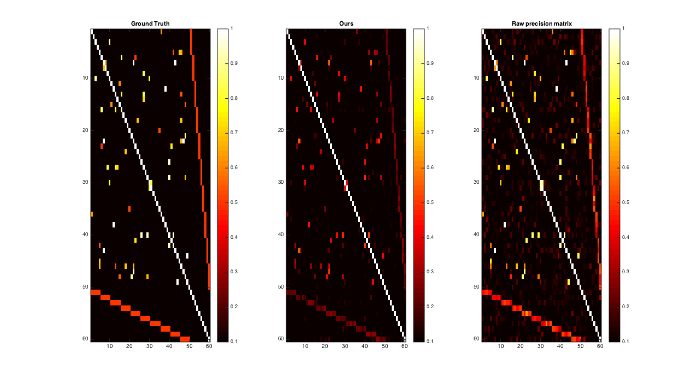

DEMO for "Latent Variable Graphical Model Selection using Harmonic Analysis"
Won Hwa Kim*, Hyunwoo J. Kim*, Nagesh Adluru, Vikas Singh, Latent Variable Graphical Model Selection using Harmonic Analysis: Applications to the Human Connectome Project (HCP), Computer Vision and Pattern Recognition (CVPR) , June, 2016 (Spotlight). Both * are the joint first authors.
Project page: http://pages.cs.wisc.edu/~hwkim/projects/k-gmm/
Github repository: http://github.com/MLman/lvgm-cvpr2016/
Github page: http://mlman.github.io/lvgm-cvpr2016/
The last update by Hyunwoo J Kim 2016/06/24 13:43:24 (CDT) (CST)
Contents
Data synthesis
clc;clear;close all; rng default N = 70; NO = 50; NC = 10; density = .5e-1; % a rough estimate of the amount of edges [theta,theta_GT]= random_sparse_network(NO, NC, N, density); % covariance matrix sigma = pinv(theta); sigma = (sigma+sigma')./2; mu = zeros(1,N); nsamples = 2000; r = mvnrnd(mu,sigma,nsamples); Xo = r(1:nsamples, 1:NO+NC); Cov = Xo'*Xo./nsamples; P = pinv(Cov);
Proposed method.
A0 = inv(Cov); invA0 = Cov; [V, D] = eig(Cov); lambda = diag(D); % kernel function kid = 1; kernel = mysgwt_func(kid); option.c1 =0.01; % step size option.gamma = 2; % sparsity parmeter` option.s0 = .2; % intial point option.tol = 1e-5; % tolerance option.niter = 20000; % number of iteration option.kernel = kernel; % Normalized Kernel function and derivative. tic; [A, s_opt, ghistory, fhistory] = faster_solverK(V, D, option); toc; thetaO = theta(1:NO+NC, 1:NO+NC) ; AA = abs(A); PP = abs(P); low = 0.01; high = .5;
iter 1, f=2.284884 |grad|=0.000055, s=0.200001 iter 2, f=2.284894 |grad|=0.000055, s=0.200001 iter 3, f=2.284905 |grad|=0.000055, s=0.200002 iter 4, f=2.284916 |grad|=0.000055, s=0.200002 iter 5, f=2.284927 |grad|=0.000055, s=0.200003 iter 6, f=2.284938 |grad|=0.000055, s=0.200003 iter 7, f=2.284949 |grad|=0.000055, s=0.200004 iter 8, f=2.284960 |grad|=0.000055, s=0.200004 iter 9, f=2.284971 |grad|=0.000055, s=0.200005 iter 10, f=2.284982 |grad|=0.000055, s=0.200005 iter 11, f=2.284993 |grad|=0.000055, s=0.200006 iter 12, f=2.285004 |grad|=0.000055, s=0.200007 iter 13, f=2.285015 |grad|=0.000055, s=0.200007 iter 14, f=2.285026 |grad|=0.000055, s=0.200008 iter 15, f=2.285037 |grad|=0.000055, s=0.200008 iter 16, f=2.285048 |grad|=0.000055, s=0.200009 iter 17, f=2.285059 |grad|=0.000055, s=0.200009 iter 18, f=2.285070 |grad|=0.000055, s=0.200010 iter 19, f=2.285080 |grad|=0.000055, s=0.200010 iter 20, f=2.285091 |grad|=0.000055, s=0.200011 iter 21, f=2.285102 |grad|=0.000054, s=0.200011 iter 22, f=2.285113 |grad|=0.000054, s=0.200012 iter 23, f=2.285124 |grad|=0.000054, s=0.200013 iter 24, f=2.285135 |grad|=0.000054, s=0.200013 iter 25, f=2.285146 |grad|=0.000054, s=0.200014 iter 26, f=2.285157 |grad|=0.000054, s=0.200014 iter 27, f=2.285168 |grad|=0.000054, s=0.200015 iter 28, f=2.285179 |grad|=0.000054, s=0.200015 iter 29, f=2.285189 |grad|=0.000054, s=0.200016 iter 30, f=2.285200 |grad|=0.000054, s=0.200016 iter 31, f=2.285211 |grad|=0.000054, s=0.200017 iter 32, f=2.285222 |grad|=0.000054, s=0.200017 iter 33, f=2.285233 |grad|=0.000054, s=0.200018 iter 34, f=2.285244 |grad|=0.000054, s=0.200019 iter 35, f=2.285255 |grad|=0.000054, s=0.200019 iter 36, f=2.285266 |grad|=0.000054, s=0.200020 iter 37, f=2.285276 |grad|=0.000054, s=0.200020 iter 38, f=2.285287 |grad|=0.000054, s=0.200021 iter 39, f=2.285298 |grad|=0.000054, s=0.200021 iter 40, f=2.285309 |grad|=0.000054, s=0.200022 iter 41, f=2.285320 |grad|=0.000054, s=0.200022 iter 42, f=2.285331 |grad|=0.000054, s=0.200023 iter 43, f=2.285342 |grad|=0.000054, s=0.200023 iter 44, f=2.285352 |grad|=0.000054, s=0.200024 iter 45, f=2.285363 |grad|=0.000054, s=0.200025 iter 46, f=2.285374 |grad|=0.000054, s=0.200025 iter 47, f=2.285385 |grad|=0.000054, s=0.200026 iter 48, f=2.285396 |grad|=0.000054, s=0.200026 iter 49, f=2.285407 |grad|=0.000054, s=0.200027 iter 50, f=2.285417 |grad|=0.000054, s=0.200027 iter 51, f=2.285428 |grad|=0.000054, s=0.200028 iter 52, f=2.285439 |grad|=0.000054, s=0.200028 iter 53, f=2.285450 |grad|=0.000054, s=0.200029 iter 54, f=2.285461 |grad|=0.000054, s=0.200029 iter 55, f=2.285472 |grad|=0.000054, s=0.200030 iter 56, f=2.285482 |grad|=0.000054, s=0.200030 iter 57, f=2.285493 |grad|=0.000054, s=0.200031 iter 58, f=2.285504 |grad|=0.000054, s=0.200032 iter 59, f=2.285515 |grad|=0.000054, s=0.200032 iter 60, f=2.285526 |grad|=0.000054, s=0.200033 iter 61, f=2.285536 |grad|=0.000054, s=0.200033 iter 62, f=2.285547 |grad|=0.000054, s=0.200034 iter 63, f=2.285558 |grad|=0.000054, s=0.200034 iter 64, f=2.285569 |grad|=0.000054, s=0.200035 iter 65, f=2.285580 |grad|=0.000054, s=0.200035 iter 66, f=2.285590 |grad|=0.000054, s=0.200036 iter 67, f=2.285601 |grad|=0.000054, s=0.200036 iter 68, f=2.285612 |grad|=0.000054, s=0.200037 iter 69, f=2.285623 |grad|=0.000054, s=0.200037 iter 70, f=2.285634 |grad|=0.000054, s=0.200038 iter 71, f=2.285644 |grad|=0.000054, s=0.200039 iter 72, f=2.285655 |grad|=0.000054, s=0.200039 iter 73, f=2.285666 |grad|=0.000054, s=0.200040 iter 74, f=2.285677 |grad|=0.000054, s=0.200040 iter 75, f=2.285687 |grad|=0.000054, s=0.200041 iter 76, f=2.285698 |grad|=0.000054, s=0.200041 iter 77, f=2.285709 |grad|=0.000054, s=0.200042 iter 78, f=2.285720 |grad|=0.000054, s=0.200042 iter 79, f=2.285730 |grad|=0.000054, s=0.200043 iter 80, f=2.285741 |grad|=0.000054, s=0.200043 iter 81, f=2.285752 |grad|=0.000054, s=0.200044 iter 82, f=2.285763 |grad|=0.000054, s=0.200044 iter 83, f=2.285773 |grad|=0.000054, s=0.200045 iter 84, f=2.285784 |grad|=0.000054, s=0.200046 iter 85, f=2.285795 |grad|=0.000054, s=0.200046 iter 86, f=2.285806 |grad|=0.000054, s=0.200047 iter 87, f=2.285816 |grad|=0.000054, s=0.200047 iter 88, f=2.285827 |grad|=0.000054, s=0.200048 iter 89, f=2.285838 |grad|=0.000054, s=0.200048 iter 90, f=2.285848 |grad|=0.000054, s=0.200049 iter 91, f=2.285859 |grad|=0.000054, s=0.200049 iter 92, f=2.285870 |grad|=0.000054, s=0.200050 iter 93, f=2.285881 |grad|=0.000053, s=0.200050 iter 94, f=2.285891 |grad|=0.000053, s=0.200051 iter 95, f=2.285902 |grad|=0.000053, s=0.200051 iter 96, f=2.285913 |grad|=0.000053, s=0.200052 iter 97, f=2.285923 |grad|=0.000053, s=0.200052 iter 98, f=2.285934 |grad|=0.000053, s=0.200053 iter 99, f=2.285945 |grad|=0.000053, s=0.200054 iter 100, f=2.285956 |grad|=0.000053, s=0.200054 iter 101, f=2.285966 |grad|=0.000053, s=0.200055 iter 102, f=2.285977 |grad|=0.000053, s=0.200055 iter 103, f=2.285988 |grad|=0.000053, s=0.200056 iter 104, f=2.285998 |grad|=0.000053, s=0.200056 iter 105, f=2.286009 |grad|=0.000053, s=0.200057 iter 106, f=2.286020 |grad|=0.000053, s=0.200057 iter 107, f=2.286030 |grad|=0.000053, s=0.200058 iter 108, f=2.286041 |grad|=0.000053, s=0.200058 iter 109, f=2.286052 |grad|=0.000053, s=0.200059 iter 110, f=2.286062 |grad|=0.000053, s=0.200059 iter 111, f=2.286073 |grad|=0.000053, s=0.200060 iter 112, f=2.286084 |grad|=0.000053, s=0.200060 iter 113, f=2.286094 |grad|=0.000053, s=0.200061 iter 114, f=2.286105 |grad|=0.000053, s=0.200062 iter 115, f=2.286116 |grad|=0.000053, s=0.200062 iter 116, f=2.286126 |grad|=0.000053, s=0.200063 iter 117, f=2.286137 |grad|=0.000053, s=0.200063 iter 118, f=2.286148 |grad|=0.000053, s=0.200064 iter 119, f=2.286158 |grad|=0.000053, s=0.200064 iter 120, f=2.286169 |grad|=0.000053, s=0.200065 iter 121, f=2.286180 |grad|=0.000053, s=0.200065 iter 122, f=2.286190 |grad|=0.000053, s=0.200066 iter 123, f=2.286201 |grad|=0.000053, s=0.200066 iter 124, f=2.286211 |grad|=0.000053, s=0.200067 iter 125, f=2.286222 |grad|=0.000053, s=0.200067 iter 126, f=2.286233 |grad|=0.000053, s=0.200068 iter 127, f=2.286243 |grad|=0.000053, s=0.200068 iter 128, f=2.286254 |grad|=0.000053, s=0.200069 iter 129, f=2.286265 |grad|=0.000053, s=0.200070 iter 130, f=2.286275 |grad|=0.000053, s=0.200070 iter 131, f=2.286286 |grad|=0.000053, s=0.200071 iter 132, f=2.286296 |grad|=0.000053, s=0.200071 iter 133, f=2.286307 |grad|=0.000053, s=0.200072 iter 134, f=2.286318 |grad|=0.000053, s=0.200072 iter 135, f=2.286328 |grad|=0.000053, s=0.200073 iter 136, f=2.286339 |grad|=0.000053, s=0.200073 iter 137, f=2.286349 |grad|=0.000053, s=0.200074 iter 138, f=2.286360 |grad|=0.000053, s=0.200074 iter 139, f=2.286371 |grad|=0.000053, s=0.200075 iter 140, f=2.286381 |grad|=0.000053, s=0.200075 iter 141, f=2.286392 |grad|=0.000053, s=0.200076 iter 142, f=2.286402 |grad|=0.000053, s=0.200076 iter 143, f=2.286413 |grad|=0.000053, s=0.200077 iter 144, f=2.286423 |grad|=0.000053, s=0.200077 iter 145, f=2.286434 |grad|=0.000053, s=0.200078 iter 146, f=2.286445 |grad|=0.000053, s=0.200079 iter 147, f=2.286455 |grad|=0.000053, s=0.200079 iter 148, f=2.286466 |grad|=0.000053, s=0.200080 iter 149, f=2.286476 |grad|=0.000053, s=0.200080 iter 150, f=2.286487 |grad|=0.000053, s=0.200081 iter 151, f=2.286497 |grad|=0.000053, s=0.200081 iter 152, f=2.286508 |grad|=0.000053, s=0.200082 iter 153, f=2.286519 |grad|=0.000053, s=0.200082 iter 154, f=2.286529 |grad|=0.000053, s=0.200083 iter 155, f=2.286540 |grad|=0.000053, s=0.200083 iter 156, f=2.286550 |grad|=0.000053, s=0.200084 iter 157, f=2.286561 |grad|=0.000053, s=0.200084 iter 158, f=2.286571 |grad|=0.000053, s=0.200085 iter 159, f=2.286582 |grad|=0.000053, s=0.200085 iter 160, f=2.286592 |grad|=0.000053, s=0.200086 iter 161, f=2.286603 |grad|=0.000053, s=0.200086 iter 162, f=2.286613 |grad|=0.000053, s=0.200087 iter 163, f=2.286624 |grad|=0.000053, s=0.200087 iter 164, f=2.286634 |grad|=0.000053, s=0.200088 iter 165, f=2.286645 |grad|=0.000053, s=0.200089 iter 166, f=2.286655 |grad|=0.000053, s=0.200089 iter 167, f=2.286666 |grad|=0.000053, s=0.200090 iter 168, f=2.286677 |grad|=0.000052, s=0.200090 iter 169, f=2.286687 |grad|=0.000052, s=0.200091 iter 170, f=2.286698 |grad|=0.000052, s=0.200091 iter 171, f=2.286708 |grad|=0.000052, s=0.200092 iter 172, f=2.286719 |grad|=0.000052, s=0.200092 iter 173, f=2.286729 |grad|=0.000052, s=0.200093 iter 174, f=2.286740 |grad|=0.000052, s=0.200093 iter 175, f=2.286750 |grad|=0.000052, s=0.200094 iter 176, f=2.286761 |grad|=0.000052, s=0.200094 iter 177, f=2.286771 |grad|=0.000052, s=0.200095 iter 178, f=2.286782 |grad|=0.000052, s=0.200095 iter 179, f=2.286792 |grad|=0.000052, s=0.200096 iter 180, f=2.286802 |grad|=0.000052, s=0.200096 iter 181, f=2.286813 |grad|=0.000052, s=0.200097 iter 182, f=2.286823 |grad|=0.000052, s=0.200097 iter 183, f=2.286834 |grad|=0.000052, s=0.200098 iter 184, f=2.286844 |grad|=0.000052, s=0.200098 iter 185, f=2.286855 |grad|=0.000052, s=0.200099 iter 186, f=2.286865 |grad|=0.000052, s=0.200100 iter 187, f=2.286876 |grad|=0.000052, s=0.200100 iter 188, f=2.286886 |grad|=0.000052, s=0.200101 iter 189, f=2.286897 |grad|=0.000052, s=0.200101 iter 190, f=2.286907 |grad|=0.000052, s=0.200102 iter 191, f=2.286918 |grad|=0.000052, s=0.200102 iter 192, f=2.286928 |grad|=0.000052, s=0.200103 iter 193, f=2.286939 |grad|=0.000052, s=0.200103 iter 194, f=2.286949 |grad|=0.000052, s=0.200104 iter 195, f=2.286959 |grad|=0.000052, s=0.200104 iter 196, f=2.286970 |grad|=0.000052, s=0.200105 iter 197, f=2.286980 |grad|=0.000052, s=0.200105 iter 198, f=2.286991 |grad|=0.000052, s=0.200106 iter 199, f=2.287001 |grad|=0.000052, s=0.200106 iter 200, f=2.287012 |grad|=0.000052, s=0.200107 iter 201, f=2.287022 |grad|=0.000052, s=0.200107 iter 202, f=2.287032 |grad|=0.000052, s=0.200108 iter 203, f=2.287043 |grad|=0.000052, s=0.200108 iter 204, f=2.287053 |grad|=0.000052, s=0.200109 iter 205, f=2.287064 |grad|=0.000052, s=0.200109 iter 206, f=2.287074 |grad|=0.000052, s=0.200110 iter 207, f=2.287084 |grad|=0.000052, s=0.200110 iter 208, f=2.287095 |grad|=0.000052, s=0.200111 iter 209, f=2.287105 |grad|=0.000052, s=0.200111 iter 210, f=2.287116 |grad|=0.000052, s=0.200112 iter 211, f=2.287126 |grad|=0.000052, s=0.200113 iter 212, f=2.287137 |grad|=0.000052, s=0.200113 iter 213, f=2.287147 |grad|=0.000052, s=0.200114 iter 214, f=2.287157 |grad|=0.000052, s=0.200114 iter 215, f=2.287168 |grad|=0.000052, s=0.200115 iter 216, f=2.287178 |grad|=0.000052, s=0.200115 iter 217, f=2.287188 |grad|=0.000052, s=0.200116 iter 218, f=2.287199 |grad|=0.000052, s=0.200116 iter 219, f=2.287209 |grad|=0.000052, s=0.200117 iter 220, f=2.287220 |grad|=0.000052, s=0.200117 iter 221, f=2.287230 |grad|=0.000052, s=0.200118 iter 222, f=2.287240 |grad|=0.000052, s=0.200118 iter 223, f=2.287251 |grad|=0.000052, s=0.200119 iter 224, f=2.287261 |grad|=0.000052, s=0.200119 iter 225, f=2.287271 |grad|=0.000052, s=0.200120 iter 226, f=2.287282 |grad|=0.000052, s=0.200120 iter 227, f=2.287292 |grad|=0.000052, s=0.200121 iter 228, f=2.287303 |grad|=0.000052, s=0.200121 iter 229, f=2.287313 |grad|=0.000052, s=0.200122 iter 230, f=2.287323 |grad|=0.000052, s=0.200122 iter 231, f=2.287334 |grad|=0.000052, s=0.200123 iter 232, f=2.287344 |grad|=0.000052, s=0.200123 iter 233, f=2.287354 |grad|=0.000052, s=0.200124 iter 234, f=2.287365 |grad|=0.000052, s=0.200124 iter 235, f=2.287375 |grad|=0.000052, s=0.200125 iter 236, f=2.287385 |grad|=0.000052, s=0.200125 iter 237, f=2.287396 |grad|=0.000052, s=0.200126 iter 238, f=2.287406 |grad|=0.000052, s=0.200126 iter 239, f=2.287416 |grad|=0.000052, s=0.200127 iter 240, f=2.287427 |grad|=0.000052, s=0.200128 iter 241, f=2.287437 |grad|=0.000052, s=0.200128 iter 242, f=2.287447 |grad|=0.000052, s=0.200129 iter 243, f=2.287458 |grad|=0.000051, s=0.200129 iter 244, f=2.287468 |grad|=0.000051, s=0.200130 iter 245, f=2.287478 |grad|=0.000051, s=0.200130 iter 246, f=2.287488 |grad|=0.000051, s=0.200131 iter 247, f=2.287499 |grad|=0.000051, s=0.200131 iter 248, f=2.287509 |grad|=0.000051, s=0.200132 iter 249, f=2.287519 |grad|=0.000051, s=0.200132 iter 250, f=2.287530 |grad|=0.000051, s=0.200133 iter 251, f=2.287540 |grad|=0.000051, s=0.200133 iter 252, f=2.287550 |grad|=0.000051, s=0.200134 iter 253, f=2.287561 |grad|=0.000051, s=0.200134 iter 254, f=2.287571 |grad|=0.000051, s=0.200135 iter 255, f=2.287581 |grad|=0.000051, s=0.200135 iter 256, f=2.287591 |grad|=0.000051, s=0.200136 iter 257, f=2.287602 |grad|=0.000051, s=0.200136 iter 258, f=2.287612 |grad|=0.000051, s=0.200137 iter 259, f=2.287622 |grad|=0.000051, s=0.200137 iter 260, f=2.287633 |grad|=0.000051, s=0.200138 iter 261, f=2.287643 |grad|=0.000051, s=0.200138 iter 262, f=2.287653 |grad|=0.000051, s=0.200139 iter 263, f=2.287663 |grad|=0.000051, s=0.200139 iter 264, f=2.287674 |grad|=0.000051, s=0.200140 iter 265, f=2.287684 |grad|=0.000051, s=0.200140 iter 266, f=2.287694 |grad|=0.000051, s=0.200141 iter 267, f=2.287704 |grad|=0.000051, s=0.200141 iter 268, f=2.287715 |grad|=0.000051, s=0.200142 iter 269, f=2.287725 |grad|=0.000051, s=0.200142 iter 270, f=2.287735 |grad|=0.000051, s=0.200143 iter 271, f=2.287745 |grad|=0.000051, s=0.200143 iter 272, f=2.287756 |grad|=0.000051, s=0.200144 iter 273, f=2.287766 |grad|=0.000051, s=0.200144 iter 274, f=2.287776 |grad|=0.000051, s=0.200145 iter 275, f=2.287786 |grad|=0.000051, s=0.200145 iter 276, f=2.287797 |grad|=0.000051, s=0.200146 iter 277, f=2.287807 |grad|=0.000051, s=0.200146 iter 278, f=2.287817 |grad|=0.000051, s=0.200147 iter 279, f=2.287827 |grad|=0.000051, s=0.200148 iter 280, f=2.287837 |grad|=0.000051, s=0.200148 iter 281, f=2.287848 |grad|=0.000051, s=0.200149 iter 282, f=2.287858 |grad|=0.000051, s=0.200149 iter 283, f=2.287868 |grad|=0.000051, s=0.200150 iter 284, f=2.287878 |grad|=0.000051, s=0.200150 iter 285, f=2.287888 |grad|=0.000051, s=0.200151 iter 286, f=2.287899 |grad|=0.000051, s=0.200151 iter 287, f=2.287909 |grad|=0.000051, s=0.200152 iter 288, f=2.287919 |grad|=0.000051, s=0.200152 iter 289, f=2.287929 |grad|=0.000051, s=0.200153 iter 290, f=2.287939 |grad|=0.000051, s=0.200153 iter 291, f=2.287950 |grad|=0.000051, s=0.200154 iter 292, f=2.287960 |grad|=0.000051, s=0.200154 iter 293, f=2.287970 |grad|=0.000051, s=0.200155 iter 294, f=2.287980 |grad|=0.000051, s=0.200155 iter 295, f=2.287990 |grad|=0.000051, s=0.200156 iter 296, f=2.288001 |grad|=0.000051, s=0.200156 iter 297, f=2.288011 |grad|=0.000051, s=0.200157 iter 298, f=2.288021 |grad|=0.000051, s=0.200157 iter 299, f=2.288031 |grad|=0.000051, s=0.200158 iter 300, f=2.288041 |grad|=0.000051, s=0.200158 iter 301, f=2.288051 |grad|=0.000051, s=0.200159 iter 302, f=2.288062 |grad|=0.000051, s=0.200159 iter 303, f=2.288072 |grad|=0.000051, s=0.200160 iter 304, f=2.288082 |grad|=0.000051, s=0.200160 iter 305, f=2.288092 |grad|=0.000051, s=0.200161 iter 306, f=2.288102 |grad|=0.000051, s=0.200161 iter 307, f=2.288112 |grad|=0.000051, s=0.200162 iter 308, f=2.288123 |grad|=0.000051, s=0.200162 iter 309, f=2.288133 |grad|=0.000051, s=0.200163 iter 310, f=2.288143 |grad|=0.000051, s=0.200163 iter 311, f=2.288153 |grad|=0.000051, s=0.200164 iter 312, f=2.288163 |grad|=0.000051, s=0.200164 iter 313, f=2.288173 |grad|=0.000051, s=0.200165 iter 314, f=2.288183 |grad|=0.000051, s=0.200165 iter 315, f=2.288194 |grad|=0.000051, s=0.200166 iter 316, f=2.288204 |grad|=0.000051, s=0.200166 iter 317, f=2.288214 |grad|=0.000051, s=0.200167 iter 318, f=2.288224 |grad|=0.000051, s=0.200167 iter 319, f=2.288234 |grad|=0.000051, s=0.200168 iter 320, f=2.288244 |grad|=0.000050, s=0.200168 iter 321, f=2.288254 |grad|=0.000050, s=0.200169 iter 322, f=2.288264 |grad|=0.000050, s=0.200169 iter 323, f=2.288274 |grad|=0.000050, s=0.200170 iter 324, f=2.288285 |grad|=0.000050, s=0.200170 iter 325, f=2.288295 |grad|=0.000050, s=0.200171 iter 326, f=2.288305 |grad|=0.000050, s=0.200171 iter 327, f=2.288315 |grad|=0.000050, s=0.200172 iter 328, f=2.288325 |grad|=0.000050, s=0.200172 iter 329, f=2.288335 |grad|=0.000050, s=0.200173 iter 330, f=2.288345 |grad|=0.000050, s=0.200173 iter 331, f=2.288355 |grad|=0.000050, s=0.200174 iter 332, f=2.288365 |grad|=0.000050, s=0.200174 iter 333, f=2.288375 |grad|=0.000050, s=0.200175 iter 334, f=2.288386 |grad|=0.000050, s=0.200175 iter 335, f=2.288396 |grad|=0.000050, s=0.200176 iter 336, f=2.288406 |grad|=0.000050, s=0.200176 iter 337, f=2.288416 |grad|=0.000050, s=0.200177 iter 338, f=2.288426 |grad|=0.000050, s=0.200177 iter 339, f=2.288436 |grad|=0.000050, s=0.200178 iter 340, f=2.288446 |grad|=0.000050, s=0.200178 iter 341, f=2.288456 |grad|=0.000050, s=0.200179 iter 342, f=2.288466 |grad|=0.000050, s=0.200179 iter 343, f=2.288476 |grad|=0.000050, s=0.200180 iter 344, f=2.288486 |grad|=0.000050, s=0.200180 iter 345, f=2.288496 |grad|=0.000050, s=0.200181 iter 346, f=2.288506 |grad|=0.000050, s=0.200181 iter 347, f=2.288516 |grad|=0.000050, s=0.200182 iter 348, f=2.288526 |grad|=0.000050, s=0.200182 iter 349, f=2.288536 |grad|=0.000050, s=0.200183 iter 350, f=2.288547 |grad|=0.000050, s=0.200183 iter 351, f=2.288557 |grad|=0.000050, s=0.200184 iter 352, f=2.288567 |grad|=0.000050, s=0.200184 iter 353, f=2.288577 |grad|=0.000050, s=0.200185 iter 354, f=2.288587 |grad|=0.000050, s=0.200185 iter 355, f=2.288597 |grad|=0.000050, s=0.200186 iter 356, f=2.288607 |grad|=0.000050, s=0.200186 iter 357, f=2.288617 |grad|=0.000050, s=0.200187 iter 358, f=2.288627 |grad|=0.000050, s=0.200187 iter 359, f=2.288637 |grad|=0.000050, s=0.200188 iter 360, f=2.288647 |grad|=0.000050, s=0.200188 iter 361, f=2.288657 |grad|=0.000050, s=0.200189 iter 362, f=2.288667 |grad|=0.000050, s=0.200189 iter 363, f=2.288677 |grad|=0.000050, s=0.200190 iter 364, f=2.288687 |grad|=0.000050, s=0.200190 iter 365, f=2.288697 |grad|=0.000050, s=0.200191 iter 366, f=2.288707 |grad|=0.000050, s=0.200191 iter 367, f=2.288717 |grad|=0.000050, s=0.200192 iter 368, f=2.288727 |grad|=0.000050, s=0.200192 iter 369, f=2.288737 |grad|=0.000050, s=0.200193 iter 370, f=2.288747 |grad|=0.000050, s=0.200193 iter 371, f=2.288757 |grad|=0.000050, s=0.200194 iter 372, f=2.288767 |grad|=0.000050, s=0.200194 iter 373, f=2.288777 |grad|=0.000050, s=0.200195 iter 374, f=2.288787 |grad|=0.000050, s=0.200195 iter 375, f=2.288797 |grad|=0.000050, s=0.200196 iter 376, f=2.288807 |grad|=0.000050, s=0.200196 iter 377, f=2.288817 |grad|=0.000050, s=0.200197 iter 378, f=2.288827 |grad|=0.000050, s=0.200197 iter 379, f=2.288837 |grad|=0.000050, s=0.200198 iter 380, f=2.288847 |grad|=0.000050, s=0.200198 iter 381, f=2.288857 |grad|=0.000050, s=0.200199 iter 382, f=2.288867 |grad|=0.000050, s=0.200199 iter 383, f=2.288876 |grad|=0.000050, s=0.200200 iter 384, f=2.288886 |grad|=0.000050, s=0.200200 iter 385, f=2.288896 |grad|=0.000050, s=0.200201 iter 386, f=2.288906 |grad|=0.000050, s=0.200201 iter 387, f=2.288916 |grad|=0.000050, s=0.200202 iter 388, f=2.288926 |grad|=0.000050, s=0.200202 iter 389, f=2.288936 |grad|=0.000050, s=0.200203 iter 390, f=2.288946 |grad|=0.000050, s=0.200203 iter 391, f=2.288956 |grad|=0.000050, s=0.200204 iter 392, f=2.288966 |grad|=0.000050, s=0.200204 iter 393, f=2.288976 |grad|=0.000050, s=0.200205 iter 394, f=2.288986 |grad|=0.000050, s=0.200205 iter 395, f=2.288996 |grad|=0.000050, s=0.200206 iter 396, f=2.289006 |grad|=0.000050, s=0.200206 iter 397, f=2.289016 |grad|=0.000050, s=0.200207 iter 398, f=2.289026 |grad|=0.000050, s=0.200207 iter 399, f=2.289035 |grad|=0.000049, s=0.200208 iter 400, f=2.289045 |grad|=0.000049, s=0.200208 iter 401, f=2.289055 |grad|=0.000049, s=0.200209 iter 402, f=2.289065 |grad|=0.000049, s=0.200209 iter 403, f=2.289075 |grad|=0.000049, s=0.200210 iter 404, f=2.289085 |grad|=0.000049, s=0.200210 iter 405, f=2.289095 |grad|=0.000049, s=0.200211 iter 406, f=2.289105 |grad|=0.000049, s=0.200211 iter 407, f=2.289115 |grad|=0.000049, s=0.200212 iter 408, f=2.289125 |grad|=0.000049, s=0.200212 iter 409, f=2.289135 |grad|=0.000049, s=0.200213 iter 410, f=2.289144 |grad|=0.000049, s=0.200213 iter 411, f=2.289154 |grad|=0.000049, s=0.200214 iter 412, f=2.289164 |grad|=0.000049, s=0.200214 iter 413, f=2.289174 |grad|=0.000049, s=0.200215 iter 414, f=2.289184 |grad|=0.000049, s=0.200215 iter 415, f=2.289194 |grad|=0.000049, s=0.200216 iter 416, f=2.289204 |grad|=0.000049, s=0.200216 iter 417, f=2.289214 |grad|=0.000049, s=0.200217 iter 418, f=2.289223 |grad|=0.000049, s=0.200217 iter 419, f=2.289233 |grad|=0.000049, s=0.200218 iter 420, f=2.289243 |grad|=0.000049, s=0.200218 iter 421, f=2.289253 |grad|=0.000049, s=0.200219 iter 422, f=2.289263 |grad|=0.000049, s=0.200219 iter 423, f=2.289273 |grad|=0.000049, s=0.200220 iter 424, f=2.289283 |grad|=0.000049, s=0.200220 iter 425, f=2.289292 |grad|=0.000049, s=0.200221 iter 426, f=2.289302 |grad|=0.000049, s=0.200221 iter 427, f=2.289312 |grad|=0.000049, s=0.200222 iter 428, f=2.289322 |grad|=0.000049, s=0.200222 iter 429, f=2.289332 |grad|=0.000049, s=0.200223 iter 430, f=2.289342 |grad|=0.000049, s=0.200223 iter 431, f=2.289352 |grad|=0.000049, s=0.200224 iter 432, f=2.289361 |grad|=0.000049, s=0.200224 iter 433, f=2.289371 |grad|=0.000049, s=0.200225 iter 434, f=2.289381 |grad|=0.000049, s=0.200225 iter 435, f=2.289391 |grad|=0.000049, s=0.200226 iter 436, f=2.289401 |grad|=0.000049, s=0.200226 iter 437, f=2.289411 |grad|=0.000049, s=0.200227 iter 438, f=2.289420 |grad|=0.000049, s=0.200227 iter 439, f=2.289430 |grad|=0.000049, s=0.200228 iter 440, f=2.289440 |grad|=0.000049, s=0.200228 iter 441, f=2.289450 |grad|=0.000049, s=0.200228 iter 442, f=2.289460 |grad|=0.000049, s=0.200229 iter 443, f=2.289469 |grad|=0.000049, s=0.200229 iter 444, f=2.289479 |grad|=0.000049, s=0.200230 iter 445, f=2.289489 |grad|=0.000049, s=0.200230 iter 446, f=2.289499 |grad|=0.000049, s=0.200231 iter 447, f=2.289509 |grad|=0.000049, s=0.200231 iter 448, f=2.289518 |grad|=0.000049, s=0.200232 iter 449, f=2.289528 |grad|=0.000049, s=0.200232 iter 450, f=2.289538 |grad|=0.000049, s=0.200233 iter 451, f=2.289548 |grad|=0.000049, s=0.200233 iter 452, f=2.289558 |grad|=0.000049, s=0.200234 iter 453, f=2.289567 |grad|=0.000049, s=0.200234 iter 454, f=2.289577 |grad|=0.000049, s=0.200235 iter 455, f=2.289587 |grad|=0.000049, s=0.200235 iter 456, f=2.289597 |grad|=0.000049, s=0.200236 iter 457, f=2.289606 |grad|=0.000049, s=0.200236 iter 458, f=2.289616 |grad|=0.000049, s=0.200237 iter 459, f=2.289626 |grad|=0.000049, s=0.200237 iter 460, f=2.289636 |grad|=0.000049, s=0.200238 iter 461, f=2.289646 |grad|=0.000049, s=0.200238 iter 462, f=2.289655 |grad|=0.000049, s=0.200239 iter 463, f=2.289665 |grad|=0.000049, s=0.200239 iter 464, f=2.289675 |grad|=0.000049, s=0.200240 iter 465, f=2.289685 |grad|=0.000049, s=0.200240 iter 466, f=2.289694 |grad|=0.000049, s=0.200241 iter 467, f=2.289704 |grad|=0.000049, s=0.200241 iter 468, f=2.289714 |grad|=0.000049, s=0.200242 iter 469, f=2.289724 |grad|=0.000049, s=0.200242 iter 470, f=2.289733 |grad|=0.000049, s=0.200243 iter 471, f=2.289743 |grad|=0.000049, s=0.200243 iter 472, f=2.289753 |grad|=0.000049, s=0.200244 iter 473, f=2.289763 |grad|=0.000049, s=0.200244 iter 474, f=2.289772 |grad|=0.000049, s=0.200245 iter 475, f=2.289782 |grad|=0.000049, s=0.200245 iter 476, f=2.289792 |grad|=0.000049, s=0.200246 iter 477, f=2.289801 |grad|=0.000049, s=0.200246 iter 478, f=2.289811 |grad|=0.000049, s=0.200247 iter 479, f=2.289821 |grad|=0.000048, s=0.200247 iter 480, f=2.289831 |grad|=0.000048, s=0.200247 iter 481, f=2.289840 |grad|=0.000048, s=0.200248 iter 482, f=2.289850 |grad|=0.000048, s=0.200248 iter 483, f=2.289860 |grad|=0.000048, s=0.200249 iter 484, f=2.289869 |grad|=0.000048, s=0.200249 iter 485, f=2.289879 |grad|=0.000048, s=0.200250 iter 486, f=2.289889 |grad|=0.000048, s=0.200250 iter 487, f=2.289899 |grad|=0.000048, s=0.200251 iter 488, f=2.289908 |grad|=0.000048, s=0.200251 iter 489, f=2.289918 |grad|=0.000048, s=0.200252 iter 490, f=2.289928 |grad|=0.000048, s=0.200252 iter 491, f=2.289937 |grad|=0.000048, s=0.200253 iter 492, f=2.289947 |grad|=0.000048, s=0.200253 iter 493, f=2.289957 |grad|=0.000048, s=0.200254 iter 494, f=2.289966 |grad|=0.000048, s=0.200254 iter 495, f=2.289976 |grad|=0.000048, s=0.200255 iter 496, f=2.289986 |grad|=0.000048, s=0.200255 iter 497, f=2.289995 |grad|=0.000048, s=0.200256 iter 498, f=2.290005 |grad|=0.000048, s=0.200256 iter 499, f=2.290015 |grad|=0.000048, s=0.200257 iter 500, f=2.290024 |grad|=0.000048, s=0.200257 iter 501, f=2.290034 |grad|=0.000048, s=0.200258 iter 502, f=2.290044 |grad|=0.000048, s=0.200258 iter 503, f=2.290053 |grad|=0.000048, s=0.200259 iter 504, f=2.290063 |grad|=0.000048, s=0.200259 iter 505, f=2.290073 |grad|=0.000048, s=0.200260 iter 506, f=2.290082 |grad|=0.000048, s=0.200260 iter 507, f=2.290092 |grad|=0.000048, s=0.200261 iter 508, f=2.290102 |grad|=0.000048, s=0.200261 iter 509, f=2.290111 |grad|=0.000048, s=0.200261 iter 510, f=2.290121 |grad|=0.000048, s=0.200262 iter 511, f=2.290131 |grad|=0.000048, s=0.200262 iter 512, f=2.290140 |grad|=0.000048, s=0.200263 iter 513, f=2.290150 |grad|=0.000048, s=0.200263 iter 514, f=2.290160 |grad|=0.000048, s=0.200264 iter 515, f=2.290169 |grad|=0.000048, s=0.200264 iter 516, f=2.290179 |grad|=0.000048, s=0.200265 iter 517, f=2.290188 |grad|=0.000048, s=0.200265 iter 518, f=2.290198 |grad|=0.000048, s=0.200266 iter 519, f=2.290208 |grad|=0.000048, s=0.200266 iter 520, f=2.290217 |grad|=0.000048, s=0.200267 iter 521, f=2.290227 |grad|=0.000048, s=0.200267 iter 522, f=2.290237 |grad|=0.000048, s=0.200268 iter 523, f=2.290246 |grad|=0.000048, s=0.200268 iter 524, f=2.290256 |grad|=0.000048, s=0.200269 iter 525, f=2.290265 |grad|=0.000048, s=0.200269 iter 526, f=2.290275 |grad|=0.000048, s=0.200270 iter 527, f=2.290285 |grad|=0.000048, s=0.200270 iter 528, f=2.290294 |grad|=0.000048, s=0.200271 iter 529, f=2.290304 |grad|=0.000048, s=0.200271 iter 530, f=2.290313 |grad|=0.000048, s=0.200272 iter 531, f=2.290323 |grad|=0.000048, s=0.200272 iter 532, f=2.290333 |grad|=0.000048, s=0.200273 iter 533, f=2.290342 |grad|=0.000048, s=0.200273 iter 534, f=2.290352 |grad|=0.000048, s=0.200273 iter 535, f=2.290361 |grad|=0.000048, s=0.200274 iter 536, f=2.290371 |grad|=0.000048, s=0.200274 iter 537, f=2.290381 |grad|=0.000048, s=0.200275 iter 538, f=2.290390 |grad|=0.000048, s=0.200275 iter 539, f=2.290400 |grad|=0.000048, s=0.200276 iter 540, f=2.290409 |grad|=0.000048, s=0.200276 iter 541, f=2.290419 |grad|=0.000048, s=0.200277 iter 542, f=2.290428 |grad|=0.000048, s=0.200277 iter 543, f=2.290438 |grad|=0.000048, s=0.200278 iter 544, f=2.290448 |grad|=0.000045, s=0.200278 iter 545, f=2.290456 |grad|=0.000045, s=0.200279 iter 546, f=2.290465 |grad|=0.000045, s=0.200279 iter 547, f=2.290474 |grad|=0.000045, s=0.200280 iter 548, f=2.290483 |grad|=0.000045, s=0.200280 iter 549, f=2.290492 |grad|=0.000045, s=0.200280 iter 550, f=2.290501 |grad|=0.000045, s=0.200281 iter 551, f=2.290510 |grad|=0.000045, s=0.200281 iter 552, f=2.290519 |grad|=0.000045, s=0.200282 iter 553, f=2.290528 |grad|=0.000045, s=0.200282 iter 554, f=2.290537 |grad|=0.000045, s=0.200283 iter 555, f=2.290546 |grad|=0.000045, s=0.200283 iter 556, f=2.290555 |grad|=0.000045, s=0.200284 iter 557, f=2.290564 |grad|=0.000044, s=0.200284 iter 558, f=2.290573 |grad|=0.000044, s=0.200284 iter 559, f=2.290581 |grad|=0.000044, s=0.200285 iter 560, f=2.290590 |grad|=0.000044, s=0.200285 iter 561, f=2.290599 |grad|=0.000044, s=0.200286 iter 562, f=2.290608 |grad|=0.000044, s=0.200286 iter 563, f=2.290617 |grad|=0.000044, s=0.200287 iter 564, f=2.290626 |grad|=0.000044, s=0.200287 iter 565, f=2.290635 |grad|=0.000044, s=0.200288 iter 566, f=2.290644 |grad|=0.000044, s=0.200288 iter 567, f=2.290653 |grad|=0.000044, s=0.200288 iter 568, f=2.290662 |grad|=0.000044, s=0.200289 iter 569, f=2.290671 |grad|=0.000044, s=0.200289 iter 570, f=2.290679 |grad|=0.000044, s=0.200290 iter 571, f=2.290688 |grad|=0.000044, s=0.200290 iter 572, f=2.290697 |grad|=0.000044, s=0.200291 iter 573, f=2.290706 |grad|=0.000044, s=0.200291 iter 574, f=2.290715 |grad|=0.000044, s=0.200292 iter 575, f=2.290724 |grad|=0.000044, s=0.200292 iter 576, f=2.290733 |grad|=0.000044, s=0.200292 iter 577, f=2.290742 |grad|=0.000044, s=0.200293 iter 578, f=2.290750 |grad|=0.000044, s=0.200293 iter 579, f=2.290759 |grad|=0.000044, s=0.200294 iter 580, f=2.290768 |grad|=0.000044, s=0.200294 iter 581, f=2.290777 |grad|=0.000044, s=0.200295 iter 582, f=2.290786 |grad|=0.000044, s=0.200295 iter 583, f=2.290795 |grad|=0.000044, s=0.200296 iter 584, f=2.290804 |grad|=0.000044, s=0.200296 iter 585, f=2.290813 |grad|=0.000044, s=0.200296 iter 586, f=2.290821 |grad|=0.000044, s=0.200297 iter 587, f=2.290830 |grad|=0.000044, s=0.200297 iter 588, f=2.290839 |grad|=0.000044, s=0.200298 iter 589, f=2.290848 |grad|=0.000044, s=0.200298 iter 590, f=2.290857 |grad|=0.000044, s=0.200299 iter 591, f=2.290866 |grad|=0.000044, s=0.200299 iter 592, f=2.290874 |grad|=0.000044, s=0.200300 iter 593, f=2.290883 |grad|=0.000044, s=0.200300 iter 594, f=2.290892 |grad|=0.000044, s=0.200300 iter 595, f=2.290901 |grad|=0.000044, s=0.200301 iter 596, f=2.290910 |grad|=0.000044, s=0.200301 iter 597, f=2.290919 |grad|=0.000044, s=0.200302 iter 598, f=2.290927 |grad|=0.000044, s=0.200302 iter 599, f=2.290936 |grad|=0.000044, s=0.200303 iter 600, f=2.290945 |grad|=0.000044, s=0.200303 iter 601, f=2.290954 |grad|=0.000044, s=0.200303 iter 602, f=2.290963 |grad|=0.000044, s=0.200304 iter 603, f=2.290972 |grad|=0.000044, s=0.200304 iter 604, f=2.290980 |grad|=0.000044, s=0.200305 iter 605, f=2.290989 |grad|=0.000044, s=0.200305 iter 606, f=2.290998 |grad|=0.000044, s=0.200306 iter 607, f=2.291007 |grad|=0.000044, s=0.200306 iter 608, f=2.291016 |grad|=0.000044, s=0.200307 iter 609, f=2.291024 |grad|=0.000044, s=0.200307 iter 610, f=2.291033 |grad|=0.000044, s=0.200307 iter 611, f=2.291042 |grad|=0.000044, s=0.200308 iter 612, f=2.291051 |grad|=0.000044, s=0.200308 iter 613, f=2.291060 |grad|=0.000044, s=0.200309 iter 614, f=2.291068 |grad|=0.000044, s=0.200309 iter 615, f=2.291077 |grad|=0.000044, s=0.200310 iter 616, f=2.291086 |grad|=0.000044, s=0.200310 iter 617, f=2.291095 |grad|=0.000044, s=0.200310 iter 618, f=2.291104 |grad|=0.000044, s=0.200311 iter 619, f=2.291112 |grad|=0.000044, s=0.200311 iter 620, f=2.291121 |grad|=0.000044, s=0.200312 iter 621, f=2.291130 |grad|=0.000044, s=0.200312 iter 622, f=2.291139 |grad|=0.000044, s=0.200313 iter 623, f=2.291147 |grad|=0.000044, s=0.200313 iter 624, f=2.291156 |grad|=0.000044, s=0.200314 iter 625, f=2.291165 |grad|=0.000044, s=0.200314 iter 626, f=2.291174 |grad|=0.000044, s=0.200314 iter 627, f=2.291183 |grad|=0.000044, s=0.200315 iter 628, f=2.291191 |grad|=0.000044, s=0.200315 iter 629, f=2.291200 |grad|=0.000044, s=0.200316 iter 630, f=2.291209 |grad|=0.000044, s=0.200316 iter 631, f=2.291218 |grad|=0.000044, s=0.200317 iter 632, f=2.291226 |grad|=0.000044, s=0.200317 iter 633, f=2.291235 |grad|=0.000044, s=0.200317 iter 634, f=2.291244 |grad|=0.000044, s=0.200318 iter 635, f=2.291253 |grad|=0.000044, s=0.200318 iter 636, f=2.291261 |grad|=0.000044, s=0.200319 iter 637, f=2.291270 |grad|=0.000044, s=0.200319 iter 638, f=2.291279 |grad|=0.000044, s=0.200320 iter 639, f=2.291288 |grad|=0.000044, s=0.200320 iter 640, f=2.291296 |grad|=0.000044, s=0.200321 iter 641, f=2.291305 |grad|=0.000044, s=0.200321 iter 642, f=2.291314 |grad|=0.000044, s=0.200321 iter 643, f=2.291322 |grad|=0.000044, s=0.200322 iter 644, f=2.291331 |grad|=0.000044, s=0.200322 iter 645, f=2.291340 |grad|=0.000044, s=0.200323 iter 646, f=2.291349 |grad|=0.000043, s=0.200323 iter 647, f=2.291357 |grad|=0.000043, s=0.200324 iter 648, f=2.291366 |grad|=0.000043, s=0.200324 iter 649, f=2.291375 |grad|=0.000043, s=0.200324 iter 650, f=2.291383 |grad|=0.000043, s=0.200325 iter 651, f=2.291392 |grad|=0.000043, s=0.200325 iter 652, f=2.291401 |grad|=0.000043, s=0.200326 iter 653, f=2.291410 |grad|=0.000043, s=0.200326 iter 654, f=2.291418 |grad|=0.000043, s=0.200327 iter 655, f=2.291427 |grad|=0.000043, s=0.200327 iter 656, f=2.291436 |grad|=0.000043, s=0.200328 iter 657, f=2.291444 |grad|=0.000043, s=0.200328 iter 658, f=2.291453 |grad|=0.000043, s=0.200328 iter 659, f=2.291462 |grad|=0.000043, s=0.200329 iter 660, f=2.291470 |grad|=0.000043, s=0.200329 iter 661, f=2.291479 |grad|=0.000043, s=0.200330 iter 662, f=2.291488 |grad|=0.000043, s=0.200330 iter 663, f=2.291497 |grad|=0.000043, s=0.200331 iter 664, f=2.291505 |grad|=0.000043, s=0.200331 iter 665, f=2.291514 |grad|=0.000043, s=0.200331 iter 666, f=2.291523 |grad|=0.000043, s=0.200332 iter 667, f=2.291531 |grad|=0.000043, s=0.200332 iter 668, f=2.291540 |grad|=0.000043, s=0.200333 iter 669, f=2.291549 |grad|=0.000043, s=0.200333 iter 670, f=2.291557 |grad|=0.000043, s=0.200334 iter 671, f=2.291566 |grad|=0.000043, s=0.200334 iter 672, f=2.291575 |grad|=0.000043, s=0.200334 iter 673, f=2.291583 |grad|=0.000043, s=0.200335 iter 674, f=2.291592 |grad|=0.000043, s=0.200335 iter 675, f=2.291601 |grad|=0.000043, s=0.200336 iter 676, f=2.291609 |grad|=0.000043, s=0.200336 iter 677, f=2.291618 |grad|=0.000043, s=0.200337 iter 678, f=2.291627 |grad|=0.000043, s=0.200337 iter 679, f=2.291635 |grad|=0.000043, s=0.200337 iter 680, f=2.291644 |grad|=0.000043, s=0.200338 iter 681, f=2.291653 |grad|=0.000043, s=0.200338 iter 682, f=2.291661 |grad|=0.000043, s=0.200339 iter 683, f=2.291670 |grad|=0.000043, s=0.200339 iter 684, f=2.291678 |grad|=0.000043, s=0.200340 iter 685, f=2.291687 |grad|=0.000043, s=0.200340 iter 686, f=2.291696 |grad|=0.000043, s=0.200340 iter 687, f=2.291704 |grad|=0.000043, s=0.200341 iter 688, f=2.291713 |grad|=0.000043, s=0.200341 iter 689, f=2.291722 |grad|=0.000043, s=0.200342 iter 690, f=2.291730 |grad|=0.000043, s=0.200342 iter 691, f=2.291739 |grad|=0.000043, s=0.200343 iter 692, f=2.291747 |grad|=0.000043, s=0.200343 iter 693, f=2.291756 |grad|=0.000043, s=0.200343 iter 694, f=2.291765 |grad|=0.000043, s=0.200344 iter 695, f=2.291773 |grad|=0.000043, s=0.200344 iter 696, f=2.291782 |grad|=0.000043, s=0.200345 iter 697, f=2.291791 |grad|=0.000043, s=0.200345 iter 698, f=2.291799 |grad|=0.000043, s=0.200346 iter 699, f=2.291808 |grad|=0.000043, s=0.200346 iter 700, f=2.291816 |grad|=0.000043, s=0.200346 iter 701, f=2.291825 |grad|=0.000043, s=0.200347 iter 702, f=2.291834 |grad|=0.000043, s=0.200347 iter 703, f=2.291842 |grad|=0.000043, s=0.200348 iter 704, f=2.291851 |grad|=0.000043, s=0.200348 iter 705, f=2.291859 |grad|=0.000043, s=0.200349 iter 706, f=2.291868 |grad|=0.000043, s=0.200349 iter 707, f=2.291877 |grad|=0.000043, s=0.200349 iter 708, f=2.291885 |grad|=0.000043, s=0.200350 iter 709, f=2.291894 |grad|=0.000043, s=0.200350 iter 710, f=2.291902 |grad|=0.000043, s=0.200351 iter 711, f=2.291911 |grad|=0.000043, s=0.200351 iter 712, f=2.291919 |grad|=0.000043, s=0.200352 iter 713, f=2.291928 |grad|=0.000043, s=0.200352 iter 714, f=2.291937 |grad|=0.000043, s=0.200352 iter 715, f=2.291945 |grad|=0.000043, s=0.200353 iter 716, f=2.291954 |grad|=0.000043, s=0.200353 iter 717, f=2.291962 |grad|=0.000043, s=0.200354 iter 718, f=2.291971 |grad|=0.000043, s=0.200354 iter 719, f=2.291979 |grad|=0.000043, s=0.200355 iter 720, f=2.291988 |grad|=0.000043, s=0.200355 iter 721, f=2.291997 |grad|=0.000043, s=0.200355 iter 722, f=2.292005 |grad|=0.000043, s=0.200356 iter 723, f=2.292014 |grad|=0.000043, s=0.200356 iter 724, f=2.292022 |grad|=0.000043, s=0.200357 iter 725, f=2.292031 |grad|=0.000043, s=0.200357 iter 726, f=2.292039 |grad|=0.000043, s=0.200358 iter 727, f=2.292048 |grad|=0.000043, s=0.200358 iter 728, f=2.292056 |grad|=0.000043, s=0.200358 iter 729, f=2.292065 |grad|=0.000043, s=0.200359 iter 730, f=2.292073 |grad|=0.000043, s=0.200359 iter 731, f=2.292082 |grad|=0.000043, s=0.200360 iter 732, f=2.292091 |grad|=0.000043, s=0.200360 iter 733, f=2.292099 |grad|=0.000043, s=0.200361 iter 734, f=2.292108 |grad|=0.000043, s=0.200361 iter 735, f=2.292116 |grad|=0.000043, s=0.200361 iter 736, f=2.292125 |grad|=0.000043, s=0.200362 iter 737, f=2.292133 |grad|=0.000042, s=0.200362 iter 738, f=2.292142 |grad|=0.000042, s=0.200363 iter 739, f=2.292150 |grad|=0.000042, s=0.200363 iter 740, f=2.292159 |grad|=0.000042, s=0.200364 iter 741, f=2.292167 |grad|=0.000042, s=0.200364 iter 742, f=2.292176 |grad|=0.000042, s=0.200364 iter 743, f=2.292184 |grad|=0.000042, s=0.200365 iter 744, f=2.292193 |grad|=0.000042, s=0.200365 iter 745, f=2.292201 |grad|=0.000042, s=0.200366 iter 746, f=2.292210 |grad|=0.000042, s=0.200366 iter 747, f=2.292218 |grad|=0.000042, s=0.200367 iter 748, f=2.292227 |grad|=0.000042, s=0.200367 iter 749, f=2.292235 |grad|=0.000042, s=0.200367 iter 750, f=2.292244 |grad|=0.000042, s=0.200368 iter 751, f=2.292252 |grad|=0.000042, s=0.200368 iter 752, f=2.292261 |grad|=0.000042, s=0.200369 iter 753, f=2.292269 |grad|=0.000042, s=0.200369 iter 754, f=2.292278 |grad|=0.000042, s=0.200369 iter 755, f=2.292286 |grad|=0.000042, s=0.200370 iter 756, f=2.292295 |grad|=0.000042, s=0.200370 iter 757, f=2.292303 |grad|=0.000042, s=0.200371 iter 758, f=2.292312 |grad|=0.000042, s=0.200371 iter 759, f=2.292320 |grad|=0.000042, s=0.200372 iter 760, f=2.292329 |grad|=0.000042, s=0.200372 iter 761, f=2.292337 |grad|=0.000042, s=0.200372 iter 762, f=2.292346 |grad|=0.000042, s=0.200373 iter 763, f=2.292354 |grad|=0.000042, s=0.200373 iter 764, f=2.292363 |grad|=0.000042, s=0.200374 iter 765, f=2.292371 |grad|=0.000042, s=0.200374 iter 766, f=2.292379 |grad|=0.000042, s=0.200375 iter 767, f=2.292388 |grad|=0.000042, s=0.200375 iter 768, f=2.292396 |grad|=0.000042, s=0.200375 iter 769, f=2.292405 |grad|=0.000042, s=0.200376 iter 770, f=2.292413 |grad|=0.000042, s=0.200376 iter 771, f=2.292422 |grad|=0.000042, s=0.200377 iter 772, f=2.292430 |grad|=0.000042, s=0.200377 iter 773, f=2.292439 |grad|=0.000042, s=0.200378 iter 774, f=2.292447 |grad|=0.000042, s=0.200378 iter 775, f=2.292456 |grad|=0.000042, s=0.200378 iter 776, f=2.292464 |grad|=0.000042, s=0.200379 iter 777, f=2.292472 |grad|=0.000042, s=0.200379 iter 778, f=2.292481 |grad|=0.000042, s=0.200380 iter 779, f=2.292489 |grad|=0.000042, s=0.200380 iter 780, f=2.292498 |grad|=0.000042, s=0.200380 iter 781, f=2.292506 |grad|=0.000042, s=0.200381 iter 782, f=2.292515 |grad|=0.000042, s=0.200381 iter 783, f=2.292523 |grad|=0.000042, s=0.200382 iter 784, f=2.292531 |grad|=0.000042, s=0.200382 iter 785, f=2.292540 |grad|=0.000042, s=0.200383 iter 786, f=2.292548 |grad|=0.000042, s=0.200383 iter 787, f=2.292557 |grad|=0.000042, s=0.200383 iter 788, f=2.292565 |grad|=0.000042, s=0.200384 iter 789, f=2.292573 |grad|=0.000042, s=0.200384 iter 790, f=2.292582 |grad|=0.000042, s=0.200385 iter 791, f=2.292590 |grad|=0.000042, s=0.200385 iter 792, f=2.292599 |grad|=0.000042, s=0.200385 iter 793, f=2.292607 |grad|=0.000042, s=0.200386 iter 794, f=2.292616 |grad|=0.000042, s=0.200386 iter 795, f=2.292624 |grad|=0.000042, s=0.200387 iter 796, f=2.292632 |grad|=0.000042, s=0.200387 iter 797, f=2.292641 |grad|=0.000042, s=0.200388 iter 798, f=2.292649 |grad|=0.000042, s=0.200388 iter 799, f=2.292658 |grad|=0.000042, s=0.200388 iter 800, f=2.292666 |grad|=0.000042, s=0.200389 iter 801, f=2.292674 |grad|=0.000042, s=0.200389 iter 802, f=2.292683 |grad|=0.000042, s=0.200390 iter 803, f=2.292691 |grad|=0.000042, s=0.200390 iter 804, f=2.292699 |grad|=0.000042, s=0.200391 iter 805, f=2.292708 |grad|=0.000042, s=0.200391 iter 806, f=2.292716 |grad|=0.000042, s=0.200391 iter 807, f=2.292725 |grad|=0.000042, s=0.200392 iter 808, f=2.292733 |grad|=0.000042, s=0.200392 iter 809, f=2.292741 |grad|=0.000042, s=0.200393 iter 810, f=2.292750 |grad|=0.000042, s=0.200393 iter 811, f=2.292758 |grad|=0.000042, s=0.200393 iter 812, f=2.292766 |grad|=0.000042, s=0.200394 iter 813, f=2.292775 |grad|=0.000042, s=0.200394 iter 814, f=2.292783 |grad|=0.000042, s=0.200395 iter 815, f=2.292791 |grad|=0.000042, s=0.200395 iter 816, f=2.292800 |grad|=0.000042, s=0.200396 iter 817, f=2.292808 |grad|=0.000042, s=0.200396 iter 818, f=2.292817 |grad|=0.000042, s=0.200396 iter 819, f=2.292825 |grad|=0.000042, s=0.200397 iter 820, f=2.292833 |grad|=0.000042, s=0.200397 iter 821, f=2.292842 |grad|=0.000042, s=0.200398 iter 822, f=2.292850 |grad|=0.000042, s=0.200398 iter 823, f=2.292858 |grad|=0.000042, s=0.200398 iter 824, f=2.292867 |grad|=0.000042, s=0.200399 iter 825, f=2.292875 |grad|=0.000042, s=0.200399 iter 826, f=2.292883 |grad|=0.000042, s=0.200400 iter 827, f=2.292892 |grad|=0.000042, s=0.200400 iter 828, f=2.292900 |grad|=0.000042, s=0.200400 iter 829, f=2.292908 |grad|=0.000042, s=0.200401 iter 830, f=2.292917 |grad|=0.000042, s=0.200401 iter 831, f=2.292925 |grad|=0.000041, s=0.200402 iter 832, f=2.292933 |grad|=0.000041, s=0.200402 iter 833, f=2.292942 |grad|=0.000041, s=0.200403 iter 834, f=2.292950 |grad|=0.000041, s=0.200403 iter 835, f=2.292958 |grad|=0.000041, s=0.200403 iter 836, f=2.292967 |grad|=0.000041, s=0.200404 iter 837, f=2.292975 |grad|=0.000041, s=0.200404 iter 838, f=2.292983 |grad|=0.000041, s=0.200405 iter 839, f=2.292991 |grad|=0.000041, s=0.200405 iter 840, f=2.293000 |grad|=0.000041, s=0.200405 iter 841, f=2.293008 |grad|=0.000041, s=0.200406 iter 842, f=2.293016 |grad|=0.000041, s=0.200406 iter 843, f=2.293025 |grad|=0.000041, s=0.200407 iter 844, f=2.293033 |grad|=0.000041, s=0.200407 iter 845, f=2.293041 |grad|=0.000041, s=0.200408 iter 846, f=2.293050 |grad|=0.000041, s=0.200408 iter 847, f=2.293058 |grad|=0.000041, s=0.200408 iter 848, f=2.293066 |grad|=0.000041, s=0.200409 iter 849, f=2.293074 |grad|=0.000041, s=0.200409 iter 850, f=2.293083 |grad|=0.000041, s=0.200410 iter 851, f=2.293091 |grad|=0.000041, s=0.200410 iter 852, f=2.293099 |grad|=0.000041, s=0.200410 iter 853, f=2.293108 |grad|=0.000041, s=0.200411 iter 854, f=2.293116 |grad|=0.000041, s=0.200411 iter 855, f=2.293124 |grad|=0.000041, s=0.200412 iter 856, f=2.293132 |grad|=0.000041, s=0.200412 iter 857, f=2.293141 |grad|=0.000041, s=0.200412 iter 858, f=2.293149 |grad|=0.000041, s=0.200413 iter 859, f=2.293157 |grad|=0.000041, s=0.200413 iter 860, f=2.293165 |grad|=0.000041, s=0.200414 iter 861, f=2.293174 |grad|=0.000041, s=0.200414 iter 862, f=2.293182 |grad|=0.000041, s=0.200415 iter 863, f=2.293190 |grad|=0.000041, s=0.200415 iter 864, f=2.293198 |grad|=0.000041, s=0.200415 iter 865, f=2.293207 |grad|=0.000041, s=0.200416 iter 866, f=2.293215 |grad|=0.000041, s=0.200416 iter 867, f=2.293223 |grad|=0.000041, s=0.200417 iter 868, f=2.293231 |grad|=0.000041, s=0.200417 iter 869, f=2.293240 |grad|=0.000041, s=0.200417 iter 870, f=2.293248 |grad|=0.000041, s=0.200418 iter 871, f=2.293256 |grad|=0.000041, s=0.200418 iter 872, f=2.293264 |grad|=0.000041, s=0.200419 iter 873, f=2.293273 |grad|=0.000041, s=0.200419 iter 874, f=2.293281 |grad|=0.000041, s=0.200419 iter 875, f=2.293289 |grad|=0.000041, s=0.200420 iter 876, f=2.293297 |grad|=0.000041, s=0.200420 iter 877, f=2.293306 |grad|=0.000041, s=0.200421 iter 878, f=2.293314 |grad|=0.000041, s=0.200421 iter 879, f=2.293322 |grad|=0.000041, s=0.200422 iter 880, f=2.293330 |grad|=0.000041, s=0.200422 iter 881, f=2.293338 |grad|=0.000041, s=0.200422 iter 882, f=2.293347 |grad|=0.000041, s=0.200423 iter 883, f=2.293355 |grad|=0.000041, s=0.200423 iter 884, f=2.293363 |grad|=0.000041, s=0.200424 iter 885, f=2.293371 |grad|=0.000041, s=0.200424 iter 886, f=2.293380 |grad|=0.000041, s=0.200424 iter 887, f=2.293388 |grad|=0.000041, s=0.200425 iter 888, f=2.293396 |grad|=0.000041, s=0.200425 iter 889, f=2.293404 |grad|=0.000041, s=0.200426 iter 890, f=2.293412 |grad|=0.000041, s=0.200426 iter 891, f=2.293421 |grad|=0.000041, s=0.200426 iter 892, f=2.293429 |grad|=0.000041, s=0.200427 iter 893, f=2.293437 |grad|=0.000041, s=0.200427 iter 894, f=2.293445 |grad|=0.000041, s=0.200428 iter 895, f=2.293453 |grad|=0.000041, s=0.200428 iter 896, f=2.293462 |grad|=0.000041, s=0.200428 iter 897, f=2.293470 |grad|=0.000041, s=0.200429 iter 898, f=2.293478 |grad|=0.000041, s=0.200429 iter 899, f=2.293486 |grad|=0.000041, s=0.200430 iter 900, f=2.293494 |grad|=0.000041, s=0.200430 iter 901, f=2.293502 |grad|=0.000041, s=0.200431 iter 902, f=2.293511 |grad|=0.000041, s=0.200431 iter 903, f=2.293519 |grad|=0.000041, s=0.200431 iter 904, f=2.293527 |grad|=0.000041, s=0.200432 iter 905, f=2.293535 |grad|=0.000041, s=0.200432 iter 906, f=2.293543 |grad|=0.000041, s=0.200433 iter 907, f=2.293551 |grad|=0.000041, s=0.200433 iter 908, f=2.293560 |grad|=0.000041, s=0.200433 iter 909, f=2.293568 |grad|=0.000041, s=0.200434 iter 910, f=2.293576 |grad|=0.000041, s=0.200434 iter 911, f=2.293584 |grad|=0.000041, s=0.200435 iter 912, f=2.293592 |grad|=0.000041, s=0.200435 iter 913, f=2.293600 |grad|=0.000041, s=0.200435 iter 914, f=2.293609 |grad|=0.000041, s=0.200436 iter 915, f=2.293617 |grad|=0.000041, s=0.200436 iter 916, f=2.293625 |grad|=0.000041, s=0.200437 iter 917, f=2.293633 |grad|=0.000041, s=0.200437 iter 918, f=2.293641 |grad|=0.000041, s=0.200437 iter 919, f=2.293649 |grad|=0.000041, s=0.200438 iter 920, f=2.293657 |grad|=0.000041, s=0.200438 iter 921, f=2.293666 |grad|=0.000041, s=0.200439 iter 922, f=2.293674 |grad|=0.000041, s=0.200439 iter 923, f=2.293682 |grad|=0.000041, s=0.200439 iter 924, f=2.293690 |grad|=0.000041, s=0.200440 iter 925, f=2.293698 |grad|=0.000041, s=0.200440 iter 926, f=2.293706 |grad|=0.000041, s=0.200441 iter 927, f=2.293714 |grad|=0.000040, s=0.200441 iter 928, f=2.293722 |grad|=0.000040, s=0.200441 iter 929, f=2.293731 |grad|=0.000040, s=0.200442 iter 930, f=2.293739 |grad|=0.000040, s=0.200442 iter 931, f=2.293747 |grad|=0.000040, s=0.200443 iter 932, f=2.293755 |grad|=0.000040, s=0.200443 iter 933, f=2.293763 |grad|=0.000040, s=0.200444 iter 934, f=2.293771 |grad|=0.000040, s=0.200444 iter 935, f=2.293779 |grad|=0.000040, s=0.200444 iter 936, f=2.293787 |grad|=0.000040, s=0.200445 iter 937, f=2.293795 |grad|=0.000040, s=0.200445 iter 938, f=2.293804 |grad|=0.000040, s=0.200446 iter 939, f=2.293812 |grad|=0.000040, s=0.200446 iter 940, f=2.293820 |grad|=0.000040, s=0.200446 iter 941, f=2.293828 |grad|=0.000040, s=0.200447 iter 942, f=2.293836 |grad|=0.000040, s=0.200447 iter 943, f=2.293844 |grad|=0.000040, s=0.200448 iter 944, f=2.293852 |grad|=0.000040, s=0.200448 iter 945, f=2.293860 |grad|=0.000040, s=0.200448 iter 946, f=2.293868 |grad|=0.000040, s=0.200449 iter 947, f=2.293876 |grad|=0.000040, s=0.200449 iter 948, f=2.293884 |grad|=0.000040, s=0.200450 iter 949, f=2.293893 |grad|=0.000040, s=0.200450 iter 950, f=2.293901 |grad|=0.000040, s=0.200450 iter 951, f=2.293909 |grad|=0.000040, s=0.200451 iter 952, f=2.293917 |grad|=0.000040, s=0.200451 iter 953, f=2.293925 |grad|=0.000040, s=0.200452 iter 954, f=2.293933 |grad|=0.000040, s=0.200452 iter 955, f=2.293941 |grad|=0.000040, s=0.200452 iter 956, f=2.293949 |grad|=0.000040, s=0.200453 iter 957, f=2.293957 |grad|=0.000040, s=0.200453 iter 958, f=2.293965 |grad|=0.000040, s=0.200454 iter 959, f=2.293973 |grad|=0.000040, s=0.200454 iter 960, f=2.293981 |grad|=0.000040, s=0.200454 iter 961, f=2.293989 |grad|=0.000040, s=0.200455 iter 962, f=2.293997 |grad|=0.000040, s=0.200455 iter 963, f=2.294005 |grad|=0.000040, s=0.200456 iter 964, f=2.294014 |grad|=0.000040, s=0.200456 iter 965, f=2.294022 |grad|=0.000040, s=0.200456 iter 966, f=2.294030 |grad|=0.000040, s=0.200457 iter 967, f=2.294038 |grad|=0.000040, s=0.200457 iter 968, f=2.294046 |grad|=0.000040, s=0.200458 iter 969, f=2.294054 |grad|=0.000040, s=0.200458 iter 970, f=2.294062 |grad|=0.000040, s=0.200458 iter 971, f=2.294070 |grad|=0.000040, s=0.200459 iter 972, f=2.294078 |grad|=0.000040, s=0.200459 iter 973, f=2.294086 |grad|=0.000040, s=0.200460 iter 974, f=2.294094 |grad|=0.000040, s=0.200460 iter 975, f=2.294102 |grad|=0.000040, s=0.200460 iter 976, f=2.294110 |grad|=0.000040, s=0.200461 iter 977, f=2.294118 |grad|=0.000040, s=0.200461 iter 978, f=2.294126 |grad|=0.000040, s=0.200462 iter 979, f=2.294134 |grad|=0.000040, s=0.200462 iter 980, f=2.294142 |grad|=0.000040, s=0.200462 iter 981, f=2.294150 |grad|=0.000040, s=0.200463 iter 982, f=2.294158 |grad|=0.000040, s=0.200463 iter 983, f=2.294166 |grad|=0.000040, s=0.200464 iter 984, f=2.294174 |grad|=0.000040, s=0.200464 iter 985, f=2.294182 |grad|=0.000040, s=0.200464 iter 986, f=2.294190 |grad|=0.000040, s=0.200465 iter 987, f=2.294198 |grad|=0.000040, s=0.200465 iter 988, f=2.294206 |grad|=0.000040, s=0.200466 iter 989, f=2.294214 |grad|=0.000040, s=0.200466 iter 990, f=2.294222 |grad|=0.000040, s=0.200466 iter 991, f=2.294230 |grad|=0.000040, s=0.200467 iter 992, f=2.294238 |grad|=0.000040, s=0.200467 iter 993, f=2.294246 |grad|=0.000040, s=0.200468 iter 994, f=2.294254 |grad|=0.000040, s=0.200468 iter 995, f=2.294262 |grad|=0.000040, s=0.200468 iter 996, f=2.294270 |grad|=0.000040, s=0.200469 iter 997, f=2.294278 |grad|=0.000040, s=0.200469 iter 998, f=2.294286 |grad|=0.000040, s=0.200470 iter 999, f=2.294294 |grad|=0.000040, s=0.200470 iter 1000, f=2.294302 |grad|=0.000040, s=0.200470 iter 1001, f=2.294310 |grad|=0.000040, s=0.200471 iter 1002, f=2.294318 |grad|=0.000040, s=0.200471 iter 1003, f=2.294326 |grad|=0.000040, s=0.200472 iter 1004, f=2.294334 |grad|=0.000040, s=0.200472 iter 1005, f=2.294342 |grad|=0.000040, s=0.200472 iter 1006, f=2.294350 |grad|=0.000040, s=0.200473 iter 1007, f=2.294358 |grad|=0.000040, s=0.200473 iter 1008, f=2.294366 |grad|=0.000040, s=0.200474 iter 1009, f=2.294374 |grad|=0.000040, s=0.200474 iter 1010, f=2.294382 |grad|=0.000040, s=0.200474 iter 1011, f=2.294390 |grad|=0.000040, s=0.200475 iter 1012, f=2.294397 |grad|=0.000040, s=0.200475 iter 1013, f=2.294405 |grad|=0.000040, s=0.200476 iter 1014, f=2.294413 |grad|=0.000040, s=0.200476 iter 1015, f=2.294421 |grad|=0.000040, s=0.200476 iter 1016, f=2.294429 |grad|=0.000040, s=0.200477 iter 1017, f=2.294437 |grad|=0.000040, s=0.200477 iter 1018, f=2.294445 |grad|=0.000040, s=0.200478 iter 1019, f=2.294453 |grad|=0.000040, s=0.200478 iter 1020, f=2.294461 |grad|=0.000040, s=0.200478 iter 1021, f=2.294469 |grad|=0.000040, s=0.200479 iter 1022, f=2.294477 |grad|=0.000040, s=0.200479 iter 1023, f=2.294485 |grad|=0.000040, s=0.200479 iter 1024, f=2.294493 |grad|=0.000040, s=0.200480 iter 1025, f=2.294501 |grad|=0.000039, s=0.200480 iter 1026, f=2.294509 |grad|=0.000039, s=0.200481 iter 1027, f=2.294517 |grad|=0.000039, s=0.200481 iter 1028, f=2.294524 |grad|=0.000039, s=0.200481 iter 1029, f=2.294532 |grad|=0.000039, s=0.200482 iter 1030, f=2.294540 |grad|=0.000039, s=0.200482 iter 1031, f=2.294548 |grad|=0.000039, s=0.200483 iter 1032, f=2.294556 |grad|=0.000039, s=0.200483 iter 1033, f=2.294564 |grad|=0.000039, s=0.200483 iter 1034, f=2.294572 |grad|=0.000039, s=0.200484 iter 1035, f=2.294580 |grad|=0.000039, s=0.200484 iter 1036, f=2.294588 |grad|=0.000039, s=0.200485 iter 1037, f=2.294596 |grad|=0.000039, s=0.200485 iter 1038, f=2.294604 |grad|=0.000039, s=0.200485 iter 1039, f=2.294611 |grad|=0.000039, s=0.200486 iter 1040, f=2.294619 |grad|=0.000039, s=0.200486 iter 1041, f=2.294627 |grad|=0.000039, s=0.200487 iter 1042, f=2.294635 |grad|=0.000039, s=0.200487 iter 1043, f=2.294643 |grad|=0.000039, s=0.200487 iter 1044, f=2.294651 |grad|=0.000039, s=0.200488 iter 1045, f=2.294659 |grad|=0.000039, s=0.200488 iter 1046, f=2.294667 |grad|=0.000039, s=0.200489 iter 1047, f=2.294675 |grad|=0.000039, s=0.200489 iter 1048, f=2.294682 |grad|=0.000039, s=0.200489 iter 1049, f=2.294690 |grad|=0.000039, s=0.200490 iter 1050, f=2.294698 |grad|=0.000039, s=0.200490 iter 1051, f=2.294706 |grad|=0.000039, s=0.200491 iter 1052, f=2.294714 |grad|=0.000039, s=0.200491 iter 1053, f=2.294722 |grad|=0.000039, s=0.200491 iter 1054, f=2.294730 |grad|=0.000039, s=0.200492 iter 1055, f=2.294738 |grad|=0.000039, s=0.200492 iter 1056, f=2.294745 |grad|=0.000039, s=0.200492 iter 1057, f=2.294753 |grad|=0.000039, s=0.200493 iter 1058, f=2.294761 |grad|=0.000039, s=0.200493 iter 1059, f=2.294769 |grad|=0.000039, s=0.200494 iter 1060, f=2.294777 |grad|=0.000039, s=0.200494 iter 1061, f=2.294785 |grad|=0.000039, s=0.200494 iter 1062, f=2.294793 |grad|=0.000039, s=0.200495 iter 1063, f=2.294800 |grad|=0.000039, s=0.200495 iter 1064, f=2.294808 |grad|=0.000039, s=0.200496 iter 1065, f=2.294816 |grad|=0.000039, s=0.200496 iter 1066, f=2.294824 |grad|=0.000039, s=0.200496 iter 1067, f=2.294832 |grad|=0.000039, s=0.200497 iter 1068, f=2.294840 |grad|=0.000039, s=0.200497 iter 1069, f=2.294847 |grad|=0.000039, s=0.200498 iter 1070, f=2.294855 |grad|=0.000039, s=0.200498 iter 1071, f=2.294863 |grad|=0.000039, s=0.200498 iter 1072, f=2.294871 |grad|=0.000039, s=0.200499 iter 1073, f=2.294879 |grad|=0.000039, s=0.200499 iter 1074, f=2.294887 |grad|=0.000039, s=0.200500 iter 1075, f=2.294894 |grad|=0.000039, s=0.200500 iter 1076, f=2.294902 |grad|=0.000039, s=0.200500 iter 1077, f=2.294910 |grad|=0.000039, s=0.200501 iter 1078, f=2.294918 |grad|=0.000039, s=0.200501 iter 1079, f=2.294926 |grad|=0.000039, s=0.200501 iter 1080, f=2.294934 |grad|=0.000039, s=0.200502 iter 1081, f=2.294941 |grad|=0.000039, s=0.200502 iter 1082, f=2.294949 |grad|=0.000039, s=0.200503 iter 1083, f=2.294957 |grad|=0.000039, s=0.200503 iter 1084, f=2.294965 |grad|=0.000039, s=0.200503 iter 1085, f=2.294973 |grad|=0.000039, s=0.200504 iter 1086, f=2.294980 |grad|=0.000039, s=0.200504 iter 1087, f=2.294988 |grad|=0.000039, s=0.200505 iter 1088, f=2.294996 |grad|=0.000039, s=0.200505 iter 1089, f=2.295004 |grad|=0.000039, s=0.200505 iter 1090, f=2.295012 |grad|=0.000039, s=0.200506 iter 1091, f=2.295019 |grad|=0.000039, s=0.200506 iter 1092, f=2.295027 |grad|=0.000039, s=0.200507 iter 1093, f=2.295035 |grad|=0.000039, s=0.200507 iter 1094, f=2.295043 |grad|=0.000039, s=0.200507 iter 1095, f=2.295051 |grad|=0.000039, s=0.200508 iter 1096, f=2.295058 |grad|=0.000039, s=0.200508 iter 1097, f=2.295066 |grad|=0.000039, s=0.200508 iter 1098, f=2.295074 |grad|=0.000039, s=0.200509 iter 1099, f=2.295082 |grad|=0.000039, s=0.200509 iter 1100, f=2.295089 |grad|=0.000039, s=0.200510 iter 1101, f=2.295097 |grad|=0.000039, s=0.200510 iter 1102, f=2.295105 |grad|=0.000039, s=0.200510 iter 1103, f=2.295113 |grad|=0.000039, s=0.200511 iter 1104, f=2.295121 |grad|=0.000039, s=0.200511 iter 1105, f=2.295128 |grad|=0.000039, s=0.200512 iter 1106, f=2.295136 |grad|=0.000039, s=0.200512 iter 1107, f=2.295144 |grad|=0.000039, s=0.200512 iter 1108, f=2.295152 |grad|=0.000039, s=0.200513 iter 1109, f=2.295159 |grad|=0.000039, s=0.200513 iter 1110, f=2.295167 |grad|=0.000039, s=0.200513 iter 1111, f=2.295175 |grad|=0.000039, s=0.200514 iter 1112, f=2.295183 |grad|=0.000039, s=0.200514 iter 1113, f=2.295190 |grad|=0.000039, s=0.200515 iter 1114, f=2.295198 |grad|=0.000039, s=0.200515 iter 1115, f=2.295206 |grad|=0.000039, s=0.200515 iter 1116, f=2.295214 |grad|=0.000039, s=0.200516 iter 1117, f=2.295221 |grad|=0.000039, s=0.200516 iter 1118, f=2.295229 |grad|=0.000039, s=0.200517 iter 1119, f=2.295237 |grad|=0.000039, s=0.200517 iter 1120, f=2.295245 |grad|=0.000039, s=0.200517 iter 1121, f=2.295252 |grad|=0.000039, s=0.200518 iter 1122, f=2.295260 |grad|=0.000039, s=0.200518 iter 1123, f=2.295268 |grad|=0.000039, s=0.200518 iter 1124, f=2.295276 |grad|=0.000039, s=0.200519 iter 1125, f=2.295283 |grad|=0.000038, s=0.200519 iter 1126, f=2.295291 |grad|=0.000038, s=0.200520 iter 1127, f=2.295299 |grad|=0.000038, s=0.200520 iter 1128, f=2.295306 |grad|=0.000038, s=0.200520 iter 1129, f=2.295314 |grad|=0.000038, s=0.200521 iter 1130, f=2.295322 |grad|=0.000038, s=0.200521 iter 1131, f=2.295330 |grad|=0.000038, s=0.200522 iter 1132, f=2.295337 |grad|=0.000038, s=0.200522 iter 1133, f=2.295345 |grad|=0.000038, s=0.200522 iter 1134, f=2.295353 |grad|=0.000038, s=0.200523 iter 1135, f=2.295360 |grad|=0.000038, s=0.200523 iter 1136, f=2.295368 |grad|=0.000038, s=0.200523 iter 1137, f=2.295376 |grad|=0.000038, s=0.200524 iter 1138, f=2.295384 |grad|=0.000038, s=0.200524 iter 1139, f=2.295391 |grad|=0.000038, s=0.200525 iter 1140, f=2.295399 |grad|=0.000038, s=0.200525 iter 1141, f=2.295407 |grad|=0.000038, s=0.200525 iter 1142, f=2.295414 |grad|=0.000038, s=0.200526 iter 1143, f=2.295422 |grad|=0.000038, s=0.200526 iter 1144, f=2.295430 |grad|=0.000038, s=0.200527 iter 1145, f=2.295437 |grad|=0.000038, s=0.200527 iter 1146, f=2.295445 |grad|=0.000038, s=0.200527 iter 1147, f=2.295453 |grad|=0.000038, s=0.200528 iter 1148, f=2.295460 |grad|=0.000038, s=0.200528 iter 1149, f=2.295468 |grad|=0.000038, s=0.200528 iter 1150, f=2.295476 |grad|=0.000038, s=0.200529 iter 1151, f=2.295484 |grad|=0.000038, s=0.200529 iter 1152, f=2.295491 |grad|=0.000038, s=0.200530 iter 1153, f=2.295499 |grad|=0.000038, s=0.200530 iter 1154, f=2.295507 |grad|=0.000038, s=0.200530 iter 1155, f=2.295514 |grad|=0.000038, s=0.200531 iter 1156, f=2.295522 |grad|=0.000038, s=0.200531 iter 1157, f=2.295530 |grad|=0.000038, s=0.200532 iter 1158, f=2.295537 |grad|=0.000038, s=0.200532 iter 1159, f=2.295545 |grad|=0.000038, s=0.200532 iter 1160, f=2.295553 |grad|=0.000038, s=0.200533 iter 1161, f=2.295560 |grad|=0.000038, s=0.200533 iter 1162, f=2.295568 |grad|=0.000038, s=0.200533 iter 1163, f=2.295575 |grad|=0.000038, s=0.200534 iter 1164, f=2.295583 |grad|=0.000038, s=0.200534 iter 1165, f=2.295591 |grad|=0.000038, s=0.200535 iter 1166, f=2.295598 |grad|=0.000038, s=0.200535 iter 1167, f=2.295606 |grad|=0.000038, s=0.200535 iter 1168, f=2.295614 |grad|=0.000038, s=0.200536 iter 1169, f=2.295621 |grad|=0.000038, s=0.200536 iter 1170, f=2.295629 |grad|=0.000038, s=0.200536 iter 1171, f=2.295637 |grad|=0.000038, s=0.200537 iter 1172, f=2.295644 |grad|=0.000038, s=0.200537 iter 1173, f=2.295652 |grad|=0.000038, s=0.200538 iter 1174, f=2.295660 |grad|=0.000038, s=0.200538 iter 1175, f=2.295667 |grad|=0.000038, s=0.200538 iter 1176, f=2.295675 |grad|=0.000038, s=0.200539 iter 1177, f=2.295682 |grad|=0.000038, s=0.200539 iter 1178, f=2.295690 |grad|=0.000038, s=0.200540 iter 1179, f=2.295698 |grad|=0.000038, s=0.200540 iter 1180, f=2.295705 |grad|=0.000038, s=0.200540 iter 1181, f=2.295713 |grad|=0.000038, s=0.200541 iter 1182, f=2.295721 |grad|=0.000038, s=0.200541 iter 1183, f=2.295728 |grad|=0.000038, s=0.200541 iter 1184, f=2.295736 |grad|=0.000038, s=0.200542 iter 1185, f=2.295743 |grad|=0.000038, s=0.200542 iter 1186, f=2.295751 |grad|=0.000038, s=0.200543 iter 1187, f=2.295759 |grad|=0.000038, s=0.200543 iter 1188, f=2.295766 |grad|=0.000038, s=0.200543 iter 1189, f=2.295774 |grad|=0.000038, s=0.200544 iter 1190, f=2.295781 |grad|=0.000038, s=0.200544 iter 1191, f=2.295789 |grad|=0.000038, s=0.200544 iter 1192, f=2.295797 |grad|=0.000038, s=0.200545 iter 1193, f=2.295804 |grad|=0.000038, s=0.200545 iter 1194, f=2.295812 |grad|=0.000038, s=0.200546 iter 1195, f=2.295819 |grad|=0.000038, s=0.200546 iter 1196, f=2.295827 |grad|=0.000038, s=0.200546 iter 1197, f=2.295835 |grad|=0.000038, s=0.200547 iter 1198, f=2.295842 |grad|=0.000038, s=0.200547 iter 1199, f=2.295850 |grad|=0.000038, s=0.200547 iter 1200, f=2.295857 |grad|=0.000038, s=0.200548 iter 1201, f=2.295865 |grad|=0.000038, s=0.200548 iter 1202, f=2.295873 |grad|=0.000038, s=0.200549 iter 1203, f=2.295880 |grad|=0.000038, s=0.200549 iter 1204, f=2.295888 |grad|=0.000038, s=0.200549 iter 1205, f=2.295895 |grad|=0.000038, s=0.200550 iter 1206, f=2.295903 |grad|=0.000038, s=0.200550 iter 1207, f=2.295910 |grad|=0.000038, s=0.200550 iter 1208, f=2.295918 |grad|=0.000038, s=0.200551 iter 1209, f=2.295926 |grad|=0.000038, s=0.200551 iter 1210, f=2.295933 |grad|=0.000038, s=0.200552 iter 1211, f=2.295941 |grad|=0.000038, s=0.200552 iter 1212, f=2.295948 |grad|=0.000038, s=0.200552 iter 1213, f=2.295956 |grad|=0.000038, s=0.200553 iter 1214, f=2.295963 |grad|=0.000038, s=0.200553 iter 1215, f=2.295971 |grad|=0.000038, s=0.200554 iter 1216, f=2.295978 |grad|=0.000038, s=0.200554 iter 1217, f=2.295986 |grad|=0.000038, s=0.200554 iter 1218, f=2.295994 |grad|=0.000038, s=0.200555 iter 1219, f=2.296001 |grad|=0.000038, s=0.200555 iter 1220, f=2.296009 |grad|=0.000038, s=0.200555 iter 1221, f=2.296016 |grad|=0.000038, s=0.200556 iter 1222, f=2.296024 |grad|=0.000038, s=0.200556 iter 1223, f=2.296031 |grad|=0.000038, s=0.200557 iter 1224, f=2.296039 |grad|=0.000038, s=0.200557 iter 1225, f=2.296046 |grad|=0.000038, s=0.200557 iter 1226, f=2.296054 |grad|=0.000038, s=0.200558 iter 1227, f=2.296061 |grad|=0.000038, s=0.200558 iter 1228, f=2.296069 |grad|=0.000038, s=0.200558 iter 1229, f=2.296076 |grad|=0.000037, s=0.200559 iter 1230, f=2.296084 |grad|=0.000037, s=0.200559 iter 1231, f=2.296091 |grad|=0.000037, s=0.200560 iter 1232, f=2.296099 |grad|=0.000037, s=0.200560 iter 1233, f=2.296107 |grad|=0.000037, s=0.200560 iter 1234, f=2.296114 |grad|=0.000037, s=0.200561 iter 1235, f=2.296122 |grad|=0.000037, s=0.200561 iter 1236, f=2.296129 |grad|=0.000037, s=0.200561 iter 1237, f=2.296137 |grad|=0.000037, s=0.200562 iter 1238, f=2.296144 |grad|=0.000037, s=0.200562 iter 1239, f=2.296152 |grad|=0.000037, s=0.200563 iter 1240, f=2.296159 |grad|=0.000037, s=0.200563 iter 1241, f=2.296167 |grad|=0.000037, s=0.200563 iter 1242, f=2.296174 |grad|=0.000037, s=0.200564 iter 1243, f=2.296182 |grad|=0.000037, s=0.200564 iter 1244, f=2.296189 |grad|=0.000037, s=0.200564 iter 1245, f=2.296197 |grad|=0.000037, s=0.200565 iter 1246, f=2.296204 |grad|=0.000037, s=0.200565 iter 1247, f=2.296212 |grad|=0.000037, s=0.200566 iter 1248, f=2.296219 |grad|=0.000037, s=0.200566 iter 1249, f=2.296227 |grad|=0.000037, s=0.200566 iter 1250, f=2.296234 |grad|=0.000037, s=0.200567 iter 1251, f=2.296242 |grad|=0.000037, s=0.200567 iter 1252, f=2.296249 |grad|=0.000037, s=0.200567 iter 1253, f=2.296257 |grad|=0.000037, s=0.200568 iter 1254, f=2.296264 |grad|=0.000037, s=0.200568 iter 1255, f=2.296271 |grad|=0.000037, s=0.200568 iter 1256, f=2.296279 |grad|=0.000037, s=0.200569 iter 1257, f=2.296286 |grad|=0.000037, s=0.200569 iter 1258, f=2.296294 |grad|=0.000037, s=0.200570 iter 1259, f=2.296301 |grad|=0.000037, s=0.200570 iter 1260, f=2.296309 |grad|=0.000037, s=0.200570 iter 1261, f=2.296316 |grad|=0.000037, s=0.200571 iter 1262, f=2.296324 |grad|=0.000037, s=0.200571 iter 1263, f=2.296331 |grad|=0.000037, s=0.200571 iter 1264, f=2.296339 |grad|=0.000037, s=0.200572 iter 1265, f=2.296346 |grad|=0.000037, s=0.200572 iter 1266, f=2.296354 |grad|=0.000037, s=0.200573 iter 1267, f=2.296361 |grad|=0.000037, s=0.200573 iter 1268, f=2.296369 |grad|=0.000037, s=0.200573 iter 1269, f=2.296376 |grad|=0.000037, s=0.200574 iter 1270, f=2.296383 |grad|=0.000037, s=0.200574 iter 1271, f=2.296391 |grad|=0.000037, s=0.200574 iter 1272, f=2.296398 |grad|=0.000037, s=0.200575 iter 1273, f=2.296406 |grad|=0.000037, s=0.200575 iter 1274, f=2.296413 |grad|=0.000037, s=0.200576 iter 1275, f=2.296421 |grad|=0.000037, s=0.200576 iter 1276, f=2.296428 |grad|=0.000037, s=0.200576 iter 1277, f=2.296436 |grad|=0.000037, s=0.200577 iter 1278, f=2.296443 |grad|=0.000037, s=0.200577 iter 1279, f=2.296450 |grad|=0.000037, s=0.200577 iter 1280, f=2.296458 |grad|=0.000037, s=0.200578 iter 1281, f=2.296465 |grad|=0.000037, s=0.200578 iter 1282, f=2.296473 |grad|=0.000037, s=0.200579 iter 1283, f=2.296480 |grad|=0.000037, s=0.200579 iter 1284, f=2.296488 |grad|=0.000037, s=0.200579 iter 1285, f=2.296495 |grad|=0.000037, s=0.200580 iter 1286, f=2.296502 |grad|=0.000037, s=0.200580 iter 1287, f=2.296510 |grad|=0.000037, s=0.200580 iter 1288, f=2.296517 |grad|=0.000037, s=0.200581 iter 1289, f=2.296525 |grad|=0.000037, s=0.200581 iter 1290, f=2.296532 |grad|=0.000037, s=0.200581 iter 1291, f=2.296539 |grad|=0.000037, s=0.200582 iter 1292, f=2.296547 |grad|=0.000037, s=0.200582 iter 1293, f=2.296554 |grad|=0.000037, s=0.200583 iter 1294, f=2.296562 |grad|=0.000037, s=0.200583 iter 1295, f=2.296569 |grad|=0.000037, s=0.200583 iter 1296, f=2.296576 |grad|=0.000037, s=0.200584 iter 1297, f=2.296584 |grad|=0.000037, s=0.200584 iter 1298, f=2.296591 |grad|=0.000037, s=0.200584 iter 1299, f=2.296599 |grad|=0.000037, s=0.200585 iter 1300, f=2.296606 |grad|=0.000037, s=0.200585 iter 1301, f=2.296613 |grad|=0.000037, s=0.200586 iter 1302, f=2.296621 |grad|=0.000037, s=0.200586 iter 1303, f=2.296628 |grad|=0.000037, s=0.200586 iter 1304, f=2.296636 |grad|=0.000037, s=0.200587 iter 1305, f=2.296643 |grad|=0.000037, s=0.200587 iter 1306, f=2.296650 |grad|=0.000037, s=0.200587 iter 1307, f=2.296658 |grad|=0.000037, s=0.200588 iter 1308, f=2.296665 |grad|=0.000037, s=0.200588 iter 1309, f=2.296673 |grad|=0.000037, s=0.200588 iter 1310, f=2.296680 |grad|=0.000037, s=0.200589 iter 1311, f=2.296687 |grad|=0.000037, s=0.200589 iter 1312, f=2.296695 |grad|=0.000037, s=0.200590 iter 1313, f=2.296702 |grad|=0.000037, s=0.200590 iter 1314, f=2.296709 |grad|=0.000037, s=0.200590 iter 1315, f=2.296717 |grad|=0.000037, s=0.200591 iter 1316, f=2.296724 |grad|=0.000037, s=0.200591 iter 1317, f=2.296731 |grad|=0.000037, s=0.200591 iter 1318, f=2.296739 |grad|=0.000037, s=0.200592 iter 1319, f=2.296746 |grad|=0.000037, s=0.200592 iter 1320, f=2.296754 |grad|=0.000037, s=0.200592 iter 1321, f=2.296761 |grad|=0.000037, s=0.200593 iter 1322, f=2.296768 |grad|=0.000037, s=0.200593 iter 1323, f=2.296776 |grad|=0.000037, s=0.200594 iter 1324, f=2.296783 |grad|=0.000037, s=0.200594 iter 1325, f=2.296790 |grad|=0.000037, s=0.200594 iter 1326, f=2.296798 |grad|=0.000037, s=0.200595 iter 1327, f=2.296805 |grad|=0.000037, s=0.200595 iter 1328, f=2.296812 |grad|=0.000037, s=0.200595 iter 1329, f=2.296820 |grad|=0.000037, s=0.200596 iter 1330, f=2.296827 |grad|=0.000037, s=0.200596 iter 1331, f=2.296834 |grad|=0.000037, s=0.200597 iter 1332, f=2.296842 |grad|=0.000037, s=0.200597 iter 1333, f=2.296849 |grad|=0.000037, s=0.200597 iter 1334, f=2.296856 |grad|=0.000037, s=0.200598 iter 1335, f=2.296864 |grad|=0.000036, s=0.200598 iter 1336, f=2.296871 |grad|=0.000036, s=0.200598 iter 1337, f=2.296878 |grad|=0.000036, s=0.200599 iter 1338, f=2.296886 |grad|=0.000036, s=0.200599 iter 1339, f=2.296893 |grad|=0.000036, s=0.200599 iter 1340, f=2.296900 |grad|=0.000036, s=0.200600 iter 1341, f=2.296908 |grad|=0.000036, s=0.200600 iter 1342, f=2.296915 |grad|=0.000036, s=0.200601 iter 1343, f=2.296922 |grad|=0.000036, s=0.200601 iter 1344, f=2.296930 |grad|=0.000036, s=0.200601 iter 1345, f=2.296937 |grad|=0.000036, s=0.200602 iter 1346, f=2.296944 |grad|=0.000036, s=0.200602 iter 1347, f=2.296951 |grad|=0.000036, s=0.200602 iter 1348, f=2.296959 |grad|=0.000036, s=0.200603 iter 1349, f=2.296966 |grad|=0.000036, s=0.200603 iter 1350, f=2.296973 |grad|=0.000036, s=0.200603 iter 1351, f=2.296981 |grad|=0.000036, s=0.200604 iter 1352, f=2.296988 |grad|=0.000036, s=0.200604 iter 1353, f=2.296995 |grad|=0.000036, s=0.200605 iter 1354, f=2.297003 |grad|=0.000036, s=0.200605 iter 1355, f=2.297010 |grad|=0.000036, s=0.200605 iter 1356, f=2.297017 |grad|=0.000036, s=0.200606 iter 1357, f=2.297024 |grad|=0.000036, s=0.200606 iter 1358, f=2.297032 |grad|=0.000036, s=0.200606 iter 1359, f=2.297039 |grad|=0.000036, s=0.200607 iter 1360, f=2.297046 |grad|=0.000036, s=0.200607 iter 1361, f=2.297054 |grad|=0.000036, s=0.200607 iter 1362, f=2.297061 |grad|=0.000036, s=0.200608 iter 1363, f=2.297068 |grad|=0.000036, s=0.200608 iter 1364, f=2.297075 |grad|=0.000036, s=0.200609 iter 1365, f=2.297083 |grad|=0.000036, s=0.200609 iter 1366, f=2.297090 |grad|=0.000036, s=0.200609 iter 1367, f=2.297097 |grad|=0.000036, s=0.200610 iter 1368, f=2.297105 |grad|=0.000036, s=0.200610 iter 1369, f=2.297112 |grad|=0.000036, s=0.200610 iter 1370, f=2.297119 |grad|=0.000036, s=0.200611 iter 1371, f=2.297126 |grad|=0.000036, s=0.200611 iter 1372, f=2.297134 |grad|=0.000036, s=0.200611 iter 1373, f=2.297141 |grad|=0.000036, s=0.200612 iter 1374, f=2.297148 |grad|=0.000036, s=0.200612 iter 1375, f=2.297155 |grad|=0.000036, s=0.200612 iter 1376, f=2.297163 |grad|=0.000036, s=0.200613 iter 1377, f=2.297170 |grad|=0.000036, s=0.200613 iter 1378, f=2.297177 |grad|=0.000036, s=0.200614 iter 1379, f=2.297184 |grad|=0.000036, s=0.200614 iter 1380, f=2.297192 |grad|=0.000036, s=0.200614 iter 1381, f=2.297199 |grad|=0.000036, s=0.200615 iter 1382, f=2.297206 |grad|=0.000036, s=0.200615 iter 1383, f=2.297213 |grad|=0.000036, s=0.200615 iter 1384, f=2.297221 |grad|=0.000036, s=0.200616 iter 1385, f=2.297228 |grad|=0.000036, s=0.200616 iter 1386, f=2.297235 |grad|=0.000036, s=0.200616 iter 1387, f=2.297242 |grad|=0.000036, s=0.200617 iter 1388, f=2.297249 |grad|=0.000036, s=0.200617 iter 1389, f=2.297257 |grad|=0.000036, s=0.200618 iter 1390, f=2.297264 |grad|=0.000036, s=0.200618 iter 1391, f=2.297271 |grad|=0.000036, s=0.200618 iter 1392, f=2.297278 |grad|=0.000036, s=0.200619 iter 1393, f=2.297286 |grad|=0.000036, s=0.200619 iter 1394, f=2.297293 |grad|=0.000036, s=0.200619 iter 1395, f=2.297300 |grad|=0.000036, s=0.200620 iter 1396, f=2.297307 |grad|=0.000036, s=0.200620 iter 1397, f=2.297314 |grad|=0.000036, s=0.200620 iter 1398, f=2.297322 |grad|=0.000036, s=0.200621 iter 1399, f=2.297329 |grad|=0.000036, s=0.200621 iter 1400, f=2.297336 |grad|=0.000036, s=0.200621 iter 1401, f=2.297343 |grad|=0.000036, s=0.200622 iter 1402, f=2.297351 |grad|=0.000036, s=0.200622 iter 1403, f=2.297358 |grad|=0.000036, s=0.200623 iter 1404, f=2.297365 |grad|=0.000036, s=0.200623 iter 1405, f=2.297372 |grad|=0.000036, s=0.200623 iter 1406, f=2.297379 |grad|=0.000036, s=0.200624 iter 1407, f=2.297387 |grad|=0.000036, s=0.200624 iter 1408, f=2.297394 |grad|=0.000036, s=0.200624 iter 1409, f=2.297401 |grad|=0.000036, s=0.200625 iter 1410, f=2.297408 |grad|=0.000036, s=0.200625 iter 1411, f=2.297415 |grad|=0.000036, s=0.200625 iter 1412, f=2.297422 |grad|=0.000036, s=0.200626 iter 1413, f=2.297430 |grad|=0.000036, s=0.200626 iter 1414, f=2.297437 |grad|=0.000036, s=0.200627 iter 1415, f=2.297444 |grad|=0.000036, s=0.200627 iter 1416, f=2.297451 |grad|=0.000036, s=0.200627 iter 1417, f=2.297458 |grad|=0.000036, s=0.200628 iter 1418, f=2.297466 |grad|=0.000036, s=0.200628 iter 1419, f=2.297473 |grad|=0.000036, s=0.200628 iter 1420, f=2.297480 |grad|=0.000036, s=0.200629 iter 1421, f=2.297487 |grad|=0.000036, s=0.200629 iter 1422, f=2.297494 |grad|=0.000036, s=0.200629 iter 1423, f=2.297501 |grad|=0.000036, s=0.200630 iter 1424, f=2.297509 |grad|=0.000036, s=0.200630 iter 1425, f=2.297516 |grad|=0.000036, s=0.200630 iter 1426, f=2.297523 |grad|=0.000036, s=0.200631 iter 1427, f=2.297530 |grad|=0.000036, s=0.200631 iter 1428, f=2.297537 |grad|=0.000036, s=0.200632 iter 1429, f=2.297544 |grad|=0.000036, s=0.200632 iter 1430, f=2.297552 |grad|=0.000036, s=0.200632 iter 1431, f=2.297559 |grad|=0.000036, s=0.200633 iter 1432, f=2.297566 |grad|=0.000036, s=0.200633 iter 1433, f=2.297573 |grad|=0.000036, s=0.200633 iter 1434, f=2.297580 |grad|=0.000036, s=0.200634 iter 1435, f=2.297587 |grad|=0.000036, s=0.200634 iter 1436, f=2.297594 |grad|=0.000036, s=0.200634 iter 1437, f=2.297602 |grad|=0.000036, s=0.200635 iter 1438, f=2.297609 |grad|=0.000036, s=0.200635 iter 1439, f=2.297616 |grad|=0.000036, s=0.200635 iter 1440, f=2.297623 |grad|=0.000036, s=0.200636 iter 1441, f=2.297630 |grad|=0.000036, s=0.200636 iter 1442, f=2.297637 |grad|=0.000036, s=0.200636 iter 1443, f=2.297644 |grad|=0.000036, s=0.200637 iter 1444, f=2.297652 |grad|=0.000035, s=0.200637 iter 1445, f=2.297659 |grad|=0.000035, s=0.200638 iter 1446, f=2.297666 |grad|=0.000035, s=0.200638 iter 1447, f=2.297673 |grad|=0.000035, s=0.200638 iter 1448, f=2.297680 |grad|=0.000035, s=0.200639 iter 1449, f=2.297687 |grad|=0.000035, s=0.200639 iter 1450, f=2.297694 |grad|=0.000035, s=0.200639 iter 1451, f=2.297701 |grad|=0.000035, s=0.200640 iter 1452, f=2.297709 |grad|=0.000035, s=0.200640 iter 1453, f=2.297716 |grad|=0.000035, s=0.200640 iter 1454, f=2.297723 |grad|=0.000035, s=0.200641 iter 1455, f=2.297730 |grad|=0.000035, s=0.200641 iter 1456, f=2.297737 |grad|=0.000035, s=0.200641 iter 1457, f=2.297744 |grad|=0.000035, s=0.200642 iter 1458, f=2.297751 |grad|=0.000035, s=0.200642 iter 1459, f=2.297758 |grad|=0.000035, s=0.200643 iter 1460, f=2.297765 |grad|=0.000035, s=0.200643 iter 1461, f=2.297772 |grad|=0.000035, s=0.200643 iter 1462, f=2.297780 |grad|=0.000035, s=0.200644 iter 1463, f=2.297787 |grad|=0.000035, s=0.200644 iter 1464, f=2.297794 |grad|=0.000035, s=0.200644 iter 1465, f=2.297801 |grad|=0.000035, s=0.200645 iter 1466, f=2.297808 |grad|=0.000035, s=0.200645 iter 1467, f=2.297815 |grad|=0.000035, s=0.200645 iter 1468, f=2.297822 |grad|=0.000035, s=0.200646 iter 1469, f=2.297829 |grad|=0.000035, s=0.200646 iter 1470, f=2.297836 |grad|=0.000035, s=0.200646 iter 1471, f=2.297843 |grad|=0.000035, s=0.200647 iter 1472, f=2.297850 |grad|=0.000035, s=0.200647 iter 1473, f=2.297858 |grad|=0.000035, s=0.200647 iter 1474, f=2.297865 |grad|=0.000035, s=0.200648 iter 1475, f=2.297872 |grad|=0.000035, s=0.200648 iter 1476, f=2.297879 |grad|=0.000035, s=0.200649 iter 1477, f=2.297886 |grad|=0.000035, s=0.200649 iter 1478, f=2.297893 |grad|=0.000035, s=0.200649 iter 1479, f=2.297900 |grad|=0.000035, s=0.200650 iter 1480, f=2.297907 |grad|=0.000035, s=0.200650 iter 1481, f=2.297914 |grad|=0.000035, s=0.200650 iter 1482, f=2.297921 |grad|=0.000035, s=0.200651 iter 1483, f=2.297928 |grad|=0.000035, s=0.200651 iter 1484, f=2.297935 |grad|=0.000035, s=0.200651 iter 1485, f=2.297942 |grad|=0.000035, s=0.200652 iter 1486, f=2.297949 |grad|=0.000035, s=0.200652 iter 1487, f=2.297956 |grad|=0.000035, s=0.200652 iter 1488, f=2.297963 |grad|=0.000035, s=0.200653 iter 1489, f=2.297971 |grad|=0.000035, s=0.200653 iter 1490, f=2.297978 |grad|=0.000035, s=0.200653 iter 1491, f=2.297985 |grad|=0.000035, s=0.200654 iter 1492, f=2.297992 |grad|=0.000035, s=0.200654 iter 1493, f=2.297999 |grad|=0.000035, s=0.200654 iter 1494, f=2.298006 |grad|=0.000035, s=0.200655 iter 1495, f=2.298013 |grad|=0.000035, s=0.200655 iter 1496, f=2.298020 |grad|=0.000035, s=0.200656 iter 1497, f=2.298027 |grad|=0.000035, s=0.200656 iter 1498, f=2.298034 |grad|=0.000035, s=0.200656 iter 1499, f=2.298041 |grad|=0.000035, s=0.200657 iter 1500, f=2.298048 |grad|=0.000035, s=0.200657 iter 1501, f=2.298055 |grad|=0.000035, s=0.200657 iter 1502, f=2.298062 |grad|=0.000035, s=0.200658 iter 1503, f=2.298069 |grad|=0.000035, s=0.200658 iter 1504, f=2.298076 |grad|=0.000035, s=0.200658 iter 1505, f=2.298083 |grad|=0.000035, s=0.200659 iter 1506, f=2.298090 |grad|=0.000035, s=0.200659 iter 1507, f=2.298097 |grad|=0.000035, s=0.200659 iter 1508, f=2.298104 |grad|=0.000035, s=0.200660 iter 1509, f=2.298111 |grad|=0.000035, s=0.200660 iter 1510, f=2.298118 |grad|=0.000035, s=0.200660 iter 1511, f=2.298125 |grad|=0.000035, s=0.200661 iter 1512, f=2.298132 |grad|=0.000035, s=0.200661 iter 1513, f=2.298139 |grad|=0.000035, s=0.200661 iter 1514, f=2.298146 |grad|=0.000035, s=0.200662 iter 1515, f=2.298153 |grad|=0.000035, s=0.200662 iter 1516, f=2.298160 |grad|=0.000035, s=0.200663 iter 1517, f=2.298167 |grad|=0.000035, s=0.200663 iter 1518, f=2.298174 |grad|=0.000035, s=0.200663 iter 1519, f=2.298181 |grad|=0.000035, s=0.200664 iter 1520, f=2.298188 |grad|=0.000035, s=0.200664 iter 1521, f=2.298195 |grad|=0.000035, s=0.200664 iter 1522, f=2.298202 |grad|=0.000035, s=0.200665 iter 1523, f=2.298209 |grad|=0.000035, s=0.200665 iter 1524, f=2.298216 |grad|=0.000035, s=0.200665 iter 1525, f=2.298223 |grad|=0.000035, s=0.200666 iter 1526, f=2.298230 |grad|=0.000035, s=0.200666 iter 1527, f=2.298237 |grad|=0.000035, s=0.200666 iter 1528, f=2.298244 |grad|=0.000035, s=0.200667 iter 1529, f=2.298251 |grad|=0.000035, s=0.200667 iter 1530, f=2.298258 |grad|=0.000035, s=0.200667 iter 1531, f=2.298265 |grad|=0.000035, s=0.200668 iter 1532, f=2.298272 |grad|=0.000035, s=0.200668 iter 1533, f=2.298279 |grad|=0.000035, s=0.200668 iter 1534, f=2.298286 |grad|=0.000035, s=0.200669 iter 1535, f=2.298293 |grad|=0.000035, s=0.200669 iter 1536, f=2.298300 |grad|=0.000035, s=0.200669 iter 1537, f=2.298307 |grad|=0.000035, s=0.200670 iter 1538, f=2.298314 |grad|=0.000035, s=0.200670 iter 1539, f=2.298321 |grad|=0.000035, s=0.200671 iter 1540, f=2.298328 |grad|=0.000035, s=0.200671 iter 1541, f=2.298335 |grad|=0.000035, s=0.200671 iter 1542, f=2.298342 |grad|=0.000035, s=0.200672 iter 1543, f=2.298349 |grad|=0.000035, s=0.200672 iter 1544, f=2.298355 |grad|=0.000035, s=0.200672 iter 1545, f=2.298362 |grad|=0.000035, s=0.200673 iter 1546, f=2.298369 |grad|=0.000035, s=0.200673 iter 1547, f=2.298376 |grad|=0.000035, s=0.200673 iter 1548, f=2.298383 |grad|=0.000035, s=0.200674 iter 1549, f=2.298390 |grad|=0.000035, s=0.200674 iter 1550, f=2.298397 |grad|=0.000035, s=0.200674 iter 1551, f=2.298404 |grad|=0.000035, s=0.200675 iter 1552, f=2.298411 |grad|=0.000035, s=0.200675 iter 1553, f=2.298418 |grad|=0.000035, s=0.200675 iter 1554, f=2.298425 |grad|=0.000035, s=0.200676 iter 1555, f=2.298432 |grad|=0.000035, s=0.200676 iter 1556, f=2.298439 |grad|=0.000034, s=0.200676 iter 1557, f=2.298446 |grad|=0.000034, s=0.200677 iter 1558, f=2.298453 |grad|=0.000034, s=0.200677 iter 1559, f=2.298460 |grad|=0.000034, s=0.200677 iter 1560, f=2.298466 |grad|=0.000034, s=0.200678 iter 1561, f=2.298473 |grad|=0.000034, s=0.200678 iter 1562, f=2.298480 |grad|=0.000034, s=0.200678 iter 1563, f=2.298487 |grad|=0.000034, s=0.200679 iter 1564, f=2.298494 |grad|=0.000034, s=0.200679 iter 1565, f=2.298501 |grad|=0.000034, s=0.200679 iter 1566, f=2.298508 |grad|=0.000034, s=0.200680 iter 1567, f=2.298515 |grad|=0.000034, s=0.200680 iter 1568, f=2.298522 |grad|=0.000034, s=0.200681 iter 1569, f=2.298529 |grad|=0.000034, s=0.200681 iter 1570, f=2.298536 |grad|=0.000034, s=0.200681 iter 1571, f=2.298542 |grad|=0.000034, s=0.200682 iter 1572, f=2.298549 |grad|=0.000034, s=0.200682 iter 1573, f=2.298556 |grad|=0.000034, s=0.200682 iter 1574, f=2.298563 |grad|=0.000034, s=0.200683 iter 1575, f=2.298570 |grad|=0.000034, s=0.200683 iter 1576, f=2.298577 |grad|=0.000034, s=0.200683 iter 1577, f=2.298584 |grad|=0.000034, s=0.200684 iter 1578, f=2.298591 |grad|=0.000034, s=0.200684 iter 1579, f=2.298598 |grad|=0.000034, s=0.200684 iter 1580, f=2.298605 |grad|=0.000034, s=0.200685 iter 1581, f=2.298611 |grad|=0.000034, s=0.200685 iter 1582, f=2.298618 |grad|=0.000034, s=0.200685 iter 1583, f=2.298625 |grad|=0.000034, s=0.200686 iter 1584, f=2.298632 |grad|=0.000034, s=0.200686 iter 1585, f=2.298639 |grad|=0.000034, s=0.200686 iter 1586, f=2.298646 |grad|=0.000034, s=0.200687 iter 1587, f=2.298653 |grad|=0.000034, s=0.200687 iter 1588, f=2.298660 |grad|=0.000034, s=0.200687 iter 1589, f=2.298666 |grad|=0.000034, s=0.200688 iter 1590, f=2.298673 |grad|=0.000034, s=0.200688 iter 1591, f=2.298680 |grad|=0.000034, s=0.200688 iter 1592, f=2.298687 |grad|=0.000034, s=0.200689 iter 1593, f=2.298694 |grad|=0.000034, s=0.200689 iter 1594, f=2.298701 |grad|=0.000031, s=0.200689 iter 1595, f=2.298707 |grad|=0.000031, s=0.200690 iter 1596, f=2.298713 |grad|=0.000031, s=0.200690 iter 1597, f=2.298719 |grad|=0.000030, s=0.200690 iter 1598, f=2.298725 |grad|=0.000030, s=0.200691 iter 1599, f=2.298731 |grad|=0.000030, s=0.200691 iter 1600, f=2.298738 |grad|=0.000030, s=0.200691 iter 1601, f=2.298744 |grad|=0.000030, s=0.200692 iter 1602, f=2.298750 |grad|=0.000030, s=0.200692 iter 1603, f=2.298756 |grad|=0.000030, s=0.200692 iter 1604, f=2.298762 |grad|=0.000030, s=0.200692 iter 1605, f=2.298768 |grad|=0.000030, s=0.200693 iter 1606, f=2.298774 |grad|=0.000030, s=0.200693 iter 1607, f=2.298780 |grad|=0.000030, s=0.200693 iter 1608, f=2.298787 |grad|=0.000030, s=0.200694 iter 1609, f=2.298793 |grad|=0.000030, s=0.200694 iter 1610, f=2.298799 |grad|=0.000030, s=0.200694 iter 1611, f=2.298805 |grad|=0.000030, s=0.200695 iter 1612, f=2.298811 |grad|=0.000030, s=0.200695 iter 1613, f=2.298817 |grad|=0.000030, s=0.200695 iter 1614, f=2.298823 |grad|=0.000030, s=0.200695 iter 1615, f=2.298829 |grad|=0.000030, s=0.200696 iter 1616, f=2.298835 |grad|=0.000030, s=0.200696 iter 1617, f=2.298841 |grad|=0.000030, s=0.200696 iter 1618, f=2.298848 |grad|=0.000030, s=0.200697 iter 1619, f=2.298854 |grad|=0.000030, s=0.200697 iter 1620, f=2.298860 |grad|=0.000030, s=0.200697 iter 1621, f=2.298866 |grad|=0.000030, s=0.200698 iter 1622, f=2.298872 |grad|=0.000030, s=0.200698 iter 1623, f=2.298878 |grad|=0.000030, s=0.200698 iter 1624, f=2.298884 |grad|=0.000030, s=0.200699 iter 1625, f=2.298890 |grad|=0.000030, s=0.200699 iter 1626, f=2.298896 |grad|=0.000030, s=0.200699 iter 1627, f=2.298902 |grad|=0.000030, s=0.200699 iter 1628, f=2.298908 |grad|=0.000030, s=0.200700 iter 1629, f=2.298914 |grad|=0.000030, s=0.200700 iter 1630, f=2.298921 |grad|=0.000030, s=0.200700 iter 1631, f=2.298927 |grad|=0.000030, s=0.200701 iter 1632, f=2.298933 |grad|=0.000030, s=0.200701 iter 1633, f=2.298939 |grad|=0.000030, s=0.200701 iter 1634, f=2.298945 |grad|=0.000030, s=0.200702 iter 1635, f=2.298951 |grad|=0.000030, s=0.200702 iter 1636, f=2.298957 |grad|=0.000030, s=0.200702 iter 1637, f=2.298963 |grad|=0.000030, s=0.200702 iter 1638, f=2.298969 |grad|=0.000030, s=0.200703 iter 1639, f=2.298975 |grad|=0.000030, s=0.200703 iter 1640, f=2.298981 |grad|=0.000030, s=0.200703 iter 1641, f=2.298987 |grad|=0.000030, s=0.200704 iter 1642, f=2.298993 |grad|=0.000029, s=0.200704 iter 1643, f=2.298999 |grad|=0.000029, s=0.200704 iter 1644, f=2.299005 |grad|=0.000029, s=0.200705 iter 1645, f=2.299011 |grad|=0.000029, s=0.200705 iter 1646, f=2.299017 |grad|=0.000029, s=0.200705 iter 1647, f=2.299022 |grad|=0.000029, s=0.200705 iter 1648, f=2.299028 |grad|=0.000029, s=0.200706 iter 1649, f=2.299034 |grad|=0.000029, s=0.200706 iter 1650, f=2.299040 |grad|=0.000029, s=0.200706 iter 1651, f=2.299046 |grad|=0.000029, s=0.200707 iter 1652, f=2.299051 |grad|=0.000029, s=0.200707 iter 1653, f=2.299057 |grad|=0.000029, s=0.200707 iter 1654, f=2.299063 |grad|=0.000029, s=0.200707 iter 1655, f=2.299069 |grad|=0.000029, s=0.200708 iter 1656, f=2.299075 |grad|=0.000029, s=0.200708 iter 1657, f=2.299080 |grad|=0.000029, s=0.200708 iter 1658, f=2.299086 |grad|=0.000029, s=0.200709 iter 1659, f=2.299092 |grad|=0.000029, s=0.200709 iter 1660, f=2.299098 |grad|=0.000029, s=0.200709 iter 1661, f=2.299103 |grad|=0.000029, s=0.200709 iter 1662, f=2.299109 |grad|=0.000029, s=0.200710 iter 1663, f=2.299115 |grad|=0.000029, s=0.200710 iter 1664, f=2.299121 |grad|=0.000029, s=0.200710 iter 1665, f=2.299127 |grad|=0.000029, s=0.200711 iter 1666, f=2.299132 |grad|=0.000029, s=0.200711 iter 1667, f=2.299138 |grad|=0.000029, s=0.200711 iter 1668, f=2.299144 |grad|=0.000029, s=0.200711 iter 1669, f=2.299150 |grad|=0.000029, s=0.200712 iter 1670, f=2.299155 |grad|=0.000029, s=0.200712 iter 1671, f=2.299161 |grad|=0.000029, s=0.200712 iter 1672, f=2.299167 |grad|=0.000029, s=0.200713 iter 1673, f=2.299173 |grad|=0.000029, s=0.200713 iter 1674, f=2.299179 |grad|=0.000029, s=0.200713 iter 1675, f=2.299184 |grad|=0.000029, s=0.200713 iter 1676, f=2.299190 |grad|=0.000029, s=0.200714 iter 1677, f=2.299196 |grad|=0.000029, s=0.200714 iter 1678, f=2.299202 |grad|=0.000029, s=0.200714 iter 1679, f=2.299207 |grad|=0.000029, s=0.200715 iter 1680, f=2.299213 |grad|=0.000029, s=0.200715 iter 1681, f=2.299219 |grad|=0.000029, s=0.200715 iter 1682, f=2.299225 |grad|=0.000029, s=0.200715 iter 1683, f=2.299230 |grad|=0.000029, s=0.200716 iter 1684, f=2.299236 |grad|=0.000029, s=0.200716 iter 1685, f=2.299242 |grad|=0.000029, s=0.200716 iter 1686, f=2.299248 |grad|=0.000029, s=0.200717 iter 1687, f=2.299253 |grad|=0.000029, s=0.200717 iter 1688, f=2.299259 |grad|=0.000029, s=0.200717 iter 1689, f=2.299265 |grad|=0.000029, s=0.200717 iter 1690, f=2.299271 |grad|=0.000029, s=0.200718 iter 1691, f=2.299276 |grad|=0.000029, s=0.200718 iter 1692, f=2.299282 |grad|=0.000029, s=0.200718 iter 1693, f=2.299288 |grad|=0.000029, s=0.200719 iter 1694, f=2.299294 |grad|=0.000029, s=0.200719 iter 1695, f=2.299299 |grad|=0.000029, s=0.200719 iter 1696, f=2.299305 |grad|=0.000029, s=0.200719 iter 1697, f=2.299311 |grad|=0.000029, s=0.200720 iter 1698, f=2.299316 |grad|=0.000029, s=0.200720 iter 1699, f=2.299322 |grad|=0.000029, s=0.200720 iter 1700, f=2.299328 |grad|=0.000029, s=0.200721 iter 1701, f=2.299334 |grad|=0.000028, s=0.200721 iter 1702, f=2.299339 |grad|=0.000028, s=0.200721 iter 1703, f=2.299345 |grad|=0.000028, s=0.200721 iter 1704, f=2.299351 |grad|=0.000028, s=0.200722 iter 1705, f=2.299357 |grad|=0.000028, s=0.200722 iter 1706, f=2.299362 |grad|=0.000028, s=0.200722 iter 1707, f=2.299368 |grad|=0.000028, s=0.200723 iter 1708, f=2.299374 |grad|=0.000028, s=0.200723 iter 1709, f=2.299379 |grad|=0.000028, s=0.200723 iter 1710, f=2.299385 |grad|=0.000028, s=0.200723 iter 1711, f=2.299391 |grad|=0.000028, s=0.200724 iter 1712, f=2.299397 |grad|=0.000028, s=0.200724 iter 1713, f=2.299402 |grad|=0.000028, s=0.200724 iter 1714, f=2.299408 |grad|=0.000028, s=0.200725 iter 1715, f=2.299414 |grad|=0.000028, s=0.200725 iter 1716, f=2.299419 |grad|=0.000028, s=0.200725 iter 1717, f=2.299425 |grad|=0.000028, s=0.200725 iter 1718, f=2.299431 |grad|=0.000028, s=0.200726 iter 1719, f=2.299436 |grad|=0.000028, s=0.200726 iter 1720, f=2.299442 |grad|=0.000028, s=0.200726 iter 1721, f=2.299448 |grad|=0.000028, s=0.200727 iter 1722, f=2.299454 |grad|=0.000028, s=0.200727 iter 1723, f=2.299459 |grad|=0.000028, s=0.200727 iter 1724, f=2.299465 |grad|=0.000028, s=0.200727 iter 1725, f=2.299471 |grad|=0.000028, s=0.200728 iter 1726, f=2.299476 |grad|=0.000028, s=0.200728 iter 1727, f=2.299482 |grad|=0.000028, s=0.200728 iter 1728, f=2.299488 |grad|=0.000028, s=0.200729 iter 1729, f=2.299493 |grad|=0.000028, s=0.200729 iter 1730, f=2.299499 |grad|=0.000028, s=0.200729 iter 1731, f=2.299505 |grad|=0.000028, s=0.200729 iter 1732, f=2.299510 |grad|=0.000028, s=0.200730 iter 1733, f=2.299516 |grad|=0.000028, s=0.200730 iter 1734, f=2.299522 |grad|=0.000028, s=0.200730 iter 1735, f=2.299527 |grad|=0.000028, s=0.200731 iter 1736, f=2.299533 |grad|=0.000028, s=0.200731 iter 1737, f=2.299539 |grad|=0.000028, s=0.200731 iter 1738, f=2.299544 |grad|=0.000028, s=0.200731 iter 1739, f=2.299550 |grad|=0.000028, s=0.200732 iter 1740, f=2.299556 |grad|=0.000028, s=0.200732 iter 1741, f=2.299562 |grad|=0.000028, s=0.200732 iter 1742, f=2.299567 |grad|=0.000028, s=0.200733 iter 1743, f=2.299573 |grad|=0.000028, s=0.200733 iter 1744, f=2.299579 |grad|=0.000028, s=0.200733 iter 1745, f=2.299584 |grad|=0.000028, s=0.200733 iter 1746, f=2.299590 |grad|=0.000028, s=0.200734 iter 1747, f=2.299595 |grad|=0.000028, s=0.200734 iter 1748, f=2.299601 |grad|=0.000028, s=0.200734 iter 1749, f=2.299607 |grad|=0.000028, s=0.200734 iter 1750, f=2.299612 |grad|=0.000028, s=0.200735 iter 1751, f=2.299618 |grad|=0.000028, s=0.200735 iter 1752, f=2.299624 |grad|=0.000028, s=0.200735 iter 1753, f=2.299629 |grad|=0.000028, s=0.200736 iter 1754, f=2.299635 |grad|=0.000028, s=0.200736 iter 1755, f=2.299641 |grad|=0.000028, s=0.200736 iter 1756, f=2.299646 |grad|=0.000028, s=0.200736 iter 1757, f=2.299652 |grad|=0.000028, s=0.200737 iter 1758, f=2.299658 |grad|=0.000028, s=0.200737 iter 1759, f=2.299663 |grad|=0.000028, s=0.200737 iter 1760, f=2.299669 |grad|=0.000028, s=0.200738 iter 1761, f=2.299675 |grad|=0.000028, s=0.200738 iter 1762, f=2.299680 |grad|=0.000028, s=0.200738 iter 1763, f=2.299686 |grad|=0.000028, s=0.200738 iter 1764, f=2.299691 |grad|=0.000028, s=0.200739 iter 1765, f=2.299697 |grad|=0.000028, s=0.200739 iter 1766, f=2.299703 |grad|=0.000028, s=0.200739 iter 1767, f=2.299708 |grad|=0.000028, s=0.200740 iter 1768, f=2.299714 |grad|=0.000028, s=0.200740 iter 1769, f=2.299720 |grad|=0.000028, s=0.200740 iter 1770, f=2.299725 |grad|=0.000028, s=0.200740 iter 1771, f=2.299731 |grad|=0.000028, s=0.200741 iter 1772, f=2.299737 |grad|=0.000028, s=0.200741 iter 1773, f=2.299742 |grad|=0.000028, s=0.200741 iter 1774, f=2.299748 |grad|=0.000028, s=0.200741 iter 1775, f=2.299753 |grad|=0.000028, s=0.200742 iter 1776, f=2.299759 |grad|=0.000028, s=0.200742 iter 1777, f=2.299765 |grad|=0.000028, s=0.200742 iter 1778, f=2.299770 |grad|=0.000028, s=0.200743 iter 1779, f=2.299776 |grad|=0.000028, s=0.200743 iter 1780, f=2.299781 |grad|=0.000028, s=0.200743 iter 1781, f=2.299787 |grad|=0.000028, s=0.200743 iter 1782, f=2.299793 |grad|=0.000028, s=0.200744 iter 1783, f=2.299798 |grad|=0.000028, s=0.200744 iter 1784, f=2.299804 |grad|=0.000028, s=0.200744 iter 1785, f=2.299809 |grad|=0.000028, s=0.200745 iter 1786, f=2.299815 |grad|=0.000028, s=0.200745 iter 1787, f=2.299821 |grad|=0.000028, s=0.200745 iter 1788, f=2.299826 |grad|=0.000028, s=0.200745 iter 1789, f=2.299832 |grad|=0.000028, s=0.200746 iter 1790, f=2.299837 |grad|=0.000028, s=0.200746 iter 1791, f=2.299843 |grad|=0.000028, s=0.200746 iter 1792, f=2.299849 |grad|=0.000028, s=0.200747 iter 1793, f=2.299854 |grad|=0.000028, s=0.200747 iter 1794, f=2.299860 |grad|=0.000028, s=0.200747 iter 1795, f=2.299865 |grad|=0.000028, s=0.200747 iter 1796, f=2.299871 |grad|=0.000028, s=0.200748 iter 1797, f=2.299877 |grad|=0.000028, s=0.200748 iter 1798, f=2.299882 |grad|=0.000028, s=0.200748 iter 1799, f=2.299888 |grad|=0.000028, s=0.200748 iter 1800, f=2.299893 |grad|=0.000028, s=0.200749 iter 1801, f=2.299899 |grad|=0.000028, s=0.200749 iter 1802, f=2.299905 |grad|=0.000028, s=0.200749 iter 1803, f=2.299910 |grad|=0.000028, s=0.200750 iter 1804, f=2.299916 |grad|=0.000028, s=0.200750 iter 1805, f=2.299921 |grad|=0.000028, s=0.200750 iter 1806, f=2.299927 |grad|=0.000028, s=0.200750 iter 1807, f=2.299932 |grad|=0.000028, s=0.200751 iter 1808, f=2.299938 |grad|=0.000028, s=0.200751 iter 1809, f=2.299944 |grad|=0.000028, s=0.200751 iter 1810, f=2.299949 |grad|=0.000028, s=0.200752 iter 1811, f=2.299955 |grad|=0.000028, s=0.200752 iter 1812, f=2.299960 |grad|=0.000028, s=0.200752 iter 1813, f=2.299966 |grad|=0.000028, s=0.200752 iter 1814, f=2.299971 |grad|=0.000028, s=0.200753 iter 1815, f=2.299977 |grad|=0.000028, s=0.200753 iter 1816, f=2.299983 |grad|=0.000028, s=0.200753 iter 1817, f=2.299988 |grad|=0.000028, s=0.200753 iter 1818, f=2.299994 |grad|=0.000028, s=0.200754 iter 1819, f=2.299999 |grad|=0.000028, s=0.200754 iter 1820, f=2.300005 |grad|=0.000028, s=0.200754 iter 1821, f=2.300010 |grad|=0.000028, s=0.200755 iter 1822, f=2.300016 |grad|=0.000028, s=0.200755 iter 1823, f=2.300021 |grad|=0.000028, s=0.200755 iter 1824, f=2.300027 |grad|=0.000028, s=0.200755 iter 1825, f=2.300033 |grad|=0.000028, s=0.200756 iter 1826, f=2.300038 |grad|=0.000028, s=0.200756 iter 1827, f=2.300044 |grad|=0.000028, s=0.200756 iter 1828, f=2.300049 |grad|=0.000028, s=0.200756 iter 1829, f=2.300055 |grad|=0.000028, s=0.200757 iter 1830, f=2.300060 |grad|=0.000028, s=0.200757 iter 1831, f=2.300066 |grad|=0.000028, s=0.200757 iter 1832, f=2.300071 |grad|=0.000028, s=0.200758 iter 1833, f=2.300077 |grad|=0.000028, s=0.200758 iter 1834, f=2.300082 |grad|=0.000028, s=0.200758 iter 1835, f=2.300088 |grad|=0.000028, s=0.200758 iter 1836, f=2.300093 |grad|=0.000028, s=0.200759 iter 1837, f=2.300099 |grad|=0.000028, s=0.200759 iter 1838, f=2.300105 |grad|=0.000028, s=0.200759 iter 1839, f=2.300110 |grad|=0.000028, s=0.200760 iter 1840, f=2.300116 |grad|=0.000028, s=0.200760 iter 1841, f=2.300121 |grad|=0.000027, s=0.200760 iter 1842, f=2.300127 |grad|=0.000027, s=0.200760 iter 1843, f=2.300132 |grad|=0.000027, s=0.200761 iter 1844, f=2.300138 |grad|=0.000027, s=0.200761 iter 1845, f=2.300143 |grad|=0.000027, s=0.200761 iter 1846, f=2.300149 |grad|=0.000027, s=0.200761 iter 1847, f=2.300154 |grad|=0.000027, s=0.200762 iter 1848, f=2.300160 |grad|=0.000027, s=0.200762 iter 1849, f=2.300165 |grad|=0.000027, s=0.200762 iter 1850, f=2.300171 |grad|=0.000027, s=0.200763 iter 1851, f=2.300176 |grad|=0.000027, s=0.200763 iter 1852, f=2.300182 |grad|=0.000027, s=0.200763 iter 1853, f=2.300187 |grad|=0.000027, s=0.200763 iter 1854, f=2.300193 |grad|=0.000027, s=0.200764 iter 1855, f=2.300198 |grad|=0.000027, s=0.200764 iter 1856, f=2.300204 |grad|=0.000027, s=0.200764 iter 1857, f=2.300209 |grad|=0.000027, s=0.200764 iter 1858, f=2.300215 |grad|=0.000027, s=0.200765 iter 1859, f=2.300220 |grad|=0.000027, s=0.200765 iter 1860, f=2.300226 |grad|=0.000027, s=0.200765 iter 1861, f=2.300231 |grad|=0.000027, s=0.200766 iter 1862, f=2.300237 |grad|=0.000027, s=0.200766 iter 1863, f=2.300242 |grad|=0.000027, s=0.200766 iter 1864, f=2.300248 |grad|=0.000027, s=0.200766 iter 1865, f=2.300253 |grad|=0.000027, s=0.200767 iter 1866, f=2.300259 |grad|=0.000027, s=0.200767 iter 1867, f=2.300264 |grad|=0.000027, s=0.200767 iter 1868, f=2.300270 |grad|=0.000027, s=0.200767 iter 1869, f=2.300275 |grad|=0.000027, s=0.200768 iter 1870, f=2.300281 |grad|=0.000027, s=0.200768 iter 1871, f=2.300286 |grad|=0.000027, s=0.200768 iter 1872, f=2.300292 |grad|=0.000027, s=0.200769 iter 1873, f=2.300297 |grad|=0.000027, s=0.200769 iter 1874, f=2.300303 |grad|=0.000027, s=0.200769 iter 1875, f=2.300308 |grad|=0.000027, s=0.200769 iter 1876, f=2.300314 |grad|=0.000027, s=0.200770 iter 1877, f=2.300319 |grad|=0.000027, s=0.200770 iter 1878, f=2.300325 |grad|=0.000027, s=0.200770 iter 1879, f=2.300330 |grad|=0.000027, s=0.200770 iter 1880, f=2.300336 |grad|=0.000027, s=0.200771 iter 1881, f=2.300341 |grad|=0.000027, s=0.200771 iter 1882, f=2.300347 |grad|=0.000027, s=0.200771 iter 1883, f=2.300352 |grad|=0.000027, s=0.200772 iter 1884, f=2.300357 |grad|=0.000027, s=0.200772 iter 1885, f=2.300363 |grad|=0.000027, s=0.200772 iter 1886, f=2.300368 |grad|=0.000027, s=0.200772 iter 1887, f=2.300374 |grad|=0.000027, s=0.200773 iter 1888, f=2.300379 |grad|=0.000027, s=0.200773 iter 1889, f=2.300385 |grad|=0.000027, s=0.200773 iter 1890, f=2.300390 |grad|=0.000027, s=0.200773 iter 1891, f=2.300396 |grad|=0.000027, s=0.200774 iter 1892, f=2.300401 |grad|=0.000027, s=0.200774 iter 1893, f=2.300407 |grad|=0.000027, s=0.200774 iter 1894, f=2.300412 |grad|=0.000027, s=0.200775 iter 1895, f=2.300417 |grad|=0.000027, s=0.200775 iter 1896, f=2.300423 |grad|=0.000027, s=0.200775 iter 1897, f=2.300428 |grad|=0.000027, s=0.200775 iter 1898, f=2.300434 |grad|=0.000027, s=0.200776 iter 1899, f=2.300439 |grad|=0.000027, s=0.200776 iter 1900, f=2.300445 |grad|=0.000027, s=0.200776 iter 1901, f=2.300450 |grad|=0.000027, s=0.200776 iter 1902, f=2.300456 |grad|=0.000027, s=0.200777 iter 1903, f=2.300461 |grad|=0.000027, s=0.200777 iter 1904, f=2.300466 |grad|=0.000027, s=0.200777 iter 1905, f=2.300472 |grad|=0.000027, s=0.200778 iter 1906, f=2.300477 |grad|=0.000027, s=0.200778 iter 1907, f=2.300483 |grad|=0.000027, s=0.200778 iter 1908, f=2.300488 |grad|=0.000027, s=0.200778 iter 1909, f=2.300494 |grad|=0.000027, s=0.200779 iter 1910, f=2.300499 |grad|=0.000027, s=0.200779 iter 1911, f=2.300505 |grad|=0.000027, s=0.200779 iter 1912, f=2.300510 |grad|=0.000027, s=0.200779 iter 1913, f=2.300515 |grad|=0.000027, s=0.200780 iter 1914, f=2.300521 |grad|=0.000027, s=0.200780 iter 1915, f=2.300526 |grad|=0.000027, s=0.200780 iter 1916, f=2.300532 |grad|=0.000027, s=0.200780 iter 1917, f=2.300537 |grad|=0.000027, s=0.200781 iter 1918, f=2.300542 |grad|=0.000027, s=0.200781 iter 1919, f=2.300548 |grad|=0.000027, s=0.200781 iter 1920, f=2.300553 |grad|=0.000027, s=0.200782 iter 1921, f=2.300559 |grad|=0.000027, s=0.200782 iter 1922, f=2.300564 |grad|=0.000027, s=0.200782 iter 1923, f=2.300570 |grad|=0.000027, s=0.200782 iter 1924, f=2.300575 |grad|=0.000027, s=0.200783 iter 1925, f=2.300580 |grad|=0.000027, s=0.200783 iter 1926, f=2.300586 |grad|=0.000027, s=0.200783 iter 1927, f=2.300591 |grad|=0.000027, s=0.200783 iter 1928, f=2.300597 |grad|=0.000027, s=0.200784 iter 1929, f=2.300602 |grad|=0.000027, s=0.200784 iter 1930, f=2.300607 |grad|=0.000027, s=0.200784 iter 1931, f=2.300613 |grad|=0.000027, s=0.200785 iter 1932, f=2.300618 |grad|=0.000027, s=0.200785 iter 1933, f=2.300624 |grad|=0.000027, s=0.200785 iter 1934, f=2.300629 |grad|=0.000027, s=0.200785 iter 1935, f=2.300634 |grad|=0.000027, s=0.200786 iter 1936, f=2.300640 |grad|=0.000027, s=0.200786 iter 1937, f=2.300645 |grad|=0.000027, s=0.200786 iter 1938, f=2.300651 |grad|=0.000027, s=0.200786 iter 1939, f=2.300656 |grad|=0.000027, s=0.200787 iter 1940, f=2.300661 |grad|=0.000027, s=0.200787 iter 1941, f=2.300667 |grad|=0.000027, s=0.200787 iter 1942, f=2.300672 |grad|=0.000027, s=0.200787 iter 1943, f=2.300678 |grad|=0.000027, s=0.200788 iter 1944, f=2.300683 |grad|=0.000027, s=0.200788 iter 1945, f=2.300688 |grad|=0.000027, s=0.200788 iter 1946, f=2.300694 |grad|=0.000027, s=0.200789 iter 1947, f=2.300699 |grad|=0.000027, s=0.200789 iter 1948, f=2.300704 |grad|=0.000027, s=0.200789 iter 1949, f=2.300710 |grad|=0.000027, s=0.200789 iter 1950, f=2.300715 |grad|=0.000027, s=0.200790 iter 1951, f=2.300721 |grad|=0.000027, s=0.200790 iter 1952, f=2.300726 |grad|=0.000027, s=0.200790 iter 1953, f=2.300731 |grad|=0.000027, s=0.200790 iter 1954, f=2.300737 |grad|=0.000027, s=0.200791 iter 1955, f=2.300742 |grad|=0.000027, s=0.200791 iter 1956, f=2.300747 |grad|=0.000027, s=0.200791 iter 1957, f=2.300753 |grad|=0.000027, s=0.200791 iter 1958, f=2.300758 |grad|=0.000027, s=0.200792 iter 1959, f=2.300764 |grad|=0.000027, s=0.200792 iter 1960, f=2.300769 |grad|=0.000027, s=0.200792 iter 1961, f=2.300774 |grad|=0.000027, s=0.200793 iter 1962, f=2.300780 |grad|=0.000027, s=0.200793 iter 1963, f=2.300785 |grad|=0.000027, s=0.200793 iter 1964, f=2.300790 |grad|=0.000027, s=0.200793 iter 1965, f=2.300796 |grad|=0.000027, s=0.200794 iter 1966, f=2.300801 |grad|=0.000027, s=0.200794 iter 1967, f=2.300806 |grad|=0.000027, s=0.200794 iter 1968, f=2.300812 |grad|=0.000027, s=0.200794 iter 1969, f=2.300817 |grad|=0.000027, s=0.200795 iter 1970, f=2.300822 |grad|=0.000027, s=0.200795 iter 1971, f=2.300828 |grad|=0.000027, s=0.200795 iter 1972, f=2.300833 |grad|=0.000027, s=0.200795 iter 1973, f=2.300838 |grad|=0.000027, s=0.200796 iter 1974, f=2.300844 |grad|=0.000027, s=0.200796 iter 1975, f=2.300849 |grad|=0.000027, s=0.200796 iter 1976, f=2.300855 |grad|=0.000027, s=0.200797 iter 1977, f=2.300860 |grad|=0.000027, s=0.200797 iter 1978, f=2.300865 |grad|=0.000027, s=0.200797 iter 1979, f=2.300871 |grad|=0.000027, s=0.200797 iter 1980, f=2.300876 |grad|=0.000027, s=0.200798 iter 1981, f=2.300881 |grad|=0.000027, s=0.200798 iter 1982, f=2.300887 |grad|=0.000027, s=0.200798 iter 1983, f=2.300892 |grad|=0.000027, s=0.200798 iter 1984, f=2.300897 |grad|=0.000027, s=0.200799 iter 1985, f=2.300903 |grad|=0.000027, s=0.200799 iter 1986, f=2.300908 |grad|=0.000027, s=0.200799 iter 1987, f=2.300913 |grad|=0.000026, s=0.200799 iter 1988, f=2.300918 |grad|=0.000026, s=0.200800 iter 1989, f=2.300924 |grad|=0.000026, s=0.200800 iter 1990, f=2.300929 |grad|=0.000026, s=0.200800 iter 1991, f=2.300934 |grad|=0.000026, s=0.200801 iter 1992, f=2.300940 |grad|=0.000026, s=0.200801 iter 1993, f=2.300945 |grad|=0.000026, s=0.200801 iter 1994, f=2.300950 |grad|=0.000026, s=0.200801 iter 1995, f=2.300956 |grad|=0.000026, s=0.200802 iter 1996, f=2.300961 |grad|=0.000026, s=0.200802 iter 1997, f=2.300966 |grad|=0.000026, s=0.200802 iter 1998, f=2.300972 |grad|=0.000026, s=0.200802 iter 1999, f=2.300977 |grad|=0.000026, s=0.200803 iter 2000, f=2.300982 |grad|=0.000026, s=0.200803 iter 2001, f=2.300988 |grad|=0.000026, s=0.200803 iter 2002, f=2.300993 |grad|=0.000026, s=0.200803 iter 2003, f=2.300998 |grad|=0.000026, s=0.200804 iter 2004, f=2.301003 |grad|=0.000026, s=0.200804 iter 2005, f=2.301009 |grad|=0.000026, s=0.200804 iter 2006, f=2.301014 |grad|=0.000026, s=0.200804 iter 2007, f=2.301019 |grad|=0.000026, s=0.200805 iter 2008, f=2.301025 |grad|=0.000026, s=0.200805 iter 2009, f=2.301030 |grad|=0.000026, s=0.200805 iter 2010, f=2.301035 |grad|=0.000026, s=0.200806 iter 2011, f=2.301041 |grad|=0.000026, s=0.200806 iter 2012, f=2.301046 |grad|=0.000026, s=0.200806 iter 2013, f=2.301051 |grad|=0.000026, s=0.200806 iter 2014, f=2.301056 |grad|=0.000026, s=0.200807 iter 2015, f=2.301062 |grad|=0.000026, s=0.200807 iter 2016, f=2.301067 |grad|=0.000026, s=0.200807 iter 2017, f=2.301072 |grad|=0.000026, s=0.200807 iter 2018, f=2.301078 |grad|=0.000026, s=0.200808 iter 2019, f=2.301083 |grad|=0.000026, s=0.200808 iter 2020, f=2.301088 |grad|=0.000026, s=0.200808 iter 2021, f=2.301093 |grad|=0.000026, s=0.200808 iter 2022, f=2.301099 |grad|=0.000026, s=0.200809 iter 2023, f=2.301104 |grad|=0.000026, s=0.200809 iter 2024, f=2.301109 |grad|=0.000026, s=0.200809 iter 2025, f=2.301115 |grad|=0.000026, s=0.200809 iter 2026, f=2.301120 |grad|=0.000026, s=0.200810 iter 2027, f=2.301125 |grad|=0.000026, s=0.200810 iter 2028, f=2.301130 |grad|=0.000026, s=0.200810 iter 2029, f=2.301136 |grad|=0.000026, s=0.200811 iter 2030, f=2.301141 |grad|=0.000026, s=0.200811 iter 2031, f=2.301146 |grad|=0.000026, s=0.200811 iter 2032, f=2.301151 |grad|=0.000026, s=0.200811 iter 2033, f=2.301157 |grad|=0.000026, s=0.200812 iter 2034, f=2.301162 |grad|=0.000026, s=0.200812 iter 2035, f=2.301167 |grad|=0.000026, s=0.200812 iter 2036, f=2.301172 |grad|=0.000026, s=0.200812 iter 2037, f=2.301178 |grad|=0.000026, s=0.200813 iter 2038, f=2.301183 |grad|=0.000026, s=0.200813 iter 2039, f=2.301188 |grad|=0.000026, s=0.200813 iter 2040, f=2.301194 |grad|=0.000026, s=0.200813 iter 2041, f=2.301199 |grad|=0.000026, s=0.200814 iter 2042, f=2.301204 |grad|=0.000026, s=0.200814 iter 2043, f=2.301209 |grad|=0.000026, s=0.200814 iter 2044, f=2.301215 |grad|=0.000026, s=0.200814 iter 2045, f=2.301220 |grad|=0.000026, s=0.200815 iter 2046, f=2.301225 |grad|=0.000026, s=0.200815 iter 2047, f=2.301230 |grad|=0.000026, s=0.200815 iter 2048, f=2.301236 |grad|=0.000026, s=0.200816 iter 2049, f=2.301241 |grad|=0.000026, s=0.200816 iter 2050, f=2.301246 |grad|=0.000026, s=0.200816 iter 2051, f=2.301251 |grad|=0.000026, s=0.200816 iter 2052, f=2.301256 |grad|=0.000026, s=0.200817 iter 2053, f=2.301262 |grad|=0.000026, s=0.200817 iter 2054, f=2.301267 |grad|=0.000026, s=0.200817 iter 2055, f=2.301272 |grad|=0.000026, s=0.200817 iter 2056, f=2.301277 |grad|=0.000026, s=0.200818 iter 2057, f=2.301283 |grad|=0.000026, s=0.200818 iter 2058, f=2.301288 |grad|=0.000026, s=0.200818 iter 2059, f=2.301293 |grad|=0.000026, s=0.200818 iter 2060, f=2.301298 |grad|=0.000026, s=0.200819 iter 2061, f=2.301304 |grad|=0.000026, s=0.200819 iter 2062, f=2.301309 |grad|=0.000026, s=0.200819 iter 2063, f=2.301314 |grad|=0.000026, s=0.200819 iter 2064, f=2.301319 |grad|=0.000026, s=0.200820 iter 2065, f=2.301324 |grad|=0.000026, s=0.200820 iter 2066, f=2.301330 |grad|=0.000026, s=0.200820 iter 2067, f=2.301335 |grad|=0.000026, s=0.200820 iter 2068, f=2.301340 |grad|=0.000026, s=0.200821 iter 2069, f=2.301345 |grad|=0.000026, s=0.200821 iter 2070, f=2.301351 |grad|=0.000026, s=0.200821 iter 2071, f=2.301356 |grad|=0.000026, s=0.200821 iter 2072, f=2.301361 |grad|=0.000026, s=0.200822 iter 2073, f=2.301366 |grad|=0.000026, s=0.200822 iter 2074, f=2.301371 |grad|=0.000026, s=0.200822 iter 2075, f=2.301377 |grad|=0.000026, s=0.200823 iter 2076, f=2.301382 |grad|=0.000026, s=0.200823 iter 2077, f=2.301387 |grad|=0.000026, s=0.200823 iter 2078, f=2.301392 |grad|=0.000026, s=0.200823 iter 2079, f=2.301397 |grad|=0.000026, s=0.200824 iter 2080, f=2.301403 |grad|=0.000026, s=0.200824 iter 2081, f=2.301408 |grad|=0.000026, s=0.200824 iter 2082, f=2.301413 |grad|=0.000026, s=0.200824 iter 2083, f=2.301418 |grad|=0.000026, s=0.200825 iter 2084, f=2.301423 |grad|=0.000026, s=0.200825 iter 2085, f=2.301429 |grad|=0.000026, s=0.200825 iter 2086, f=2.301434 |grad|=0.000026, s=0.200825 iter 2087, f=2.301439 |grad|=0.000026, s=0.200826 iter 2088, f=2.301444 |grad|=0.000026, s=0.200826 iter 2089, f=2.301449 |grad|=0.000026, s=0.200826 iter 2090, f=2.301455 |grad|=0.000026, s=0.200826 iter 2091, f=2.301460 |grad|=0.000026, s=0.200827 iter 2092, f=2.301465 |grad|=0.000026, s=0.200827 iter 2093, f=2.301470 |grad|=0.000026, s=0.200827 iter 2094, f=2.301475 |grad|=0.000026, s=0.200827 iter 2095, f=2.301480 |grad|=0.000026, s=0.200828 iter 2096, f=2.301486 |grad|=0.000026, s=0.200828 iter 2097, f=2.301491 |grad|=0.000026, s=0.200828 iter 2098, f=2.301496 |grad|=0.000026, s=0.200828 iter 2099, f=2.301501 |grad|=0.000026, s=0.200829 iter 2100, f=2.301506 |grad|=0.000026, s=0.200829 iter 2101, f=2.301512 |grad|=0.000026, s=0.200829 iter 2102, f=2.301517 |grad|=0.000026, s=0.200829 iter 2103, f=2.301522 |grad|=0.000026, s=0.200830 iter 2104, f=2.301527 |grad|=0.000026, s=0.200830 iter 2105, f=2.301532 |grad|=0.000026, s=0.200830 iter 2106, f=2.301537 |grad|=0.000026, s=0.200831 iter 2107, f=2.301543 |grad|=0.000026, s=0.200831 iter 2108, f=2.301548 |grad|=0.000026, s=0.200831 iter 2109, f=2.301553 |grad|=0.000026, s=0.200831 iter 2110, f=2.301558 |grad|=0.000026, s=0.200832 iter 2111, f=2.301563 |grad|=0.000026, s=0.200832 iter 2112, f=2.301568 |grad|=0.000026, s=0.200832 iter 2113, f=2.301574 |grad|=0.000026, s=0.200832 iter 2114, f=2.301579 |grad|=0.000026, s=0.200833 iter 2115, f=2.301584 |grad|=0.000026, s=0.200833 iter 2116, f=2.301589 |grad|=0.000026, s=0.200833 iter 2117, f=2.301594 |grad|=0.000026, s=0.200833 iter 2118, f=2.301599 |grad|=0.000026, s=0.200834 iter 2119, f=2.301604 |grad|=0.000026, s=0.200834 iter 2120, f=2.301610 |grad|=0.000026, s=0.200834 iter 2121, f=2.301615 |grad|=0.000026, s=0.200834 iter 2122, f=2.301620 |grad|=0.000026, s=0.200835 iter 2123, f=2.301625 |grad|=0.000026, s=0.200835 iter 2124, f=2.301630 |grad|=0.000026, s=0.200835 iter 2125, f=2.301635 |grad|=0.000026, s=0.200835 iter 2126, f=2.301640 |grad|=0.000026, s=0.200836 iter 2127, f=2.301646 |grad|=0.000026, s=0.200836 iter 2128, f=2.301651 |grad|=0.000026, s=0.200836 iter 2129, f=2.301656 |grad|=0.000026, s=0.200836 iter 2130, f=2.301661 |grad|=0.000026, s=0.200837 iter 2131, f=2.301666 |grad|=0.000026, s=0.200837 iter 2132, f=2.301671 |grad|=0.000026, s=0.200837 iter 2133, f=2.301676 |grad|=0.000026, s=0.200837 iter 2134, f=2.301682 |grad|=0.000026, s=0.200838 iter 2135, f=2.301687 |grad|=0.000026, s=0.200838 iter 2136, f=2.301692 |grad|=0.000026, s=0.200838 iter 2137, f=2.301697 |grad|=0.000026, s=0.200838 iter 2138, f=2.301702 |grad|=0.000025, s=0.200839 iter 2139, f=2.301707 |grad|=0.000025, s=0.200839 iter 2140, f=2.301712 |grad|=0.000025, s=0.200839 iter 2141, f=2.301717 |grad|=0.000025, s=0.200839 iter 2142, f=2.301723 |grad|=0.000025, s=0.200840 iter 2143, f=2.301728 |grad|=0.000025, s=0.200840 iter 2144, f=2.301733 |grad|=0.000025, s=0.200840 iter 2145, f=2.301738 |grad|=0.000025, s=0.200840 iter 2146, f=2.301743 |grad|=0.000025, s=0.200841 iter 2147, f=2.301748 |grad|=0.000025, s=0.200841 iter 2148, f=2.301753 |grad|=0.000025, s=0.200841 iter 2149, f=2.301758 |grad|=0.000025, s=0.200842 iter 2150, f=2.301764 |grad|=0.000025, s=0.200842 iter 2151, f=2.301769 |grad|=0.000025, s=0.200842 iter 2152, f=2.301774 |grad|=0.000025, s=0.200842 iter 2153, f=2.301779 |grad|=0.000025, s=0.200843 iter 2154, f=2.301784 |grad|=0.000025, s=0.200843 iter 2155, f=2.301789 |grad|=0.000025, s=0.200843 iter 2156, f=2.301794 |grad|=0.000025, s=0.200843 iter 2157, f=2.301799 |grad|=0.000025, s=0.200844 iter 2158, f=2.301804 |grad|=0.000025, s=0.200844 iter 2159, f=2.301809 |grad|=0.000025, s=0.200844 iter 2160, f=2.301815 |grad|=0.000025, s=0.200844 iter 2161, f=2.301820 |grad|=0.000025, s=0.200845 iter 2162, f=2.301825 |grad|=0.000025, s=0.200845 iter 2163, f=2.301830 |grad|=0.000025, s=0.200845 iter 2164, f=2.301835 |grad|=0.000025, s=0.200845 iter 2165, f=2.301840 |grad|=0.000025, s=0.200846 iter 2166, f=2.301845 |grad|=0.000025, s=0.200846 iter 2167, f=2.301850 |grad|=0.000025, s=0.200846 iter 2168, f=2.301855 |grad|=0.000025, s=0.200846 iter 2169, f=2.301860 |grad|=0.000025, s=0.200847 iter 2170, f=2.301865 |grad|=0.000025, s=0.200847 iter 2171, f=2.301871 |grad|=0.000025, s=0.200847 iter 2172, f=2.301876 |grad|=0.000025, s=0.200847 iter 2173, f=2.301881 |grad|=0.000025, s=0.200848 iter 2174, f=2.301886 |grad|=0.000025, s=0.200848 iter 2175, f=2.301891 |grad|=0.000025, s=0.200848 iter 2176, f=2.301896 |grad|=0.000025, s=0.200848 iter 2177, f=2.301901 |grad|=0.000025, s=0.200849 iter 2178, f=2.301906 |grad|=0.000025, s=0.200849 iter 2179, f=2.301911 |grad|=0.000025, s=0.200849 iter 2180, f=2.301916 |grad|=0.000025, s=0.200849 iter 2181, f=2.301921 |grad|=0.000025, s=0.200850 iter 2182, f=2.301926 |grad|=0.000025, s=0.200850 iter 2183, f=2.301931 |grad|=0.000025, s=0.200850 iter 2184, f=2.301936 |grad|=0.000025, s=0.200850 iter 2185, f=2.301942 |grad|=0.000025, s=0.200851 iter 2186, f=2.301947 |grad|=0.000025, s=0.200851 iter 2187, f=2.301952 |grad|=0.000025, s=0.200851 iter 2188, f=2.301957 |grad|=0.000025, s=0.200851 iter 2189, f=2.301962 |grad|=0.000025, s=0.200852 iter 2190, f=2.301967 |grad|=0.000025, s=0.200852 iter 2191, f=2.301972 |grad|=0.000025, s=0.200852 iter 2192, f=2.301977 |grad|=0.000025, s=0.200852 iter 2193, f=2.301982 |grad|=0.000025, s=0.200853 iter 2194, f=2.301987 |grad|=0.000025, s=0.200853 iter 2195, f=2.301992 |grad|=0.000025, s=0.200853 iter 2196, f=2.301997 |grad|=0.000025, s=0.200853 iter 2197, f=2.302002 |grad|=0.000025, s=0.200854 iter 2198, f=2.302007 |grad|=0.000025, s=0.200854 iter 2199, f=2.302012 |grad|=0.000025, s=0.200854 iter 2200, f=2.302017 |grad|=0.000025, s=0.200854 iter 2201, f=2.302022 |grad|=0.000025, s=0.200855 iter 2202, f=2.302027 |grad|=0.000025, s=0.200855 iter 2203, f=2.302033 |grad|=0.000025, s=0.200855 iter 2204, f=2.302038 |grad|=0.000025, s=0.200855 iter 2205, f=2.302043 |grad|=0.000025, s=0.200856 iter 2206, f=2.302048 |grad|=0.000025, s=0.200856 iter 2207, f=2.302053 |grad|=0.000025, s=0.200856 iter 2208, f=2.302058 |grad|=0.000025, s=0.200856 iter 2209, f=2.302063 |grad|=0.000025, s=0.200857 iter 2210, f=2.302068 |grad|=0.000025, s=0.200857 iter 2211, f=2.302073 |grad|=0.000025, s=0.200857 iter 2212, f=2.302078 |grad|=0.000025, s=0.200857 iter 2213, f=2.302083 |grad|=0.000025, s=0.200858 iter 2214, f=2.302088 |grad|=0.000025, s=0.200858 iter 2215, f=2.302093 |grad|=0.000025, s=0.200858 iter 2216, f=2.302098 |grad|=0.000025, s=0.200858 iter 2217, f=2.302103 |grad|=0.000025, s=0.200859 iter 2218, f=2.302108 |grad|=0.000025, s=0.200859 iter 2219, f=2.302113 |grad|=0.000025, s=0.200859 iter 2220, f=2.302118 |grad|=0.000025, s=0.200859 iter 2221, f=2.302123 |grad|=0.000025, s=0.200860 iter 2222, f=2.302128 |grad|=0.000025, s=0.200860 iter 2223, f=2.302133 |grad|=0.000025, s=0.200860 iter 2224, f=2.302138 |grad|=0.000025, s=0.200860 iter 2225, f=2.302143 |grad|=0.000025, s=0.200861 iter 2226, f=2.302148 |grad|=0.000025, s=0.200861 iter 2227, f=2.302153 |grad|=0.000025, s=0.200861 iter 2228, f=2.302158 |grad|=0.000025, s=0.200861 iter 2229, f=2.302163 |grad|=0.000025, s=0.200862 iter 2230, f=2.302168 |grad|=0.000025, s=0.200862 iter 2231, f=2.302173 |grad|=0.000025, s=0.200862 iter 2232, f=2.302178 |grad|=0.000025, s=0.200862 iter 2233, f=2.302183 |grad|=0.000025, s=0.200863 iter 2234, f=2.302188 |grad|=0.000025, s=0.200863 iter 2235, f=2.302193 |grad|=0.000025, s=0.200863 iter 2236, f=2.302198 |grad|=0.000025, s=0.200863 iter 2237, f=2.302203 |grad|=0.000025, s=0.200864 iter 2238, f=2.302208 |grad|=0.000025, s=0.200864 iter 2239, f=2.302213 |grad|=0.000025, s=0.200864 iter 2240, f=2.302218 |grad|=0.000025, s=0.200864 iter 2241, f=2.302223 |grad|=0.000025, s=0.200865 iter 2242, f=2.302228 |grad|=0.000025, s=0.200865 iter 2243, f=2.302233 |grad|=0.000025, s=0.200865 iter 2244, f=2.302238 |grad|=0.000025, s=0.200865 iter 2245, f=2.302243 |grad|=0.000025, s=0.200866 iter 2246, f=2.302248 |grad|=0.000025, s=0.200866 iter 2247, f=2.302253 |grad|=0.000025, s=0.200866 iter 2248, f=2.302258 |grad|=0.000025, s=0.200866 iter 2249, f=2.302263 |grad|=0.000025, s=0.200867 iter 2250, f=2.302268 |grad|=0.000025, s=0.200867 iter 2251, f=2.302273 |grad|=0.000025, s=0.200867 iter 2252, f=2.302278 |grad|=0.000025, s=0.200867 iter 2253, f=2.302283 |grad|=0.000025, s=0.200868 iter 2254, f=2.302288 |grad|=0.000025, s=0.200868 iter 2255, f=2.302293 |grad|=0.000025, s=0.200868 iter 2256, f=2.302298 |grad|=0.000025, s=0.200868 iter 2257, f=2.302303 |grad|=0.000025, s=0.200869 iter 2258, f=2.302308 |grad|=0.000025, s=0.200869 iter 2259, f=2.302313 |grad|=0.000025, s=0.200869 iter 2260, f=2.302318 |grad|=0.000025, s=0.200869 iter 2261, f=2.302323 |grad|=0.000025, s=0.200870 iter 2262, f=2.302328 |grad|=0.000025, s=0.200870 iter 2263, f=2.302333 |grad|=0.000025, s=0.200870 iter 2264, f=2.302338 |grad|=0.000025, s=0.200870 iter 2265, f=2.302343 |grad|=0.000025, s=0.200871 iter 2266, f=2.302348 |grad|=0.000025, s=0.200871 iter 2267, f=2.302353 |grad|=0.000025, s=0.200871 iter 2268, f=2.302358 |grad|=0.000025, s=0.200871 iter 2269, f=2.302363 |grad|=0.000025, s=0.200872 iter 2270, f=2.302367 |grad|=0.000025, s=0.200872 iter 2271, f=2.302372 |grad|=0.000025, s=0.200872 iter 2272, f=2.302377 |grad|=0.000025, s=0.200872 iter 2273, f=2.302382 |grad|=0.000025, s=0.200873 iter 2274, f=2.302387 |grad|=0.000025, s=0.200873 iter 2275, f=2.302392 |grad|=0.000025, s=0.200873 iter 2276, f=2.302397 |grad|=0.000025, s=0.200873 iter 2277, f=2.302402 |grad|=0.000025, s=0.200874 iter 2278, f=2.302407 |grad|=0.000025, s=0.200874 iter 2279, f=2.302412 |grad|=0.000025, s=0.200874 iter 2280, f=2.302417 |grad|=0.000025, s=0.200874 iter 2281, f=2.302422 |grad|=0.000025, s=0.200875 iter 2282, f=2.302427 |grad|=0.000025, s=0.200875 iter 2283, f=2.302432 |grad|=0.000025, s=0.200875 iter 2284, f=2.302437 |grad|=0.000025, s=0.200875 iter 2285, f=2.302442 |grad|=0.000025, s=0.200875 iter 2286, f=2.302447 |grad|=0.000025, s=0.200876 iter 2287, f=2.302452 |grad|=0.000025, s=0.200876 iter 2288, f=2.302457 |grad|=0.000025, s=0.200876 iter 2289, f=2.302461 |grad|=0.000025, s=0.200876 iter 2290, f=2.302466 |grad|=0.000025, s=0.200877 iter 2291, f=2.302471 |grad|=0.000025, s=0.200877 iter 2292, f=2.302476 |grad|=0.000025, s=0.200877 iter 2293, f=2.302481 |grad|=0.000025, s=0.200877 iter 2294, f=2.302486 |grad|=0.000025, s=0.200878 iter 2295, f=2.302491 |grad|=0.000024, s=0.200878 iter 2296, f=2.302496 |grad|=0.000024, s=0.200878 iter 2297, f=2.302501 |grad|=0.000024, s=0.200878 iter 2298, f=2.302506 |grad|=0.000024, s=0.200879 iter 2299, f=2.302511 |grad|=0.000024, s=0.200879 iter 2300, f=2.302516 |grad|=0.000024, s=0.200879 iter 2301, f=2.302521 |grad|=0.000024, s=0.200879 iter 2302, f=2.302525 |grad|=0.000024, s=0.200880 iter 2303, f=2.302530 |grad|=0.000024, s=0.200880 iter 2304, f=2.302535 |grad|=0.000024, s=0.200880 iter 2305, f=2.302540 |grad|=0.000024, s=0.200880 iter 2306, f=2.302545 |grad|=0.000024, s=0.200881 iter 2307, f=2.302550 |grad|=0.000024, s=0.200881 iter 2308, f=2.302555 |grad|=0.000024, s=0.200881 iter 2309, f=2.302560 |grad|=0.000024, s=0.200881 iter 2310, f=2.302565 |grad|=0.000024, s=0.200882 iter 2311, f=2.302570 |grad|=0.000024, s=0.200882 iter 2312, f=2.302575 |grad|=0.000024, s=0.200882 iter 2313, f=2.302579 |grad|=0.000024, s=0.200882 iter 2314, f=2.302584 |grad|=0.000024, s=0.200883 iter 2315, f=2.302589 |grad|=0.000024, s=0.200883 iter 2316, f=2.302594 |grad|=0.000024, s=0.200883 iter 2317, f=2.302599 |grad|=0.000024, s=0.200883 iter 2318, f=2.302604 |grad|=0.000024, s=0.200884 iter 2319, f=2.302609 |grad|=0.000024, s=0.200884 iter 2320, f=2.302614 |grad|=0.000024, s=0.200884 iter 2321, f=2.302619 |grad|=0.000024, s=0.200884 iter 2322, f=2.302624 |grad|=0.000024, s=0.200885 iter 2323, f=2.302628 |grad|=0.000024, s=0.200885 iter 2324, f=2.302633 |grad|=0.000024, s=0.200885 iter 2325, f=2.302638 |grad|=0.000024, s=0.200885 iter 2326, f=2.302643 |grad|=0.000024, s=0.200886 iter 2327, f=2.302648 |grad|=0.000024, s=0.200886 iter 2328, f=2.302653 |grad|=0.000024, s=0.200886 iter 2329, f=2.302658 |grad|=0.000024, s=0.200886 iter 2330, f=2.302663 |grad|=0.000024, s=0.200886 iter 2331, f=2.302668 |grad|=0.000024, s=0.200887 iter 2332, f=2.302672 |grad|=0.000024, s=0.200887 iter 2333, f=2.302677 |grad|=0.000024, s=0.200887 iter 2334, f=2.302682 |grad|=0.000024, s=0.200887 iter 2335, f=2.302687 |grad|=0.000024, s=0.200888 iter 2336, f=2.302692 |grad|=0.000024, s=0.200888 iter 2337, f=2.302697 |grad|=0.000024, s=0.200888 iter 2338, f=2.302702 |grad|=0.000024, s=0.200888 iter 2339, f=2.302707 |grad|=0.000024, s=0.200889 iter 2340, f=2.302711 |grad|=0.000024, s=0.200889 iter 2341, f=2.302716 |grad|=0.000024, s=0.200889 iter 2342, f=2.302721 |grad|=0.000024, s=0.200889 iter 2343, f=2.302726 |grad|=0.000024, s=0.200890 iter 2344, f=2.302731 |grad|=0.000024, s=0.200890 iter 2345, f=2.302736 |grad|=0.000024, s=0.200890 iter 2346, f=2.302741 |grad|=0.000024, s=0.200890 iter 2347, f=2.302745 |grad|=0.000024, s=0.200891 iter 2348, f=2.302750 |grad|=0.000024, s=0.200891 iter 2349, f=2.302755 |grad|=0.000024, s=0.200891 iter 2350, f=2.302760 |grad|=0.000024, s=0.200891 iter 2351, f=2.302765 |grad|=0.000024, s=0.200892 iter 2352, f=2.302770 |grad|=0.000024, s=0.200892 iter 2353, f=2.302775 |grad|=0.000024, s=0.200892 iter 2354, f=2.302779 |grad|=0.000024, s=0.200892 iter 2355, f=2.302784 |grad|=0.000024, s=0.200893 iter 2356, f=2.302789 |grad|=0.000024, s=0.200893 iter 2357, f=2.302794 |grad|=0.000024, s=0.200893 iter 2358, f=2.302799 |grad|=0.000024, s=0.200893 iter 2359, f=2.302804 |grad|=0.000024, s=0.200893 iter 2360, f=2.302809 |grad|=0.000024, s=0.200894 iter 2361, f=2.302813 |grad|=0.000024, s=0.200894 iter 2362, f=2.302818 |grad|=0.000024, s=0.200894 iter 2363, f=2.302823 |grad|=0.000024, s=0.200894 iter 2364, f=2.302828 |grad|=0.000024, s=0.200895 iter 2365, f=2.302833 |grad|=0.000024, s=0.200895 iter 2366, f=2.302838 |grad|=0.000024, s=0.200895 iter 2367, f=2.302842 |grad|=0.000024, s=0.200895 iter 2368, f=2.302847 |grad|=0.000024, s=0.200896 iter 2369, f=2.302852 |grad|=0.000024, s=0.200896 iter 2370, f=2.302857 |grad|=0.000024, s=0.200896 iter 2371, f=2.302862 |grad|=0.000024, s=0.200896 iter 2372, f=2.302867 |grad|=0.000024, s=0.200897 iter 2373, f=2.302871 |grad|=0.000024, s=0.200897 iter 2374, f=2.302876 |grad|=0.000024, s=0.200897 iter 2375, f=2.302881 |grad|=0.000024, s=0.200897 iter 2376, f=2.302886 |grad|=0.000024, s=0.200898 iter 2377, f=2.302891 |grad|=0.000024, s=0.200898 iter 2378, f=2.302896 |grad|=0.000024, s=0.200898 iter 2379, f=2.302900 |grad|=0.000024, s=0.200898 iter 2380, f=2.302905 |grad|=0.000024, s=0.200899 iter 2381, f=2.302910 |grad|=0.000024, s=0.200899 iter 2382, f=2.302915 |grad|=0.000024, s=0.200899 iter 2383, f=2.302920 |grad|=0.000024, s=0.200899 iter 2384, f=2.302924 |grad|=0.000024, s=0.200900 iter 2385, f=2.302929 |grad|=0.000024, s=0.200900 iter 2386, f=2.302934 |grad|=0.000024, s=0.200900 iter 2387, f=2.302939 |grad|=0.000024, s=0.200900 iter 2388, f=2.302944 |grad|=0.000024, s=0.200900 iter 2389, f=2.302949 |grad|=0.000024, s=0.200901 iter 2390, f=2.302953 |grad|=0.000024, s=0.200901 iter 2391, f=2.302958 |grad|=0.000024, s=0.200901 iter 2392, f=2.302963 |grad|=0.000024, s=0.200901 iter 2393, f=2.302968 |grad|=0.000024, s=0.200902 iter 2394, f=2.302973 |grad|=0.000024, s=0.200902 iter 2395, f=2.302977 |grad|=0.000024, s=0.200902 iter 2396, f=2.302982 |grad|=0.000024, s=0.200902 iter 2397, f=2.302987 |grad|=0.000024, s=0.200903 iter 2398, f=2.302992 |grad|=0.000024, s=0.200903 iter 2399, f=2.302997 |grad|=0.000024, s=0.200903 iter 2400, f=2.303001 |grad|=0.000024, s=0.200903 iter 2401, f=2.303006 |grad|=0.000024, s=0.200904 iter 2402, f=2.303011 |grad|=0.000024, s=0.200904 iter 2403, f=2.303016 |grad|=0.000024, s=0.200904 iter 2404, f=2.303021 |grad|=0.000024, s=0.200904 iter 2405, f=2.303025 |grad|=0.000024, s=0.200905 iter 2406, f=2.303030 |grad|=0.000024, s=0.200905 iter 2407, f=2.303035 |grad|=0.000024, s=0.200905 iter 2408, f=2.303040 |grad|=0.000024, s=0.200905 iter 2409, f=2.303045 |grad|=0.000024, s=0.200905 iter 2410, f=2.303049 |grad|=0.000024, s=0.200906 iter 2411, f=2.303054 |grad|=0.000024, s=0.200906 iter 2412, f=2.303059 |grad|=0.000024, s=0.200906 iter 2413, f=2.303064 |grad|=0.000024, s=0.200906 iter 2414, f=2.303068 |grad|=0.000024, s=0.200907 iter 2415, f=2.303073 |grad|=0.000024, s=0.200907 iter 2416, f=2.303078 |grad|=0.000024, s=0.200907 iter 2417, f=2.303083 |grad|=0.000024, s=0.200907 iter 2418, f=2.303088 |grad|=0.000024, s=0.200908 iter 2419, f=2.303092 |grad|=0.000024, s=0.200908 iter 2420, f=2.303097 |grad|=0.000024, s=0.200908 iter 2421, f=2.303102 |grad|=0.000024, s=0.200908 iter 2422, f=2.303107 |grad|=0.000024, s=0.200909 iter 2423, f=2.303111 |grad|=0.000024, s=0.200909 iter 2424, f=2.303116 |grad|=0.000024, s=0.200909 iter 2425, f=2.303121 |grad|=0.000024, s=0.200909 iter 2426, f=2.303126 |grad|=0.000024, s=0.200910 iter 2427, f=2.303130 |grad|=0.000024, s=0.200910 iter 2428, f=2.303135 |grad|=0.000024, s=0.200910 iter 2429, f=2.303140 |grad|=0.000024, s=0.200910 iter 2430, f=2.303145 |grad|=0.000024, s=0.200910 iter 2431, f=2.303150 |grad|=0.000024, s=0.200911 iter 2432, f=2.303154 |grad|=0.000024, s=0.200911 iter 2433, f=2.303159 |grad|=0.000024, s=0.200911 iter 2434, f=2.303164 |grad|=0.000024, s=0.200911 iter 2435, f=2.303169 |grad|=0.000024, s=0.200912 iter 2436, f=2.303173 |grad|=0.000024, s=0.200912 iter 2437, f=2.303178 |grad|=0.000024, s=0.200912 iter 2438, f=2.303183 |grad|=0.000024, s=0.200912 iter 2439, f=2.303188 |grad|=0.000024, s=0.200913 iter 2440, f=2.303192 |grad|=0.000024, s=0.200913 iter 2441, f=2.303197 |grad|=0.000024, s=0.200913 iter 2442, f=2.303202 |grad|=0.000024, s=0.200913 iter 2443, f=2.303207 |grad|=0.000024, s=0.200914 iter 2444, f=2.303211 |grad|=0.000024, s=0.200914 iter 2445, f=2.303216 |grad|=0.000024, s=0.200914 iter 2446, f=2.303221 |grad|=0.000024, s=0.200914 iter 2447, f=2.303225 |grad|=0.000024, s=0.200914 iter 2448, f=2.303230 |grad|=0.000024, s=0.200915 iter 2449, f=2.303235 |grad|=0.000024, s=0.200915 iter 2450, f=2.303240 |grad|=0.000024, s=0.200915 iter 2451, f=2.303244 |grad|=0.000024, s=0.200915 iter 2452, f=2.303249 |grad|=0.000024, s=0.200916 iter 2453, f=2.303254 |grad|=0.000024, s=0.200916 iter 2454, f=2.303259 |grad|=0.000024, s=0.200916 iter 2455, f=2.303263 |grad|=0.000024, s=0.200916 iter 2456, f=2.303268 |grad|=0.000024, s=0.200917 iter 2457, f=2.303273 |grad|=0.000024, s=0.200917 iter 2458, f=2.303278 |grad|=0.000024, s=0.200917 iter 2459, f=2.303282 |grad|=0.000023, s=0.200917 iter 2460, f=2.303287 |grad|=0.000023, s=0.200918 iter 2461, f=2.303292 |grad|=0.000023, s=0.200918 iter 2462, f=2.303296 |grad|=0.000023, s=0.200918 iter 2463, f=2.303301 |grad|=0.000023, s=0.200918 iter 2464, f=2.303306 |grad|=0.000023, s=0.200918 iter 2465, f=2.303311 |grad|=0.000023, s=0.200919 iter 2466, f=2.303315 |grad|=0.000023, s=0.200919 iter 2467, f=2.303320 |grad|=0.000023, s=0.200919 iter 2468, f=2.303325 |grad|=0.000023, s=0.200919 iter 2469, f=2.303329 |grad|=0.000023, s=0.200920 iter 2470, f=2.303334 |grad|=0.000023, s=0.200920 iter 2471, f=2.303339 |grad|=0.000023, s=0.200920 iter 2472, f=2.303344 |grad|=0.000023, s=0.200920 iter 2473, f=2.303348 |grad|=0.000023, s=0.200921 iter 2474, f=2.303353 |grad|=0.000023, s=0.200921 iter 2475, f=2.303358 |grad|=0.000023, s=0.200921 iter 2476, f=2.303362 |grad|=0.000023, s=0.200921 iter 2477, f=2.303367 |grad|=0.000023, s=0.200922 iter 2478, f=2.303372 |grad|=0.000023, s=0.200922 iter 2479, f=2.303377 |grad|=0.000023, s=0.200922 iter 2480, f=2.303381 |grad|=0.000023, s=0.200922 iter 2481, f=2.303386 |grad|=0.000023, s=0.200922 iter 2482, f=2.303391 |grad|=0.000023, s=0.200923 iter 2483, f=2.303395 |grad|=0.000023, s=0.200923 iter 2484, f=2.303400 |grad|=0.000023, s=0.200923 iter 2485, f=2.303405 |grad|=0.000023, s=0.200923 iter 2486, f=2.303409 |grad|=0.000023, s=0.200924 iter 2487, f=2.303414 |grad|=0.000023, s=0.200924 iter 2488, f=2.303419 |grad|=0.000023, s=0.200924 iter 2489, f=2.303424 |grad|=0.000023, s=0.200924 iter 2490, f=2.303428 |grad|=0.000023, s=0.200925 iter 2491, f=2.303433 |grad|=0.000023, s=0.200925 iter 2492, f=2.303438 |grad|=0.000023, s=0.200925 iter 2493, f=2.303442 |grad|=0.000023, s=0.200925 iter 2494, f=2.303447 |grad|=0.000023, s=0.200925 iter 2495, f=2.303452 |grad|=0.000023, s=0.200926 iter 2496, f=2.303456 |grad|=0.000023, s=0.200926 iter 2497, f=2.303461 |grad|=0.000023, s=0.200926 iter 2498, f=2.303466 |grad|=0.000023, s=0.200926 iter 2499, f=2.303470 |grad|=0.000023, s=0.200927 iter 2500, f=2.303475 |grad|=0.000023, s=0.200927 iter 2501, f=2.303480 |grad|=0.000023, s=0.200927 iter 2502, f=2.303484 |grad|=0.000023, s=0.200927 iter 2503, f=2.303489 |grad|=0.000023, s=0.200928 iter 2504, f=2.303494 |grad|=0.000023, s=0.200928 iter 2505, f=2.303498 |grad|=0.000023, s=0.200928 iter 2506, f=2.303503 |grad|=0.000023, s=0.200928 iter 2507, f=2.303508 |grad|=0.000023, s=0.200928 iter 2508, f=2.303512 |grad|=0.000023, s=0.200929 iter 2509, f=2.303517 |grad|=0.000023, s=0.200929 iter 2510, f=2.303522 |grad|=0.000023, s=0.200929 iter 2511, f=2.303526 |grad|=0.000023, s=0.200929 iter 2512, f=2.303531 |grad|=0.000023, s=0.200930 iter 2513, f=2.303536 |grad|=0.000023, s=0.200930 iter 2514, f=2.303540 |grad|=0.000023, s=0.200930 iter 2515, f=2.303545 |grad|=0.000023, s=0.200930 iter 2516, f=2.303550 |grad|=0.000023, s=0.200931 iter 2517, f=2.303554 |grad|=0.000023, s=0.200931 iter 2518, f=2.303559 |grad|=0.000023, s=0.200931 iter 2519, f=2.303564 |grad|=0.000023, s=0.200931 iter 2520, f=2.303568 |grad|=0.000023, s=0.200932 iter 2521, f=2.303573 |grad|=0.000023, s=0.200932 iter 2522, f=2.303578 |grad|=0.000023, s=0.200932 iter 2523, f=2.303582 |grad|=0.000023, s=0.200932 iter 2524, f=2.303587 |grad|=0.000023, s=0.200932 iter 2525, f=2.303592 |grad|=0.000023, s=0.200933 iter 2526, f=2.303596 |grad|=0.000023, s=0.200933 iter 2527, f=2.303601 |grad|=0.000023, s=0.200933 iter 2528, f=2.303605 |grad|=0.000023, s=0.200933 iter 2529, f=2.303610 |grad|=0.000023, s=0.200934 iter 2530, f=2.303615 |grad|=0.000023, s=0.200934 iter 2531, f=2.303619 |grad|=0.000023, s=0.200934 iter 2532, f=2.303624 |grad|=0.000023, s=0.200934 iter 2533, f=2.303629 |grad|=0.000023, s=0.200935 iter 2534, f=2.303633 |grad|=0.000023, s=0.200935 iter 2535, f=2.303638 |grad|=0.000023, s=0.200935 iter 2536, f=2.303643 |grad|=0.000023, s=0.200935 iter 2537, f=2.303647 |grad|=0.000023, s=0.200935 iter 2538, f=2.303652 |grad|=0.000023, s=0.200936 iter 2539, f=2.303657 |grad|=0.000023, s=0.200936 iter 2540, f=2.303661 |grad|=0.000023, s=0.200936 iter 2541, f=2.303666 |grad|=0.000023, s=0.200936 iter 2542, f=2.303670 |grad|=0.000023, s=0.200937 iter 2543, f=2.303675 |grad|=0.000023, s=0.200937 iter 2544, f=2.303680 |grad|=0.000023, s=0.200937 iter 2545, f=2.303684 |grad|=0.000023, s=0.200937 iter 2546, f=2.303689 |grad|=0.000023, s=0.200938 iter 2547, f=2.303694 |grad|=0.000023, s=0.200938 iter 2548, f=2.303698 |grad|=0.000023, s=0.200938 iter 2549, f=2.303703 |grad|=0.000023, s=0.200938 iter 2550, f=2.303707 |grad|=0.000023, s=0.200938 iter 2551, f=2.303712 |grad|=0.000023, s=0.200939 iter 2552, f=2.303717 |grad|=0.000023, s=0.200939 iter 2553, f=2.303721 |grad|=0.000023, s=0.200939 iter 2554, f=2.303726 |grad|=0.000023, s=0.200939 iter 2555, f=2.303730 |grad|=0.000023, s=0.200940 iter 2556, f=2.303735 |grad|=0.000023, s=0.200940 iter 2557, f=2.303740 |grad|=0.000023, s=0.200940 iter 2558, f=2.303744 |grad|=0.000023, s=0.200940 iter 2559, f=2.303749 |grad|=0.000023, s=0.200940 iter 2560, f=2.303753 |grad|=0.000023, s=0.200941 iter 2561, f=2.303758 |grad|=0.000023, s=0.200941 iter 2562, f=2.303763 |grad|=0.000023, s=0.200941 iter 2563, f=2.303767 |grad|=0.000023, s=0.200941 iter 2564, f=2.303772 |grad|=0.000023, s=0.200942 iter 2565, f=2.303776 |grad|=0.000023, s=0.200942 iter 2566, f=2.303781 |grad|=0.000023, s=0.200942 iter 2567, f=2.303786 |grad|=0.000023, s=0.200942 iter 2568, f=2.303790 |grad|=0.000023, s=0.200943 iter 2569, f=2.303795 |grad|=0.000023, s=0.200943 iter 2570, f=2.303799 |grad|=0.000023, s=0.200943 iter 2571, f=2.303804 |grad|=0.000023, s=0.200943 iter 2572, f=2.303809 |grad|=0.000023, s=0.200943 iter 2573, f=2.303813 |grad|=0.000023, s=0.200944 iter 2574, f=2.303818 |grad|=0.000023, s=0.200944 iter 2575, f=2.303822 |grad|=0.000023, s=0.200944 iter 2576, f=2.303827 |grad|=0.000023, s=0.200944 iter 2577, f=2.303832 |grad|=0.000023, s=0.200945 iter 2578, f=2.303836 |grad|=0.000023, s=0.200945 iter 2579, f=2.303841 |grad|=0.000023, s=0.200945 iter 2580, f=2.303845 |grad|=0.000023, s=0.200945 iter 2581, f=2.303850 |grad|=0.000023, s=0.200946 iter 2582, f=2.303855 |grad|=0.000023, s=0.200946 iter 2583, f=2.303859 |grad|=0.000023, s=0.200946 iter 2584, f=2.303864 |grad|=0.000023, s=0.200946 iter 2585, f=2.303868 |grad|=0.000023, s=0.200946 iter 2586, f=2.303873 |grad|=0.000023, s=0.200947 iter 2587, f=2.303877 |grad|=0.000023, s=0.200947 iter 2588, f=2.303882 |grad|=0.000023, s=0.200947 iter 2589, f=2.303887 |grad|=0.000023, s=0.200947 iter 2590, f=2.303891 |grad|=0.000023, s=0.200948 iter 2591, f=2.303896 |grad|=0.000023, s=0.200948 iter 2592, f=2.303900 |grad|=0.000023, s=0.200948 iter 2593, f=2.303905 |grad|=0.000023, s=0.200948 iter 2594, f=2.303909 |grad|=0.000023, s=0.200948 iter 2595, f=2.303914 |grad|=0.000023, s=0.200949 iter 2596, f=2.303919 |grad|=0.000023, s=0.200949 iter 2597, f=2.303923 |grad|=0.000023, s=0.200949 iter 2598, f=2.303928 |grad|=0.000023, s=0.200949 iter 2599, f=2.303932 |grad|=0.000023, s=0.200950 iter 2600, f=2.303937 |grad|=0.000023, s=0.200950 iter 2601, f=2.303941 |grad|=0.000023, s=0.200950 iter 2602, f=2.303946 |grad|=0.000023, s=0.200950 iter 2603, f=2.303950 |grad|=0.000023, s=0.200951 iter 2604, f=2.303955 |grad|=0.000023, s=0.200951 iter 2605, f=2.303960 |grad|=0.000023, s=0.200951 iter 2606, f=2.303964 |grad|=0.000023, s=0.200951 iter 2607, f=2.303969 |grad|=0.000023, s=0.200951 iter 2608, f=2.303973 |grad|=0.000023, s=0.200952 iter 2609, f=2.303978 |grad|=0.000023, s=0.200952 iter 2610, f=2.303982 |grad|=0.000023, s=0.200952 iter 2611, f=2.303987 |grad|=0.000023, s=0.200952 iter 2612, f=2.303991 |grad|=0.000023, s=0.200953 iter 2613, f=2.303996 |grad|=0.000023, s=0.200953 iter 2614, f=2.304001 |grad|=0.000023, s=0.200953 iter 2615, f=2.304005 |grad|=0.000023, s=0.200953 iter 2616, f=2.304010 |grad|=0.000023, s=0.200953 iter 2617, f=2.304014 |grad|=0.000023, s=0.200954 iter 2618, f=2.304019 |grad|=0.000023, s=0.200954 iter 2619, f=2.304023 |grad|=0.000023, s=0.200954 iter 2620, f=2.304028 |grad|=0.000023, s=0.200954 iter 2621, f=2.304032 |grad|=0.000023, s=0.200955 iter 2622, f=2.304037 |grad|=0.000023, s=0.200955 iter 2623, f=2.304041 |grad|=0.000023, s=0.200955 iter 2624, f=2.304046 |grad|=0.000023, s=0.200955 iter 2625, f=2.304050 |grad|=0.000023, s=0.200955 iter 2626, f=2.304055 |grad|=0.000023, s=0.200956 iter 2627, f=2.304059 |grad|=0.000023, s=0.200956 iter 2628, f=2.304064 |grad|=0.000023, s=0.200956 iter 2629, f=2.304069 |grad|=0.000023, s=0.200956 iter 2630, f=2.304073 |grad|=0.000022, s=0.200957 iter 2631, f=2.304078 |grad|=0.000022, s=0.200957 iter 2632, f=2.304082 |grad|=0.000022, s=0.200957 iter 2633, f=2.304087 |grad|=0.000022, s=0.200957 iter 2634, f=2.304091 |grad|=0.000022, s=0.200958 iter 2635, f=2.304096 |grad|=0.000022, s=0.200958 iter 2636, f=2.304100 |grad|=0.000022, s=0.200958 iter 2637, f=2.304105 |grad|=0.000022, s=0.200958 iter 2638, f=2.304109 |grad|=0.000022, s=0.200958 iter 2639, f=2.304114 |grad|=0.000022, s=0.200959 iter 2640, f=2.304118 |grad|=0.000022, s=0.200959 iter 2641, f=2.304123 |grad|=0.000022, s=0.200959 iter 2642, f=2.304127 |grad|=0.000022, s=0.200959 iter 2643, f=2.304132 |grad|=0.000022, s=0.200960 iter 2644, f=2.304136 |grad|=0.000022, s=0.200960 iter 2645, f=2.304141 |grad|=0.000022, s=0.200960 iter 2646, f=2.304145 |grad|=0.000022, s=0.200960 iter 2647, f=2.304150 |grad|=0.000022, s=0.200960 iter 2648, f=2.304154 |grad|=0.000022, s=0.200961 iter 2649, f=2.304159 |grad|=0.000022, s=0.200961 iter 2650, f=2.304163 |grad|=0.000022, s=0.200961 iter 2651, f=2.304168 |grad|=0.000022, s=0.200961 iter 2652, f=2.304172 |grad|=0.000022, s=0.200962 iter 2653, f=2.304177 |grad|=0.000022, s=0.200962 iter 2654, f=2.304181 |grad|=0.000022, s=0.200962 iter 2655, f=2.304186 |grad|=0.000022, s=0.200962 iter 2656, f=2.304190 |grad|=0.000022, s=0.200962 iter 2657, f=2.304195 |grad|=0.000022, s=0.200963 iter 2658, f=2.304199 |grad|=0.000022, s=0.200963 iter 2659, f=2.304204 |grad|=0.000022, s=0.200963 iter 2660, f=2.304208 |grad|=0.000022, s=0.200963 iter 2661, f=2.304213 |grad|=0.000022, s=0.200964 iter 2662, f=2.304217 |grad|=0.000022, s=0.200964 iter 2663, f=2.304222 |grad|=0.000022, s=0.200964 iter 2664, f=2.304226 |grad|=0.000022, s=0.200964 iter 2665, f=2.304231 |grad|=0.000022, s=0.200964 iter 2666, f=2.304235 |grad|=0.000022, s=0.200965 iter 2667, f=2.304240 |grad|=0.000022, s=0.200965 iter 2668, f=2.304244 |grad|=0.000022, s=0.200965 iter 2669, f=2.304249 |grad|=0.000022, s=0.200965 iter 2670, f=2.304253 |grad|=0.000022, s=0.200966 iter 2671, f=2.304258 |grad|=0.000022, s=0.200966 iter 2672, f=2.304262 |grad|=0.000022, s=0.200966 iter 2673, f=2.304267 |grad|=0.000022, s=0.200966 iter 2674, f=2.304271 |grad|=0.000022, s=0.200966 iter 2675, f=2.304276 |grad|=0.000022, s=0.200967 iter 2676, f=2.304280 |grad|=0.000022, s=0.200967 iter 2677, f=2.304284 |grad|=0.000022, s=0.200967 iter 2678, f=2.304289 |grad|=0.000022, s=0.200967 iter 2679, f=2.304293 |grad|=0.000022, s=0.200968 iter 2680, f=2.304298 |grad|=0.000022, s=0.200968 iter 2681, f=2.304302 |grad|=0.000022, s=0.200968 iter 2682, f=2.304307 |grad|=0.000022, s=0.200968 iter 2683, f=2.304311 |grad|=0.000022, s=0.200968 iter 2684, f=2.304316 |grad|=0.000022, s=0.200969 iter 2685, f=2.304320 |grad|=0.000022, s=0.200969 iter 2686, f=2.304325 |grad|=0.000022, s=0.200969 iter 2687, f=2.304329 |grad|=0.000022, s=0.200969 iter 2688, f=2.304334 |grad|=0.000022, s=0.200970 iter 2689, f=2.304338 |grad|=0.000022, s=0.200970 iter 2690, f=2.304343 |grad|=0.000022, s=0.200970 iter 2691, f=2.304347 |grad|=0.000022, s=0.200970 iter 2692, f=2.304351 |grad|=0.000022, s=0.200970 iter 2693, f=2.304356 |grad|=0.000022, s=0.200971 iter 2694, f=2.304360 |grad|=0.000022, s=0.200971 iter 2695, f=2.304365 |grad|=0.000022, s=0.200971 iter 2696, f=2.304369 |grad|=0.000022, s=0.200971 iter 2697, f=2.304374 |grad|=0.000022, s=0.200972 iter 2698, f=2.304378 |grad|=0.000022, s=0.200972 iter 2699, f=2.304383 |grad|=0.000022, s=0.200972 iter 2700, f=2.304387 |grad|=0.000022, s=0.200972 iter 2701, f=2.304391 |grad|=0.000022, s=0.200972 iter 2702, f=2.304396 |grad|=0.000022, s=0.200973 iter 2703, f=2.304400 |grad|=0.000022, s=0.200973 iter 2704, f=2.304405 |grad|=0.000022, s=0.200973 iter 2705, f=2.304409 |grad|=0.000022, s=0.200973 iter 2706, f=2.304414 |grad|=0.000022, s=0.200974 iter 2707, f=2.304418 |grad|=0.000022, s=0.200974 iter 2708, f=2.304423 |grad|=0.000022, s=0.200974 iter 2709, f=2.304427 |grad|=0.000022, s=0.200974 iter 2710, f=2.304431 |grad|=0.000022, s=0.200974 iter 2711, f=2.304436 |grad|=0.000022, s=0.200975 iter 2712, f=2.304440 |grad|=0.000022, s=0.200975 iter 2713, f=2.304445 |grad|=0.000022, s=0.200975 iter 2714, f=2.304449 |grad|=0.000022, s=0.200975 iter 2715, f=2.304454 |grad|=0.000022, s=0.200976 iter 2716, f=2.304458 |grad|=0.000022, s=0.200976 iter 2717, f=2.304462 |grad|=0.000022, s=0.200976 iter 2718, f=2.304467 |grad|=0.000022, s=0.200976 iter 2719, f=2.304471 |grad|=0.000022, s=0.200976 iter 2720, f=2.304476 |grad|=0.000022, s=0.200977 iter 2721, f=2.304480 |grad|=0.000022, s=0.200977 iter 2722, f=2.304485 |grad|=0.000022, s=0.200977 iter 2723, f=2.304489 |grad|=0.000022, s=0.200977 iter 2724, f=2.304493 |grad|=0.000022, s=0.200977 iter 2725, f=2.304498 |grad|=0.000022, s=0.200978 iter 2726, f=2.304502 |grad|=0.000022, s=0.200978 iter 2727, f=2.304507 |grad|=0.000022, s=0.200978 iter 2728, f=2.304511 |grad|=0.000022, s=0.200978 iter 2729, f=2.304515 |grad|=0.000022, s=0.200979 iter 2730, f=2.304520 |grad|=0.000022, s=0.200979 iter 2731, f=2.304524 |grad|=0.000022, s=0.200979 iter 2732, f=2.304529 |grad|=0.000022, s=0.200979 iter 2733, f=2.304533 |grad|=0.000022, s=0.200979 iter 2734, f=2.304538 |grad|=0.000022, s=0.200980 iter 2735, f=2.304542 |grad|=0.000022, s=0.200980 iter 2736, f=2.304546 |grad|=0.000022, s=0.200980 iter 2737, f=2.304551 |grad|=0.000022, s=0.200980 iter 2738, f=2.304555 |grad|=0.000022, s=0.200981 iter 2739, f=2.304560 |grad|=0.000022, s=0.200981 iter 2740, f=2.304564 |grad|=0.000022, s=0.200981 iter 2741, f=2.304568 |grad|=0.000022, s=0.200981 iter 2742, f=2.304573 |grad|=0.000022, s=0.200981 iter 2743, f=2.304577 |grad|=0.000022, s=0.200982 iter 2744, f=2.304582 |grad|=0.000022, s=0.200982 iter 2745, f=2.304586 |grad|=0.000022, s=0.200982 iter 2746, f=2.304590 |grad|=0.000022, s=0.200982 iter 2747, f=2.304595 |grad|=0.000022, s=0.200983 iter 2748, f=2.304599 |grad|=0.000022, s=0.200983 iter 2749, f=2.304603 |grad|=0.000022, s=0.200983 iter 2750, f=2.304608 |grad|=0.000022, s=0.200983 iter 2751, f=2.304612 |grad|=0.000022, s=0.200983 iter 2752, f=2.304617 |grad|=0.000022, s=0.200984 iter 2753, f=2.304621 |grad|=0.000022, s=0.200984 iter 2754, f=2.304625 |grad|=0.000022, s=0.200984 iter 2755, f=2.304630 |grad|=0.000022, s=0.200984 iter 2756, f=2.304634 |grad|=0.000022, s=0.200984 iter 2757, f=2.304639 |grad|=0.000022, s=0.200985 iter 2758, f=2.304643 |grad|=0.000022, s=0.200985 iter 2759, f=2.304647 |grad|=0.000022, s=0.200985 iter 2760, f=2.304652 |grad|=0.000022, s=0.200985 iter 2761, f=2.304656 |grad|=0.000022, s=0.200986 iter 2762, f=2.304660 |grad|=0.000022, s=0.200986 iter 2763, f=2.304665 |grad|=0.000022, s=0.200986 iter 2764, f=2.304669 |grad|=0.000022, s=0.200986 iter 2765, f=2.304674 |grad|=0.000022, s=0.200986 iter 2766, f=2.304678 |grad|=0.000022, s=0.200987 iter 2767, f=2.304682 |grad|=0.000022, s=0.200987 iter 2768, f=2.304687 |grad|=0.000022, s=0.200987 iter 2769, f=2.304691 |grad|=0.000022, s=0.200987 iter 2770, f=2.304695 |grad|=0.000022, s=0.200988 iter 2771, f=2.304700 |grad|=0.000022, s=0.200988 iter 2772, f=2.304704 |grad|=0.000022, s=0.200988 iter 2773, f=2.304709 |grad|=0.000022, s=0.200988 iter 2774, f=2.304713 |grad|=0.000022, s=0.200988 iter 2775, f=2.304717 |grad|=0.000022, s=0.200989 iter 2776, f=2.304722 |grad|=0.000022, s=0.200989 iter 2777, f=2.304726 |grad|=0.000022, s=0.200989 iter 2778, f=2.304730 |grad|=0.000022, s=0.200989 iter 2779, f=2.304735 |grad|=0.000022, s=0.200989 iter 2780, f=2.304739 |grad|=0.000022, s=0.200990 iter 2781, f=2.304743 |grad|=0.000022, s=0.200990 iter 2782, f=2.304748 |grad|=0.000022, s=0.200990 iter 2783, f=2.304752 |grad|=0.000022, s=0.200990 iter 2784, f=2.304756 |grad|=0.000022, s=0.200991 iter 2785, f=2.304761 |grad|=0.000022, s=0.200991 iter 2786, f=2.304765 |grad|=0.000022, s=0.200991 iter 2787, f=2.304770 |grad|=0.000022, s=0.200991 iter 2788, f=2.304774 |grad|=0.000022, s=0.200991 iter 2789, f=2.304778 |grad|=0.000022, s=0.200992 iter 2790, f=2.304783 |grad|=0.000022, s=0.200992 iter 2791, f=2.304787 |grad|=0.000022, s=0.200992 iter 2792, f=2.304791 |grad|=0.000022, s=0.200992 iter 2793, f=2.304796 |grad|=0.000022, s=0.200993 iter 2794, f=2.304800 |grad|=0.000022, s=0.200993 iter 2795, f=2.304804 |grad|=0.000022, s=0.200993 iter 2796, f=2.304809 |grad|=0.000022, s=0.200993 iter 2797, f=2.304813 |grad|=0.000022, s=0.200993 iter 2798, f=2.304817 |grad|=0.000022, s=0.200994 iter 2799, f=2.304822 |grad|=0.000022, s=0.200994 iter 2800, f=2.304826 |grad|=0.000022, s=0.200994 iter 2801, f=2.304830 |grad|=0.000022, s=0.200994 iter 2802, f=2.304835 |grad|=0.000022, s=0.200994 iter 2803, f=2.304839 |grad|=0.000022, s=0.200995 iter 2804, f=2.304843 |grad|=0.000022, s=0.200995 iter 2805, f=2.304848 |grad|=0.000022, s=0.200995 iter 2806, f=2.304852 |grad|=0.000022, s=0.200995 iter 2807, f=2.304856 |grad|=0.000022, s=0.200996 iter 2808, f=2.304861 |grad|=0.000021, s=0.200996 iter 2809, f=2.304865 |grad|=0.000021, s=0.200996 iter 2810, f=2.304869 |grad|=0.000021, s=0.200996 iter 2811, f=2.304874 |grad|=0.000021, s=0.200996 iter 2812, f=2.304878 |grad|=0.000021, s=0.200997 iter 2813, f=2.304882 |grad|=0.000021, s=0.200997 iter 2814, f=2.304887 |grad|=0.000021, s=0.200997 iter 2815, f=2.304891 |grad|=0.000021, s=0.200997 iter 2816, f=2.304895 |grad|=0.000021, s=0.200997 iter 2817, f=2.304899 |grad|=0.000021, s=0.200998 iter 2818, f=2.304904 |grad|=0.000021, s=0.200998 iter 2819, f=2.304908 |grad|=0.000021, s=0.200998 iter 2820, f=2.304912 |grad|=0.000021, s=0.200998 iter 2821, f=2.304917 |grad|=0.000021, s=0.200999 iter 2822, f=2.304921 |grad|=0.000021, s=0.200999 iter 2823, f=2.304925 |grad|=0.000021, s=0.200999 iter 2824, f=2.304930 |grad|=0.000021, s=0.200999 iter 2825, f=2.304934 |grad|=0.000021, s=0.200999 iter 2826, f=2.304938 |grad|=0.000021, s=0.201000 iter 2827, f=2.304943 |grad|=0.000021, s=0.201000 iter 2828, f=2.304947 |grad|=0.000021, s=0.201000 iter 2829, f=2.304951 |grad|=0.000021, s=0.201000 iter 2830, f=2.304956 |grad|=0.000021, s=0.201000 iter 2831, f=2.304960 |grad|=0.000021, s=0.201001 iter 2832, f=2.304964 |grad|=0.000021, s=0.201001 iter 2833, f=2.304968 |grad|=0.000021, s=0.201001 iter 2834, f=2.304973 |grad|=0.000021, s=0.201001 iter 2835, f=2.304977 |grad|=0.000021, s=0.201002 iter 2836, f=2.304981 |grad|=0.000021, s=0.201002 iter 2837, f=2.304986 |grad|=0.000021, s=0.201002 iter 2838, f=2.304990 |grad|=0.000021, s=0.201002 iter 2839, f=2.304994 |grad|=0.000021, s=0.201002 iter 2840, f=2.304998 |grad|=0.000021, s=0.201003 iter 2841, f=2.305003 |grad|=0.000021, s=0.201003 iter 2842, f=2.305007 |grad|=0.000021, s=0.201003 iter 2843, f=2.305011 |grad|=0.000021, s=0.201003 iter 2844, f=2.305016 |grad|=0.000021, s=0.201003 iter 2845, f=2.305020 |grad|=0.000021, s=0.201004 iter 2846, f=2.305024 |grad|=0.000021, s=0.201004 iter 2847, f=2.305028 |grad|=0.000021, s=0.201004 iter 2848, f=2.305033 |grad|=0.000021, s=0.201004 iter 2849, f=2.305037 |grad|=0.000021, s=0.201005 iter 2850, f=2.305041 |grad|=0.000021, s=0.201005 iter 2851, f=2.305046 |grad|=0.000021, s=0.201005 iter 2852, f=2.305050 |grad|=0.000021, s=0.201005 iter 2853, f=2.305054 |grad|=0.000021, s=0.201005 iter 2854, f=2.305058 |grad|=0.000021, s=0.201006 iter 2855, f=2.305063 |grad|=0.000021, s=0.201006 iter 2856, f=2.305067 |grad|=0.000021, s=0.201006 iter 2857, f=2.305071 |grad|=0.000021, s=0.201006 iter 2858, f=2.305076 |grad|=0.000021, s=0.201006 iter 2859, f=2.305080 |grad|=0.000021, s=0.201007 iter 2860, f=2.305084 |grad|=0.000021, s=0.201007 iter 2861, f=2.305088 |grad|=0.000021, s=0.201007 iter 2862, f=2.305093 |grad|=0.000021, s=0.201007 iter 2863, f=2.305097 |grad|=0.000021, s=0.201007 iter 2864, f=2.305101 |grad|=0.000021, s=0.201008 iter 2865, f=2.305105 |grad|=0.000021, s=0.201008 iter 2866, f=2.305110 |grad|=0.000021, s=0.201008 iter 2867, f=2.305114 |grad|=0.000021, s=0.201008 iter 2868, f=2.305118 |grad|=0.000021, s=0.201009 iter 2869, f=2.305122 |grad|=0.000021, s=0.201009 iter 2870, f=2.305127 |grad|=0.000021, s=0.201009 iter 2871, f=2.305131 |grad|=0.000021, s=0.201009 iter 2872, f=2.305135 |grad|=0.000021, s=0.201009 iter 2873, f=2.305139 |grad|=0.000021, s=0.201010 iter 2874, f=2.305144 |grad|=0.000021, s=0.201010 iter 2875, f=2.305148 |grad|=0.000021, s=0.201010 iter 2876, f=2.305152 |grad|=0.000021, s=0.201010 iter 2877, f=2.305156 |grad|=0.000021, s=0.201010 iter 2878, f=2.305161 |grad|=0.000021, s=0.201011 iter 2879, f=2.305165 |grad|=0.000021, s=0.201011 iter 2880, f=2.305169 |grad|=0.000021, s=0.201011 iter 2881, f=2.305173 |grad|=0.000021, s=0.201011 iter 2882, f=2.305178 |grad|=0.000021, s=0.201012 iter 2883, f=2.305182 |grad|=0.000021, s=0.201012 iter 2884, f=2.305186 |grad|=0.000021, s=0.201012 iter 2885, f=2.305190 |grad|=0.000021, s=0.201012 iter 2886, f=2.305195 |grad|=0.000021, s=0.201012 iter 2887, f=2.305199 |grad|=0.000021, s=0.201013 iter 2888, f=2.305203 |grad|=0.000021, s=0.201013 iter 2889, f=2.305207 |grad|=0.000021, s=0.201013 iter 2890, f=2.305212 |grad|=0.000021, s=0.201013 iter 2891, f=2.305216 |grad|=0.000021, s=0.201013 iter 2892, f=2.305220 |grad|=0.000021, s=0.201014 iter 2893, f=2.305224 |grad|=0.000021, s=0.201014 iter 2894, f=2.305229 |grad|=0.000021, s=0.201014 iter 2895, f=2.305233 |grad|=0.000021, s=0.201014 iter 2896, f=2.305237 |grad|=0.000021, s=0.201014 iter 2897, f=2.305241 |grad|=0.000021, s=0.201015 iter 2898, f=2.305245 |grad|=0.000021, s=0.201015 iter 2899, f=2.305250 |grad|=0.000021, s=0.201015 iter 2900, f=2.305254 |grad|=0.000021, s=0.201015 iter 2901, f=2.305258 |grad|=0.000021, s=0.201015 iter 2902, f=2.305262 |grad|=0.000021, s=0.201016 iter 2903, f=2.305267 |grad|=0.000021, s=0.201016 iter 2904, f=2.305271 |grad|=0.000021, s=0.201016 iter 2905, f=2.305275 |grad|=0.000021, s=0.201016 iter 2906, f=2.305279 |grad|=0.000021, s=0.201017 iter 2907, f=2.305283 |grad|=0.000021, s=0.201017 iter 2908, f=2.305288 |grad|=0.000021, s=0.201017 iter 2909, f=2.305292 |grad|=0.000021, s=0.201017 iter 2910, f=2.305296 |grad|=0.000021, s=0.201017 iter 2911, f=2.305300 |grad|=0.000021, s=0.201018 iter 2912, f=2.305305 |grad|=0.000021, s=0.201018 iter 2913, f=2.305309 |grad|=0.000021, s=0.201018 iter 2914, f=2.305313 |grad|=0.000021, s=0.201018 iter 2915, f=2.305317 |grad|=0.000021, s=0.201018 iter 2916, f=2.305321 |grad|=0.000021, s=0.201019 iter 2917, f=2.305326 |grad|=0.000021, s=0.201019 iter 2918, f=2.305330 |grad|=0.000021, s=0.201019 iter 2919, f=2.305334 |grad|=0.000021, s=0.201019 iter 2920, f=2.305338 |grad|=0.000021, s=0.201019 iter 2921, f=2.305342 |grad|=0.000021, s=0.201020 iter 2922, f=2.305347 |grad|=0.000021, s=0.201020 iter 2923, f=2.305351 |grad|=0.000021, s=0.201020 iter 2924, f=2.305355 |grad|=0.000021, s=0.201020 iter 2925, f=2.305359 |grad|=0.000021, s=0.201021 iter 2926, f=2.305363 |grad|=0.000021, s=0.201021 iter 2927, f=2.305368 |grad|=0.000021, s=0.201021 iter 2928, f=2.305372 |grad|=0.000021, s=0.201021 iter 2929, f=2.305376 |grad|=0.000021, s=0.201021 iter 2930, f=2.305380 |grad|=0.000021, s=0.201022 iter 2931, f=2.305384 |grad|=0.000021, s=0.201022 iter 2932, f=2.305389 |grad|=0.000021, s=0.201022 iter 2933, f=2.305393 |grad|=0.000021, s=0.201022 iter 2934, f=2.305397 |grad|=0.000021, s=0.201022 iter 2935, f=2.305401 |grad|=0.000021, s=0.201023 iter 2936, f=2.305405 |grad|=0.000021, s=0.201023 iter 2937, f=2.305410 |grad|=0.000021, s=0.201023 iter 2938, f=2.305414 |grad|=0.000021, s=0.201023 iter 2939, f=2.305418 |grad|=0.000021, s=0.201023 iter 2940, f=2.305422 |grad|=0.000021, s=0.201024 iter 2941, f=2.305426 |grad|=0.000021, s=0.201024 iter 2942, f=2.305430 |grad|=0.000021, s=0.201024 iter 2943, f=2.305435 |grad|=0.000021, s=0.201024 iter 2944, f=2.305439 |grad|=0.000021, s=0.201024 iter 2945, f=2.305443 |grad|=0.000021, s=0.201025 iter 2946, f=2.305447 |grad|=0.000021, s=0.201025 iter 2947, f=2.305451 |grad|=0.000021, s=0.201025 iter 2948, f=2.305456 |grad|=0.000021, s=0.201025 iter 2949, f=2.305460 |grad|=0.000021, s=0.201026 iter 2950, f=2.305464 |grad|=0.000021, s=0.201026 iter 2951, f=2.305468 |grad|=0.000021, s=0.201026 iter 2952, f=2.305472 |grad|=0.000021, s=0.201026 iter 2953, f=2.305476 |grad|=0.000021, s=0.201026 iter 2954, f=2.305481 |grad|=0.000021, s=0.201027 iter 2955, f=2.305485 |grad|=0.000021, s=0.201027 iter 2956, f=2.305489 |grad|=0.000021, s=0.201027 iter 2957, f=2.305493 |grad|=0.000021, s=0.201027 iter 2958, f=2.305497 |grad|=0.000021, s=0.201027 iter 2959, f=2.305501 |grad|=0.000021, s=0.201028 iter 2960, f=2.305506 |grad|=0.000021, s=0.201028 iter 2961, f=2.305510 |grad|=0.000021, s=0.201028 iter 2962, f=2.305514 |grad|=0.000021, s=0.201028 iter 2963, f=2.305518 |grad|=0.000021, s=0.201028 iter 2964, f=2.305522 |grad|=0.000021, s=0.201029 iter 2965, f=2.305526 |grad|=0.000021, s=0.201029 iter 2966, f=2.305531 |grad|=0.000021, s=0.201029 iter 2967, f=2.305535 |grad|=0.000021, s=0.201029 iter 2968, f=2.305539 |grad|=0.000021, s=0.201029 iter 2969, f=2.305543 |grad|=0.000021, s=0.201030 iter 2970, f=2.305547 |grad|=0.000021, s=0.201030 iter 2971, f=2.305551 |grad|=0.000021, s=0.201030 iter 2972, f=2.305555 |grad|=0.000021, s=0.201030 iter 2973, f=2.305560 |grad|=0.000021, s=0.201030 iter 2974, f=2.305564 |grad|=0.000021, s=0.201031 iter 2975, f=2.305568 |grad|=0.000021, s=0.201031 iter 2976, f=2.305572 |grad|=0.000021, s=0.201031 iter 2977, f=2.305576 |grad|=0.000021, s=0.201031 iter 2978, f=2.305580 |grad|=0.000021, s=0.201032 iter 2979, f=2.305584 |grad|=0.000021, s=0.201032 iter 2980, f=2.305589 |grad|=0.000021, s=0.201032 iter 2981, f=2.305593 |grad|=0.000021, s=0.201032 iter 2982, f=2.305597 |grad|=0.000021, s=0.201032 iter 2983, f=2.305601 |grad|=0.000021, s=0.201033 iter 2984, f=2.305605 |grad|=0.000021, s=0.201033 iter 2985, f=2.305609 |grad|=0.000021, s=0.201033 iter 2986, f=2.305613 |grad|=0.000021, s=0.201033 iter 2987, f=2.305618 |grad|=0.000021, s=0.201033 iter 2988, f=2.305622 |grad|=0.000021, s=0.201034 iter 2989, f=2.305626 |grad|=0.000021, s=0.201034 iter 2990, f=2.305630 |grad|=0.000021, s=0.201034 iter 2991, f=2.305634 |grad|=0.000021, s=0.201034 iter 2992, f=2.305638 |grad|=0.000021, s=0.201034 iter 2993, f=2.305642 |grad|=0.000021, s=0.201035 iter 2994, f=2.305646 |grad|=0.000021, s=0.201035 iter 2995, f=2.305651 |grad|=0.000020, s=0.201035 iter 2996, f=2.305655 |grad|=0.000020, s=0.201035 iter 2997, f=2.305659 |grad|=0.000020, s=0.201035 iter 2998, f=2.305663 |grad|=0.000020, s=0.201036 iter 2999, f=2.305667 |grad|=0.000020, s=0.201036 iter 3000, f=2.305671 |grad|=0.000020, s=0.201036 iter 3001, f=2.305675 |grad|=0.000020, s=0.201036 iter 3002, f=2.305679 |grad|=0.000020, s=0.201036 iter 3003, f=2.305684 |grad|=0.000020, s=0.201037 iter 3004, f=2.305688 |grad|=0.000020, s=0.201037 iter 3005, f=2.305692 |grad|=0.000020, s=0.201037 iter 3006, f=2.305696 |grad|=0.000020, s=0.201037 iter 3007, f=2.305700 |grad|=0.000020, s=0.201037 iter 3008, f=2.305704 |grad|=0.000020, s=0.201038 iter 3009, f=2.305708 |grad|=0.000020, s=0.201038 iter 3010, f=2.305712 |grad|=0.000020, s=0.201038 iter 3011, f=2.305716 |grad|=0.000020, s=0.201038 iter 3012, f=2.305721 |grad|=0.000020, s=0.201038 iter 3013, f=2.305725 |grad|=0.000020, s=0.201039 iter 3014, f=2.305729 |grad|=0.000020, s=0.201039 iter 3015, f=2.305733 |grad|=0.000020, s=0.201039 iter 3016, f=2.305737 |grad|=0.000020, s=0.201039 iter 3017, f=2.305741 |grad|=0.000020, s=0.201039 iter 3018, f=2.305745 |grad|=0.000020, s=0.201040 iter 3019, f=2.305749 |grad|=0.000020, s=0.201040 iter 3020, f=2.305753 |grad|=0.000020, s=0.201040 iter 3021, f=2.305757 |grad|=0.000020, s=0.201040 iter 3022, f=2.305762 |grad|=0.000020, s=0.201041 iter 3023, f=2.305766 |grad|=0.000020, s=0.201041 iter 3024, f=2.305770 |grad|=0.000020, s=0.201041 iter 3025, f=2.305774 |grad|=0.000020, s=0.201041 iter 3026, f=2.305778 |grad|=0.000020, s=0.201041 iter 3027, f=2.305782 |grad|=0.000020, s=0.201042 iter 3028, f=2.305786 |grad|=0.000020, s=0.201042 iter 3029, f=2.305790 |grad|=0.000020, s=0.201042 iter 3030, f=2.305794 |grad|=0.000020, s=0.201042 iter 3031, f=2.305798 |grad|=0.000020, s=0.201042 iter 3032, f=2.305803 |grad|=0.000020, s=0.201043 iter 3033, f=2.305807 |grad|=0.000020, s=0.201043 iter 3034, f=2.305811 |grad|=0.000020, s=0.201043 iter 3035, f=2.305815 |grad|=0.000020, s=0.201043 iter 3036, f=2.305819 |grad|=0.000020, s=0.201043 iter 3037, f=2.305823 |grad|=0.000020, s=0.201044 iter 3038, f=2.305827 |grad|=0.000020, s=0.201044 iter 3039, f=2.305831 |grad|=0.000020, s=0.201044 iter 3040, f=2.305835 |grad|=0.000020, s=0.201044 iter 3041, f=2.305839 |grad|=0.000020, s=0.201044 iter 3042, f=2.305843 |grad|=0.000020, s=0.201045 iter 3043, f=2.305847 |grad|=0.000020, s=0.201045 iter 3044, f=2.305851 |grad|=0.000020, s=0.201045 iter 3045, f=2.305856 |grad|=0.000020, s=0.201045 iter 3046, f=2.305860 |grad|=0.000020, s=0.201045 iter 3047, f=2.305864 |grad|=0.000020, s=0.201046 iter 3048, f=2.305868 |grad|=0.000020, s=0.201046 iter 3049, f=2.305872 |grad|=0.000020, s=0.201046 iter 3050, f=2.305876 |grad|=0.000020, s=0.201046 iter 3051, f=2.305880 |grad|=0.000020, s=0.201046 iter 3052, f=2.305884 |grad|=0.000020, s=0.201047 iter 3053, f=2.305888 |grad|=0.000020, s=0.201047 iter 3054, f=2.305892 |grad|=0.000020, s=0.201047 iter 3055, f=2.305896 |grad|=0.000020, s=0.201047 iter 3056, f=2.305900 |grad|=0.000020, s=0.201047 iter 3057, f=2.305904 |grad|=0.000020, s=0.201048 iter 3058, f=2.305908 |grad|=0.000020, s=0.201048 iter 3059, f=2.305912 |grad|=0.000020, s=0.201048 iter 3060, f=2.305917 |grad|=0.000020, s=0.201048 iter 3061, f=2.305921 |grad|=0.000020, s=0.201048 iter 3062, f=2.305925 |grad|=0.000020, s=0.201049 iter 3063, f=2.305929 |grad|=0.000020, s=0.201049 iter 3064, f=2.305933 |grad|=0.000020, s=0.201049 iter 3065, f=2.305937 |grad|=0.000020, s=0.201049 iter 3066, f=2.305941 |grad|=0.000020, s=0.201049 iter 3067, f=2.305945 |grad|=0.000020, s=0.201050 iter 3068, f=2.305949 |grad|=0.000020, s=0.201050 iter 3069, f=2.305953 |grad|=0.000020, s=0.201050 iter 3070, f=2.305957 |grad|=0.000020, s=0.201050 iter 3071, f=2.305961 |grad|=0.000020, s=0.201050 iter 3072, f=2.305965 |grad|=0.000020, s=0.201051 iter 3073, f=2.305969 |grad|=0.000020, s=0.201051 iter 3074, f=2.305973 |grad|=0.000020, s=0.201051 iter 3075, f=2.305977 |grad|=0.000020, s=0.201051 iter 3076, f=2.305981 |grad|=0.000020, s=0.201051 iter 3077, f=2.305985 |grad|=0.000020, s=0.201052 iter 3078, f=2.305989 |grad|=0.000020, s=0.201052 iter 3079, f=2.305993 |grad|=0.000020, s=0.201052 iter 3080, f=2.305997 |grad|=0.000020, s=0.201052 iter 3081, f=2.306002 |grad|=0.000020, s=0.201052 iter 3082, f=2.306006 |grad|=0.000020, s=0.201053 iter 3083, f=2.306010 |grad|=0.000020, s=0.201053 iter 3084, f=2.306014 |grad|=0.000020, s=0.201053 iter 3085, f=2.306018 |grad|=0.000020, s=0.201053 iter 3086, f=2.306022 |grad|=0.000020, s=0.201053 iter 3087, f=2.306026 |grad|=0.000020, s=0.201054 iter 3088, f=2.306030 |grad|=0.000020, s=0.201054 iter 3089, f=2.306034 |grad|=0.000020, s=0.201054 iter 3090, f=2.306038 |grad|=0.000020, s=0.201054 iter 3091, f=2.306042 |grad|=0.000020, s=0.201054 iter 3092, f=2.306046 |grad|=0.000020, s=0.201055 iter 3093, f=2.306050 |grad|=0.000020, s=0.201055 iter 3094, f=2.306054 |grad|=0.000020, s=0.201055 iter 3095, f=2.306058 |grad|=0.000020, s=0.201055 iter 3096, f=2.306062 |grad|=0.000020, s=0.201055 iter 3097, f=2.306066 |grad|=0.000020, s=0.201056 iter 3098, f=2.306070 |grad|=0.000020, s=0.201056 iter 3099, f=2.306074 |grad|=0.000020, s=0.201056 iter 3100, f=2.306078 |grad|=0.000020, s=0.201056 iter 3101, f=2.306082 |grad|=0.000020, s=0.201056 iter 3102, f=2.306086 |grad|=0.000020, s=0.201057 iter 3103, f=2.306090 |grad|=0.000020, s=0.201057 iter 3104, f=2.306094 |grad|=0.000020, s=0.201057 iter 3105, f=2.306098 |grad|=0.000020, s=0.201057 iter 3106, f=2.306102 |grad|=0.000020, s=0.201057 iter 3107, f=2.306106 |grad|=0.000020, s=0.201058 iter 3108, f=2.306110 |grad|=0.000020, s=0.201058 iter 3109, f=2.306114 |grad|=0.000020, s=0.201058 iter 3110, f=2.306118 |grad|=0.000020, s=0.201058 iter 3111, f=2.306122 |grad|=0.000020, s=0.201058 iter 3112, f=2.306126 |grad|=0.000020, s=0.201059 iter 3113, f=2.306130 |grad|=0.000020, s=0.201059 iter 3114, f=2.306134 |grad|=0.000020, s=0.201059 iter 3115, f=2.306138 |grad|=0.000020, s=0.201059 iter 3116, f=2.306142 |grad|=0.000020, s=0.201059 iter 3117, f=2.306146 |grad|=0.000020, s=0.201060 iter 3118, f=2.306150 |grad|=0.000020, s=0.201060 iter 3119, f=2.306154 |grad|=0.000020, s=0.201060 iter 3120, f=2.306158 |grad|=0.000020, s=0.201060 iter 3121, f=2.306162 |grad|=0.000020, s=0.201060 iter 3122, f=2.306166 |grad|=0.000020, s=0.201061 iter 3123, f=2.306170 |grad|=0.000020, s=0.201061 iter 3124, f=2.306174 |grad|=0.000020, s=0.201061 iter 3125, f=2.306178 |grad|=0.000020, s=0.201061 iter 3126, f=2.306182 |grad|=0.000020, s=0.201061 iter 3127, f=2.306186 |grad|=0.000020, s=0.201062 iter 3128, f=2.306190 |grad|=0.000020, s=0.201062 iter 3129, f=2.306194 |grad|=0.000020, s=0.201062 iter 3130, f=2.306198 |grad|=0.000020, s=0.201062 iter 3131, f=2.306202 |grad|=0.000020, s=0.201062 iter 3132, f=2.306206 |grad|=0.000020, s=0.201063 iter 3133, f=2.306210 |grad|=0.000020, s=0.201063 iter 3134, f=2.306214 |grad|=0.000020, s=0.201063 iter 3135, f=2.306218 |grad|=0.000020, s=0.201063 iter 3136, f=2.306222 |grad|=0.000020, s=0.201063 iter 3137, f=2.306226 |grad|=0.000020, s=0.201064 iter 3138, f=2.306230 |grad|=0.000020, s=0.201064 iter 3139, f=2.306234 |grad|=0.000020, s=0.201064 iter 3140, f=2.306238 |grad|=0.000020, s=0.201064 iter 3141, f=2.306242 |grad|=0.000020, s=0.201064 iter 3142, f=2.306246 |grad|=0.000020, s=0.201065 iter 3143, f=2.306250 |grad|=0.000020, s=0.201065 iter 3144, f=2.306254 |grad|=0.000020, s=0.201065 iter 3145, f=2.306258 |grad|=0.000020, s=0.201065 iter 3146, f=2.306262 |grad|=0.000020, s=0.201065 iter 3147, f=2.306266 |grad|=0.000020, s=0.201066 iter 3148, f=2.306270 |grad|=0.000020, s=0.201066 iter 3149, f=2.306274 |grad|=0.000020, s=0.201066 iter 3150, f=2.306278 |grad|=0.000020, s=0.201066 iter 3151, f=2.306282 |grad|=0.000020, s=0.201066 iter 3152, f=2.306286 |grad|=0.000020, s=0.201067 iter 3153, f=2.306290 |grad|=0.000020, s=0.201067 iter 3154, f=2.306293 |grad|=0.000020, s=0.201067 iter 3155, f=2.306297 |grad|=0.000020, s=0.201067 iter 3156, f=2.306301 |grad|=0.000020, s=0.201067 iter 3157, f=2.306305 |grad|=0.000020, s=0.201068 iter 3158, f=2.306309 |grad|=0.000020, s=0.201068 iter 3159, f=2.306313 |grad|=0.000020, s=0.201068 iter 3160, f=2.306317 |grad|=0.000020, s=0.201068 iter 3161, f=2.306321 |grad|=0.000020, s=0.201068 iter 3162, f=2.306325 |grad|=0.000020, s=0.201069 iter 3163, f=2.306329 |grad|=0.000020, s=0.201069 iter 3164, f=2.306333 |grad|=0.000020, s=0.201069 iter 3165, f=2.306337 |grad|=0.000020, s=0.201069 iter 3166, f=2.306341 |grad|=0.000020, s=0.201069 iter 3167, f=2.306345 |grad|=0.000020, s=0.201069 iter 3168, f=2.306349 |grad|=0.000020, s=0.201070 iter 3169, f=2.306353 |grad|=0.000020, s=0.201070 iter 3170, f=2.306357 |grad|=0.000020, s=0.201070 iter 3171, f=2.306361 |grad|=0.000020, s=0.201070 iter 3172, f=2.306365 |grad|=0.000020, s=0.201070 iter 3173, f=2.306369 |grad|=0.000020, s=0.201071 iter 3174, f=2.306373 |grad|=0.000020, s=0.201071 iter 3175, f=2.306376 |grad|=0.000020, s=0.201071 iter 3176, f=2.306380 |grad|=0.000020, s=0.201071 iter 3177, f=2.306384 |grad|=0.000020, s=0.201071 iter 3178, f=2.306388 |grad|=0.000020, s=0.201072 iter 3179, f=2.306392 |grad|=0.000020, s=0.201072 iter 3180, f=2.306396 |grad|=0.000020, s=0.201072 iter 3181, f=2.306400 |grad|=0.000020, s=0.201072 iter 3182, f=2.306404 |grad|=0.000020, s=0.201072 iter 3183, f=2.306408 |grad|=0.000020, s=0.201073 iter 3184, f=2.306412 |grad|=0.000020, s=0.201073 iter 3185, f=2.306416 |grad|=0.000020, s=0.201073 iter 3186, f=2.306420 |grad|=0.000020, s=0.201073 iter 3187, f=2.306424 |grad|=0.000020, s=0.201073 iter 3188, f=2.306428 |grad|=0.000020, s=0.201074 iter 3189, f=2.306432 |grad|=0.000020, s=0.201074 iter 3190, f=2.306435 |grad|=0.000020, s=0.201074 iter 3191, f=2.306439 |grad|=0.000020, s=0.201074 iter 3192, f=2.306443 |grad|=0.000019, s=0.201074 iter 3193, f=2.306447 |grad|=0.000019, s=0.201075 iter 3194, f=2.306451 |grad|=0.000019, s=0.201075 iter 3195, f=2.306455 |grad|=0.000019, s=0.201075 iter 3196, f=2.306459 |grad|=0.000019, s=0.201075 iter 3197, f=2.306463 |grad|=0.000019, s=0.201075 iter 3198, f=2.306467 |grad|=0.000019, s=0.201076 iter 3199, f=2.306471 |grad|=0.000019, s=0.201076 iter 3200, f=2.306475 |grad|=0.000019, s=0.201076 iter 3201, f=2.306479 |grad|=0.000019, s=0.201076 iter 3202, f=2.306483 |grad|=0.000019, s=0.201076 iter 3203, f=2.306486 |grad|=0.000019, s=0.201077 iter 3204, f=2.306490 |grad|=0.000019, s=0.201077 iter 3205, f=2.306494 |grad|=0.000019, s=0.201077 iter 3206, f=2.306498 |grad|=0.000019, s=0.201077 iter 3207, f=2.306502 |grad|=0.000019, s=0.201077 iter 3208, f=2.306506 |grad|=0.000019, s=0.201077 iter 3209, f=2.306510 |grad|=0.000019, s=0.201078 iter 3210, f=2.306514 |grad|=0.000019, s=0.201078 iter 3211, f=2.306518 |grad|=0.000019, s=0.201078 iter 3212, f=2.306522 |grad|=0.000019, s=0.201078 iter 3213, f=2.306525 |grad|=0.000019, s=0.201078 iter 3214, f=2.306529 |grad|=0.000019, s=0.201079 iter 3215, f=2.306533 |grad|=0.000019, s=0.201079 iter 3216, f=2.306537 |grad|=0.000019, s=0.201079 iter 3217, f=2.306541 |grad|=0.000019, s=0.201079 iter 3218, f=2.306545 |grad|=0.000019, s=0.201079 iter 3219, f=2.306549 |grad|=0.000019, s=0.201080 iter 3220, f=2.306553 |grad|=0.000019, s=0.201080 iter 3221, f=2.306557 |grad|=0.000019, s=0.201080 iter 3222, f=2.306561 |grad|=0.000019, s=0.201080 iter 3223, f=2.306564 |grad|=0.000019, s=0.201080 iter 3224, f=2.306568 |grad|=0.000019, s=0.201081 iter 3225, f=2.306572 |grad|=0.000019, s=0.201081 iter 3226, f=2.306576 |grad|=0.000019, s=0.201081 iter 3227, f=2.306580 |grad|=0.000019, s=0.201081 iter 3228, f=2.306584 |grad|=0.000019, s=0.201081 iter 3229, f=2.306588 |grad|=0.000019, s=0.201082 iter 3230, f=2.306592 |grad|=0.000019, s=0.201082 iter 3231, f=2.306596 |grad|=0.000019, s=0.201082 iter 3232, f=2.306599 |grad|=0.000019, s=0.201082 iter 3233, f=2.306603 |grad|=0.000019, s=0.201082 iter 3234, f=2.306607 |grad|=0.000019, s=0.201083 iter 3235, f=2.306611 |grad|=0.000019, s=0.201083 iter 3236, f=2.306615 |grad|=0.000019, s=0.201083 iter 3237, f=2.306619 |grad|=0.000019, s=0.201083 iter 3238, f=2.306623 |grad|=0.000019, s=0.201083 iter 3239, f=2.306627 |grad|=0.000019, s=0.201083 iter 3240, f=2.306631 |grad|=0.000019, s=0.201084 iter 3241, f=2.306634 |grad|=0.000019, s=0.201084 iter 3242, f=2.306638 |grad|=0.000019, s=0.201084 iter 3243, f=2.306642 |grad|=0.000019, s=0.201084 iter 3244, f=2.306646 |grad|=0.000019, s=0.201084 iter 3245, f=2.306650 |grad|=0.000019, s=0.201085 iter 3246, f=2.306654 |grad|=0.000019, s=0.201085 iter 3247, f=2.306658 |grad|=0.000019, s=0.201085 iter 3248, f=2.306662 |grad|=0.000019, s=0.201085 iter 3249, f=2.306665 |grad|=0.000019, s=0.201085 iter 3250, f=2.306669 |grad|=0.000019, s=0.201086 iter 3251, f=2.306673 |grad|=0.000019, s=0.201086 iter 3252, f=2.306677 |grad|=0.000019, s=0.201086 iter 3253, f=2.306681 |grad|=0.000019, s=0.201086 iter 3254, f=2.306685 |grad|=0.000019, s=0.201086 iter 3255, f=2.306689 |grad|=0.000019, s=0.201087 iter 3256, f=2.306692 |grad|=0.000019, s=0.201087 iter 3257, f=2.306696 |grad|=0.000019, s=0.201087 iter 3258, f=2.306700 |grad|=0.000019, s=0.201087 iter 3259, f=2.306704 |grad|=0.000019, s=0.201087 iter 3260, f=2.306708 |grad|=0.000019, s=0.201088 iter 3261, f=2.306712 |grad|=0.000019, s=0.201088 iter 3262, f=2.306716 |grad|=0.000019, s=0.201088 iter 3263, f=2.306719 |grad|=0.000019, s=0.201088 iter 3264, f=2.306723 |grad|=0.000019, s=0.201088 iter 3265, f=2.306727 |grad|=0.000019, s=0.201088 iter 3266, f=2.306731 |grad|=0.000019, s=0.201089 iter 3267, f=2.306735 |grad|=0.000019, s=0.201089 iter 3268, f=2.306739 |grad|=0.000019, s=0.201089 iter 3269, f=2.306743 |grad|=0.000019, s=0.201089 iter 3270, f=2.306746 |grad|=0.000019, s=0.201089 iter 3271, f=2.306750 |grad|=0.000019, s=0.201090 iter 3272, f=2.306754 |grad|=0.000019, s=0.201090 iter 3273, f=2.306758 |grad|=0.000019, s=0.201090 iter 3274, f=2.306762 |grad|=0.000019, s=0.201090 iter 3275, f=2.306766 |grad|=0.000019, s=0.201090 iter 3276, f=2.306769 |grad|=0.000019, s=0.201091 iter 3277, f=2.306773 |grad|=0.000019, s=0.201091 iter 3278, f=2.306777 |grad|=0.000019, s=0.201091 iter 3279, f=2.306781 |grad|=0.000019, s=0.201091 iter 3280, f=2.306785 |grad|=0.000019, s=0.201091 iter 3281, f=2.306789 |grad|=0.000019, s=0.201092 iter 3282, f=2.306792 |grad|=0.000019, s=0.201092 iter 3283, f=2.306796 |grad|=0.000019, s=0.201092 iter 3284, f=2.306800 |grad|=0.000019, s=0.201092 iter 3285, f=2.306804 |grad|=0.000019, s=0.201092 iter 3286, f=2.306808 |grad|=0.000019, s=0.201092 iter 3287, f=2.306812 |grad|=0.000019, s=0.201093 iter 3288, f=2.306815 |grad|=0.000019, s=0.201093 iter 3289, f=2.306819 |grad|=0.000019, s=0.201093 iter 3290, f=2.306823 |grad|=0.000019, s=0.201093 iter 3291, f=2.306827 |grad|=0.000019, s=0.201093 iter 3292, f=2.306831 |grad|=0.000019, s=0.201094 iter 3293, f=2.306835 |grad|=0.000019, s=0.201094 iter 3294, f=2.306838 |grad|=0.000019, s=0.201094 iter 3295, f=2.306842 |grad|=0.000019, s=0.201094 iter 3296, f=2.306846 |grad|=0.000019, s=0.201094 iter 3297, f=2.306850 |grad|=0.000019, s=0.201095 iter 3298, f=2.306854 |grad|=0.000019, s=0.201095 iter 3299, f=2.306858 |grad|=0.000019, s=0.201095 iter 3300, f=2.306861 |grad|=0.000019, s=0.201095 iter 3301, f=2.306865 |grad|=0.000019, s=0.201095 iter 3302, f=2.306869 |grad|=0.000019, s=0.201096 iter 3303, f=2.306873 |grad|=0.000019, s=0.201096 iter 3304, f=2.306877 |grad|=0.000019, s=0.201096 iter 3305, f=2.306880 |grad|=0.000019, s=0.201096 iter 3306, f=2.306884 |grad|=0.000019, s=0.201096 iter 3307, f=2.306888 |grad|=0.000019, s=0.201096 iter 3308, f=2.306892 |grad|=0.000019, s=0.201097 iter 3309, f=2.306896 |grad|=0.000019, s=0.201097 iter 3310, f=2.306900 |grad|=0.000019, s=0.201097 iter 3311, f=2.306903 |grad|=0.000019, s=0.201097 iter 3312, f=2.306907 |grad|=0.000019, s=0.201097 iter 3313, f=2.306911 |grad|=0.000019, s=0.201098 iter 3314, f=2.306915 |grad|=0.000019, s=0.201098 iter 3315, f=2.306919 |grad|=0.000019, s=0.201098 iter 3316, f=2.306922 |grad|=0.000019, s=0.201098 iter 3317, f=2.306926 |grad|=0.000019, s=0.201098 iter 3318, f=2.306930 |grad|=0.000019, s=0.201099 iter 3319, f=2.306934 |grad|=0.000019, s=0.201099 iter 3320, f=2.306938 |grad|=0.000019, s=0.201099 iter 3321, f=2.306941 |grad|=0.000019, s=0.201099 iter 3322, f=2.306945 |grad|=0.000019, s=0.201099 iter 3323, f=2.306949 |grad|=0.000019, s=0.201099 iter 3324, f=2.306953 |grad|=0.000019, s=0.201100 iter 3325, f=2.306957 |grad|=0.000019, s=0.201100 iter 3326, f=2.306960 |grad|=0.000019, s=0.201100 iter 3327, f=2.306964 |grad|=0.000019, s=0.201100 iter 3328, f=2.306968 |grad|=0.000019, s=0.201100 iter 3329, f=2.306972 |grad|=0.000019, s=0.201101 iter 3330, f=2.306975 |grad|=0.000019, s=0.201101 iter 3331, f=2.306979 |grad|=0.000019, s=0.201101 iter 3332, f=2.306983 |grad|=0.000019, s=0.201101 iter 3333, f=2.306987 |grad|=0.000019, s=0.201101 iter 3334, f=2.306991 |grad|=0.000019, s=0.201102 iter 3335, f=2.306994 |grad|=0.000019, s=0.201102 iter 3336, f=2.306998 |grad|=0.000019, s=0.201102 iter 3337, f=2.307002 |grad|=0.000019, s=0.201102 iter 3338, f=2.307006 |grad|=0.000019, s=0.201102 iter 3339, f=2.307010 |grad|=0.000019, s=0.201103 iter 3340, f=2.307013 |grad|=0.000019, s=0.201103 iter 3341, f=2.307017 |grad|=0.000019, s=0.201103 iter 3342, f=2.307021 |grad|=0.000019, s=0.201103 iter 3343, f=2.307025 |grad|=0.000019, s=0.201103 iter 3344, f=2.307028 |grad|=0.000019, s=0.201103 iter 3345, f=2.307032 |grad|=0.000019, s=0.201104 iter 3346, f=2.307036 |grad|=0.000019, s=0.201104 iter 3347, f=2.307040 |grad|=0.000019, s=0.201104 iter 3348, f=2.307044 |grad|=0.000019, s=0.201104 iter 3349, f=2.307047 |grad|=0.000019, s=0.201104 iter 3350, f=2.307051 |grad|=0.000019, s=0.201105 iter 3351, f=2.307055 |grad|=0.000019, s=0.201105 iter 3352, f=2.307059 |grad|=0.000019, s=0.201105 iter 3353, f=2.307062 |grad|=0.000019, s=0.201105 iter 3354, f=2.307066 |grad|=0.000019, s=0.201105 iter 3355, f=2.307070 |grad|=0.000019, s=0.201106 iter 3356, f=2.307074 |grad|=0.000019, s=0.201106 iter 3357, f=2.307077 |grad|=0.000019, s=0.201106 iter 3358, f=2.307081 |grad|=0.000019, s=0.201106 iter 3359, f=2.307085 |grad|=0.000019, s=0.201106 iter 3360, f=2.307089 |grad|=0.000019, s=0.201106 iter 3361, f=2.307093 |grad|=0.000019, s=0.201107 iter 3362, f=2.307096 |grad|=0.000019, s=0.201107 iter 3363, f=2.307100 |grad|=0.000019, s=0.201107 iter 3364, f=2.307104 |grad|=0.000019, s=0.201107 iter 3365, f=2.307108 |grad|=0.000019, s=0.201107 iter 3366, f=2.307111 |grad|=0.000019, s=0.201108 iter 3367, f=2.307115 |grad|=0.000019, s=0.201108 iter 3368, f=2.307119 |grad|=0.000019, s=0.201108 iter 3369, f=2.307123 |grad|=0.000019, s=0.201108 iter 3370, f=2.307126 |grad|=0.000019, s=0.201108 iter 3371, f=2.307130 |grad|=0.000019, s=0.201108 iter 3372, f=2.307134 |grad|=0.000019, s=0.201109 iter 3373, f=2.307138 |grad|=0.000019, s=0.201109 iter 3374, f=2.307141 |grad|=0.000019, s=0.201109 iter 3375, f=2.307145 |grad|=0.000019, s=0.201109 iter 3376, f=2.307149 |grad|=0.000019, s=0.201109 iter 3377, f=2.307153 |grad|=0.000019, s=0.201110 iter 3378, f=2.307156 |grad|=0.000019, s=0.201110 iter 3379, f=2.307160 |grad|=0.000019, s=0.201110 iter 3380, f=2.307164 |grad|=0.000019, s=0.201110 iter 3381, f=2.307168 |grad|=0.000019, s=0.201110 iter 3382, f=2.307171 |grad|=0.000019, s=0.201111 iter 3383, f=2.307175 |grad|=0.000019, s=0.201111 iter 3384, f=2.307179 |grad|=0.000019, s=0.201111 iter 3385, f=2.307182 |grad|=0.000019, s=0.201111 iter 3386, f=2.307186 |grad|=0.000019, s=0.201111 iter 3387, f=2.307190 |grad|=0.000019, s=0.201111 iter 3388, f=2.307194 |grad|=0.000019, s=0.201112 iter 3389, f=2.307197 |grad|=0.000019, s=0.201112 iter 3390, f=2.307201 |grad|=0.000019, s=0.201112 iter 3391, f=2.307205 |grad|=0.000019, s=0.201112 iter 3392, f=2.307209 |grad|=0.000019, s=0.201112 iter 3393, f=2.307212 |grad|=0.000019, s=0.201113 iter 3394, f=2.307216 |grad|=0.000019, s=0.201113 iter 3395, f=2.307220 |grad|=0.000019, s=0.201113 iter 3396, f=2.307224 |grad|=0.000019, s=0.201113 iter 3397, f=2.307227 |grad|=0.000019, s=0.201113 iter 3398, f=2.307231 |grad|=0.000019, s=0.201114 iter 3399, f=2.307235 |grad|=0.000018, s=0.201114 iter 3400, f=2.307238 |grad|=0.000018, s=0.201114 iter 3401, f=2.307242 |grad|=0.000018, s=0.201114 iter 3402, f=2.307246 |grad|=0.000018, s=0.201114 iter 3403, f=2.307250 |grad|=0.000018, s=0.201114 iter 3404, f=2.307253 |grad|=0.000018, s=0.201115 iter 3405, f=2.307257 |grad|=0.000018, s=0.201115 iter 3406, f=2.307261 |grad|=0.000018, s=0.201115 iter 3407, f=2.307264 |grad|=0.000018, s=0.201115 iter 3408, f=2.307268 |grad|=0.000018, s=0.201115 iter 3409, f=2.307272 |grad|=0.000018, s=0.201116 iter 3410, f=2.307276 |grad|=0.000018, s=0.201116 iter 3411, f=2.307279 |grad|=0.000018, s=0.201116 iter 3412, f=2.307283 |grad|=0.000018, s=0.201116 iter 3413, f=2.307287 |grad|=0.000018, s=0.201116 iter 3414, f=2.307290 |grad|=0.000018, s=0.201116 iter 3415, f=2.307294 |grad|=0.000018, s=0.201117 iter 3416, f=2.307298 |grad|=0.000018, s=0.201117 iter 3417, f=2.307302 |grad|=0.000018, s=0.201117 iter 3418, f=2.307305 |grad|=0.000018, s=0.201117 iter 3419, f=2.307309 |grad|=0.000018, s=0.201117 iter 3420, f=2.307313 |grad|=0.000018, s=0.201118 iter 3421, f=2.307316 |grad|=0.000018, s=0.201118 iter 3422, f=2.307320 |grad|=0.000018, s=0.201118 iter 3423, f=2.307324 |grad|=0.000018, s=0.201118 iter 3424, f=2.307327 |grad|=0.000018, s=0.201118 iter 3425, f=2.307331 |grad|=0.000018, s=0.201118 iter 3426, f=2.307335 |grad|=0.000018, s=0.201119 iter 3427, f=2.307339 |grad|=0.000018, s=0.201119 iter 3428, f=2.307342 |grad|=0.000018, s=0.201119 iter 3429, f=2.307346 |grad|=0.000018, s=0.201119 iter 3430, f=2.307350 |grad|=0.000018, s=0.201119 iter 3431, f=2.307353 |grad|=0.000018, s=0.201120 iter 3432, f=2.307357 |grad|=0.000018, s=0.201120 iter 3433, f=2.307361 |grad|=0.000018, s=0.201120 iter 3434, f=2.307364 |grad|=0.000018, s=0.201120 iter 3435, f=2.307368 |grad|=0.000018, s=0.201120 iter 3436, f=2.307372 |grad|=0.000018, s=0.201121 iter 3437, f=2.307376 |grad|=0.000018, s=0.201121 iter 3438, f=2.307379 |grad|=0.000018, s=0.201121 iter 3439, f=2.307383 |grad|=0.000018, s=0.201121 iter 3440, f=2.307387 |grad|=0.000018, s=0.201121 iter 3441, f=2.307390 |grad|=0.000018, s=0.201121 iter 3442, f=2.307394 |grad|=0.000018, s=0.201122 iter 3443, f=2.307398 |grad|=0.000018, s=0.201122 iter 3444, f=2.307401 |grad|=0.000018, s=0.201122 iter 3445, f=2.307405 |grad|=0.000018, s=0.201122 iter 3446, f=2.307409 |grad|=0.000018, s=0.201122 iter 3447, f=2.307412 |grad|=0.000018, s=0.201123 iter 3448, f=2.307416 |grad|=0.000018, s=0.201123 iter 3449, f=2.307420 |grad|=0.000018, s=0.201123 iter 3450, f=2.307423 |grad|=0.000018, s=0.201123 iter 3451, f=2.307427 |grad|=0.000018, s=0.201123 iter 3452, f=2.307431 |grad|=0.000018, s=0.201123 iter 3453, f=2.307434 |grad|=0.000018, s=0.201124 iter 3454, f=2.307438 |grad|=0.000018, s=0.201124 iter 3455, f=2.307442 |grad|=0.000018, s=0.201124 iter 3456, f=2.307445 |grad|=0.000018, s=0.201124 iter 3457, f=2.307449 |grad|=0.000018, s=0.201124 iter 3458, f=2.307453 |grad|=0.000018, s=0.201125 iter 3459, f=2.307456 |grad|=0.000018, s=0.201125 iter 3460, f=2.307460 |grad|=0.000018, s=0.201125 iter 3461, f=2.307464 |grad|=0.000018, s=0.201125 iter 3462, f=2.307467 |grad|=0.000018, s=0.201125 iter 3463, f=2.307471 |grad|=0.000018, s=0.201125 iter 3464, f=2.307475 |grad|=0.000018, s=0.201126 iter 3465, f=2.307478 |grad|=0.000018, s=0.201126 iter 3466, f=2.307482 |grad|=0.000018, s=0.201126 iter 3467, f=2.307486 |grad|=0.000018, s=0.201126 iter 3468, f=2.307489 |grad|=0.000018, s=0.201126 iter 3469, f=2.307493 |grad|=0.000018, s=0.201127 iter 3470, f=2.307497 |grad|=0.000018, s=0.201127 iter 3471, f=2.307500 |grad|=0.000018, s=0.201127 iter 3472, f=2.307504 |grad|=0.000018, s=0.201127 iter 3473, f=2.307508 |grad|=0.000018, s=0.201127 iter 3474, f=2.307511 |grad|=0.000018, s=0.201127 iter 3475, f=2.307515 |grad|=0.000018, s=0.201128 iter 3476, f=2.307519 |grad|=0.000018, s=0.201128 iter 3477, f=2.307522 |grad|=0.000018, s=0.201128 iter 3478, f=2.307526 |grad|=0.000018, s=0.201128 iter 3479, f=2.307530 |grad|=0.000018, s=0.201128 iter 3480, f=2.307533 |grad|=0.000018, s=0.201129 iter 3481, f=2.307537 |grad|=0.000018, s=0.201129 iter 3482, f=2.307541 |grad|=0.000018, s=0.201129 iter 3483, f=2.307544 |grad|=0.000018, s=0.201129 iter 3484, f=2.307548 |grad|=0.000018, s=0.201129 iter 3485, f=2.307551 |grad|=0.000018, s=0.201129 iter 3486, f=2.307555 |grad|=0.000018, s=0.201130 iter 3487, f=2.307559 |grad|=0.000018, s=0.201130 iter 3488, f=2.307562 |grad|=0.000018, s=0.201130 iter 3489, f=2.307566 |grad|=0.000018, s=0.201130 iter 3490, f=2.307570 |grad|=0.000018, s=0.201130 iter 3491, f=2.307573 |grad|=0.000018, s=0.201131 iter 3492, f=2.307577 |grad|=0.000018, s=0.201131 iter 3493, f=2.307581 |grad|=0.000018, s=0.201131 iter 3494, f=2.307584 |grad|=0.000018, s=0.201131 iter 3495, f=2.307588 |grad|=0.000018, s=0.201131 iter 3496, f=2.307591 |grad|=0.000018, s=0.201131 iter 3497, f=2.307595 |grad|=0.000018, s=0.201132 iter 3498, f=2.307599 |grad|=0.000018, s=0.201132 iter 3499, f=2.307602 |grad|=0.000018, s=0.201132 iter 3500, f=2.307606 |grad|=0.000018, s=0.201132 iter 3501, f=2.307610 |grad|=0.000018, s=0.201132 iter 3502, f=2.307613 |grad|=0.000018, s=0.201132 iter 3503, f=2.307617 |grad|=0.000018, s=0.201133 iter 3504, f=2.307621 |grad|=0.000018, s=0.201133 iter 3505, f=2.307624 |grad|=0.000018, s=0.201133 iter 3506, f=2.307628 |grad|=0.000018, s=0.201133 iter 3507, f=2.307631 |grad|=0.000018, s=0.201133 iter 3508, f=2.307635 |grad|=0.000018, s=0.201134 iter 3509, f=2.307639 |grad|=0.000018, s=0.201134 iter 3510, f=2.307642 |grad|=0.000018, s=0.201134 iter 3511, f=2.307646 |grad|=0.000018, s=0.201134 iter 3512, f=2.307649 |grad|=0.000018, s=0.201134 iter 3513, f=2.307653 |grad|=0.000018, s=0.201134 iter 3514, f=2.307657 |grad|=0.000018, s=0.201135 iter 3515, f=2.307660 |grad|=0.000018, s=0.201135 iter 3516, f=2.307664 |grad|=0.000018, s=0.201135 iter 3517, f=2.307668 |grad|=0.000018, s=0.201135 iter 3518, f=2.307671 |grad|=0.000018, s=0.201135 iter 3519, f=2.307675 |grad|=0.000018, s=0.201136 iter 3520, f=2.307678 |grad|=0.000018, s=0.201136 iter 3521, f=2.307682 |grad|=0.000018, s=0.201136 iter 3522, f=2.307686 |grad|=0.000018, s=0.201136 iter 3523, f=2.307689 |grad|=0.000018, s=0.201136 iter 3524, f=2.307693 |grad|=0.000018, s=0.201136 iter 3525, f=2.307696 |grad|=0.000018, s=0.201137 iter 3526, f=2.307700 |grad|=0.000018, s=0.201137 iter 3527, f=2.307704 |grad|=0.000018, s=0.201137 iter 3528, f=2.307707 |grad|=0.000018, s=0.201137 iter 3529, f=2.307711 |grad|=0.000018, s=0.201137 iter 3530, f=2.307714 |grad|=0.000018, s=0.201138 iter 3531, f=2.307718 |grad|=0.000018, s=0.201138 iter 3532, f=2.307722 |grad|=0.000018, s=0.201138 iter 3533, f=2.307725 |grad|=0.000018, s=0.201138 iter 3534, f=2.307729 |grad|=0.000018, s=0.201138 iter 3535, f=2.307732 |grad|=0.000018, s=0.201138 iter 3536, f=2.307736 |grad|=0.000018, s=0.201139 iter 3537, f=2.307740 |grad|=0.000018, s=0.201139 iter 3538, f=2.307743 |grad|=0.000018, s=0.201139 iter 3539, f=2.307747 |grad|=0.000018, s=0.201139 iter 3540, f=2.307750 |grad|=0.000018, s=0.201139 iter 3541, f=2.307754 |grad|=0.000018, s=0.201139 iter 3542, f=2.307758 |grad|=0.000018, s=0.201140 iter 3543, f=2.307761 |grad|=0.000018, s=0.201140 iter 3544, f=2.307765 |grad|=0.000018, s=0.201140 iter 3545, f=2.307768 |grad|=0.000018, s=0.201140 iter 3546, f=2.307772 |grad|=0.000018, s=0.201140 iter 3547, f=2.307776 |grad|=0.000018, s=0.201141 iter 3548, f=2.307779 |grad|=0.000018, s=0.201141 iter 3549, f=2.307783 |grad|=0.000018, s=0.201141 iter 3550, f=2.307786 |grad|=0.000018, s=0.201141 iter 3551, f=2.307790 |grad|=0.000018, s=0.201141 iter 3552, f=2.307793 |grad|=0.000018, s=0.201141 iter 3553, f=2.307797 |grad|=0.000018, s=0.201142 iter 3554, f=2.307801 |grad|=0.000018, s=0.201142 iter 3555, f=2.307804 |grad|=0.000018, s=0.201142 iter 3556, f=2.307808 |grad|=0.000018, s=0.201142 iter 3557, f=2.307811 |grad|=0.000018, s=0.201142 iter 3558, f=2.307815 |grad|=0.000018, s=0.201143 iter 3559, f=2.307819 |grad|=0.000018, s=0.201143 iter 3560, f=2.307822 |grad|=0.000018, s=0.201143 iter 3561, f=2.307826 |grad|=0.000018, s=0.201143 iter 3562, f=2.307829 |grad|=0.000018, s=0.201143 iter 3563, f=2.307833 |grad|=0.000018, s=0.201143 iter 3564, f=2.307836 |grad|=0.000018, s=0.201144 iter 3565, f=2.307840 |grad|=0.000018, s=0.201144 iter 3566, f=2.307844 |grad|=0.000018, s=0.201144 iter 3567, f=2.307847 |grad|=0.000018, s=0.201144 iter 3568, f=2.307851 |grad|=0.000018, s=0.201144 iter 3569, f=2.307854 |grad|=0.000018, s=0.201144 iter 3570, f=2.307858 |grad|=0.000018, s=0.201145 iter 3571, f=2.307861 |grad|=0.000018, s=0.201145 iter 3572, f=2.307865 |grad|=0.000018, s=0.201145 iter 3573, f=2.307869 |grad|=0.000018, s=0.201145 iter 3574, f=2.307872 |grad|=0.000018, s=0.201145 iter 3575, f=2.307876 |grad|=0.000018, s=0.201146 iter 3576, f=2.307879 |grad|=0.000018, s=0.201146 iter 3577, f=2.307883 |grad|=0.000018, s=0.201146 iter 3578, f=2.307886 |grad|=0.000018, s=0.201146 iter 3579, f=2.307890 |grad|=0.000018, s=0.201146 iter 3580, f=2.307893 |grad|=0.000018, s=0.201146 iter 3581, f=2.307897 |grad|=0.000018, s=0.201147 iter 3582, f=2.307901 |grad|=0.000018, s=0.201147 iter 3583, f=2.307904 |grad|=0.000018, s=0.201147 iter 3584, f=2.307908 |grad|=0.000018, s=0.201147 iter 3585, f=2.307911 |grad|=0.000018, s=0.201147 iter 3586, f=2.307915 |grad|=0.000018, s=0.201147 iter 3587, f=2.307918 |grad|=0.000018, s=0.201148 iter 3588, f=2.307922 |grad|=0.000018, s=0.201148 iter 3589, f=2.307925 |grad|=0.000018, s=0.201148 iter 3590, f=2.307929 |grad|=0.000018, s=0.201148 iter 3591, f=2.307932 |grad|=0.000018, s=0.201148 iter 3592, f=2.307936 |grad|=0.000018, s=0.201149 iter 3593, f=2.307940 |grad|=0.000018, s=0.201149 iter 3594, f=2.307943 |grad|=0.000018, s=0.201149 iter 3595, f=2.307947 |grad|=0.000018, s=0.201149 iter 3596, f=2.307950 |grad|=0.000018, s=0.201149 iter 3597, f=2.307954 |grad|=0.000018, s=0.201149 iter 3598, f=2.307957 |grad|=0.000018, s=0.201150 iter 3599, f=2.307961 |grad|=0.000018, s=0.201150 iter 3600, f=2.307964 |grad|=0.000018, s=0.201150 iter 3601, f=2.307968 |grad|=0.000018, s=0.201150 iter 3602, f=2.307971 |grad|=0.000018, s=0.201150 iter 3603, f=2.307975 |grad|=0.000018, s=0.201150 iter 3604, f=2.307979 |grad|=0.000018, s=0.201151 iter 3605, f=2.307982 |grad|=0.000018, s=0.201151 iter 3606, f=2.307986 |grad|=0.000018, s=0.201151 iter 3607, f=2.307989 |grad|=0.000018, s=0.201151 iter 3608, f=2.307993 |grad|=0.000018, s=0.201151 iter 3609, f=2.307996 |grad|=0.000018, s=0.201152 iter 3610, f=2.308000 |grad|=0.000018, s=0.201152 iter 3611, f=2.308003 |grad|=0.000018, s=0.201152 iter 3612, f=2.308007 |grad|=0.000018, s=0.201152 iter 3613, f=2.308010 |grad|=0.000018, s=0.201152 iter 3614, f=2.308014 |grad|=0.000018, s=0.201152 iter 3615, f=2.308017 |grad|=0.000018, s=0.201153 iter 3616, f=2.308021 |grad|=0.000018, s=0.201153 iter 3617, f=2.308024 |grad|=0.000017, s=0.201153 iter 3618, f=2.308028 |grad|=0.000017, s=0.201153 iter 3619, f=2.308031 |grad|=0.000017, s=0.201153 iter 3620, f=2.308035 |grad|=0.000017, s=0.201153 iter 3621, f=2.308038 |grad|=0.000017, s=0.201154 iter 3622, f=2.308042 |grad|=0.000017, s=0.201154 iter 3623, f=2.308046 |grad|=0.000017, s=0.201154 iter 3624, f=2.308049 |grad|=0.000017, s=0.201154 iter 3625, f=2.308053 |grad|=0.000017, s=0.201154 iter 3626, f=2.308056 |grad|=0.000017, s=0.201154 iter 3627, f=2.308060 |grad|=0.000017, s=0.201155 iter 3628, f=2.308063 |grad|=0.000017, s=0.201155 iter 3629, f=2.308067 |grad|=0.000017, s=0.201155 iter 3630, f=2.308070 |grad|=0.000017, s=0.201155 iter 3631, f=2.308074 |grad|=0.000017, s=0.201155 iter 3632, f=2.308077 |grad|=0.000017, s=0.201156 iter 3633, f=2.308081 |grad|=0.000017, s=0.201156 iter 3634, f=2.308084 |grad|=0.000017, s=0.201156 iter 3635, f=2.308088 |grad|=0.000017, s=0.201156 iter 3636, f=2.308091 |grad|=0.000017, s=0.201156 iter 3637, f=2.308095 |grad|=0.000017, s=0.201156 iter 3638, f=2.308098 |grad|=0.000017, s=0.201157 iter 3639, f=2.308102 |grad|=0.000017, s=0.201157 iter 3640, f=2.308105 |grad|=0.000017, s=0.201157 iter 3641, f=2.308109 |grad|=0.000017, s=0.201157 iter 3642, f=2.308112 |grad|=0.000017, s=0.201157 iter 3643, f=2.308116 |grad|=0.000017, s=0.201157 iter 3644, f=2.308119 |grad|=0.000017, s=0.201158 iter 3645, f=2.308123 |grad|=0.000017, s=0.201158 iter 3646, f=2.308126 |grad|=0.000017, s=0.201158 iter 3647, f=2.308130 |grad|=0.000017, s=0.201158 iter 3648, f=2.308133 |grad|=0.000017, s=0.201158 iter 3649, f=2.308137 |grad|=0.000017, s=0.201158 iter 3650, f=2.308140 |grad|=0.000017, s=0.201159 iter 3651, f=2.308144 |grad|=0.000017, s=0.201159 iter 3652, f=2.308147 |grad|=0.000017, s=0.201159 iter 3653, f=2.308151 |grad|=0.000017, s=0.201159 iter 3654, f=2.308154 |grad|=0.000017, s=0.201159 iter 3655, f=2.308158 |grad|=0.000017, s=0.201160 iter 3656, f=2.308161 |grad|=0.000017, s=0.201160 iter 3657, f=2.308165 |grad|=0.000017, s=0.201160 iter 3658, f=2.308168 |grad|=0.000017, s=0.201160 iter 3659, f=2.308172 |grad|=0.000017, s=0.201160 iter 3660, f=2.308175 |grad|=0.000017, s=0.201160 iter 3661, f=2.308179 |grad|=0.000017, s=0.201161 iter 3662, f=2.308182 |grad|=0.000017, s=0.201161 iter 3663, f=2.308186 |grad|=0.000017, s=0.201161 iter 3664, f=2.308189 |grad|=0.000017, s=0.201161 iter 3665, f=2.308193 |grad|=0.000017, s=0.201161 iter 3666, f=2.308196 |grad|=0.000017, s=0.201161 iter 3667, f=2.308199 |grad|=0.000017, s=0.201162 iter 3668, f=2.308203 |grad|=0.000017, s=0.201162 iter 3669, f=2.308206 |grad|=0.000017, s=0.201162 iter 3670, f=2.308210 |grad|=0.000017, s=0.201162 iter 3671, f=2.308213 |grad|=0.000017, s=0.201162 iter 3672, f=2.308217 |grad|=0.000017, s=0.201162 iter 3673, f=2.308220 |grad|=0.000017, s=0.201163 iter 3674, f=2.308224 |grad|=0.000017, s=0.201163 iter 3675, f=2.308227 |grad|=0.000017, s=0.201163 iter 3676, f=2.308231 |grad|=0.000017, s=0.201163 iter 3677, f=2.308234 |grad|=0.000017, s=0.201163 iter 3678, f=2.308238 |grad|=0.000017, s=0.201164 iter 3679, f=2.308241 |grad|=0.000017, s=0.201164 iter 3680, f=2.308245 |grad|=0.000017, s=0.201164 iter 3681, f=2.308248 |grad|=0.000017, s=0.201164 iter 3682, f=2.308252 |grad|=0.000017, s=0.201164 iter 3683, f=2.308255 |grad|=0.000017, s=0.201164 iter 3684, f=2.308258 |grad|=0.000017, s=0.201165 iter 3685, f=2.308262 |grad|=0.000017, s=0.201165 iter 3686, f=2.308265 |grad|=0.000017, s=0.201165 iter 3687, f=2.308269 |grad|=0.000017, s=0.201165 iter 3688, f=2.308272 |grad|=0.000017, s=0.201165 iter 3689, f=2.308276 |grad|=0.000017, s=0.201165 iter 3690, f=2.308279 |grad|=0.000017, s=0.201166 iter 3691, f=2.308283 |grad|=0.000017, s=0.201166 iter 3692, f=2.308286 |grad|=0.000017, s=0.201166 iter 3693, f=2.308290 |grad|=0.000017, s=0.201166 iter 3694, f=2.308293 |grad|=0.000017, s=0.201166 iter 3695, f=2.308297 |grad|=0.000017, s=0.201166 iter 3696, f=2.308300 |grad|=0.000017, s=0.201167 iter 3697, f=2.308303 |grad|=0.000017, s=0.201167 iter 3698, f=2.308307 |grad|=0.000017, s=0.201167 iter 3699, f=2.308310 |grad|=0.000017, s=0.201167 iter 3700, f=2.308314 |grad|=0.000017, s=0.201167 iter 3701, f=2.308317 |grad|=0.000017, s=0.201167 iter 3702, f=2.308321 |grad|=0.000017, s=0.201168 iter 3703, f=2.308324 |grad|=0.000017, s=0.201168 iter 3704, f=2.308328 |grad|=0.000017, s=0.201168 iter 3705, f=2.308331 |grad|=0.000017, s=0.201168 iter 3706, f=2.308334 |grad|=0.000017, s=0.201168 iter 3707, f=2.308338 |grad|=0.000017, s=0.201168 iter 3708, f=2.308341 |grad|=0.000017, s=0.201169 iter 3709, f=2.308345 |grad|=0.000017, s=0.201169 iter 3710, f=2.308348 |grad|=0.000017, s=0.201169 iter 3711, f=2.308352 |grad|=0.000017, s=0.201169 iter 3712, f=2.308355 |grad|=0.000017, s=0.201169 iter 3713, f=2.308359 |grad|=0.000017, s=0.201170 iter 3714, f=2.308362 |grad|=0.000017, s=0.201170 iter 3715, f=2.308365 |grad|=0.000017, s=0.201170 iter 3716, f=2.308369 |grad|=0.000017, s=0.201170 iter 3717, f=2.308372 |grad|=0.000017, s=0.201170 iter 3718, f=2.308376 |grad|=0.000017, s=0.201170 iter 3719, f=2.308379 |grad|=0.000017, s=0.201171 iter 3720, f=2.308383 |grad|=0.000017, s=0.201171 iter 3721, f=2.308386 |grad|=0.000017, s=0.201171 iter 3722, f=2.308389 |grad|=0.000017, s=0.201171 iter 3723, f=2.308393 |grad|=0.000017, s=0.201171 iter 3724, f=2.308396 |grad|=0.000017, s=0.201171 iter 3725, f=2.308400 |grad|=0.000017, s=0.201172 iter 3726, f=2.308403 |grad|=0.000017, s=0.201172 iter 3727, f=2.308407 |grad|=0.000017, s=0.201172 iter 3728, f=2.308410 |grad|=0.000017, s=0.201172 iter 3729, f=2.308413 |grad|=0.000017, s=0.201172 iter 3730, f=2.308417 |grad|=0.000017, s=0.201172 iter 3731, f=2.308420 |grad|=0.000017, s=0.201173 iter 3732, f=2.308424 |grad|=0.000017, s=0.201173 iter 3733, f=2.308427 |grad|=0.000017, s=0.201173 iter 3734, f=2.308431 |grad|=0.000017, s=0.201173 iter 3735, f=2.308434 |grad|=0.000017, s=0.201173 iter 3736, f=2.308437 |grad|=0.000017, s=0.201173 iter 3737, f=2.308441 |grad|=0.000017, s=0.201174 iter 3738, f=2.308444 |grad|=0.000017, s=0.201174 iter 3739, f=2.308448 |grad|=0.000017, s=0.201174 iter 3740, f=2.308451 |grad|=0.000017, s=0.201174 iter 3741, f=2.308455 |grad|=0.000017, s=0.201174 iter 3742, f=2.308458 |grad|=0.000017, s=0.201174 iter 3743, f=2.308461 |grad|=0.000017, s=0.201175 iter 3744, f=2.308465 |grad|=0.000017, s=0.201175 iter 3745, f=2.308468 |grad|=0.000017, s=0.201175 iter 3746, f=2.308472 |grad|=0.000017, s=0.201175 iter 3747, f=2.308475 |grad|=0.000017, s=0.201175 iter 3748, f=2.308478 |grad|=0.000017, s=0.201175 iter 3749, f=2.308482 |grad|=0.000017, s=0.201176 iter 3750, f=2.308485 |grad|=0.000017, s=0.201176 iter 3751, f=2.308489 |grad|=0.000017, s=0.201176 iter 3752, f=2.308492 |grad|=0.000017, s=0.201176 iter 3753, f=2.308495 |grad|=0.000017, s=0.201176 iter 3754, f=2.308499 |grad|=0.000017, s=0.201176 iter 3755, f=2.308502 |grad|=0.000017, s=0.201177 iter 3756, f=2.308506 |grad|=0.000017, s=0.201177 iter 3757, f=2.308509 |grad|=0.000017, s=0.201177 iter 3758, f=2.308512 |grad|=0.000017, s=0.201177 iter 3759, f=2.308516 |grad|=0.000017, s=0.201177 iter 3760, f=2.308519 |grad|=0.000017, s=0.201177 iter 3761, f=2.308523 |grad|=0.000017, s=0.201178 iter 3762, f=2.308526 |grad|=0.000017, s=0.201178 iter 3763, f=2.308529 |grad|=0.000017, s=0.201178 iter 3764, f=2.308533 |grad|=0.000017, s=0.201178 iter 3765, f=2.308536 |grad|=0.000017, s=0.201178 iter 3766, f=2.308540 |grad|=0.000017, s=0.201178 iter 3767, f=2.308543 |grad|=0.000017, s=0.201179 iter 3768, f=2.308546 |grad|=0.000017, s=0.201179 iter 3769, f=2.308550 |grad|=0.000017, s=0.201179 iter 3770, f=2.308553 |grad|=0.000017, s=0.201179 iter 3771, f=2.308557 |grad|=0.000017, s=0.201179 iter 3772, f=2.308560 |grad|=0.000017, s=0.201180 iter 3773, f=2.308563 |grad|=0.000017, s=0.201180 iter 3774, f=2.308567 |grad|=0.000017, s=0.201180 iter 3775, f=2.308570 |grad|=0.000017, s=0.201180 iter 3776, f=2.308573 |grad|=0.000017, s=0.201180 iter 3777, f=2.308577 |grad|=0.000017, s=0.201180 iter 3778, f=2.308580 |grad|=0.000017, s=0.201181 iter 3779, f=2.308584 |grad|=0.000017, s=0.201181 iter 3780, f=2.308587 |grad|=0.000017, s=0.201181 iter 3781, f=2.308590 |grad|=0.000017, s=0.201181 iter 3782, f=2.308594 |grad|=0.000017, s=0.201181 iter 3783, f=2.308597 |grad|=0.000017, s=0.201181 iter 3784, f=2.308601 |grad|=0.000017, s=0.201182 iter 3785, f=2.308604 |grad|=0.000017, s=0.201182 iter 3786, f=2.308607 |grad|=0.000017, s=0.201182 iter 3787, f=2.308611 |grad|=0.000017, s=0.201182 iter 3788, f=2.308614 |grad|=0.000017, s=0.201182 iter 3789, f=2.308617 |grad|=0.000017, s=0.201182 iter 3790, f=2.308621 |grad|=0.000017, s=0.201183 iter 3791, f=2.308624 |grad|=0.000017, s=0.201183 iter 3792, f=2.308628 |grad|=0.000017, s=0.201183 iter 3793, f=2.308631 |grad|=0.000017, s=0.201183 iter 3794, f=2.308634 |grad|=0.000017, s=0.201183 iter 3795, f=2.308638 |grad|=0.000017, s=0.201183 iter 3796, f=2.308641 |grad|=0.000017, s=0.201184 iter 3797, f=2.308644 |grad|=0.000017, s=0.201184 iter 3798, f=2.308648 |grad|=0.000017, s=0.201184 iter 3799, f=2.308651 |grad|=0.000017, s=0.201184 iter 3800, f=2.308654 |grad|=0.000017, s=0.201184 iter 3801, f=2.308658 |grad|=0.000017, s=0.201184 iter 3802, f=2.308661 |grad|=0.000017, s=0.201185 iter 3803, f=2.308665 |grad|=0.000017, s=0.201185 iter 3804, f=2.308668 |grad|=0.000017, s=0.201185 iter 3805, f=2.308671 |grad|=0.000017, s=0.201185 iter 3806, f=2.308675 |grad|=0.000017, s=0.201185 iter 3807, f=2.308678 |grad|=0.000017, s=0.201185 iter 3808, f=2.308681 |grad|=0.000017, s=0.201186 iter 3809, f=2.308685 |grad|=0.000017, s=0.201186 iter 3810, f=2.308688 |grad|=0.000017, s=0.201186 iter 3811, f=2.308691 |grad|=0.000017, s=0.201186 iter 3812, f=2.308695 |grad|=0.000017, s=0.201186 iter 3813, f=2.308698 |grad|=0.000017, s=0.201186 iter 3814, f=2.308701 |grad|=0.000017, s=0.201187 iter 3815, f=2.308705 |grad|=0.000017, s=0.201187 iter 3816, f=2.308708 |grad|=0.000017, s=0.201187 iter 3817, f=2.308712 |grad|=0.000017, s=0.201187 iter 3818, f=2.308715 |grad|=0.000017, s=0.201187 iter 3819, f=2.308718 |grad|=0.000017, s=0.201187 iter 3820, f=2.308722 |grad|=0.000017, s=0.201188 iter 3821, f=2.308725 |grad|=0.000017, s=0.201188 iter 3822, f=2.308728 |grad|=0.000017, s=0.201188 iter 3823, f=2.308732 |grad|=0.000017, s=0.201188 iter 3824, f=2.308735 |grad|=0.000017, s=0.201188 iter 3825, f=2.308738 |grad|=0.000017, s=0.201188 iter 3826, f=2.308742 |grad|=0.000017, s=0.201189 iter 3827, f=2.308745 |grad|=0.000017, s=0.201189 iter 3828, f=2.308748 |grad|=0.000017, s=0.201189 iter 3829, f=2.308752 |grad|=0.000017, s=0.201189 iter 3830, f=2.308755 |grad|=0.000017, s=0.201189 iter 3831, f=2.308758 |grad|=0.000017, s=0.201189 iter 3832, f=2.308762 |grad|=0.000017, s=0.201190 iter 3833, f=2.308765 |grad|=0.000017, s=0.201190 iter 3834, f=2.308768 |grad|=0.000017, s=0.201190 iter 3835, f=2.308772 |grad|=0.000017, s=0.201190 iter 3836, f=2.308775 |grad|=0.000017, s=0.201190 iter 3837, f=2.308778 |grad|=0.000017, s=0.201190 iter 3838, f=2.308782 |grad|=0.000017, s=0.201191 iter 3839, f=2.308785 |grad|=0.000017, s=0.201191 iter 3840, f=2.308788 |grad|=0.000017, s=0.201191 iter 3841, f=2.308792 |grad|=0.000017, s=0.201191 iter 3842, f=2.308795 |grad|=0.000017, s=0.201191 iter 3843, f=2.308798 |grad|=0.000017, s=0.201191 iter 3844, f=2.308802 |grad|=0.000017, s=0.201192 iter 3845, f=2.308805 |grad|=0.000017, s=0.201192 iter 3846, f=2.308808 |grad|=0.000017, s=0.201192 iter 3847, f=2.308812 |grad|=0.000017, s=0.201192 iter 3848, f=2.308815 |grad|=0.000016, s=0.201192 iter 3849, f=2.308818 |grad|=0.000016, s=0.201192 iter 3850, f=2.308822 |grad|=0.000016, s=0.201192 iter 3851, f=2.308825 |grad|=0.000016, s=0.201193 iter 3852, f=2.308828 |grad|=0.000016, s=0.201193 iter 3853, f=2.308832 |grad|=0.000016, s=0.201193 iter 3854, f=2.308835 |grad|=0.000016, s=0.201193 iter 3855, f=2.308838 |grad|=0.000016, s=0.201193 iter 3856, f=2.308841 |grad|=0.000016, s=0.201193 iter 3857, f=2.308845 |grad|=0.000016, s=0.201194 iter 3858, f=2.308848 |grad|=0.000016, s=0.201194 iter 3859, f=2.308851 |grad|=0.000016, s=0.201194 iter 3860, f=2.308855 |grad|=0.000016, s=0.201194 iter 3861, f=2.308858 |grad|=0.000016, s=0.201194 iter 3862, f=2.308861 |grad|=0.000016, s=0.201194 iter 3863, f=2.308865 |grad|=0.000016, s=0.201195 iter 3864, f=2.308868 |grad|=0.000016, s=0.201195 iter 3865, f=2.308871 |grad|=0.000016, s=0.201195 iter 3866, f=2.308875 |grad|=0.000016, s=0.201195 iter 3867, f=2.308878 |grad|=0.000016, s=0.201195 iter 3868, f=2.308881 |grad|=0.000016, s=0.201195 iter 3869, f=2.308885 |grad|=0.000016, s=0.201196 iter 3870, f=2.308888 |grad|=0.000016, s=0.201196 iter 3871, f=2.308891 |grad|=0.000016, s=0.201196 iter 3872, f=2.308894 |grad|=0.000016, s=0.201196 iter 3873, f=2.308898 |grad|=0.000016, s=0.201196 iter 3874, f=2.308901 |grad|=0.000016, s=0.201196 iter 3875, f=2.308904 |grad|=0.000016, s=0.201197 iter 3876, f=2.308908 |grad|=0.000016, s=0.201197 iter 3877, f=2.308911 |grad|=0.000016, s=0.201197 iter 3878, f=2.308914 |grad|=0.000016, s=0.201197 iter 3879, f=2.308918 |grad|=0.000016, s=0.201197 iter 3880, f=2.308921 |grad|=0.000016, s=0.201197 iter 3881, f=2.308924 |grad|=0.000016, s=0.201198 iter 3882, f=2.308927 |grad|=0.000016, s=0.201198 iter 3883, f=2.308931 |grad|=0.000016, s=0.201198 iter 3884, f=2.308934 |grad|=0.000016, s=0.201198 iter 3885, f=2.308937 |grad|=0.000016, s=0.201198 iter 3886, f=2.308941 |grad|=0.000016, s=0.201198 iter 3887, f=2.308944 |grad|=0.000016, s=0.201199 iter 3888, f=2.308947 |grad|=0.000016, s=0.201199 iter 3889, f=2.308950 |grad|=0.000016, s=0.201199 iter 3890, f=2.308954 |grad|=0.000016, s=0.201199 iter 3891, f=2.308957 |grad|=0.000016, s=0.201199 iter 3892, f=2.308960 |grad|=0.000016, s=0.201199 iter 3893, f=2.308964 |grad|=0.000016, s=0.201200 iter 3894, f=2.308967 |grad|=0.000016, s=0.201200 iter 3895, f=2.308970 |grad|=0.000016, s=0.201200 iter 3896, f=2.308973 |grad|=0.000016, s=0.201200 iter 3897, f=2.308977 |grad|=0.000016, s=0.201200 iter 3898, f=2.308980 |grad|=0.000016, s=0.201200 iter 3899, f=2.308983 |grad|=0.000016, s=0.201201 iter 3900, f=2.308987 |grad|=0.000016, s=0.201201 iter 3901, f=2.308990 |grad|=0.000016, s=0.201201 iter 3902, f=2.308993 |grad|=0.000016, s=0.201201 iter 3903, f=2.308996 |grad|=0.000016, s=0.201201 iter 3904, f=2.309000 |grad|=0.000016, s=0.201201 iter 3905, f=2.309003 |grad|=0.000016, s=0.201201 iter 3906, f=2.309006 |grad|=0.000016, s=0.201202 iter 3907, f=2.309010 |grad|=0.000016, s=0.201202 iter 3908, f=2.309013 |grad|=0.000016, s=0.201202 iter 3909, f=2.309016 |grad|=0.000016, s=0.201202 iter 3910, f=2.309019 |grad|=0.000016, s=0.201202 iter 3911, f=2.309023 |grad|=0.000016, s=0.201202 iter 3912, f=2.309026 |grad|=0.000016, s=0.201203 iter 3913, f=2.309029 |grad|=0.000016, s=0.201203 iter 3914, f=2.309032 |grad|=0.000016, s=0.201203 iter 3915, f=2.309036 |grad|=0.000016, s=0.201203 iter 3916, f=2.309039 |grad|=0.000016, s=0.201203 iter 3917, f=2.309042 |grad|=0.000016, s=0.201203 iter 3918, f=2.309045 |grad|=0.000016, s=0.201204 iter 3919, f=2.309049 |grad|=0.000016, s=0.201204 iter 3920, f=2.309052 |grad|=0.000016, s=0.201204 iter 3921, f=2.309055 |grad|=0.000016, s=0.201204 iter 3922, f=2.309059 |grad|=0.000016, s=0.201204 iter 3923, f=2.309062 |grad|=0.000016, s=0.201204 iter 3924, f=2.309065 |grad|=0.000016, s=0.201205 iter 3925, f=2.309068 |grad|=0.000016, s=0.201205 iter 3926, f=2.309072 |grad|=0.000016, s=0.201205 iter 3927, f=2.309075 |grad|=0.000016, s=0.201205 iter 3928, f=2.309078 |grad|=0.000016, s=0.201205 iter 3929, f=2.309081 |grad|=0.000016, s=0.201205 iter 3930, f=2.309085 |grad|=0.000016, s=0.201206 iter 3931, f=2.309088 |grad|=0.000016, s=0.201206 iter 3932, f=2.309091 |grad|=0.000016, s=0.201206 iter 3933, f=2.309094 |grad|=0.000016, s=0.201206 iter 3934, f=2.309098 |grad|=0.000016, s=0.201206 iter 3935, f=2.309101 |grad|=0.000016, s=0.201206 iter 3936, f=2.309104 |grad|=0.000016, s=0.201207 iter 3937, f=2.309107 |grad|=0.000016, s=0.201207 iter 3938, f=2.309111 |grad|=0.000016, s=0.201207 iter 3939, f=2.309114 |grad|=0.000016, s=0.201207 iter 3940, f=2.309117 |grad|=0.000016, s=0.201207 iter 3941, f=2.309120 |grad|=0.000016, s=0.201207 iter 3942, f=2.309124 |grad|=0.000016, s=0.201207 iter 3943, f=2.309127 |grad|=0.000016, s=0.201208 iter 3944, f=2.309130 |grad|=0.000016, s=0.201208 iter 3945, f=2.309133 |grad|=0.000016, s=0.201208 iter 3946, f=2.309137 |grad|=0.000016, s=0.201208 iter 3947, f=2.309140 |grad|=0.000016, s=0.201208 iter 3948, f=2.309143 |grad|=0.000016, s=0.201208 iter 3949, f=2.309146 |grad|=0.000016, s=0.201209 iter 3950, f=2.309150 |grad|=0.000016, s=0.201209 iter 3951, f=2.309153 |grad|=0.000016, s=0.201209 iter 3952, f=2.309156 |grad|=0.000016, s=0.201209 iter 3953, f=2.309159 |grad|=0.000016, s=0.201209 iter 3954, f=2.309162 |grad|=0.000016, s=0.201209 iter 3955, f=2.309166 |grad|=0.000016, s=0.201210 iter 3956, f=2.309169 |grad|=0.000016, s=0.201210 iter 3957, f=2.309172 |grad|=0.000016, s=0.201210 iter 3958, f=2.309175 |grad|=0.000016, s=0.201210 iter 3959, f=2.309179 |grad|=0.000016, s=0.201210 iter 3960, f=2.309182 |grad|=0.000016, s=0.201210 iter 3961, f=2.309185 |grad|=0.000016, s=0.201211 iter 3962, f=2.309188 |grad|=0.000016, s=0.201211 iter 3963, f=2.309192 |grad|=0.000016, s=0.201211 iter 3964, f=2.309195 |grad|=0.000016, s=0.201211 iter 3965, f=2.309198 |grad|=0.000016, s=0.201211 iter 3966, f=2.309201 |grad|=0.000016, s=0.201211 iter 3967, f=2.309204 |grad|=0.000016, s=0.201212 iter 3968, f=2.309208 |grad|=0.000016, s=0.201212 iter 3969, f=2.309211 |grad|=0.000016, s=0.201212 iter 3970, f=2.309214 |grad|=0.000016, s=0.201212 iter 3971, f=2.309217 |grad|=0.000016, s=0.201212 iter 3972, f=2.309221 |grad|=0.000016, s=0.201212 iter 3973, f=2.309224 |grad|=0.000016, s=0.201212 iter 3974, f=2.309227 |grad|=0.000016, s=0.201213 iter 3975, f=2.309230 |grad|=0.000016, s=0.201213 iter 3976, f=2.309233 |grad|=0.000016, s=0.201213 iter 3977, f=2.309237 |grad|=0.000016, s=0.201213 iter 3978, f=2.309240 |grad|=0.000016, s=0.201213 iter 3979, f=2.309243 |grad|=0.000016, s=0.201213 iter 3980, f=2.309246 |grad|=0.000016, s=0.201214 iter 3981, f=2.309249 |grad|=0.000016, s=0.201214 iter 3982, f=2.309253 |grad|=0.000016, s=0.201214 iter 3983, f=2.309256 |grad|=0.000016, s=0.201214 iter 3984, f=2.309259 |grad|=0.000016, s=0.201214 iter 3985, f=2.309262 |grad|=0.000016, s=0.201214 iter 3986, f=2.309266 |grad|=0.000016, s=0.201215 iter 3987, f=2.309269 |grad|=0.000016, s=0.201215 iter 3988, f=2.309272 |grad|=0.000016, s=0.201215 iter 3989, f=2.309275 |grad|=0.000016, s=0.201215 iter 3990, f=2.309278 |grad|=0.000016, s=0.201215 iter 3991, f=2.309282 |grad|=0.000016, s=0.201215 iter 3992, f=2.309285 |grad|=0.000016, s=0.201215 iter 3993, f=2.309288 |grad|=0.000016, s=0.201216 iter 3994, f=2.309291 |grad|=0.000016, s=0.201216 iter 3995, f=2.309294 |grad|=0.000016, s=0.201216 iter 3996, f=2.309298 |grad|=0.000016, s=0.201216 iter 3997, f=2.309301 |grad|=0.000016, s=0.201216 iter 3998, f=2.309304 |grad|=0.000016, s=0.201216 iter 3999, f=2.309307 |grad|=0.000016, s=0.201217 iter 4000, f=2.309310 |grad|=0.000016, s=0.201217 iter 4001, f=2.309314 |grad|=0.000016, s=0.201217 iter 4002, f=2.309317 |grad|=0.000016, s=0.201217 iter 4003, f=2.309320 |grad|=0.000016, s=0.201217 iter 4004, f=2.309323 |grad|=0.000016, s=0.201217 iter 4005, f=2.309326 |grad|=0.000016, s=0.201218 iter 4006, f=2.309330 |grad|=0.000016, s=0.201218 iter 4007, f=2.309333 |grad|=0.000016, s=0.201218 iter 4008, f=2.309336 |grad|=0.000016, s=0.201218 iter 4009, f=2.309339 |grad|=0.000016, s=0.201218 iter 4010, f=2.309342 |grad|=0.000016, s=0.201218 iter 4011, f=2.309346 |grad|=0.000016, s=0.201219 iter 4012, f=2.309349 |grad|=0.000016, s=0.201219 iter 4013, f=2.309352 |grad|=0.000016, s=0.201219 iter 4014, f=2.309355 |grad|=0.000016, s=0.201219 iter 4015, f=2.309358 |grad|=0.000016, s=0.201219 iter 4016, f=2.309361 |grad|=0.000016, s=0.201219 iter 4017, f=2.309365 |grad|=0.000016, s=0.201219 iter 4018, f=2.309368 |grad|=0.000016, s=0.201220 iter 4019, f=2.309371 |grad|=0.000016, s=0.201220 iter 4020, f=2.309374 |grad|=0.000016, s=0.201220 iter 4021, f=2.309377 |grad|=0.000016, s=0.201220 iter 4022, f=2.309381 |grad|=0.000016, s=0.201220 iter 4023, f=2.309384 |grad|=0.000016, s=0.201220 iter 4024, f=2.309387 |grad|=0.000016, s=0.201221 iter 4025, f=2.309390 |grad|=0.000016, s=0.201221 iter 4026, f=2.309393 |grad|=0.000016, s=0.201221 iter 4027, f=2.309396 |grad|=0.000016, s=0.201221 iter 4028, f=2.309400 |grad|=0.000016, s=0.201221 iter 4029, f=2.309403 |grad|=0.000016, s=0.201221 iter 4030, f=2.309406 |grad|=0.000016, s=0.201222 iter 4031, f=2.309409 |grad|=0.000016, s=0.201222 iter 4032, f=2.309412 |grad|=0.000016, s=0.201222 iter 4033, f=2.309415 |grad|=0.000016, s=0.201222 iter 4034, f=2.309419 |grad|=0.000016, s=0.201222 iter 4035, f=2.309422 |grad|=0.000016, s=0.201222 iter 4036, f=2.309425 |grad|=0.000016, s=0.201222 iter 4037, f=2.309428 |grad|=0.000016, s=0.201223 iter 4038, f=2.309431 |grad|=0.000016, s=0.201223 iter 4039, f=2.309434 |grad|=0.000016, s=0.201223 iter 4040, f=2.309438 |grad|=0.000016, s=0.201223 iter 4041, f=2.309441 |grad|=0.000016, s=0.201223 iter 4042, f=2.309444 |grad|=0.000016, s=0.201223 iter 4043, f=2.309447 |grad|=0.000016, s=0.201224 iter 4044, f=2.309450 |grad|=0.000016, s=0.201224 iter 4045, f=2.309453 |grad|=0.000016, s=0.201224 iter 4046, f=2.309457 |grad|=0.000016, s=0.201224 iter 4047, f=2.309460 |grad|=0.000016, s=0.201224 iter 4048, f=2.309463 |grad|=0.000016, s=0.201224 iter 4049, f=2.309466 |grad|=0.000016, s=0.201224 iter 4050, f=2.309469 |grad|=0.000016, s=0.201225 iter 4051, f=2.309472 |grad|=0.000016, s=0.201225 iter 4052, f=2.309476 |grad|=0.000016, s=0.201225 iter 4053, f=2.309479 |grad|=0.000016, s=0.201225 iter 4054, f=2.309482 |grad|=0.000016, s=0.201225 iter 4055, f=2.309485 |grad|=0.000016, s=0.201225 iter 4056, f=2.309488 |grad|=0.000016, s=0.201226 iter 4057, f=2.309491 |grad|=0.000016, s=0.201226 iter 4058, f=2.309494 |grad|=0.000016, s=0.201226 iter 4059, f=2.309498 |grad|=0.000016, s=0.201226 iter 4060, f=2.309501 |grad|=0.000016, s=0.201226 iter 4061, f=2.309504 |grad|=0.000016, s=0.201226 iter 4062, f=2.309507 |grad|=0.000016, s=0.201227 iter 4063, f=2.309510 |grad|=0.000016, s=0.201227 iter 4064, f=2.309513 |grad|=0.000016, s=0.201227 iter 4065, f=2.309516 |grad|=0.000016, s=0.201227 iter 4066, f=2.309520 |grad|=0.000016, s=0.201227 iter 4067, f=2.309523 |grad|=0.000016, s=0.201227 iter 4068, f=2.309526 |grad|=0.000016, s=0.201227 iter 4069, f=2.309529 |grad|=0.000016, s=0.201228 iter 4070, f=2.309532 |grad|=0.000016, s=0.201228 iter 4071, f=2.309535 |grad|=0.000016, s=0.201228 iter 4072, f=2.309538 |grad|=0.000016, s=0.201228 iter 4073, f=2.309542 |grad|=0.000016, s=0.201228 iter 4074, f=2.309545 |grad|=0.000016, s=0.201228 iter 4075, f=2.309548 |grad|=0.000016, s=0.201229 iter 4076, f=2.309551 |grad|=0.000016, s=0.201229 iter 4077, f=2.309554 |grad|=0.000016, s=0.201229 iter 4078, f=2.309557 |grad|=0.000016, s=0.201229 iter 4079, f=2.309560 |grad|=0.000016, s=0.201229 iter 4080, f=2.309564 |grad|=0.000016, s=0.201229 iter 4081, f=2.309567 |grad|=0.000016, s=0.201229 iter 4082, f=2.309570 |grad|=0.000016, s=0.201230 iter 4083, f=2.309573 |grad|=0.000016, s=0.201230 iter 4084, f=2.309576 |grad|=0.000016, s=0.201230 iter 4085, f=2.309579 |grad|=0.000016, s=0.201230 iter 4086, f=2.309582 |grad|=0.000016, s=0.201230 iter 4087, f=2.309585 |grad|=0.000016, s=0.201230 iter 4088, f=2.309589 |grad|=0.000016, s=0.201231 iter 4089, f=2.309592 |grad|=0.000016, s=0.201231 iter 4090, f=2.309595 |grad|=0.000016, s=0.201231 iter 4091, f=2.309598 |grad|=0.000016, s=0.201231 iter 4092, f=2.309601 |grad|=0.000016, s=0.201231 iter 4093, f=2.309604 |grad|=0.000016, s=0.201231 iter 4094, f=2.309607 |grad|=0.000015, s=0.201232 iter 4095, f=2.309610 |grad|=0.000015, s=0.201232 iter 4096, f=2.309614 |grad|=0.000015, s=0.201232 iter 4097, f=2.309617 |grad|=0.000015, s=0.201232 iter 4098, f=2.309620 |grad|=0.000015, s=0.201232 iter 4099, f=2.309623 |grad|=0.000015, s=0.201232 iter 4100, f=2.309626 |grad|=0.000015, s=0.201232 iter 4101, f=2.309629 |grad|=0.000015, s=0.201233 iter 4102, f=2.309632 |grad|=0.000015, s=0.201233 iter 4103, f=2.309635 |grad|=0.000015, s=0.201233 iter 4104, f=2.309639 |grad|=0.000015, s=0.201233 iter 4105, f=2.309642 |grad|=0.000015, s=0.201233 iter 4106, f=2.309645 |grad|=0.000015, s=0.201233 iter 4107, f=2.309648 |grad|=0.000015, s=0.201234 iter 4108, f=2.309651 |grad|=0.000015, s=0.201234 iter 4109, f=2.309654 |grad|=0.000015, s=0.201234 iter 4110, f=2.309657 |grad|=0.000015, s=0.201234 iter 4111, f=2.309660 |grad|=0.000015, s=0.201234 iter 4112, f=2.309663 |grad|=0.000015, s=0.201234 iter 4113, f=2.309667 |grad|=0.000015, s=0.201234 iter 4114, f=2.309670 |grad|=0.000015, s=0.201235 iter 4115, f=2.309673 |grad|=0.000015, s=0.201235 iter 4116, f=2.309676 |grad|=0.000015, s=0.201235 iter 4117, f=2.309679 |grad|=0.000015, s=0.201235 iter 4118, f=2.309682 |grad|=0.000015, s=0.201235 iter 4119, f=2.309685 |grad|=0.000015, s=0.201235 iter 4120, f=2.309688 |grad|=0.000015, s=0.201236 iter 4121, f=2.309691 |grad|=0.000015, s=0.201236 iter 4122, f=2.309694 |grad|=0.000015, s=0.201236 iter 4123, f=2.309698 |grad|=0.000015, s=0.201236 iter 4124, f=2.309701 |grad|=0.000015, s=0.201236 iter 4125, f=2.309704 |grad|=0.000015, s=0.201236 iter 4126, f=2.309707 |grad|=0.000015, s=0.201236 iter 4127, f=2.309710 |grad|=0.000015, s=0.201237 iter 4128, f=2.309713 |grad|=0.000015, s=0.201237 iter 4129, f=2.309716 |grad|=0.000015, s=0.201237 iter 4130, f=2.309719 |grad|=0.000015, s=0.201237 iter 4131, f=2.309722 |grad|=0.000015, s=0.201237 iter 4132, f=2.309725 |grad|=0.000015, s=0.201237 iter 4133, f=2.309729 |grad|=0.000015, s=0.201238 iter 4134, f=2.309732 |grad|=0.000015, s=0.201238 iter 4135, f=2.309735 |grad|=0.000015, s=0.201238 iter 4136, f=2.309738 |grad|=0.000015, s=0.201238 iter 4137, f=2.309741 |grad|=0.000015, s=0.201238 iter 4138, f=2.309744 |grad|=0.000015, s=0.201238 iter 4139, f=2.309747 |grad|=0.000015, s=0.201238 iter 4140, f=2.309750 |grad|=0.000015, s=0.201239 iter 4141, f=2.309753 |grad|=0.000015, s=0.201239 iter 4142, f=2.309756 |grad|=0.000015, s=0.201239 iter 4143, f=2.309759 |grad|=0.000015, s=0.201239 iter 4144, f=2.309762 |grad|=0.000015, s=0.201239 iter 4145, f=2.309766 |grad|=0.000015, s=0.201239 iter 4146, f=2.309769 |grad|=0.000015, s=0.201240 iter 4147, f=2.309772 |grad|=0.000015, s=0.201240 iter 4148, f=2.309775 |grad|=0.000015, s=0.201240 iter 4149, f=2.309778 |grad|=0.000015, s=0.201240 iter 4150, f=2.309781 |grad|=0.000015, s=0.201240 iter 4151, f=2.309784 |grad|=0.000015, s=0.201240 iter 4152, f=2.309787 |grad|=0.000015, s=0.201240 iter 4153, f=2.309790 |grad|=0.000015, s=0.201241 iter 4154, f=2.309793 |grad|=0.000015, s=0.201241 iter 4155, f=2.309796 |grad|=0.000015, s=0.201241 iter 4156, f=2.309799 |grad|=0.000015, s=0.201241 iter 4157, f=2.309802 |grad|=0.000015, s=0.201241 iter 4158, f=2.309806 |grad|=0.000015, s=0.201241 iter 4159, f=2.309809 |grad|=0.000015, s=0.201241 iter 4160, f=2.309812 |grad|=0.000015, s=0.201242 iter 4161, f=2.309815 |grad|=0.000015, s=0.201242 iter 4162, f=2.309818 |grad|=0.000015, s=0.201242 iter 4163, f=2.309821 |grad|=0.000015, s=0.201242 iter 4164, f=2.309824 |grad|=0.000015, s=0.201242 iter 4165, f=2.309827 |grad|=0.000015, s=0.201242 iter 4166, f=2.309830 |grad|=0.000015, s=0.201243 iter 4167, f=2.309833 |grad|=0.000015, s=0.201243 iter 4168, f=2.309836 |grad|=0.000015, s=0.201243 iter 4169, f=2.309839 |grad|=0.000015, s=0.201243 iter 4170, f=2.309842 |grad|=0.000015, s=0.201243 iter 4171, f=2.309845 |grad|=0.000015, s=0.201243 iter 4172, f=2.309848 |grad|=0.000015, s=0.201243 iter 4173, f=2.309852 |grad|=0.000015, s=0.201244 iter 4174, f=2.309855 |grad|=0.000015, s=0.201244 iter 4175, f=2.309858 |grad|=0.000015, s=0.201244 iter 4176, f=2.309861 |grad|=0.000015, s=0.201244 iter 4177, f=2.309864 |grad|=0.000015, s=0.201244 iter 4178, f=2.309867 |grad|=0.000015, s=0.201244 iter 4179, f=2.309870 |grad|=0.000015, s=0.201245 iter 4180, f=2.309873 |grad|=0.000015, s=0.201245 iter 4181, f=2.309876 |grad|=0.000015, s=0.201245 iter 4182, f=2.309879 |grad|=0.000015, s=0.201245 iter 4183, f=2.309882 |grad|=0.000015, s=0.201245 iter 4184, f=2.309885 |grad|=0.000015, s=0.201245 iter 4185, f=2.309888 |grad|=0.000015, s=0.201245 iter 4186, f=2.309891 |grad|=0.000015, s=0.201246 iter 4187, f=2.309894 |grad|=0.000015, s=0.201246 iter 4188, f=2.309897 |grad|=0.000015, s=0.201246 iter 4189, f=2.309900 |grad|=0.000015, s=0.201246 iter 4190, f=2.309903 |grad|=0.000015, s=0.201246 iter 4191, f=2.309906 |grad|=0.000015, s=0.201246 iter 4192, f=2.309910 |grad|=0.000015, s=0.201247 iter 4193, f=2.309913 |grad|=0.000015, s=0.201247 iter 4194, f=2.309916 |grad|=0.000015, s=0.201247 iter 4195, f=2.309919 |grad|=0.000015, s=0.201247 iter 4196, f=2.309922 |grad|=0.000015, s=0.201247 iter 4197, f=2.309925 |grad|=0.000015, s=0.201247 iter 4198, f=2.309928 |grad|=0.000015, s=0.201247 iter 4199, f=2.309931 |grad|=0.000015, s=0.201248 iter 4200, f=2.309934 |grad|=0.000015, s=0.201248 iter 4201, f=2.309937 |grad|=0.000015, s=0.201248 iter 4202, f=2.309940 |grad|=0.000015, s=0.201248 iter 4203, f=2.309943 |grad|=0.000015, s=0.201248 iter 4204, f=2.309946 |grad|=0.000015, s=0.201248 iter 4205, f=2.309949 |grad|=0.000015, s=0.201248 iter 4206, f=2.309952 |grad|=0.000015, s=0.201249 iter 4207, f=2.309955 |grad|=0.000015, s=0.201249 iter 4208, f=2.309958 |grad|=0.000015, s=0.201249 iter 4209, f=2.309961 |grad|=0.000015, s=0.201249 iter 4210, f=2.309964 |grad|=0.000015, s=0.201249 iter 4211, f=2.309967 |grad|=0.000015, s=0.201249 iter 4212, f=2.309970 |grad|=0.000015, s=0.201250 iter 4213, f=2.309973 |grad|=0.000015, s=0.201250 iter 4214, f=2.309976 |grad|=0.000015, s=0.201250 iter 4215, f=2.309979 |grad|=0.000015, s=0.201250 iter 4216, f=2.309982 |grad|=0.000015, s=0.201250 iter 4217, f=2.309985 |grad|=0.000015, s=0.201250 iter 4218, f=2.309988 |grad|=0.000015, s=0.201250 iter 4219, f=2.309991 |grad|=0.000015, s=0.201251 iter 4220, f=2.309994 |grad|=0.000015, s=0.201251 iter 4221, f=2.309998 |grad|=0.000015, s=0.201251 iter 4222, f=2.310001 |grad|=0.000015, s=0.201251 iter 4223, f=2.310004 |grad|=0.000015, s=0.201251 iter 4224, f=2.310007 |grad|=0.000015, s=0.201251 iter 4225, f=2.310010 |grad|=0.000015, s=0.201251 iter 4226, f=2.310013 |grad|=0.000015, s=0.201252 iter 4227, f=2.310016 |grad|=0.000015, s=0.201252 iter 4228, f=2.310019 |grad|=0.000015, s=0.201252 iter 4229, f=2.310022 |grad|=0.000015, s=0.201252 iter 4230, f=2.310025 |grad|=0.000015, s=0.201252 iter 4231, f=2.310028 |grad|=0.000015, s=0.201252 iter 4232, f=2.310031 |grad|=0.000015, s=0.201253 iter 4233, f=2.310034 |grad|=0.000015, s=0.201253 iter 4234, f=2.310037 |grad|=0.000015, s=0.201253 iter 4235, f=2.310040 |grad|=0.000015, s=0.201253 iter 4236, f=2.310043 |grad|=0.000015, s=0.201253 iter 4237, f=2.310046 |grad|=0.000015, s=0.201253 iter 4238, f=2.310049 |grad|=0.000015, s=0.201253 iter 4239, f=2.310052 |grad|=0.000015, s=0.201254 iter 4240, f=2.310055 |grad|=0.000015, s=0.201254 iter 4241, f=2.310058 |grad|=0.000015, s=0.201254 iter 4242, f=2.310061 |grad|=0.000015, s=0.201254 iter 4243, f=2.310064 |grad|=0.000015, s=0.201254 iter 4244, f=2.310067 |grad|=0.000015, s=0.201254 iter 4245, f=2.310070 |grad|=0.000015, s=0.201254 iter 4246, f=2.310073 |grad|=0.000015, s=0.201255 iter 4247, f=2.310076 |grad|=0.000015, s=0.201255 iter 4248, f=2.310079 |grad|=0.000015, s=0.201255 iter 4249, f=2.310082 |grad|=0.000015, s=0.201255 iter 4250, f=2.310085 |grad|=0.000015, s=0.201255 iter 4251, f=2.310088 |grad|=0.000015, s=0.201255 iter 4252, f=2.310091 |grad|=0.000015, s=0.201256 iter 4253, f=2.310094 |grad|=0.000015, s=0.201256 iter 4254, f=2.310097 |grad|=0.000015, s=0.201256 iter 4255, f=2.310100 |grad|=0.000015, s=0.201256 iter 4256, f=2.310103 |grad|=0.000015, s=0.201256 iter 4257, f=2.310106 |grad|=0.000015, s=0.201256 iter 4258, f=2.310109 |grad|=0.000015, s=0.201256 iter 4259, f=2.310112 |grad|=0.000015, s=0.201257 iter 4260, f=2.310115 |grad|=0.000015, s=0.201257 iter 4261, f=2.310118 |grad|=0.000015, s=0.201257 iter 4262, f=2.310121 |grad|=0.000015, s=0.201257 iter 4263, f=2.310124 |grad|=0.000015, s=0.201257 iter 4264, f=2.310127 |grad|=0.000015, s=0.201257 iter 4265, f=2.310130 |grad|=0.000015, s=0.201257 iter 4266, f=2.310133 |grad|=0.000015, s=0.201258 iter 4267, f=2.310136 |grad|=0.000015, s=0.201258 iter 4268, f=2.310139 |grad|=0.000015, s=0.201258 iter 4269, f=2.310142 |grad|=0.000015, s=0.201258 iter 4270, f=2.310145 |grad|=0.000015, s=0.201258 iter 4271, f=2.310148 |grad|=0.000015, s=0.201258 iter 4272, f=2.310151 |grad|=0.000015, s=0.201258 iter 4273, f=2.310154 |grad|=0.000015, s=0.201259 iter 4274, f=2.310157 |grad|=0.000015, s=0.201259 iter 4275, f=2.310160 |grad|=0.000015, s=0.201259 iter 4276, f=2.310163 |grad|=0.000015, s=0.201259 iter 4277, f=2.310166 |grad|=0.000015, s=0.201259 iter 4278, f=2.310169 |grad|=0.000015, s=0.201259 iter 4279, f=2.310172 |grad|=0.000015, s=0.201260 iter 4280, f=2.310175 |grad|=0.000015, s=0.201260 iter 4281, f=2.310178 |grad|=0.000015, s=0.201260 iter 4282, f=2.310180 |grad|=0.000015, s=0.201260 iter 4283, f=2.310183 |grad|=0.000015, s=0.201260 iter 4284, f=2.310186 |grad|=0.000015, s=0.201260 iter 4285, f=2.310189 |grad|=0.000015, s=0.201260 iter 4286, f=2.310192 |grad|=0.000015, s=0.201261 iter 4287, f=2.310195 |grad|=0.000015, s=0.201261 iter 4288, f=2.310198 |grad|=0.000015, s=0.201261 iter 4289, f=2.310201 |grad|=0.000015, s=0.201261 iter 4290, f=2.310204 |grad|=0.000015, s=0.201261 iter 4291, f=2.310207 |grad|=0.000015, s=0.201261 iter 4292, f=2.310210 |grad|=0.000015, s=0.201261 iter 4293, f=2.310213 |grad|=0.000015, s=0.201262 iter 4294, f=2.310216 |grad|=0.000015, s=0.201262 iter 4295, f=2.310219 |grad|=0.000015, s=0.201262 iter 4296, f=2.310222 |grad|=0.000015, s=0.201262 iter 4297, f=2.310225 |grad|=0.000015, s=0.201262 iter 4298, f=2.310228 |grad|=0.000015, s=0.201262 iter 4299, f=2.310231 |grad|=0.000015, s=0.201262 iter 4300, f=2.310234 |grad|=0.000015, s=0.201263 iter 4301, f=2.310237 |grad|=0.000015, s=0.201263 iter 4302, f=2.310240 |grad|=0.000015, s=0.201263 iter 4303, f=2.310243 |grad|=0.000015, s=0.201263 iter 4304, f=2.310246 |grad|=0.000015, s=0.201263 iter 4305, f=2.310249 |grad|=0.000015, s=0.201263 iter 4306, f=2.310252 |grad|=0.000015, s=0.201263 iter 4307, f=2.310255 |grad|=0.000015, s=0.201264 iter 4308, f=2.310258 |grad|=0.000015, s=0.201264 iter 4309, f=2.310261 |grad|=0.000015, s=0.201264 iter 4310, f=2.310264 |grad|=0.000015, s=0.201264 iter 4311, f=2.310266 |grad|=0.000015, s=0.201264 iter 4312, f=2.310269 |grad|=0.000015, s=0.201264 iter 4313, f=2.310272 |grad|=0.000015, s=0.201265 iter 4314, f=2.310275 |grad|=0.000015, s=0.201265 iter 4315, f=2.310278 |grad|=0.000015, s=0.201265 iter 4316, f=2.310281 |grad|=0.000015, s=0.201265 iter 4317, f=2.310284 |grad|=0.000015, s=0.201265 iter 4318, f=2.310287 |grad|=0.000015, s=0.201265 iter 4319, f=2.310290 |grad|=0.000015, s=0.201265 iter 4320, f=2.310293 |grad|=0.000015, s=0.201266 iter 4321, f=2.310296 |grad|=0.000015, s=0.201266 iter 4322, f=2.310299 |grad|=0.000015, s=0.201266 iter 4323, f=2.310302 |grad|=0.000015, s=0.201266 iter 4324, f=2.310305 |grad|=0.000015, s=0.201266 iter 4325, f=2.310308 |grad|=0.000015, s=0.201266 iter 4326, f=2.310311 |grad|=0.000015, s=0.201266 iter 4327, f=2.310314 |grad|=0.000015, s=0.201267 iter 4328, f=2.310317 |grad|=0.000015, s=0.201267 iter 4329, f=2.310320 |grad|=0.000015, s=0.201267 iter 4330, f=2.310322 |grad|=0.000015, s=0.201267 iter 4331, f=2.310325 |grad|=0.000015, s=0.201267 iter 4332, f=2.310328 |grad|=0.000015, s=0.201267 iter 4333, f=2.310331 |grad|=0.000015, s=0.201267 iter 4334, f=2.310334 |grad|=0.000015, s=0.201268 iter 4335, f=2.310337 |grad|=0.000015, s=0.201268 iter 4336, f=2.310340 |grad|=0.000015, s=0.201268 iter 4337, f=2.310343 |grad|=0.000015, s=0.201268 iter 4338, f=2.310346 |grad|=0.000015, s=0.201268 iter 4339, f=2.310349 |grad|=0.000015, s=0.201268 iter 4340, f=2.310352 |grad|=0.000015, s=0.201268 iter 4341, f=2.310355 |grad|=0.000015, s=0.201269 iter 4342, f=2.310358 |grad|=0.000015, s=0.201269 iter 4343, f=2.310361 |grad|=0.000015, s=0.201269 iter 4344, f=2.310364 |grad|=0.000015, s=0.201269 iter 4345, f=2.310367 |grad|=0.000015, s=0.201269 iter 4346, f=2.310369 |grad|=0.000015, s=0.201269 iter 4347, f=2.310372 |grad|=0.000015, s=0.201269 iter 4348, f=2.310375 |grad|=0.000015, s=0.201270 iter 4349, f=2.310378 |grad|=0.000015, s=0.201270 iter 4350, f=2.310381 |grad|=0.000015, s=0.201270 iter 4351, f=2.310384 |grad|=0.000015, s=0.201270 iter 4352, f=2.310387 |grad|=0.000015, s=0.201270 iter 4353, f=2.310390 |grad|=0.000015, s=0.201270 iter 4354, f=2.310393 |grad|=0.000015, s=0.201270 iter 4355, f=2.310396 |grad|=0.000015, s=0.201271 iter 4356, f=2.310399 |grad|=0.000014, s=0.201271 iter 4357, f=2.310402 |grad|=0.000014, s=0.201271 iter 4358, f=2.310405 |grad|=0.000014, s=0.201271 iter 4359, f=2.310407 |grad|=0.000014, s=0.201271 iter 4360, f=2.310410 |grad|=0.000014, s=0.201271 iter 4361, f=2.310413 |grad|=0.000014, s=0.201272 iter 4362, f=2.310416 |grad|=0.000014, s=0.201272 iter 4363, f=2.310419 |grad|=0.000014, s=0.201272 iter 4364, f=2.310422 |grad|=0.000014, s=0.201272 iter 4365, f=2.310425 |grad|=0.000014, s=0.201272 iter 4366, f=2.310428 |grad|=0.000014, s=0.201272 iter 4367, f=2.310431 |grad|=0.000014, s=0.201272 iter 4368, f=2.310434 |grad|=0.000014, s=0.201273 iter 4369, f=2.310437 |grad|=0.000014, s=0.201273 iter 4370, f=2.310440 |grad|=0.000014, s=0.201273 iter 4371, f=2.310442 |grad|=0.000014, s=0.201273 iter 4372, f=2.310445 |grad|=0.000014, s=0.201273 iter 4373, f=2.310448 |grad|=0.000014, s=0.201273 iter 4374, f=2.310451 |grad|=0.000014, s=0.201273 iter 4375, f=2.310454 |grad|=0.000014, s=0.201274 iter 4376, f=2.310457 |grad|=0.000014, s=0.201274 iter 4377, f=2.310460 |grad|=0.000014, s=0.201274 iter 4378, f=2.310463 |grad|=0.000014, s=0.201274 iter 4379, f=2.310466 |grad|=0.000014, s=0.201274 iter 4380, f=2.310469 |grad|=0.000014, s=0.201274 iter 4381, f=2.310471 |grad|=0.000014, s=0.201274 iter 4382, f=2.310474 |grad|=0.000014, s=0.201275 iter 4383, f=2.310477 |grad|=0.000014, s=0.201275 iter 4384, f=2.310480 |grad|=0.000014, s=0.201275 iter 4385, f=2.310483 |grad|=0.000014, s=0.201275 iter 4386, f=2.310486 |grad|=0.000014, s=0.201275 iter 4387, f=2.310489 |grad|=0.000014, s=0.201275 iter 4388, f=2.310492 |grad|=0.000014, s=0.201275 iter 4389, f=2.310495 |grad|=0.000014, s=0.201276 iter 4390, f=2.310498 |grad|=0.000014, s=0.201276 iter 4391, f=2.310500 |grad|=0.000014, s=0.201276 iter 4392, f=2.310503 |grad|=0.000014, s=0.201276 iter 4393, f=2.310506 |grad|=0.000014, s=0.201276 iter 4394, f=2.310509 |grad|=0.000014, s=0.201276 iter 4395, f=2.310512 |grad|=0.000014, s=0.201276 iter 4396, f=2.310515 |grad|=0.000014, s=0.201277 iter 4397, f=2.310518 |grad|=0.000014, s=0.201277 iter 4398, f=2.310521 |grad|=0.000014, s=0.201277 iter 4399, f=2.310524 |grad|=0.000014, s=0.201277 iter 4400, f=2.310527 |grad|=0.000014, s=0.201277 iter 4401, f=2.310529 |grad|=0.000014, s=0.201277 iter 4402, f=2.310532 |grad|=0.000014, s=0.201277 iter 4403, f=2.310535 |grad|=0.000014, s=0.201278 iter 4404, f=2.310538 |grad|=0.000014, s=0.201278 iter 4405, f=2.310541 |grad|=0.000014, s=0.201278 iter 4406, f=2.310544 |grad|=0.000014, s=0.201278 iter 4407, f=2.310547 |grad|=0.000014, s=0.201278 iter 4408, f=2.310550 |grad|=0.000014, s=0.201278 iter 4409, f=2.310552 |grad|=0.000014, s=0.201278 iter 4410, f=2.310555 |grad|=0.000014, s=0.201279 iter 4411, f=2.310558 |grad|=0.000014, s=0.201279 iter 4412, f=2.310561 |grad|=0.000014, s=0.201279 iter 4413, f=2.310564 |grad|=0.000014, s=0.201279 iter 4414, f=2.310567 |grad|=0.000014, s=0.201279 iter 4415, f=2.310570 |grad|=0.000014, s=0.201279 iter 4416, f=2.310573 |grad|=0.000014, s=0.201279 iter 4417, f=2.310576 |grad|=0.000014, s=0.201280 iter 4418, f=2.310578 |grad|=0.000014, s=0.201280 iter 4419, f=2.310581 |grad|=0.000014, s=0.201280 iter 4420, f=2.310584 |grad|=0.000014, s=0.201280 iter 4421, f=2.310587 |grad|=0.000014, s=0.201280 iter 4422, f=2.310590 |grad|=0.000014, s=0.201280 iter 4423, f=2.310593 |grad|=0.000014, s=0.201280 iter 4424, f=2.310596 |grad|=0.000014, s=0.201281 iter 4425, f=2.310598 |grad|=0.000014, s=0.201281 iter 4426, f=2.310601 |grad|=0.000014, s=0.201281 iter 4427, f=2.310604 |grad|=0.000014, s=0.201281 iter 4428, f=2.310607 |grad|=0.000014, s=0.201281 iter 4429, f=2.310610 |grad|=0.000014, s=0.201281 iter 4430, f=2.310613 |grad|=0.000014, s=0.201281 iter 4431, f=2.310616 |grad|=0.000014, s=0.201282 iter 4432, f=2.310619 |grad|=0.000014, s=0.201282 iter 4433, f=2.310621 |grad|=0.000014, s=0.201282 iter 4434, f=2.310624 |grad|=0.000014, s=0.201282 iter 4435, f=2.310627 |grad|=0.000014, s=0.201282 iter 4436, f=2.310630 |grad|=0.000014, s=0.201282 iter 4437, f=2.310633 |grad|=0.000014, s=0.201282 iter 4438, f=2.310636 |grad|=0.000014, s=0.201283 iter 4439, f=2.310639 |grad|=0.000014, s=0.201283 iter 4440, f=2.310641 |grad|=0.000014, s=0.201283 iter 4441, f=2.310644 |grad|=0.000014, s=0.201283 iter 4442, f=2.310647 |grad|=0.000014, s=0.201283 iter 4443, f=2.310650 |grad|=0.000014, s=0.201283 iter 4444, f=2.310653 |grad|=0.000014, s=0.201283 iter 4445, f=2.310656 |grad|=0.000014, s=0.201284 iter 4446, f=2.310659 |grad|=0.000014, s=0.201284 iter 4447, f=2.310661 |grad|=0.000014, s=0.201284 iter 4448, f=2.310664 |grad|=0.000014, s=0.201284 iter 4449, f=2.310667 |grad|=0.000014, s=0.201284 iter 4450, f=2.310670 |grad|=0.000014, s=0.201284 iter 4451, f=2.310673 |grad|=0.000014, s=0.201284 iter 4452, f=2.310676 |grad|=0.000014, s=0.201285 iter 4453, f=2.310679 |grad|=0.000014, s=0.201285 iter 4454, f=2.310681 |grad|=0.000014, s=0.201285 iter 4455, f=2.310684 |grad|=0.000014, s=0.201285 iter 4456, f=2.310687 |grad|=0.000014, s=0.201285 iter 4457, f=2.310690 |grad|=0.000014, s=0.201285 iter 4458, f=2.310693 |grad|=0.000014, s=0.201285 iter 4459, f=2.310696 |grad|=0.000014, s=0.201286 iter 4460, f=2.310699 |grad|=0.000014, s=0.201286 iter 4461, f=2.310701 |grad|=0.000014, s=0.201286 iter 4462, f=2.310704 |grad|=0.000014, s=0.201286 iter 4463, f=2.310707 |grad|=0.000014, s=0.201286 iter 4464, f=2.310710 |grad|=0.000014, s=0.201286 iter 4465, f=2.310713 |grad|=0.000014, s=0.201286 iter 4466, f=2.310716 |grad|=0.000014, s=0.201287 iter 4467, f=2.310718 |grad|=0.000014, s=0.201287 iter 4468, f=2.310721 |grad|=0.000014, s=0.201287 iter 4469, f=2.310724 |grad|=0.000014, s=0.201287 iter 4470, f=2.310727 |grad|=0.000014, s=0.201287 iter 4471, f=2.310730 |grad|=0.000014, s=0.201287 iter 4472, f=2.310733 |grad|=0.000014, s=0.201287 iter 4473, f=2.310735 |grad|=0.000014, s=0.201287 iter 4474, f=2.310738 |grad|=0.000014, s=0.201288 iter 4475, f=2.310741 |grad|=0.000014, s=0.201288 iter 4476, f=2.310744 |grad|=0.000014, s=0.201288 iter 4477, f=2.310747 |grad|=0.000014, s=0.201288 iter 4478, f=2.310750 |grad|=0.000014, s=0.201288 iter 4479, f=2.310752 |grad|=0.000014, s=0.201288 iter 4480, f=2.310755 |grad|=0.000014, s=0.201288 iter 4481, f=2.310758 |grad|=0.000014, s=0.201289 iter 4482, f=2.310761 |grad|=0.000014, s=0.201289 iter 4483, f=2.310764 |grad|=0.000014, s=0.201289 iter 4484, f=2.310767 |grad|=0.000014, s=0.201289 iter 4485, f=2.310769 |grad|=0.000014, s=0.201289 iter 4486, f=2.310772 |grad|=0.000014, s=0.201289 iter 4487, f=2.310775 |grad|=0.000014, s=0.201289 iter 4488, f=2.310778 |grad|=0.000014, s=0.201290 iter 4489, f=2.310781 |grad|=0.000014, s=0.201290 iter 4490, f=2.310784 |grad|=0.000014, s=0.201290 iter 4491, f=2.310786 |grad|=0.000014, s=0.201290 iter 4492, f=2.310789 |grad|=0.000014, s=0.201290 iter 4493, f=2.310792 |grad|=0.000014, s=0.201290 iter 4494, f=2.310795 |grad|=0.000014, s=0.201290 iter 4495, f=2.310798 |grad|=0.000014, s=0.201291 iter 4496, f=2.310800 |grad|=0.000014, s=0.201291 iter 4497, f=2.310803 |grad|=0.000014, s=0.201291 iter 4498, f=2.310806 |grad|=0.000014, s=0.201291 iter 4499, f=2.310809 |grad|=0.000014, s=0.201291 iter 4500, f=2.310812 |grad|=0.000014, s=0.201291 iter 4501, f=2.310815 |grad|=0.000014, s=0.201291 iter 4502, f=2.310817 |grad|=0.000014, s=0.201292 iter 4503, f=2.310820 |grad|=0.000014, s=0.201292 iter 4504, f=2.310823 |grad|=0.000014, s=0.201292 iter 4505, f=2.310826 |grad|=0.000014, s=0.201292 iter 4506, f=2.310829 |grad|=0.000014, s=0.201292 iter 4507, f=2.310831 |grad|=0.000014, s=0.201292 iter 4508, f=2.310834 |grad|=0.000014, s=0.201292 iter 4509, f=2.310837 |grad|=0.000014, s=0.201293 iter 4510, f=2.310840 |grad|=0.000014, s=0.201293 iter 4511, f=2.310843 |grad|=0.000014, s=0.201293 iter 4512, f=2.310845 |grad|=0.000014, s=0.201293 iter 4513, f=2.310848 |grad|=0.000014, s=0.201293 iter 4514, f=2.310851 |grad|=0.000014, s=0.201293 iter 4515, f=2.310854 |grad|=0.000014, s=0.201293 iter 4516, f=2.310857 |grad|=0.000014, s=0.201294 iter 4517, f=2.310860 |grad|=0.000014, s=0.201294 iter 4518, f=2.310862 |grad|=0.000014, s=0.201294 iter 4519, f=2.310865 |grad|=0.000014, s=0.201294 iter 4520, f=2.310868 |grad|=0.000014, s=0.201294 iter 4521, f=2.310871 |grad|=0.000014, s=0.201294 iter 4522, f=2.310874 |grad|=0.000014, s=0.201294 iter 4523, f=2.310876 |grad|=0.000014, s=0.201294 iter 4524, f=2.310879 |grad|=0.000014, s=0.201295 iter 4525, f=2.310882 |grad|=0.000014, s=0.201295 iter 4526, f=2.310885 |grad|=0.000014, s=0.201295 iter 4527, f=2.310888 |grad|=0.000014, s=0.201295 iter 4528, f=2.310890 |grad|=0.000014, s=0.201295 iter 4529, f=2.310893 |grad|=0.000014, s=0.201295 iter 4530, f=2.310896 |grad|=0.000014, s=0.201295 iter 4531, f=2.310899 |grad|=0.000014, s=0.201296 iter 4532, f=2.310901 |grad|=0.000014, s=0.201296 iter 4533, f=2.310904 |grad|=0.000014, s=0.201296 iter 4534, f=2.310907 |grad|=0.000014, s=0.201296 iter 4535, f=2.310910 |grad|=0.000014, s=0.201296 iter 4536, f=2.310913 |grad|=0.000014, s=0.201296 iter 4537, f=2.310915 |grad|=0.000014, s=0.201296 iter 4538, f=2.310918 |grad|=0.000014, s=0.201297 iter 4539, f=2.310921 |grad|=0.000014, s=0.201297 iter 4540, f=2.310924 |grad|=0.000014, s=0.201297 iter 4541, f=2.310927 |grad|=0.000014, s=0.201297 iter 4542, f=2.310929 |grad|=0.000014, s=0.201297 iter 4543, f=2.310932 |grad|=0.000014, s=0.201297 iter 4544, f=2.310935 |grad|=0.000014, s=0.201297 iter 4545, f=2.310938 |grad|=0.000014, s=0.201298 iter 4546, f=2.310941 |grad|=0.000014, s=0.201298 iter 4547, f=2.310943 |grad|=0.000014, s=0.201298 iter 4548, f=2.310946 |grad|=0.000014, s=0.201298 iter 4549, f=2.310949 |grad|=0.000014, s=0.201298 iter 4550, f=2.310952 |grad|=0.000014, s=0.201298 iter 4551, f=2.310954 |grad|=0.000014, s=0.201298 iter 4552, f=2.310957 |grad|=0.000014, s=0.201298 iter 4553, f=2.310960 |grad|=0.000014, s=0.201299 iter 4554, f=2.310963 |grad|=0.000014, s=0.201299 iter 4555, f=2.310966 |grad|=0.000014, s=0.201299 iter 4556, f=2.310968 |grad|=0.000014, s=0.201299 iter 4557, f=2.310971 |grad|=0.000014, s=0.201299 iter 4558, f=2.310974 |grad|=0.000014, s=0.201299 iter 4559, f=2.310977 |grad|=0.000014, s=0.201299 iter 4560, f=2.310979 |grad|=0.000014, s=0.201300 iter 4561, f=2.310982 |grad|=0.000014, s=0.201300 iter 4562, f=2.310985 |grad|=0.000014, s=0.201300 iter 4563, f=2.310988 |grad|=0.000014, s=0.201300 iter 4564, f=2.310991 |grad|=0.000014, s=0.201300 iter 4565, f=2.310993 |grad|=0.000014, s=0.201300 iter 4566, f=2.310996 |grad|=0.000014, s=0.201300 iter 4567, f=2.310999 |grad|=0.000014, s=0.201301 iter 4568, f=2.311002 |grad|=0.000014, s=0.201301 iter 4569, f=2.311004 |grad|=0.000014, s=0.201301 iter 4570, f=2.311007 |grad|=0.000014, s=0.201301 iter 4571, f=2.311010 |grad|=0.000014, s=0.201301 iter 4572, f=2.311013 |grad|=0.000014, s=0.201301 iter 4573, f=2.311015 |grad|=0.000014, s=0.201301 iter 4574, f=2.311018 |grad|=0.000014, s=0.201302 iter 4575, f=2.311021 |grad|=0.000014, s=0.201302 iter 4576, f=2.311024 |grad|=0.000014, s=0.201302 iter 4577, f=2.311026 |grad|=0.000014, s=0.201302 iter 4578, f=2.311029 |grad|=0.000014, s=0.201302 iter 4579, f=2.311032 |grad|=0.000014, s=0.201302 iter 4580, f=2.311035 |grad|=0.000014, s=0.201302 iter 4581, f=2.311038 |grad|=0.000014, s=0.201302 iter 4582, f=2.311040 |grad|=0.000014, s=0.201303 iter 4583, f=2.311043 |grad|=0.000014, s=0.201303 iter 4584, f=2.311046 |grad|=0.000014, s=0.201303 iter 4585, f=2.311049 |grad|=0.000014, s=0.201303 iter 4586, f=2.311051 |grad|=0.000014, s=0.201303 iter 4587, f=2.311054 |grad|=0.000014, s=0.201303 iter 4588, f=2.311057 |grad|=0.000014, s=0.201303 iter 4589, f=2.311060 |grad|=0.000014, s=0.201304 iter 4590, f=2.311062 |grad|=0.000014, s=0.201304 iter 4591, f=2.311065 |grad|=0.000014, s=0.201304 iter 4592, f=2.311068 |grad|=0.000014, s=0.201304 iter 4593, f=2.311071 |grad|=0.000014, s=0.201304 iter 4594, f=2.311073 |grad|=0.000014, s=0.201304 iter 4595, f=2.311076 |grad|=0.000014, s=0.201304 iter 4596, f=2.311079 |grad|=0.000014, s=0.201305 iter 4597, f=2.311082 |grad|=0.000014, s=0.201305 iter 4598, f=2.311084 |grad|=0.000014, s=0.201305 iter 4599, f=2.311087 |grad|=0.000014, s=0.201305 iter 4600, f=2.311090 |grad|=0.000014, s=0.201305 iter 4601, f=2.311093 |grad|=0.000014, s=0.201305 iter 4602, f=2.311095 |grad|=0.000014, s=0.201305 iter 4603, f=2.311098 |grad|=0.000014, s=0.201305 iter 4604, f=2.311101 |grad|=0.000014, s=0.201306 iter 4605, f=2.311104 |grad|=0.000014, s=0.201306 iter 4606, f=2.311106 |grad|=0.000014, s=0.201306 iter 4607, f=2.311109 |grad|=0.000014, s=0.201306 iter 4608, f=2.311112 |grad|=0.000014, s=0.201306 iter 4609, f=2.311114 |grad|=0.000014, s=0.201306 iter 4610, f=2.311117 |grad|=0.000014, s=0.201306 iter 4611, f=2.311120 |grad|=0.000014, s=0.201307 iter 4612, f=2.311123 |grad|=0.000014, s=0.201307 iter 4613, f=2.311125 |grad|=0.000014, s=0.201307 iter 4614, f=2.311128 |grad|=0.000014, s=0.201307 iter 4615, f=2.311131 |grad|=0.000014, s=0.201307 iter 4616, f=2.311134 |grad|=0.000014, s=0.201307 iter 4617, f=2.311136 |grad|=0.000014, s=0.201307 iter 4618, f=2.311139 |grad|=0.000014, s=0.201308 iter 4619, f=2.311142 |grad|=0.000014, s=0.201308 iter 4620, f=2.311145 |grad|=0.000014, s=0.201308 iter 4621, f=2.311147 |grad|=0.000014, s=0.201308 iter 4622, f=2.311150 |grad|=0.000014, s=0.201308 iter 4623, f=2.311153 |grad|=0.000014, s=0.201308 iter 4624, f=2.311156 |grad|=0.000014, s=0.201308 iter 4625, f=2.311158 |grad|=0.000014, s=0.201308 iter 4626, f=2.311161 |grad|=0.000014, s=0.201309 iter 4627, f=2.311164 |grad|=0.000014, s=0.201309 iter 4628, f=2.311166 |grad|=0.000014, s=0.201309 iter 4629, f=2.311169 |grad|=0.000014, s=0.201309 iter 4630, f=2.311172 |grad|=0.000014, s=0.201309 iter 4631, f=2.311175 |grad|=0.000014, s=0.201309 iter 4632, f=2.311177 |grad|=0.000014, s=0.201309 iter 4633, f=2.311180 |grad|=0.000014, s=0.201310 iter 4634, f=2.311183 |grad|=0.000014, s=0.201310 iter 4635, f=2.311185 |grad|=0.000014, s=0.201310 iter 4636, f=2.311188 |grad|=0.000014, s=0.201310 iter 4637, f=2.311191 |grad|=0.000013, s=0.201310 iter 4638, f=2.311194 |grad|=0.000013, s=0.201310 iter 4639, f=2.311196 |grad|=0.000013, s=0.201310 iter 4640, f=2.311199 |grad|=0.000013, s=0.201310 iter 4641, f=2.311202 |grad|=0.000013, s=0.201311 iter 4642, f=2.311205 |grad|=0.000013, s=0.201311 iter 4643, f=2.311207 |grad|=0.000013, s=0.201311 iter 4644, f=2.311210 |grad|=0.000013, s=0.201311 iter 4645, f=2.311213 |grad|=0.000013, s=0.201311 iter 4646, f=2.311215 |grad|=0.000013, s=0.201311 iter 4647, f=2.311218 |grad|=0.000013, s=0.201311 iter 4648, f=2.311221 |grad|=0.000013, s=0.201312 iter 4649, f=2.311224 |grad|=0.000013, s=0.201312 iter 4650, f=2.311226 |grad|=0.000013, s=0.201312 iter 4651, f=2.311229 |grad|=0.000013, s=0.201312 iter 4652, f=2.311232 |grad|=0.000013, s=0.201312 iter 4653, f=2.311234 |grad|=0.000013, s=0.201312 iter 4654, f=2.311237 |grad|=0.000013, s=0.201312 iter 4655, f=2.311240 |grad|=0.000013, s=0.201313 iter 4656, f=2.311242 |grad|=0.000013, s=0.201313 iter 4657, f=2.311245 |grad|=0.000013, s=0.201313 iter 4658, f=2.311248 |grad|=0.000013, s=0.201313 iter 4659, f=2.311251 |grad|=0.000013, s=0.201313 iter 4660, f=2.311253 |grad|=0.000013, s=0.201313 iter 4661, f=2.311256 |grad|=0.000013, s=0.201313 iter 4662, f=2.311259 |grad|=0.000013, s=0.201313 iter 4663, f=2.311261 |grad|=0.000013, s=0.201314 iter 4664, f=2.311264 |grad|=0.000013, s=0.201314 iter 4665, f=2.311267 |grad|=0.000013, s=0.201314 iter 4666, f=2.311270 |grad|=0.000013, s=0.201314 iter 4667, f=2.311272 |grad|=0.000013, s=0.201314 iter 4668, f=2.311275 |grad|=0.000013, s=0.201314 iter 4669, f=2.311278 |grad|=0.000013, s=0.201314 iter 4670, f=2.311280 |grad|=0.000013, s=0.201315 iter 4671, f=2.311283 |grad|=0.000013, s=0.201315 iter 4672, f=2.311286 |grad|=0.000013, s=0.201315 iter 4673, f=2.311288 |grad|=0.000013, s=0.201315 iter 4674, f=2.311291 |grad|=0.000013, s=0.201315 iter 4675, f=2.311294 |grad|=0.000013, s=0.201315 iter 4676, f=2.311296 |grad|=0.000013, s=0.201315 iter 4677, f=2.311299 |grad|=0.000013, s=0.201315 iter 4678, f=2.311302 |grad|=0.000013, s=0.201316 iter 4679, f=2.311305 |grad|=0.000013, s=0.201316 iter 4680, f=2.311307 |grad|=0.000013, s=0.201316 iter 4681, f=2.311310 |grad|=0.000013, s=0.201316 iter 4682, f=2.311313 |grad|=0.000013, s=0.201316 iter 4683, f=2.311315 |grad|=0.000013, s=0.201316 iter 4684, f=2.311318 |grad|=0.000013, s=0.201316 iter 4685, f=2.311321 |grad|=0.000013, s=0.201317 iter 4686, f=2.311323 |grad|=0.000013, s=0.201317 iter 4687, f=2.311326 |grad|=0.000013, s=0.201317 iter 4688, f=2.311329 |grad|=0.000013, s=0.201317 iter 4689, f=2.311331 |grad|=0.000013, s=0.201317 iter 4690, f=2.311334 |grad|=0.000013, s=0.201317 iter 4691, f=2.311337 |grad|=0.000013, s=0.201317 iter 4692, f=2.311339 |grad|=0.000013, s=0.201317 iter 4693, f=2.311342 |grad|=0.000013, s=0.201318 iter 4694, f=2.311345 |grad|=0.000013, s=0.201318 iter 4695, f=2.311348 |grad|=0.000013, s=0.201318 iter 4696, f=2.311350 |grad|=0.000013, s=0.201318 iter 4697, f=2.311353 |grad|=0.000013, s=0.201318 iter 4698, f=2.311356 |grad|=0.000013, s=0.201318 iter 4699, f=2.311358 |grad|=0.000013, s=0.201318 iter 4700, f=2.311361 |grad|=0.000013, s=0.201319 iter 4701, f=2.311364 |grad|=0.000013, s=0.201319 iter 4702, f=2.311366 |grad|=0.000013, s=0.201319 iter 4703, f=2.311369 |grad|=0.000013, s=0.201319 iter 4704, f=2.311372 |grad|=0.000013, s=0.201319 iter 4705, f=2.311374 |grad|=0.000013, s=0.201319 iter 4706, f=2.311377 |grad|=0.000013, s=0.201319 iter 4707, f=2.311380 |grad|=0.000013, s=0.201319 iter 4708, f=2.311382 |grad|=0.000013, s=0.201320 iter 4709, f=2.311385 |grad|=0.000013, s=0.201320 iter 4710, f=2.311388 |grad|=0.000013, s=0.201320 iter 4711, f=2.311390 |grad|=0.000013, s=0.201320 iter 4712, f=2.311393 |grad|=0.000013, s=0.201320 iter 4713, f=2.311396 |grad|=0.000013, s=0.201320 iter 4714, f=2.311398 |grad|=0.000013, s=0.201320 iter 4715, f=2.311401 |grad|=0.000013, s=0.201321 iter 4716, f=2.311404 |grad|=0.000013, s=0.201321 iter 4717, f=2.311406 |grad|=0.000013, s=0.201321 iter 4718, f=2.311409 |grad|=0.000013, s=0.201321 iter 4719, f=2.311412 |grad|=0.000013, s=0.201321 iter 4720, f=2.311414 |grad|=0.000013, s=0.201321 iter 4721, f=2.311417 |grad|=0.000013, s=0.201321 iter 4722, f=2.311420 |grad|=0.000013, s=0.201321 iter 4723, f=2.311422 |grad|=0.000013, s=0.201322 iter 4724, f=2.311425 |grad|=0.000013, s=0.201322 iter 4725, f=2.311428 |grad|=0.000013, s=0.201322 iter 4726, f=2.311430 |grad|=0.000013, s=0.201322 iter 4727, f=2.311433 |grad|=0.000013, s=0.201322 iter 4728, f=2.311436 |grad|=0.000013, s=0.201322 iter 4729, f=2.311438 |grad|=0.000013, s=0.201322 iter 4730, f=2.311441 |grad|=0.000013, s=0.201322 iter 4731, f=2.311444 |grad|=0.000013, s=0.201323 iter 4732, f=2.311446 |grad|=0.000013, s=0.201323 iter 4733, f=2.311449 |grad|=0.000013, s=0.201323 iter 4734, f=2.311452 |grad|=0.000013, s=0.201323 iter 4735, f=2.311454 |grad|=0.000013, s=0.201323 iter 4736, f=2.311457 |grad|=0.000013, s=0.201323 iter 4737, f=2.311460 |grad|=0.000013, s=0.201323 iter 4738, f=2.311462 |grad|=0.000013, s=0.201324 iter 4739, f=2.311465 |grad|=0.000013, s=0.201324 iter 4740, f=2.311467 |grad|=0.000013, s=0.201324 iter 4741, f=2.311470 |grad|=0.000013, s=0.201324 iter 4742, f=2.311473 |grad|=0.000013, s=0.201324 iter 4743, f=2.311475 |grad|=0.000013, s=0.201324 iter 4744, f=2.311478 |grad|=0.000013, s=0.201324 iter 4745, f=2.311481 |grad|=0.000013, s=0.201324 iter 4746, f=2.311483 |grad|=0.000013, s=0.201325 iter 4747, f=2.311486 |grad|=0.000013, s=0.201325 iter 4748, f=2.311489 |grad|=0.000013, s=0.201325 iter 4749, f=2.311491 |grad|=0.000013, s=0.201325 iter 4750, f=2.311494 |grad|=0.000013, s=0.201325 iter 4751, f=2.311497 |grad|=0.000013, s=0.201325 iter 4752, f=2.311499 |grad|=0.000013, s=0.201325 iter 4753, f=2.311502 |grad|=0.000013, s=0.201326 iter 4754, f=2.311504 |grad|=0.000013, s=0.201326 iter 4755, f=2.311507 |grad|=0.000013, s=0.201326 iter 4756, f=2.311510 |grad|=0.000013, s=0.201326 iter 4757, f=2.311512 |grad|=0.000013, s=0.201326 iter 4758, f=2.311515 |grad|=0.000013, s=0.201326 iter 4759, f=2.311518 |grad|=0.000013, s=0.201326 iter 4760, f=2.311520 |grad|=0.000013, s=0.201326 iter 4761, f=2.311523 |grad|=0.000013, s=0.201327 iter 4762, f=2.311526 |grad|=0.000013, s=0.201327 iter 4763, f=2.311528 |grad|=0.000013, s=0.201327 iter 4764, f=2.311531 |grad|=0.000013, s=0.201327 iter 4765, f=2.311533 |grad|=0.000013, s=0.201327 iter 4766, f=2.311536 |grad|=0.000013, s=0.201327 iter 4767, f=2.311539 |grad|=0.000013, s=0.201327 iter 4768, f=2.311541 |grad|=0.000013, s=0.201327 iter 4769, f=2.311544 |grad|=0.000013, s=0.201328 iter 4770, f=2.311547 |grad|=0.000013, s=0.201328 iter 4771, f=2.311549 |grad|=0.000013, s=0.201328 iter 4772, f=2.311552 |grad|=0.000013, s=0.201328 iter 4773, f=2.311555 |grad|=0.000013, s=0.201328 iter 4774, f=2.311557 |grad|=0.000013, s=0.201328 iter 4775, f=2.311560 |grad|=0.000013, s=0.201328 iter 4776, f=2.311562 |grad|=0.000013, s=0.201329 iter 4777, f=2.311565 |grad|=0.000013, s=0.201329 iter 4778, f=2.311568 |grad|=0.000013, s=0.201329 iter 4779, f=2.311570 |grad|=0.000013, s=0.201329 iter 4780, f=2.311573 |grad|=0.000013, s=0.201329 iter 4781, f=2.311576 |grad|=0.000013, s=0.201329 iter 4782, f=2.311578 |grad|=0.000013, s=0.201329 iter 4783, f=2.311581 |grad|=0.000013, s=0.201329 iter 4784, f=2.311583 |grad|=0.000013, s=0.201330 iter 4785, f=2.311586 |grad|=0.000013, s=0.201330 iter 4786, f=2.311589 |grad|=0.000013, s=0.201330 iter 4787, f=2.311591 |grad|=0.000013, s=0.201330 iter 4788, f=2.311594 |grad|=0.000013, s=0.201330 iter 4789, f=2.311596 |grad|=0.000013, s=0.201330 iter 4790, f=2.311599 |grad|=0.000013, s=0.201330 iter 4791, f=2.311602 |grad|=0.000013, s=0.201330 iter 4792, f=2.311604 |grad|=0.000013, s=0.201331 iter 4793, f=2.311607 |grad|=0.000013, s=0.201331 iter 4794, f=2.311610 |grad|=0.000013, s=0.201331 iter 4795, f=2.311612 |grad|=0.000013, s=0.201331 iter 4796, f=2.311615 |grad|=0.000013, s=0.201331 iter 4797, f=2.311617 |grad|=0.000013, s=0.201331 iter 4798, f=2.311620 |grad|=0.000013, s=0.201331 iter 4799, f=2.311623 |grad|=0.000013, s=0.201332 iter 4800, f=2.311625 |grad|=0.000013, s=0.201332 iter 4801, f=2.311628 |grad|=0.000013, s=0.201332 iter 4802, f=2.311630 |grad|=0.000013, s=0.201332 iter 4803, f=2.311633 |grad|=0.000013, s=0.201332 iter 4804, f=2.311636 |grad|=0.000013, s=0.201332 iter 4805, f=2.311638 |grad|=0.000013, s=0.201332 iter 4806, f=2.311641 |grad|=0.000013, s=0.201332 iter 4807, f=2.311643 |grad|=0.000013, s=0.201333 iter 4808, f=2.311646 |grad|=0.000013, s=0.201333 iter 4809, f=2.311649 |grad|=0.000013, s=0.201333 iter 4810, f=2.311651 |grad|=0.000013, s=0.201333 iter 4811, f=2.311654 |grad|=0.000013, s=0.201333 iter 4812, f=2.311657 |grad|=0.000013, s=0.201333 iter 4813, f=2.311659 |grad|=0.000013, s=0.201333 iter 4814, f=2.311662 |grad|=0.000013, s=0.201333 iter 4815, f=2.311664 |grad|=0.000013, s=0.201334 iter 4816, f=2.311667 |grad|=0.000013, s=0.201334 iter 4817, f=2.311670 |grad|=0.000013, s=0.201334 iter 4818, f=2.311672 |grad|=0.000013, s=0.201334 iter 4819, f=2.311675 |grad|=0.000013, s=0.201334 iter 4820, f=2.311677 |grad|=0.000013, s=0.201334 iter 4821, f=2.311680 |grad|=0.000013, s=0.201334 iter 4822, f=2.311682 |grad|=0.000013, s=0.201334 iter 4823, f=2.311685 |grad|=0.000013, s=0.201335 iter 4824, f=2.311688 |grad|=0.000013, s=0.201335 iter 4825, f=2.311690 |grad|=0.000013, s=0.201335 iter 4826, f=2.311693 |grad|=0.000013, s=0.201335 iter 4827, f=2.311695 |grad|=0.000013, s=0.201335 iter 4828, f=2.311698 |grad|=0.000013, s=0.201335 iter 4829, f=2.311701 |grad|=0.000013, s=0.201335 iter 4830, f=2.311703 |grad|=0.000013, s=0.201336 iter 4831, f=2.311706 |grad|=0.000013, s=0.201336 iter 4832, f=2.311708 |grad|=0.000013, s=0.201336 iter 4833, f=2.311711 |grad|=0.000013, s=0.201336 iter 4834, f=2.311714 |grad|=0.000013, s=0.201336 iter 4835, f=2.311716 |grad|=0.000013, s=0.201336 iter 4836, f=2.311719 |grad|=0.000013, s=0.201336 iter 4837, f=2.311721 |grad|=0.000013, s=0.201336 iter 4838, f=2.311724 |grad|=0.000013, s=0.201337 iter 4839, f=2.311727 |grad|=0.000013, s=0.201337 iter 4840, f=2.311729 |grad|=0.000013, s=0.201337 iter 4841, f=2.311732 |grad|=0.000013, s=0.201337 iter 4842, f=2.311734 |grad|=0.000013, s=0.201337 iter 4843, f=2.311737 |grad|=0.000013, s=0.201337 iter 4844, f=2.311739 |grad|=0.000013, s=0.201337 iter 4845, f=2.311742 |grad|=0.000013, s=0.201337 iter 4846, f=2.311745 |grad|=0.000013, s=0.201338 iter 4847, f=2.311747 |grad|=0.000013, s=0.201338 iter 4848, f=2.311750 |grad|=0.000013, s=0.201338 iter 4849, f=2.311752 |grad|=0.000013, s=0.201338 iter 4850, f=2.311755 |grad|=0.000013, s=0.201338 iter 4851, f=2.311757 |grad|=0.000013, s=0.201338 iter 4852, f=2.311760 |grad|=0.000013, s=0.201338 iter 4853, f=2.311763 |grad|=0.000013, s=0.201338 iter 4854, f=2.311765 |grad|=0.000013, s=0.201339 iter 4855, f=2.311768 |grad|=0.000013, s=0.201339 iter 4856, f=2.311770 |grad|=0.000013, s=0.201339 iter 4857, f=2.311773 |grad|=0.000013, s=0.201339 iter 4858, f=2.311775 |grad|=0.000013, s=0.201339 iter 4859, f=2.311778 |grad|=0.000013, s=0.201339 iter 4860, f=2.311781 |grad|=0.000013, s=0.201339 iter 4861, f=2.311783 |grad|=0.000013, s=0.201339 iter 4862, f=2.311786 |grad|=0.000013, s=0.201340 iter 4863, f=2.311788 |grad|=0.000013, s=0.201340 iter 4864, f=2.311791 |grad|=0.000013, s=0.201340 iter 4865, f=2.311793 |grad|=0.000013, s=0.201340 iter 4866, f=2.311796 |grad|=0.000013, s=0.201340 iter 4867, f=2.311799 |grad|=0.000013, s=0.201340 iter 4868, f=2.311801 |grad|=0.000013, s=0.201340 iter 4869, f=2.311804 |grad|=0.000013, s=0.201340 iter 4870, f=2.311806 |grad|=0.000013, s=0.201341 iter 4871, f=2.311809 |grad|=0.000013, s=0.201341 iter 4872, f=2.311811 |grad|=0.000013, s=0.201341 iter 4873, f=2.311814 |grad|=0.000013, s=0.201341 iter 4874, f=2.311817 |grad|=0.000013, s=0.201341 iter 4875, f=2.311819 |grad|=0.000013, s=0.201341 iter 4876, f=2.311822 |grad|=0.000013, s=0.201341 iter 4877, f=2.311824 |grad|=0.000013, s=0.201342 iter 4878, f=2.311827 |grad|=0.000013, s=0.201342 iter 4879, f=2.311829 |grad|=0.000013, s=0.201342 iter 4880, f=2.311832 |grad|=0.000013, s=0.201342 iter 4881, f=2.311834 |grad|=0.000013, s=0.201342 iter 4882, f=2.311837 |grad|=0.000013, s=0.201342 iter 4883, f=2.311840 |grad|=0.000013, s=0.201342 iter 4884, f=2.311842 |grad|=0.000013, s=0.201342 iter 4885, f=2.311845 |grad|=0.000013, s=0.201343 iter 4886, f=2.311847 |grad|=0.000013, s=0.201343 iter 4887, f=2.311850 |grad|=0.000013, s=0.201343 iter 4888, f=2.311852 |grad|=0.000013, s=0.201343 iter 4889, f=2.311855 |grad|=0.000013, s=0.201343 iter 4890, f=2.311857 |grad|=0.000013, s=0.201343 iter 4891, f=2.311860 |grad|=0.000013, s=0.201343 iter 4892, f=2.311863 |grad|=0.000013, s=0.201343 iter 4893, f=2.311865 |grad|=0.000013, s=0.201344 iter 4894, f=2.311868 |grad|=0.000013, s=0.201344 iter 4895, f=2.311870 |grad|=0.000013, s=0.201344 iter 4896, f=2.311873 |grad|=0.000013, s=0.201344 iter 4897, f=2.311875 |grad|=0.000013, s=0.201344 iter 4898, f=2.311878 |grad|=0.000013, s=0.201344 iter 4899, f=2.311880 |grad|=0.000013, s=0.201344 iter 4900, f=2.311883 |grad|=0.000013, s=0.201344 iter 4901, f=2.311885 |grad|=0.000013, s=0.201345 iter 4902, f=2.311888 |grad|=0.000013, s=0.201345 iter 4903, f=2.311891 |grad|=0.000013, s=0.201345 iter 4904, f=2.311893 |grad|=0.000013, s=0.201345 iter 4905, f=2.311896 |grad|=0.000013, s=0.201345 iter 4906, f=2.311898 |grad|=0.000013, s=0.201345 iter 4907, f=2.311901 |grad|=0.000013, s=0.201345 iter 4908, f=2.311903 |grad|=0.000013, s=0.201345 iter 4909, f=2.311906 |grad|=0.000013, s=0.201346 iter 4910, f=2.311908 |grad|=0.000013, s=0.201346 iter 4911, f=2.311911 |grad|=0.000013, s=0.201346 iter 4912, f=2.311913 |grad|=0.000013, s=0.201346 iter 4913, f=2.311916 |grad|=0.000013, s=0.201346 iter 4914, f=2.311918 |grad|=0.000013, s=0.201346 iter 4915, f=2.311921 |grad|=0.000013, s=0.201346 iter 4916, f=2.311924 |grad|=0.000013, s=0.201346 iter 4917, f=2.311926 |grad|=0.000013, s=0.201347 iter 4918, f=2.311929 |grad|=0.000013, s=0.201347 iter 4919, f=2.311931 |grad|=0.000013, s=0.201347 iter 4920, f=2.311934 |grad|=0.000013, s=0.201347 iter 4921, f=2.311936 |grad|=0.000013, s=0.201347 iter 4922, f=2.311939 |grad|=0.000013, s=0.201347 iter 4923, f=2.311941 |grad|=0.000013, s=0.201347 iter 4924, f=2.311944 |grad|=0.000013, s=0.201347 iter 4925, f=2.311946 |grad|=0.000013, s=0.201348 iter 4926, f=2.311949 |grad|=0.000013, s=0.201348 iter 4927, f=2.311951 |grad|=0.000013, s=0.201348 iter 4928, f=2.311954 |grad|=0.000013, s=0.201348 iter 4929, f=2.311956 |grad|=0.000013, s=0.201348 iter 4930, f=2.311959 |grad|=0.000013, s=0.201348 iter 4931, f=2.311961 |grad|=0.000013, s=0.201348 iter 4932, f=2.311964 |grad|=0.000013, s=0.201348 iter 4933, f=2.311967 |grad|=0.000013, s=0.201349 iter 4934, f=2.311969 |grad|=0.000013, s=0.201349 iter 4935, f=2.311972 |grad|=0.000013, s=0.201349 iter 4936, f=2.311974 |grad|=0.000013, s=0.201349 iter 4937, f=2.311977 |grad|=0.000013, s=0.201349 iter 4938, f=2.311979 |grad|=0.000013, s=0.201349 iter 4939, f=2.311982 |grad|=0.000012, s=0.201349 iter 4940, f=2.311984 |grad|=0.000012, s=0.201349 iter 4941, f=2.311987 |grad|=0.000012, s=0.201350 iter 4942, f=2.311989 |grad|=0.000012, s=0.201350 iter 4943, f=2.311992 |grad|=0.000012, s=0.201350 iter 4944, f=2.311994 |grad|=0.000012, s=0.201350 iter 4945, f=2.311997 |grad|=0.000012, s=0.201350 iter 4946, f=2.311999 |grad|=0.000012, s=0.201350 iter 4947, f=2.312002 |grad|=0.000012, s=0.201350 iter 4948, f=2.312004 |grad|=0.000012, s=0.201350 iter 4949, f=2.312007 |grad|=0.000012, s=0.201351 iter 4950, f=2.312009 |grad|=0.000012, s=0.201351 iter 4951, f=2.312012 |grad|=0.000012, s=0.201351 iter 4952, f=2.312014 |grad|=0.000012, s=0.201351 iter 4953, f=2.312017 |grad|=0.000012, s=0.201351 iter 4954, f=2.312019 |grad|=0.000012, s=0.201351 iter 4955, f=2.312022 |grad|=0.000012, s=0.201351 iter 4956, f=2.312024 |grad|=0.000012, s=0.201351 iter 4957, f=2.312027 |grad|=0.000012, s=0.201352 iter 4958, f=2.312029 |grad|=0.000012, s=0.201352 iter 4959, f=2.312032 |grad|=0.000012, s=0.201352 iter 4960, f=2.312034 |grad|=0.000012, s=0.201352 iter 4961, f=2.312037 |grad|=0.000012, s=0.201352 iter 4962, f=2.312039 |grad|=0.000012, s=0.201352 iter 4963, f=2.312042 |grad|=0.000012, s=0.201352 iter 4964, f=2.312044 |grad|=0.000012, s=0.201352 iter 4965, f=2.312047 |grad|=0.000012, s=0.201353 iter 4966, f=2.312049 |grad|=0.000012, s=0.201353 iter 4967, f=2.312052 |grad|=0.000012, s=0.201353 iter 4968, f=2.312054 |grad|=0.000012, s=0.201353 iter 4969, f=2.312057 |grad|=0.000012, s=0.201353 iter 4970, f=2.312059 |grad|=0.000012, s=0.201353 iter 4971, f=2.312062 |grad|=0.000012, s=0.201353 iter 4972, f=2.312064 |grad|=0.000012, s=0.201353 iter 4973, f=2.312067 |grad|=0.000012, s=0.201354 iter 4974, f=2.312069 |grad|=0.000012, s=0.201354 iter 4975, f=2.312072 |grad|=0.000012, s=0.201354 iter 4976, f=2.312074 |grad|=0.000012, s=0.201354 iter 4977, f=2.312077 |grad|=0.000012, s=0.201354 iter 4978, f=2.312079 |grad|=0.000012, s=0.201354 iter 4979, f=2.312082 |grad|=0.000012, s=0.201354 iter 4980, f=2.312084 |grad|=0.000012, s=0.201354 iter 4981, f=2.312087 |grad|=0.000012, s=0.201355 iter 4982, f=2.312089 |grad|=0.000012, s=0.201355 iter 4983, f=2.312092 |grad|=0.000012, s=0.201355 iter 4984, f=2.312094 |grad|=0.000012, s=0.201355 iter 4985, f=2.312097 |grad|=0.000012, s=0.201355 iter 4986, f=2.312099 |grad|=0.000012, s=0.201355 iter 4987, f=2.312102 |grad|=0.000012, s=0.201355 iter 4988, f=2.312104 |grad|=0.000012, s=0.201355 iter 4989, f=2.312107 |grad|=0.000012, s=0.201356 iter 4990, f=2.312109 |grad|=0.000012, s=0.201356 iter 4991, f=2.312112 |grad|=0.000012, s=0.201356 iter 4992, f=2.312114 |grad|=0.000012, s=0.201356 iter 4993, f=2.312117 |grad|=0.000012, s=0.201356 iter 4994, f=2.312119 |grad|=0.000012, s=0.201356 iter 4995, f=2.312122 |grad|=0.000012, s=0.201356 iter 4996, f=2.312124 |grad|=0.000012, s=0.201356 iter 4997, f=2.312127 |grad|=0.000012, s=0.201357 iter 4998, f=2.312129 |grad|=0.000012, s=0.201357 iter 4999, f=2.312132 |grad|=0.000012, s=0.201357 iter 5000, f=2.312134 |grad|=0.000012, s=0.201357 iter 5001, f=2.312137 |grad|=0.000012, s=0.201357 iter 5002, f=2.312139 |grad|=0.000012, s=0.201357 iter 5003, f=2.312142 |grad|=0.000012, s=0.201357 iter 5004, f=2.312144 |grad|=0.000012, s=0.201357 iter 5005, f=2.312147 |grad|=0.000012, s=0.201358 iter 5006, f=2.312149 |grad|=0.000012, s=0.201358 iter 5007, f=2.312152 |grad|=0.000012, s=0.201358 iter 5008, f=2.312154 |grad|=0.000012, s=0.201358 iter 5009, f=2.312156 |grad|=0.000012, s=0.201358 iter 5010, f=2.312159 |grad|=0.000012, s=0.201358 iter 5011, f=2.312161 |grad|=0.000012, s=0.201358 iter 5012, f=2.312164 |grad|=0.000012, s=0.201358 iter 5013, f=2.312166 |grad|=0.000012, s=0.201358 iter 5014, f=2.312169 |grad|=0.000012, s=0.201359 iter 5015, f=2.312171 |grad|=0.000012, s=0.201359 iter 5016, f=2.312174 |grad|=0.000012, s=0.201359 iter 5017, f=2.312176 |grad|=0.000012, s=0.201359 iter 5018, f=2.312179 |grad|=0.000012, s=0.201359 iter 5019, f=2.312181 |grad|=0.000012, s=0.201359 iter 5020, f=2.312184 |grad|=0.000012, s=0.201359 iter 5021, f=2.312186 |grad|=0.000012, s=0.201359 iter 5022, f=2.312189 |grad|=0.000012, s=0.201360 iter 5023, f=2.312191 |grad|=0.000012, s=0.201360 iter 5024, f=2.312194 |grad|=0.000012, s=0.201360 iter 5025, f=2.312196 |grad|=0.000012, s=0.201360 iter 5026, f=2.312198 |grad|=0.000012, s=0.201360 iter 5027, f=2.312201 |grad|=0.000012, s=0.201360 iter 5028, f=2.312203 |grad|=0.000012, s=0.201360 iter 5029, f=2.312206 |grad|=0.000012, s=0.201360 iter 5030, f=2.312208 |grad|=0.000012, s=0.201361 iter 5031, f=2.312211 |grad|=0.000012, s=0.201361 iter 5032, f=2.312213 |grad|=0.000012, s=0.201361 iter 5033, f=2.312216 |grad|=0.000012, s=0.201361 iter 5034, f=2.312218 |grad|=0.000012, s=0.201361 iter 5035, f=2.312221 |grad|=0.000012, s=0.201361 iter 5036, f=2.312223 |grad|=0.000012, s=0.201361 iter 5037, f=2.312226 |grad|=0.000012, s=0.201361 iter 5038, f=2.312228 |grad|=0.000012, s=0.201362 iter 5039, f=2.312230 |grad|=0.000012, s=0.201362 iter 5040, f=2.312233 |grad|=0.000012, s=0.201362 iter 5041, f=2.312235 |grad|=0.000012, s=0.201362 iter 5042, f=2.312238 |grad|=0.000012, s=0.201362 iter 5043, f=2.312240 |grad|=0.000012, s=0.201362 iter 5044, f=2.312243 |grad|=0.000012, s=0.201362 iter 5045, f=2.312245 |grad|=0.000012, s=0.201362 iter 5046, f=2.312248 |grad|=0.000012, s=0.201363 iter 5047, f=2.312250 |grad|=0.000012, s=0.201363 iter 5048, f=2.312253 |grad|=0.000012, s=0.201363 iter 5049, f=2.312255 |grad|=0.000012, s=0.201363 iter 5050, f=2.312257 |grad|=0.000012, s=0.201363 iter 5051, f=2.312260 |grad|=0.000012, s=0.201363 iter 5052, f=2.312262 |grad|=0.000012, s=0.201363 iter 5053, f=2.312265 |grad|=0.000012, s=0.201363 iter 5054, f=2.312267 |grad|=0.000012, s=0.201363 iter 5055, f=2.312270 |grad|=0.000012, s=0.201364 iter 5056, f=2.312272 |grad|=0.000012, s=0.201364 iter 5057, f=2.312275 |grad|=0.000012, s=0.201364 iter 5058, f=2.312277 |grad|=0.000012, s=0.201364 iter 5059, f=2.312279 |grad|=0.000012, s=0.201364 iter 5060, f=2.312282 |grad|=0.000012, s=0.201364 iter 5061, f=2.312284 |grad|=0.000012, s=0.201364 iter 5062, f=2.312287 |grad|=0.000012, s=0.201364 iter 5063, f=2.312289 |grad|=0.000012, s=0.201365 iter 5064, f=2.312292 |grad|=0.000012, s=0.201365 iter 5065, f=2.312294 |grad|=0.000012, s=0.201365 iter 5066, f=2.312297 |grad|=0.000012, s=0.201365 iter 5067, f=2.312299 |grad|=0.000012, s=0.201365 iter 5068, f=2.312301 |grad|=0.000012, s=0.201365 iter 5069, f=2.312304 |grad|=0.000012, s=0.201365 iter 5070, f=2.312306 |grad|=0.000012, s=0.201365 iter 5071, f=2.312309 |grad|=0.000012, s=0.201366 iter 5072, f=2.312311 |grad|=0.000012, s=0.201366 iter 5073, f=2.312314 |grad|=0.000012, s=0.201366 iter 5074, f=2.312316 |grad|=0.000012, s=0.201366 iter 5075, f=2.312318 |grad|=0.000012, s=0.201366 iter 5076, f=2.312321 |grad|=0.000012, s=0.201366 iter 5077, f=2.312323 |grad|=0.000012, s=0.201366 iter 5078, f=2.312326 |grad|=0.000012, s=0.201366 iter 5079, f=2.312328 |grad|=0.000012, s=0.201367 iter 5080, f=2.312331 |grad|=0.000012, s=0.201367 iter 5081, f=2.312333 |grad|=0.000012, s=0.201367 iter 5082, f=2.312335 |grad|=0.000012, s=0.201367 iter 5083, f=2.312338 |grad|=0.000012, s=0.201367 iter 5084, f=2.312340 |grad|=0.000012, s=0.201367 iter 5085, f=2.312343 |grad|=0.000012, s=0.201367 iter 5086, f=2.312345 |grad|=0.000012, s=0.201367 iter 5087, f=2.312348 |grad|=0.000012, s=0.201367 iter 5088, f=2.312350 |grad|=0.000012, s=0.201368 iter 5089, f=2.312352 |grad|=0.000012, s=0.201368 iter 5090, f=2.312355 |grad|=0.000012, s=0.201368 iter 5091, f=2.312357 |grad|=0.000012, s=0.201368 iter 5092, f=2.312360 |grad|=0.000012, s=0.201368 iter 5093, f=2.312362 |grad|=0.000012, s=0.201368 iter 5094, f=2.312365 |grad|=0.000012, s=0.201368 iter 5095, f=2.312367 |grad|=0.000012, s=0.201368 iter 5096, f=2.312369 |grad|=0.000012, s=0.201369 iter 5097, f=2.312372 |grad|=0.000012, s=0.201369 iter 5098, f=2.312374 |grad|=0.000012, s=0.201369 iter 5099, f=2.312377 |grad|=0.000012, s=0.201369 iter 5100, f=2.312379 |grad|=0.000012, s=0.201369 iter 5101, f=2.312382 |grad|=0.000012, s=0.201369 iter 5102, f=2.312384 |grad|=0.000012, s=0.201369 iter 5103, f=2.312386 |grad|=0.000012, s=0.201369 iter 5104, f=2.312389 |grad|=0.000012, s=0.201370 iter 5105, f=2.312391 |grad|=0.000012, s=0.201370 iter 5106, f=2.312394 |grad|=0.000012, s=0.201370 iter 5107, f=2.312396 |grad|=0.000012, s=0.201370 iter 5108, f=2.312398 |grad|=0.000012, s=0.201370 iter 5109, f=2.312401 |grad|=0.000012, s=0.201370 iter 5110, f=2.312403 |grad|=0.000012, s=0.201370 iter 5111, f=2.312406 |grad|=0.000012, s=0.201370 iter 5112, f=2.312408 |grad|=0.000012, s=0.201370 iter 5113, f=2.312410 |grad|=0.000012, s=0.201371 iter 5114, f=2.312413 |grad|=0.000012, s=0.201371 iter 5115, f=2.312415 |grad|=0.000012, s=0.201371 iter 5116, f=2.312418 |grad|=0.000012, s=0.201371 iter 5117, f=2.312420 |grad|=0.000012, s=0.201371 iter 5118, f=2.312423 |grad|=0.000012, s=0.201371 iter 5119, f=2.312425 |grad|=0.000012, s=0.201371 iter 5120, f=2.312427 |grad|=0.000012, s=0.201371 iter 5121, f=2.312430 |grad|=0.000012, s=0.201372 iter 5122, f=2.312432 |grad|=0.000012, s=0.201372 iter 5123, f=2.312435 |grad|=0.000012, s=0.201372 iter 5124, f=2.312437 |grad|=0.000012, s=0.201372 iter 5125, f=2.312439 |grad|=0.000012, s=0.201372 iter 5126, f=2.312442 |grad|=0.000012, s=0.201372 iter 5127, f=2.312444 |grad|=0.000012, s=0.201372 iter 5128, f=2.312447 |grad|=0.000012, s=0.201372 iter 5129, f=2.312449 |grad|=0.000012, s=0.201373 iter 5130, f=2.312451 |grad|=0.000012, s=0.201373 iter 5131, f=2.312454 |grad|=0.000012, s=0.201373 iter 5132, f=2.312456 |grad|=0.000012, s=0.201373 iter 5133, f=2.312459 |grad|=0.000012, s=0.201373 iter 5134, f=2.312461 |grad|=0.000012, s=0.201373 iter 5135, f=2.312463 |grad|=0.000012, s=0.201373 iter 5136, f=2.312466 |grad|=0.000012, s=0.201373 iter 5137, f=2.312468 |grad|=0.000012, s=0.201373 iter 5138, f=2.312471 |grad|=0.000012, s=0.201374 iter 5139, f=2.312473 |grad|=0.000012, s=0.201374 iter 5140, f=2.312475 |grad|=0.000012, s=0.201374 iter 5141, f=2.312478 |grad|=0.000012, s=0.201374 iter 5142, f=2.312480 |grad|=0.000012, s=0.201374 iter 5143, f=2.312483 |grad|=0.000012, s=0.201374 iter 5144, f=2.312485 |grad|=0.000012, s=0.201374 iter 5145, f=2.312487 |grad|=0.000012, s=0.201374 iter 5146, f=2.312490 |grad|=0.000012, s=0.201375 iter 5147, f=2.312492 |grad|=0.000012, s=0.201375 iter 5148, f=2.312494 |grad|=0.000012, s=0.201375 iter 5149, f=2.312497 |grad|=0.000012, s=0.201375 iter 5150, f=2.312499 |grad|=0.000012, s=0.201375 iter 5151, f=2.312502 |grad|=0.000012, s=0.201375 iter 5152, f=2.312504 |grad|=0.000012, s=0.201375 iter 5153, f=2.312506 |grad|=0.000012, s=0.201375 iter 5154, f=2.312509 |grad|=0.000012, s=0.201375 iter 5155, f=2.312511 |grad|=0.000012, s=0.201376 iter 5156, f=2.312514 |grad|=0.000012, s=0.201376 iter 5157, f=2.312516 |grad|=0.000012, s=0.201376 iter 5158, f=2.312518 |grad|=0.000012, s=0.201376 iter 5159, f=2.312521 |grad|=0.000012, s=0.201376 iter 5160, f=2.312523 |grad|=0.000012, s=0.201376 iter 5161, f=2.312525 |grad|=0.000012, s=0.201376 iter 5162, f=2.312528 |grad|=0.000012, s=0.201376 iter 5163, f=2.312530 |grad|=0.000012, s=0.201377 iter 5164, f=2.312533 |grad|=0.000012, s=0.201377 iter 5165, f=2.312535 |grad|=0.000012, s=0.201377 iter 5166, f=2.312537 |grad|=0.000012, s=0.201377 iter 5167, f=2.312540 |grad|=0.000012, s=0.201377 iter 5168, f=2.312542 |grad|=0.000012, s=0.201377 iter 5169, f=2.312545 |grad|=0.000012, s=0.201377 iter 5170, f=2.312547 |grad|=0.000012, s=0.201377 iter 5171, f=2.312549 |grad|=0.000012, s=0.201377 iter 5172, f=2.312552 |grad|=0.000012, s=0.201378 iter 5173, f=2.312554 |grad|=0.000012, s=0.201378 iter 5174, f=2.312556 |grad|=0.000012, s=0.201378 iter 5175, f=2.312559 |grad|=0.000012, s=0.201378 iter 5176, f=2.312561 |grad|=0.000012, s=0.201378 iter 5177, f=2.312564 |grad|=0.000012, s=0.201378 iter 5178, f=2.312566 |grad|=0.000012, s=0.201378 iter 5179, f=2.312568 |grad|=0.000012, s=0.201378 iter 5180, f=2.312571 |grad|=0.000012, s=0.201379 iter 5181, f=2.312573 |grad|=0.000012, s=0.201379 iter 5182, f=2.312575 |grad|=0.000012, s=0.201379 iter 5183, f=2.312578 |grad|=0.000012, s=0.201379 iter 5184, f=2.312580 |grad|=0.000012, s=0.201379 iter 5185, f=2.312582 |grad|=0.000012, s=0.201379 iter 5186, f=2.312585 |grad|=0.000012, s=0.201379 iter 5187, f=2.312587 |grad|=0.000012, s=0.201379 iter 5188, f=2.312590 |grad|=0.000012, s=0.201379 iter 5189, f=2.312592 |grad|=0.000012, s=0.201380 iter 5190, f=2.312594 |grad|=0.000012, s=0.201380 iter 5191, f=2.312597 |grad|=0.000012, s=0.201380 iter 5192, f=2.312599 |grad|=0.000012, s=0.201380 iter 5193, f=2.312601 |grad|=0.000012, s=0.201380 iter 5194, f=2.312604 |grad|=0.000012, s=0.201380 iter 5195, f=2.312606 |grad|=0.000012, s=0.201380 iter 5196, f=2.312608 |grad|=0.000012, s=0.201380 iter 5197, f=2.312611 |grad|=0.000012, s=0.201381 iter 5198, f=2.312613 |grad|=0.000012, s=0.201381 iter 5199, f=2.312616 |grad|=0.000012, s=0.201381 iter 5200, f=2.312618 |grad|=0.000012, s=0.201381 iter 5201, f=2.312620 |grad|=0.000012, s=0.201381 iter 5202, f=2.312623 |grad|=0.000012, s=0.201381 iter 5203, f=2.312625 |grad|=0.000012, s=0.201381 iter 5204, f=2.312627 |grad|=0.000012, s=0.201381 iter 5205, f=2.312630 |grad|=0.000012, s=0.201381 iter 5206, f=2.312632 |grad|=0.000012, s=0.201382 iter 5207, f=2.312634 |grad|=0.000012, s=0.201382 iter 5208, f=2.312637 |grad|=0.000012, s=0.201382 iter 5209, f=2.312639 |grad|=0.000012, s=0.201382 iter 5210, f=2.312641 |grad|=0.000012, s=0.201382 iter 5211, f=2.312644 |grad|=0.000012, s=0.201382 iter 5212, f=2.312646 |grad|=0.000012, s=0.201382 iter 5213, f=2.312648 |grad|=0.000012, s=0.201382 iter 5214, f=2.312651 |grad|=0.000012, s=0.201383 iter 5215, f=2.312653 |grad|=0.000012, s=0.201383 iter 5216, f=2.312656 |grad|=0.000012, s=0.201383 iter 5217, f=2.312658 |grad|=0.000012, s=0.201383 iter 5218, f=2.312660 |grad|=0.000012, s=0.201383 iter 5219, f=2.312663 |grad|=0.000012, s=0.201383 iter 5220, f=2.312665 |grad|=0.000012, s=0.201383 iter 5221, f=2.312667 |grad|=0.000012, s=0.201383 iter 5222, f=2.312670 |grad|=0.000012, s=0.201383 iter 5223, f=2.312672 |grad|=0.000012, s=0.201384 iter 5224, f=2.312674 |grad|=0.000012, s=0.201384 iter 5225, f=2.312677 |grad|=0.000012, s=0.201384 iter 5226, f=2.312679 |grad|=0.000012, s=0.201384 iter 5227, f=2.312681 |grad|=0.000012, s=0.201384 iter 5228, f=2.312684 |grad|=0.000012, s=0.201384 iter 5229, f=2.312686 |grad|=0.000012, s=0.201384 iter 5230, f=2.312688 |grad|=0.000012, s=0.201384 iter 5231, f=2.312691 |grad|=0.000012, s=0.201384 iter 5232, f=2.312693 |grad|=0.000012, s=0.201385 iter 5233, f=2.312695 |grad|=0.000012, s=0.201385 iter 5234, f=2.312698 |grad|=0.000012, s=0.201385 iter 5235, f=2.312700 |grad|=0.000012, s=0.201385 iter 5236, f=2.312702 |grad|=0.000012, s=0.201385 iter 5237, f=2.312705 |grad|=0.000012, s=0.201385 iter 5238, f=2.312707 |grad|=0.000012, s=0.201385 iter 5239, f=2.312709 |grad|=0.000012, s=0.201385 iter 5240, f=2.312712 |grad|=0.000012, s=0.201386 iter 5241, f=2.312714 |grad|=0.000012, s=0.201386 iter 5242, f=2.312716 |grad|=0.000012, s=0.201386 iter 5243, f=2.312719 |grad|=0.000012, s=0.201386 iter 5244, f=2.312721 |grad|=0.000012, s=0.201386 iter 5245, f=2.312723 |grad|=0.000012, s=0.201386 iter 5246, f=2.312726 |grad|=0.000012, s=0.201386 iter 5247, f=2.312728 |grad|=0.000012, s=0.201386 iter 5248, f=2.312730 |grad|=0.000012, s=0.201386 iter 5249, f=2.312733 |grad|=0.000012, s=0.201387 iter 5250, f=2.312735 |grad|=0.000012, s=0.201387 iter 5251, f=2.312737 |grad|=0.000012, s=0.201387 iter 5252, f=2.312740 |grad|=0.000012, s=0.201387 iter 5253, f=2.312742 |grad|=0.000012, s=0.201387 iter 5254, f=2.312744 |grad|=0.000012, s=0.201387 iter 5255, f=2.312747 |grad|=0.000012, s=0.201387 iter 5256, f=2.312749 |grad|=0.000012, s=0.201387 iter 5257, f=2.312751 |grad|=0.000012, s=0.201388 iter 5258, f=2.312754 |grad|=0.000012, s=0.201388 iter 5259, f=2.312756 |grad|=0.000012, s=0.201388 iter 5260, f=2.312758 |grad|=0.000012, s=0.201388 iter 5261, f=2.312761 |grad|=0.000012, s=0.201388 iter 5262, f=2.312763 |grad|=0.000012, s=0.201388 iter 5263, f=2.312765 |grad|=0.000012, s=0.201388 iter 5264, f=2.312768 |grad|=0.000012, s=0.201388 iter 5265, f=2.312770 |grad|=0.000012, s=0.201388 iter 5266, f=2.312772 |grad|=0.000012, s=0.201389 iter 5267, f=2.312775 |grad|=0.000011, s=0.201389 iter 5268, f=2.312777 |grad|=0.000011, s=0.201389 iter 5269, f=2.312779 |grad|=0.000011, s=0.201389 iter 5270, f=2.312781 |grad|=0.000011, s=0.201389 iter 5271, f=2.312784 |grad|=0.000011, s=0.201389 iter 5272, f=2.312786 |grad|=0.000011, s=0.201389 iter 5273, f=2.312788 |grad|=0.000011, s=0.201389 iter 5274, f=2.312791 |grad|=0.000011, s=0.201389 iter 5275, f=2.312793 |grad|=0.000011, s=0.201390 iter 5276, f=2.312795 |grad|=0.000011, s=0.201390 iter 5277, f=2.312798 |grad|=0.000011, s=0.201390 iter 5278, f=2.312800 |grad|=0.000011, s=0.201390 iter 5279, f=2.312802 |grad|=0.000011, s=0.201390 iter 5280, f=2.312805 |grad|=0.000011, s=0.201390 iter 5281, f=2.312807 |grad|=0.000011, s=0.201390 iter 5282, f=2.312809 |grad|=0.000011, s=0.201390 iter 5283, f=2.312812 |grad|=0.000011, s=0.201390 iter 5284, f=2.312814 |grad|=0.000011, s=0.201391 iter 5285, f=2.312816 |grad|=0.000011, s=0.201391 iter 5286, f=2.312818 |grad|=0.000011, s=0.201391 iter 5287, f=2.312821 |grad|=0.000011, s=0.201391 iter 5288, f=2.312823 |grad|=0.000011, s=0.201391 iter 5289, f=2.312825 |grad|=0.000011, s=0.201391 iter 5290, f=2.312828 |grad|=0.000011, s=0.201391 iter 5291, f=2.312830 |grad|=0.000011, s=0.201391 iter 5292, f=2.312832 |grad|=0.000011, s=0.201392 iter 5293, f=2.312835 |grad|=0.000011, s=0.201392 iter 5294, f=2.312837 |grad|=0.000011, s=0.201392 iter 5295, f=2.312839 |grad|=0.000011, s=0.201392 iter 5296, f=2.312841 |grad|=0.000011, s=0.201392 iter 5297, f=2.312844 |grad|=0.000011, s=0.201392 iter 5298, f=2.312846 |grad|=0.000011, s=0.201392 iter 5299, f=2.312848 |grad|=0.000011, s=0.201392 iter 5300, f=2.312851 |grad|=0.000011, s=0.201392 iter 5301, f=2.312853 |grad|=0.000011, s=0.201393 iter 5302, f=2.312855 |grad|=0.000011, s=0.201393 iter 5303, f=2.312858 |grad|=0.000011, s=0.201393 iter 5304, f=2.312860 |grad|=0.000011, s=0.201393 iter 5305, f=2.312862 |grad|=0.000011, s=0.201393 iter 5306, f=2.312864 |grad|=0.000011, s=0.201393 iter 5307, f=2.312867 |grad|=0.000011, s=0.201393 iter 5308, f=2.312869 |grad|=0.000011, s=0.201393 iter 5309, f=2.312871 |grad|=0.000011, s=0.201393 iter 5310, f=2.312874 |grad|=0.000011, s=0.201394 iter 5311, f=2.312876 |grad|=0.000011, s=0.201394 iter 5312, f=2.312878 |grad|=0.000011, s=0.201394 iter 5313, f=2.312881 |grad|=0.000011, s=0.201394 iter 5314, f=2.312883 |grad|=0.000011, s=0.201394 iter 5315, f=2.312885 |grad|=0.000011, s=0.201394 iter 5316, f=2.312887 |grad|=0.000011, s=0.201394 iter 5317, f=2.312890 |grad|=0.000011, s=0.201394 iter 5318, f=2.312892 |grad|=0.000011, s=0.201394 iter 5319, f=2.312894 |grad|=0.000011, s=0.201395 iter 5320, f=2.312897 |grad|=0.000011, s=0.201395 iter 5321, f=2.312899 |grad|=0.000011, s=0.201395 iter 5322, f=2.312901 |grad|=0.000011, s=0.201395 iter 5323, f=2.312903 |grad|=0.000011, s=0.201395 iter 5324, f=2.312906 |grad|=0.000011, s=0.201395 iter 5325, f=2.312908 |grad|=0.000011, s=0.201395 iter 5326, f=2.312910 |grad|=0.000011, s=0.201395 iter 5327, f=2.312913 |grad|=0.000011, s=0.201395 iter 5328, f=2.312915 |grad|=0.000011, s=0.201396 iter 5329, f=2.312917 |grad|=0.000011, s=0.201396 iter 5330, f=2.312919 |grad|=0.000011, s=0.201396 iter 5331, f=2.312922 |grad|=0.000011, s=0.201396 iter 5332, f=2.312924 |grad|=0.000011, s=0.201396 iter 5333, f=2.312926 |grad|=0.000011, s=0.201396 iter 5334, f=2.312929 |grad|=0.000011, s=0.201396 iter 5335, f=2.312931 |grad|=0.000011, s=0.201396 iter 5336, f=2.312933 |grad|=0.000011, s=0.201397 iter 5337, f=2.312935 |grad|=0.000011, s=0.201397 iter 5338, f=2.312938 |grad|=0.000011, s=0.201397 iter 5339, f=2.312940 |grad|=0.000011, s=0.201397 iter 5340, f=2.312942 |grad|=0.000011, s=0.201397 iter 5341, f=2.312944 |grad|=0.000011, s=0.201397 iter 5342, f=2.312947 |grad|=0.000011, s=0.201397 iter 5343, f=2.312949 |grad|=0.000011, s=0.201397 iter 5344, f=2.312951 |grad|=0.000011, s=0.201397 iter 5345, f=2.312954 |grad|=0.000011, s=0.201398 iter 5346, f=2.312956 |grad|=0.000011, s=0.201398 iter 5347, f=2.312958 |grad|=0.000011, s=0.201398 iter 5348, f=2.312960 |grad|=0.000011, s=0.201398 iter 5349, f=2.312963 |grad|=0.000011, s=0.201398 iter 5350, f=2.312965 |grad|=0.000011, s=0.201398 iter 5351, f=2.312967 |grad|=0.000011, s=0.201398 iter 5352, f=2.312969 |grad|=0.000011, s=0.201398 iter 5353, f=2.312972 |grad|=0.000011, s=0.201398 iter 5354, f=2.312974 |grad|=0.000011, s=0.201399 iter 5355, f=2.312976 |grad|=0.000011, s=0.201399 iter 5356, f=2.312979 |grad|=0.000011, s=0.201399 iter 5357, f=2.312981 |grad|=0.000011, s=0.201399 iter 5358, f=2.312983 |grad|=0.000011, s=0.201399 iter 5359, f=2.312985 |grad|=0.000011, s=0.201399 iter 5360, f=2.312988 |grad|=0.000011, s=0.201399 iter 5361, f=2.312990 |grad|=0.000011, s=0.201399 iter 5362, f=2.312992 |grad|=0.000011, s=0.201399 iter 5363, f=2.312994 |grad|=0.000011, s=0.201400 iter 5364, f=2.312997 |grad|=0.000011, s=0.201400 iter 5365, f=2.312999 |grad|=0.000011, s=0.201400 iter 5366, f=2.313001 |grad|=0.000011, s=0.201400 iter 5367, f=2.313003 |grad|=0.000011, s=0.201400 iter 5368, f=2.313006 |grad|=0.000011, s=0.201400 iter 5369, f=2.313008 |grad|=0.000011, s=0.201400 iter 5370, f=2.313010 |grad|=0.000011, s=0.201400 iter 5371, f=2.313012 |grad|=0.000011, s=0.201400 iter 5372, f=2.313015 |grad|=0.000011, s=0.201401 iter 5373, f=2.313017 |grad|=0.000011, s=0.201401 iter 5374, f=2.313019 |grad|=0.000011, s=0.201401 iter 5375, f=2.313021 |grad|=0.000011, s=0.201401 iter 5376, f=2.313024 |grad|=0.000011, s=0.201401 iter 5377, f=2.313026 |grad|=0.000011, s=0.201401 iter 5378, f=2.313028 |grad|=0.000011, s=0.201401 iter 5379, f=2.313030 |grad|=0.000011, s=0.201401 iter 5380, f=2.313033 |grad|=0.000011, s=0.201401 iter 5381, f=2.313035 |grad|=0.000011, s=0.201402 iter 5382, f=2.313037 |grad|=0.000011, s=0.201402 iter 5383, f=2.313039 |grad|=0.000011, s=0.201402 iter 5384, f=2.313042 |grad|=0.000011, s=0.201402 iter 5385, f=2.313044 |grad|=0.000011, s=0.201402 iter 5386, f=2.313046 |grad|=0.000011, s=0.201402 iter 5387, f=2.313048 |grad|=0.000011, s=0.201402 iter 5388, f=2.313051 |grad|=0.000011, s=0.201402 iter 5389, f=2.313053 |grad|=0.000011, s=0.201402 iter 5390, f=2.313055 |grad|=0.000011, s=0.201403 iter 5391, f=2.313057 |grad|=0.000011, s=0.201403 iter 5392, f=2.313060 |grad|=0.000011, s=0.201403 iter 5393, f=2.313062 |grad|=0.000011, s=0.201403 iter 5394, f=2.313064 |grad|=0.000011, s=0.201403 iter 5395, f=2.313066 |grad|=0.000011, s=0.201403 iter 5396, f=2.313069 |grad|=0.000011, s=0.201403 iter 5397, f=2.313071 |grad|=0.000011, s=0.201403 iter 5398, f=2.313073 |grad|=0.000011, s=0.201403 iter 5399, f=2.313075 |grad|=0.000011, s=0.201404 iter 5400, f=2.313078 |grad|=0.000011, s=0.201404 iter 5401, f=2.313080 |grad|=0.000011, s=0.201404 iter 5402, f=2.313082 |grad|=0.000011, s=0.201404 iter 5403, f=2.313084 |grad|=0.000011, s=0.201404 iter 5404, f=2.313087 |grad|=0.000011, s=0.201404 iter 5405, f=2.313089 |grad|=0.000011, s=0.201404 iter 5406, f=2.313091 |grad|=0.000011, s=0.201404 iter 5407, f=2.313093 |grad|=0.000011, s=0.201404 iter 5408, f=2.313096 |grad|=0.000011, s=0.201405 iter 5409, f=2.313098 |grad|=0.000011, s=0.201405 iter 5410, f=2.313100 |grad|=0.000011, s=0.201405 iter 5411, f=2.313102 |grad|=0.000011, s=0.201405 iter 5412, f=2.313105 |grad|=0.000011, s=0.201405 iter 5413, f=2.313107 |grad|=0.000011, s=0.201405 iter 5414, f=2.313109 |grad|=0.000011, s=0.201405 iter 5415, f=2.313111 |grad|=0.000011, s=0.201405 iter 5416, f=2.313113 |grad|=0.000011, s=0.201405 iter 5417, f=2.313116 |grad|=0.000011, s=0.201406 iter 5418, f=2.313118 |grad|=0.000011, s=0.201406 iter 5419, f=2.313120 |grad|=0.000011, s=0.201406 iter 5420, f=2.313122 |grad|=0.000011, s=0.201406 iter 5421, f=2.313125 |grad|=0.000011, s=0.201406 iter 5422, f=2.313127 |grad|=0.000011, s=0.201406 iter 5423, f=2.313129 |grad|=0.000011, s=0.201406 iter 5424, f=2.313131 |grad|=0.000011, s=0.201406 iter 5425, f=2.313134 |grad|=0.000011, s=0.201406 iter 5426, f=2.313136 |grad|=0.000011, s=0.201407 iter 5427, f=2.313138 |grad|=0.000011, s=0.201407 iter 5428, f=2.313140 |grad|=0.000011, s=0.201407 iter 5429, f=2.313142 |grad|=0.000011, s=0.201407 iter 5430, f=2.313145 |grad|=0.000011, s=0.201407 iter 5431, f=2.313147 |grad|=0.000011, s=0.201407 iter 5432, f=2.313149 |grad|=0.000011, s=0.201407 iter 5433, f=2.313151 |grad|=0.000011, s=0.201407 iter 5434, f=2.313154 |grad|=0.000011, s=0.201407 iter 5435, f=2.313156 |grad|=0.000011, s=0.201408 iter 5436, f=2.313158 |grad|=0.000011, s=0.201408 iter 5437, f=2.313160 |grad|=0.000011, s=0.201408 iter 5438, f=2.313162 |grad|=0.000011, s=0.201408 iter 5439, f=2.313165 |grad|=0.000011, s=0.201408 iter 5440, f=2.313167 |grad|=0.000011, s=0.201408 iter 5441, f=2.313169 |grad|=0.000011, s=0.201408 iter 5442, f=2.313171 |grad|=0.000011, s=0.201408 iter 5443, f=2.313174 |grad|=0.000011, s=0.201408 iter 5444, f=2.313176 |grad|=0.000011, s=0.201409 iter 5445, f=2.313178 |grad|=0.000011, s=0.201409 iter 5446, f=2.313180 |grad|=0.000011, s=0.201409 iter 5447, f=2.313182 |grad|=0.000011, s=0.201409 iter 5448, f=2.313185 |grad|=0.000011, s=0.201409 iter 5449, f=2.313187 |grad|=0.000011, s=0.201409 iter 5450, f=2.313189 |grad|=0.000011, s=0.201409 iter 5451, f=2.313191 |grad|=0.000011, s=0.201409 iter 5452, f=2.313193 |grad|=0.000011, s=0.201409 iter 5453, f=2.313196 |grad|=0.000011, s=0.201410 iter 5454, f=2.313198 |grad|=0.000011, s=0.201410 iter 5455, f=2.313200 |grad|=0.000011, s=0.201410 iter 5456, f=2.313202 |grad|=0.000011, s=0.201410 iter 5457, f=2.313204 |grad|=0.000011, s=0.201410 iter 5458, f=2.313207 |grad|=0.000011, s=0.201410 iter 5459, f=2.313209 |grad|=0.000011, s=0.201410 iter 5460, f=2.313211 |grad|=0.000011, s=0.201410 iter 5461, f=2.313213 |grad|=0.000011, s=0.201410 iter 5462, f=2.313216 |grad|=0.000011, s=0.201411 iter 5463, f=2.313218 |grad|=0.000011, s=0.201411 iter 5464, f=2.313220 |grad|=0.000011, s=0.201411 iter 5465, f=2.313222 |grad|=0.000011, s=0.201411 iter 5466, f=2.313224 |grad|=0.000011, s=0.201411 iter 5467, f=2.313227 |grad|=0.000011, s=0.201411 iter 5468, f=2.313229 |grad|=0.000011, s=0.201411 iter 5469, f=2.313231 |grad|=0.000011, s=0.201411 iter 5470, f=2.313233 |grad|=0.000011, s=0.201411 iter 5471, f=2.313235 |grad|=0.000011, s=0.201412 iter 5472, f=2.313238 |grad|=0.000011, s=0.201412 iter 5473, f=2.313240 |grad|=0.000011, s=0.201412 iter 5474, f=2.313242 |grad|=0.000011, s=0.201412 iter 5475, f=2.313244 |grad|=0.000011, s=0.201412 iter 5476, f=2.313246 |grad|=0.000011, s=0.201412 iter 5477, f=2.313249 |grad|=0.000011, s=0.201412 iter 5478, f=2.313251 |grad|=0.000011, s=0.201412 iter 5479, f=2.313253 |grad|=0.000011, s=0.201412 iter 5480, f=2.313255 |grad|=0.000011, s=0.201412 iter 5481, f=2.313257 |grad|=0.000011, s=0.201413 iter 5482, f=2.313260 |grad|=0.000011, s=0.201413 iter 5483, f=2.313262 |grad|=0.000011, s=0.201413 iter 5484, f=2.313264 |grad|=0.000011, s=0.201413 iter 5485, f=2.313266 |grad|=0.000011, s=0.201413 iter 5486, f=2.313268 |grad|=0.000011, s=0.201413 iter 5487, f=2.313270 |grad|=0.000011, s=0.201413 iter 5488, f=2.313273 |grad|=0.000011, s=0.201413 iter 5489, f=2.313275 |grad|=0.000011, s=0.201413 iter 5490, f=2.313277 |grad|=0.000011, s=0.201414 iter 5491, f=2.313279 |grad|=0.000011, s=0.201414 iter 5492, f=2.313281 |grad|=0.000011, s=0.201414 iter 5493, f=2.313284 |grad|=0.000011, s=0.201414 iter 5494, f=2.313286 |grad|=0.000011, s=0.201414 iter 5495, f=2.313288 |grad|=0.000011, s=0.201414 iter 5496, f=2.313290 |grad|=0.000011, s=0.201414 iter 5497, f=2.313292 |grad|=0.000011, s=0.201414 iter 5498, f=2.313295 |grad|=0.000011, s=0.201414 iter 5499, f=2.313297 |grad|=0.000011, s=0.201415 iter 5500, f=2.313299 |grad|=0.000011, s=0.201415 iter 5501, f=2.313301 |grad|=0.000011, s=0.201415 iter 5502, f=2.313303 |grad|=0.000011, s=0.201415 iter 5503, f=2.313305 |grad|=0.000011, s=0.201415 iter 5504, f=2.313308 |grad|=0.000011, s=0.201415 iter 5505, f=2.313310 |grad|=0.000011, s=0.201415 iter 5506, f=2.313312 |grad|=0.000011, s=0.201415 iter 5507, f=2.313314 |grad|=0.000011, s=0.201415 iter 5508, f=2.313316 |grad|=0.000011, s=0.201416 iter 5509, f=2.313319 |grad|=0.000011, s=0.201416 iter 5510, f=2.313321 |grad|=0.000011, s=0.201416 iter 5511, f=2.313323 |grad|=0.000011, s=0.201416 iter 5512, f=2.313325 |grad|=0.000011, s=0.201416 iter 5513, f=2.313327 |grad|=0.000011, s=0.201416 iter 5514, f=2.313329 |grad|=0.000011, s=0.201416 iter 5515, f=2.313332 |grad|=0.000011, s=0.201416 iter 5516, f=2.313334 |grad|=0.000011, s=0.201416 iter 5517, f=2.313336 |grad|=0.000011, s=0.201416 iter 5518, f=2.313338 |grad|=0.000011, s=0.201417 iter 5519, f=2.313340 |grad|=0.000011, s=0.201417 iter 5520, f=2.313343 |grad|=0.000011, s=0.201417 iter 5521, f=2.313345 |grad|=0.000011, s=0.201417 iter 5522, f=2.313347 |grad|=0.000011, s=0.201417 iter 5523, f=2.313349 |grad|=0.000011, s=0.201417 iter 5524, f=2.313351 |grad|=0.000011, s=0.201417 iter 5525, f=2.313353 |grad|=0.000011, s=0.201417 iter 5526, f=2.313356 |grad|=0.000011, s=0.201417 iter 5527, f=2.313358 |grad|=0.000011, s=0.201418 iter 5528, f=2.313360 |grad|=0.000011, s=0.201418 iter 5529, f=2.313362 |grad|=0.000011, s=0.201418 iter 5530, f=2.313364 |grad|=0.000011, s=0.201418 iter 5531, f=2.313366 |grad|=0.000011, s=0.201418 iter 5532, f=2.313369 |grad|=0.000011, s=0.201418 iter 5533, f=2.313371 |grad|=0.000011, s=0.201418 iter 5534, f=2.313373 |grad|=0.000011, s=0.201418 iter 5535, f=2.313375 |grad|=0.000011, s=0.201418 iter 5536, f=2.313377 |grad|=0.000011, s=0.201419 iter 5537, f=2.313379 |grad|=0.000011, s=0.201419 iter 5538, f=2.313382 |grad|=0.000011, s=0.201419 iter 5539, f=2.313384 |grad|=0.000011, s=0.201419 iter 5540, f=2.313386 |grad|=0.000011, s=0.201419 iter 5541, f=2.313388 |grad|=0.000011, s=0.201419 iter 5542, f=2.313390 |grad|=0.000011, s=0.201419 iter 5543, f=2.313392 |grad|=0.000011, s=0.201419 iter 5544, f=2.313395 |grad|=0.000011, s=0.201419 iter 5545, f=2.313397 |grad|=0.000011, s=0.201420 iter 5546, f=2.313399 |grad|=0.000011, s=0.201420 iter 5547, f=2.313401 |grad|=0.000011, s=0.201420 iter 5548, f=2.313403 |grad|=0.000011, s=0.201420 iter 5549, f=2.313405 |grad|=0.000011, s=0.201420 iter 5550, f=2.313407 |grad|=0.000011, s=0.201420 iter 5551, f=2.313410 |grad|=0.000011, s=0.201420 iter 5552, f=2.313412 |grad|=0.000011, s=0.201420 iter 5553, f=2.313414 |grad|=0.000011, s=0.201420 iter 5554, f=2.313416 |grad|=0.000011, s=0.201420 iter 5555, f=2.313418 |grad|=0.000011, s=0.201421 iter 5556, f=2.313420 |grad|=0.000011, s=0.201421 iter 5557, f=2.313423 |grad|=0.000011, s=0.201421 iter 5558, f=2.313425 |grad|=0.000011, s=0.201421 iter 5559, f=2.313427 |grad|=0.000011, s=0.201421 iter 5560, f=2.313429 |grad|=0.000011, s=0.201421 iter 5561, f=2.313431 |grad|=0.000011, s=0.201421 iter 5562, f=2.313433 |grad|=0.000011, s=0.201421 iter 5563, f=2.313435 |grad|=0.000011, s=0.201421 iter 5564, f=2.313438 |grad|=0.000011, s=0.201422 iter 5565, f=2.313440 |grad|=0.000011, s=0.201422 iter 5566, f=2.313442 |grad|=0.000011, s=0.201422 iter 5567, f=2.313444 |grad|=0.000011, s=0.201422 iter 5568, f=2.313446 |grad|=0.000011, s=0.201422 iter 5569, f=2.313448 |grad|=0.000011, s=0.201422 iter 5570, f=2.313451 |grad|=0.000011, s=0.201422 iter 5571, f=2.313453 |grad|=0.000011, s=0.201422 iter 5572, f=2.313455 |grad|=0.000011, s=0.201422 iter 5573, f=2.313457 |grad|=0.000011, s=0.201422 iter 5574, f=2.313459 |grad|=0.000011, s=0.201423 iter 5575, f=2.313461 |grad|=0.000011, s=0.201423 iter 5576, f=2.313463 |grad|=0.000011, s=0.201423 iter 5577, f=2.313466 |grad|=0.000011, s=0.201423 iter 5578, f=2.313468 |grad|=0.000011, s=0.201423 iter 5579, f=2.313470 |grad|=0.000011, s=0.201423 iter 5580, f=2.313472 |grad|=0.000011, s=0.201423 iter 5581, f=2.313474 |grad|=0.000011, s=0.201423 iter 5582, f=2.313476 |grad|=0.000011, s=0.201423 iter 5583, f=2.313478 |grad|=0.000011, s=0.201424 iter 5584, f=2.313481 |grad|=0.000011, s=0.201424 iter 5585, f=2.313483 |grad|=0.000011, s=0.201424 iter 5586, f=2.313485 |grad|=0.000011, s=0.201424 iter 5587, f=2.313487 |grad|=0.000011, s=0.201424 iter 5588, f=2.313489 |grad|=0.000011, s=0.201424 iter 5589, f=2.313491 |grad|=0.000011, s=0.201424 iter 5590, f=2.313493 |grad|=0.000011, s=0.201424 iter 5591, f=2.313495 |grad|=0.000011, s=0.201424 iter 5592, f=2.313498 |grad|=0.000011, s=0.201425 iter 5593, f=2.313500 |grad|=0.000011, s=0.201425 iter 5594, f=2.313502 |grad|=0.000011, s=0.201425 iter 5595, f=2.313504 |grad|=0.000011, s=0.201425 iter 5596, f=2.313506 |grad|=0.000011, s=0.201425 iter 5597, f=2.313508 |grad|=0.000011, s=0.201425 iter 5598, f=2.313510 |grad|=0.000011, s=0.201425 iter 5599, f=2.313513 |grad|=0.000011, s=0.201425 iter 5600, f=2.313515 |grad|=0.000011, s=0.201425 iter 5601, f=2.313517 |grad|=0.000011, s=0.201425 iter 5602, f=2.313519 |grad|=0.000011, s=0.201426 iter 5603, f=2.313521 |grad|=0.000011, s=0.201426 iter 5604, f=2.313523 |grad|=0.000011, s=0.201426 iter 5605, f=2.313525 |grad|=0.000011, s=0.201426 iter 5606, f=2.313527 |grad|=0.000011, s=0.201426 iter 5607, f=2.313530 |grad|=0.000011, s=0.201426 iter 5608, f=2.313532 |grad|=0.000011, s=0.201426 iter 5609, f=2.313534 |grad|=0.000011, s=0.201426 iter 5610, f=2.313536 |grad|=0.000011, s=0.201426 iter 5611, f=2.313538 |grad|=0.000011, s=0.201427 iter 5612, f=2.313540 |grad|=0.000011, s=0.201427 iter 5613, f=2.313542 |grad|=0.000011, s=0.201427 iter 5614, f=2.313544 |grad|=0.000011, s=0.201427 iter 5615, f=2.313547 |grad|=0.000011, s=0.201427 iter 5616, f=2.313549 |grad|=0.000011, s=0.201427 iter 5617, f=2.313551 |grad|=0.000011, s=0.201427 iter 5618, f=2.313553 |grad|=0.000011, s=0.201427 iter 5619, f=2.313555 |grad|=0.000011, s=0.201427 iter 5620, f=2.313557 |grad|=0.000011, s=0.201427 iter 5621, f=2.313559 |grad|=0.000011, s=0.201428 iter 5622, f=2.313561 |grad|=0.000011, s=0.201428 iter 5623, f=2.313564 |grad|=0.000011, s=0.201428 iter 5624, f=2.313566 |grad|=0.000010, s=0.201428 iter 5625, f=2.313568 |grad|=0.000010, s=0.201428 iter 5626, f=2.313570 |grad|=0.000010, s=0.201428 iter 5627, f=2.313572 |grad|=0.000010, s=0.201428 iter 5628, f=2.313574 |grad|=0.000010, s=0.201428 iter 5629, f=2.313576 |grad|=0.000010, s=0.201428 iter 5630, f=2.313578 |grad|=0.000010, s=0.201429 iter 5631, f=2.313580 |grad|=0.000010, s=0.201429 iter 5632, f=2.313583 |grad|=0.000010, s=0.201429 iter 5633, f=2.313585 |grad|=0.000010, s=0.201429 iter 5634, f=2.313587 |grad|=0.000010, s=0.201429 iter 5635, f=2.313589 |grad|=0.000010, s=0.201429 iter 5636, f=2.313591 |grad|=0.000010, s=0.201429 iter 5637, f=2.313593 |grad|=0.000010, s=0.201429 iter 5638, f=2.313595 |grad|=0.000010, s=0.201429 iter 5639, f=2.313597 |grad|=0.000010, s=0.201429 iter 5640, f=2.313599 |grad|=0.000010, s=0.201430 iter 5641, f=2.313602 |grad|=0.000010, s=0.201430 iter 5642, f=2.313604 |grad|=0.000010, s=0.201430 iter 5643, f=2.313606 |grad|=0.000010, s=0.201430 iter 5644, f=2.313608 |grad|=0.000010, s=0.201430 iter 5645, f=2.313610 |grad|=0.000010, s=0.201430 iter 5646, f=2.313612 |grad|=0.000010, s=0.201430 iter 5647, f=2.313614 |grad|=0.000010, s=0.201430 iter 5648, f=2.313616 |grad|=0.000010, s=0.201430 iter 5649, f=2.313618 |grad|=0.000010, s=0.201431 iter 5650, f=2.313621 |grad|=0.000010, s=0.201431 iter 5651, f=2.313623 |grad|=0.000010, s=0.201431 iter 5652, f=2.313625 |grad|=0.000010, s=0.201431 iter 5653, f=2.313627 |grad|=0.000010, s=0.201431 iter 5654, f=2.313629 |grad|=0.000010, s=0.201431 iter 5655, f=2.313631 |grad|=0.000010, s=0.201431 iter 5656, f=2.313633 |grad|=0.000010, s=0.201431 iter 5657, f=2.313635 |grad|=0.000010, s=0.201431 iter 5658, f=2.313637 |grad|=0.000010, s=0.201431 iter 5659, f=2.313639 |grad|=0.000010, s=0.201432 iter 5660, f=2.313642 |grad|=0.000010, s=0.201432 iter 5661, f=2.313644 |grad|=0.000010, s=0.201432 iter 5662, f=2.313646 |grad|=0.000010, s=0.201432 iter 5663, f=2.313648 |grad|=0.000010, s=0.201432 iter 5664, f=2.313650 |grad|=0.000010, s=0.201432 iter 5665, f=2.313652 |grad|=0.000010, s=0.201432 iter 5666, f=2.313654 |grad|=0.000010, s=0.201432 iter 5667, f=2.313656 |grad|=0.000010, s=0.201432 iter 5668, f=2.313658 |grad|=0.000010, s=0.201432 iter 5669, f=2.313660 |grad|=0.000010, s=0.201433 iter 5670, f=2.313662 |grad|=0.000010, s=0.201433 iter 5671, f=2.313665 |grad|=0.000010, s=0.201433 iter 5672, f=2.313667 |grad|=0.000010, s=0.201433 iter 5673, f=2.313669 |grad|=0.000010, s=0.201433 iter 5674, f=2.313671 |grad|=0.000010, s=0.201433 iter 5675, f=2.313673 |grad|=0.000010, s=0.201433 iter 5676, f=2.313675 |grad|=0.000010, s=0.201433 iter 5677, f=2.313677 |grad|=0.000010, s=0.201433 iter 5678, f=2.313679 |grad|=0.000010, s=0.201434 iter 5679, f=2.313681 |grad|=0.000010, s=0.201434 iter 5680, f=2.313683 |grad|=0.000010, s=0.201434 iter 5681, f=2.313685 |grad|=0.000010, s=0.201434 iter 5682, f=2.313688 |grad|=0.000010, s=0.201434 iter 5683, f=2.313690 |grad|=0.000010, s=0.201434 iter 5684, f=2.313692 |grad|=0.000010, s=0.201434 iter 5685, f=2.313694 |grad|=0.000010, s=0.201434 iter 5686, f=2.313696 |grad|=0.000010, s=0.201434 iter 5687, f=2.313698 |grad|=0.000010, s=0.201434 iter 5688, f=2.313700 |grad|=0.000010, s=0.201435 iter 5689, f=2.313702 |grad|=0.000010, s=0.201435 iter 5690, f=2.313704 |grad|=0.000010, s=0.201435 iter 5691, f=2.313706 |grad|=0.000010, s=0.201435 iter 5692, f=2.313708 |grad|=0.000010, s=0.201435 iter 5693, f=2.313710 |grad|=0.000010, s=0.201435 iter 5694, f=2.313713 |grad|=0.000010, s=0.201435 iter 5695, f=2.313715 |grad|=0.000010, s=0.201435 iter 5696, f=2.313717 |grad|=0.000010, s=0.201435 iter 5697, f=2.313719 |grad|=0.000010, s=0.201435 iter 5698, f=2.313721 |grad|=0.000010, s=0.201436 iter 5699, f=2.313723 |grad|=0.000010, s=0.201436 iter 5700, f=2.313725 |grad|=0.000010, s=0.201436 iter 5701, f=2.313727 |grad|=0.000010, s=0.201436 iter 5702, f=2.313729 |grad|=0.000010, s=0.201436 iter 5703, f=2.313731 |grad|=0.000010, s=0.201436 iter 5704, f=2.313733 |grad|=0.000010, s=0.201436 iter 5705, f=2.313735 |grad|=0.000010, s=0.201436 iter 5706, f=2.313737 |grad|=0.000010, s=0.201436 iter 5707, f=2.313740 |grad|=0.000010, s=0.201437 iter 5708, f=2.313742 |grad|=0.000010, s=0.201437 iter 5709, f=2.313744 |grad|=0.000010, s=0.201437 iter 5710, f=2.313746 |grad|=0.000010, s=0.201437 iter 5711, f=2.313748 |grad|=0.000010, s=0.201437 iter 5712, f=2.313750 |grad|=0.000010, s=0.201437 iter 5713, f=2.313752 |grad|=0.000010, s=0.201437 iter 5714, f=2.313754 |grad|=0.000010, s=0.201437 iter 5715, f=2.313756 |grad|=0.000010, s=0.201437 iter 5716, f=2.313758 |grad|=0.000010, s=0.201437 iter 5717, f=2.313760 |grad|=0.000010, s=0.201438 iter 5718, f=2.313762 |grad|=0.000010, s=0.201438 iter 5719, f=2.313764 |grad|=0.000010, s=0.201438 iter 5720, f=2.313766 |grad|=0.000010, s=0.201438 iter 5721, f=2.313768 |grad|=0.000010, s=0.201438 iter 5722, f=2.313771 |grad|=0.000010, s=0.201438 iter 5723, f=2.313773 |grad|=0.000010, s=0.201438 iter 5724, f=2.313775 |grad|=0.000010, s=0.201438 iter 5725, f=2.313777 |grad|=0.000010, s=0.201438 iter 5726, f=2.313779 |grad|=0.000010, s=0.201438 iter 5727, f=2.313781 |grad|=0.000010, s=0.201439 iter 5728, f=2.313783 |grad|=0.000010, s=0.201439 iter 5729, f=2.313785 |grad|=0.000010, s=0.201439 iter 5730, f=2.313787 |grad|=0.000010, s=0.201439 iter 5731, f=2.313789 |grad|=0.000010, s=0.201439 iter 5732, f=2.313791 |grad|=0.000010, s=0.201439 iter 5733, f=2.313793 |grad|=0.000010, s=0.201439 iter 5734, f=2.313795 |grad|=0.000010, s=0.201439 iter 5735, f=2.313797 |grad|=0.000010, s=0.201439 iter 5736, f=2.313799 |grad|=0.000010, s=0.201439 iter 5737, f=2.313801 |grad|=0.000010, s=0.201440 iter 5738, f=2.313804 |grad|=0.000010, s=0.201440 iter 5739, f=2.313806 |grad|=0.000010, s=0.201440 iter 5740, f=2.313808 |grad|=0.000010, s=0.201440 iter 5741, f=2.313810 |grad|=0.000010, s=0.201440 iter 5742, f=2.313812 |grad|=0.000010, s=0.201440 iter 5743, f=2.313814 |grad|=0.000010, s=0.201440 iter 5744, f=2.313816 |grad|=0.000010, s=0.201440 iter 5745, f=2.313818 |grad|=0.000010, s=0.201440 iter 5746, f=2.313820 |grad|=0.000010, s=0.201440 iter 5747, f=2.313822 |grad|=0.000010, s=0.201441 iter 5748, f=2.313824 |grad|=0.000010, s=0.201441 iter 5749, f=2.313826 |grad|=0.000010, s=0.201441 iter 5750, f=2.313828 |grad|=0.000010, s=0.201441 iter 5751, f=2.313830 |grad|=0.000010, s=0.201441 iter 5752, f=2.313832 |grad|=0.000010, s=0.201441 iter 5753, f=2.313834 |grad|=0.000010, s=0.201441 iter 5754, f=2.313836 |grad|=0.000010, s=0.201441 iter 5755, f=2.313838 |grad|=0.000010, s=0.201441 iter 5756, f=2.313840 |grad|=0.000010, s=0.201442 iter 5757, f=2.313843 |grad|=0.000010, s=0.201442 iter 5758, f=2.313845 |grad|=0.000010, s=0.201442 iter 5759, f=2.313847 |grad|=0.000010, s=0.201442 iter 5760, f=2.313849 |grad|=0.000010, s=0.201442 iter 5761, f=2.313851 |grad|=0.000010, s=0.201442 iter 5762, f=2.313853 |grad|=0.000010, s=0.201442 iter 5763, f=2.313855 |grad|=0.000010, s=0.201442 iter 5764, f=2.313857 |grad|=0.000010, s=0.201442 iter 5765, f=2.313859 |grad|=0.000010, s=0.201442 iter 5766, f=2.313861 |grad|=0.000010, s=0.201443 iter 5767, f=2.313863 |grad|=0.000010, s=0.201443 iter 5768, f=2.313865 |grad|=0.000010, s=0.201443 iter 5769, f=2.313867 |grad|=0.000010, s=0.201443 iter 5770, f=2.313869 |grad|=0.000010, s=0.201443 iter 5771, f=2.313871 |grad|=0.000010, s=0.201443 iter 5772, f=2.313873 |grad|=0.000010, s=0.201443 iter 5773, f=2.313875 |grad|=0.000010, s=0.201443 iter 5774, f=2.313877 |grad|=0.000010, s=0.201443 iter 5775, f=2.313879 |grad|=0.000010, s=0.201443 iter 5776, f=2.313881 |grad|=0.000010, s=0.201444 iter 5777, f=2.313883 |grad|=0.000010, s=0.201444 iter 5778, f=2.313885 |grad|=0.000010, s=0.201444 iter 5779, f=2.313887 |grad|=0.000010, s=0.201444 iter 5780, f=2.313889 |grad|=0.000010, s=0.201444 iter 5781, f=2.313891 |grad|=0.000010, s=0.201444 iter 5782, f=2.313894 |grad|=0.000010, s=0.201444 iter 5783, f=2.313896 |grad|=0.000010, s=0.201444 iter 5784, f=2.313898 |grad|=0.000010, s=0.201444 iter 5785, f=2.313900 |grad|=0.000010, s=0.201444 iter 5786, f=2.313902 |grad|=0.000010, s=0.201445 iter 5787, f=2.313904 |grad|=0.000010, s=0.201445 iter 5788, f=2.313906 |grad|=0.000010, s=0.201445 iter 5789, f=2.313908 |grad|=0.000010, s=0.201445 iter 5790, f=2.313910 |grad|=0.000010, s=0.201445 iter 5791, f=2.313912 |grad|=0.000010, s=0.201445 iter 5792, f=2.313914 |grad|=0.000010, s=0.201445 iter 5793, f=2.313916 |grad|=0.000010, s=0.201445 iter 5794, f=2.313918 |grad|=0.000010, s=0.201445 iter 5795, f=2.313920 |grad|=0.000010, s=0.201445 iter 5796, f=2.313922 |grad|=0.000010, s=0.201446 iter 5797, f=2.313924 |grad|=0.000010, s=0.201446 iter 5798, f=2.313926 |grad|=0.000010, s=0.201446 iter 5799, f=2.313928 |grad|=0.000010, s=0.201446 iter 5800, f=2.313930 |grad|=0.000010, s=0.201446 iter 5801, f=2.313932 |grad|=0.000010, s=0.201446 iter 5802, f=2.313934 |grad|=0.000010, s=0.201446 iter 5803, f=2.313936 |grad|=0.000010, s=0.201446 iter 5804, f=2.313938 |grad|=0.000010, s=0.201446 iter 5805, f=2.313940 |grad|=0.000010, s=0.201446 iter 5806, f=2.313942 |grad|=0.000010, s=0.201447 iter 5807, f=2.313944 |grad|=0.000010, s=0.201447 iter 5808, f=2.313946 |grad|=0.000010, s=0.201447 iter 5809, f=2.313948 |grad|=0.000010, s=0.201447 iter 5810, f=2.313950 |grad|=0.000010, s=0.201447 iter 5811, f=2.313952 |grad|=0.000010, s=0.201447 iter 5812, f=2.313954 |grad|=0.000010, s=0.201447 iter 5813, f=2.313956 |grad|=0.000010, s=0.201447 iter 5814, f=2.313958 |grad|=0.000010, s=0.201447 iter 5815, f=2.313960 |grad|=0.000010, s=0.201447 iter 5816, f=2.313962 |grad|=0.000010, s=0.201448 Elapsed time is 2.833642 seconds.
visualization
low = 0.1; high = 1; figure; subplot(1,3,1);imagesc(abs(theta_GT(1:(NO+NC),1:(NO+NC))));colorbar;caxis([low high]) title('Ground Truth'); subplot(1,3,2);imagesc(abs(AA));colorbar;caxis([low high]) title('Ours'); subplot(1,3,3);imagesc(abs(P));colorbar;caxis([low high]) title('Raw precision matrix'); colormap hot